Phần 1 — Bộ Não Vật Lý
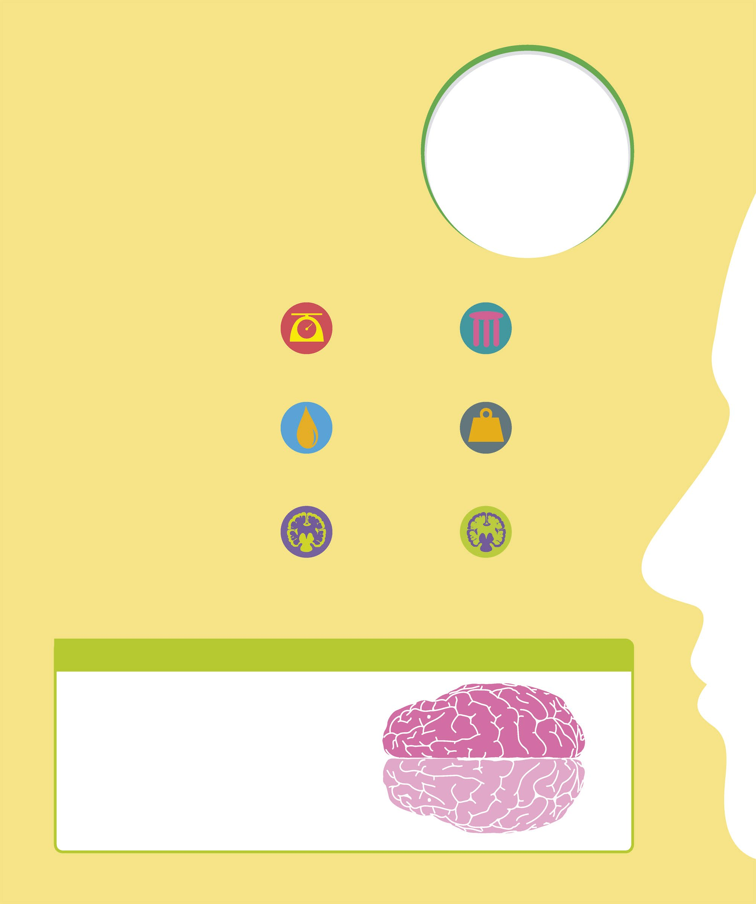
Não bộ có cảm thấy đau không?
Não bộ làm gì
Mặc dù não ghi nhận cảm giác đau từ khắp cơ thể, mô não vẫn không có thụ thể đau và tự bản thân nó không thể cảm thấy đau.
Não bộ là trung tâm điều khiển của cơ thể. Nó điều phối các chức năng cơ bản cần thiết cho sự sinh tồn, kiểm soát các cử động của cơ thể và xử lý dữ liệu cảm giác. Tuy nhiên, nó cũng mã hóa cả một đời ký ức và tạo ra ý thức, trí tưởng tượng cùng cảm giác về bản thân chúng ta.
Bộ não vật lý
Trọng lượng
Chất béo
Trung bình, não của một người trưởng thành nặng 2,6–3,1 lb (1,2–1,4 kg), tức khoảng 2 phần trăm tổng trọng lượng cơ thể.
Trọng lượng khô của não có 60 phần trăm là chất béo. Phần lớn chất béo này tồn tại dưới dạng các lớp vỏ bao bọc các kết nối giữa những (neuron, hay tế bào thần kinh).
Ở quy mô lớn nhất, não người trông như một khối rắn chắc, màu hồng xám. Nó được cấu tạo chủ yếu từ chất béo (khoảng 60 phần trăm) và có mật độ chỉ nhỉnh hơn một chút so với nước. Tuy nhiên, các nhà thần kinh học — những người nghiên cứu cấu trúc và chức năng của não — nhìn nhận cơ quan này như được cấu thành từ hơn 300 vùng riêng biệt, dù liên kết chặt chẽ với nhau. Ở quy mô nhỏ hơn rất nhiều, não được tạo thành từ khoảng 160 tỷ tế bào, một nửa trong số đó là nơ-ron, hay tế bào thần kinh, và khoảng một nửa là các tế bào đệm (glia) thuộc một dạng hay dạng khác (xem tr.20–21).
Nước
Thể tích
Não có 73 phần trăm là nước, trong khi toàn bộ cơ thể thì gần mức 60 phần trăm hơn. Não trung bình chứa khoảng 35 fl oz (1 lít) nước.
Thể tích trung bình của não người dao động từ 69 đến 77 inch khối (1.130 đến 1.260 cm khối), dù thể tích giảm dần theo tuổi tác.
Chất xám
Chất trắng
Khoảng 40 phần trăm mô não là chất xám (gray matter), gồm các thân tế bào thần kinh xếp chặt chẽ.
Khoảng 60 phần trăm mô não là chất trắng (white matter). Bộ phận này được tạo từ những phần nhô ra dài, giống như dây dẫn, của các tế bào thần kinh, được bọc trong lớp vỏ chất béo.
NÃO TRÁI SO VỚI NÃO PHẢI
Người ta thường khẳng định rằng một bên, hay một bán cầu (hemisphere), của não chi phối bên kia — và điều đó ảnh hưởng đến tính cách của một người. Chẳng hạn, có người nói rằng những người logic dùng bán cầu não trái, trong khi những người thiên về nghệ thuật (và kém logic hơn) dựa vào bên phải. Tuy nhiên, đây là một sự đơn giản hóa cực đoan. Dù đúng là hai bán cầu không giống nhau về chức năng — ví dụ, các trung tâm ngôn ngữ thường nằm bên trái — thì hầu hết các hoạt động tinh thần khỏe mạnh đều huy động các vùng ở cả hai bên não cùng lúc.
BÁN CẦU NÃO PHẢI
BÁN CẦU NÃO TRÁI
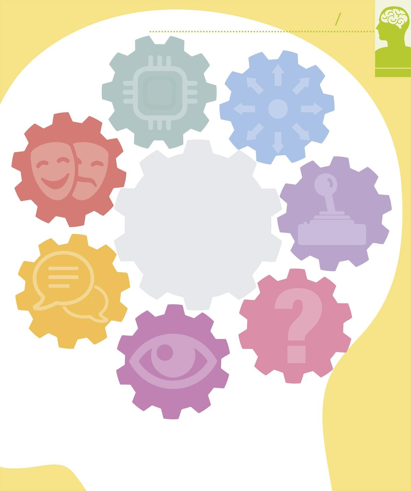
Trí nhớ
Não ghi nhớ một kho tri thức ngữ nghĩa, những sự thật chung về thế giới, cùng với hồ sơ cá nhân về lịch sử cuộc đời. Chức năng của trí nhớ là hỗ trợ sự sinh tồn trong tương lai bằng cách mã hóa những thông tin hữu ích từ quá khứ.
Vận động
Để co lại, các cơ dựa vào cùng loại xung điện vốn truyền tín hiệu thần kinh qua não và cơ thể. Mọi cử động của cơ đều do tín hiệu thần kinh gây ra, nhưng não bộ có ý thức chỉ kiểm soát được một phần hạn chế.
Cảm xúc Hầu hết các thuyết về cảm xúc cho rằng chúng là những kiểu hành vi đã được định sẵn, giúp tăng cơ hội sinh tồn của chúng ta khi gặp phải tình huống rối ren hoặc nguy hiểm. Một số thuyết khác lại cho rằng cảm xúc là những bản năng động vật thấm vào ý thức con người.
Não bộ làm gì?
Điều khiển
Mối quan hệ giữa cơ thể và não từ lâu đã là chủ đề tranh luận của các nhà khoa học và triết gia. Ở Ai Cập cổ đại, não bị xem thường như một hệ thống để tản nhiệt, còn tim là nơi ngự trị của cảm xúc và tư duy. Dù những cảm xúc sâu sắc nhất của chúng ta vẫn được mô tả là heartfelt (chân thành từ đáy lòng), thì khoa học thần kinh cho thấy chính não điều khiển mọi hoạt động của cơ thể.
Các hệ thống cơ bản của cơ thể, như hô hấp, tuần hoàn, tiêu hóa và bài tiết, đều nằm dưới quyền kiểm soát tối cao của não, vốn tìm cách điều chỉnh nhịp độ của chúng cho phù hợp với nhu cầu của cơ thể.
Giao tiếp Một đặc điểm độc đáo của não người là các trung tâm ngôn ngữ kiểm soát việc cấu tạo ngôn từ và phần cơ bắp thực hiện lời nói. Não cũng dùng một hệ thống dự đoán để hiểu điều người khác đang nói.
Tư duy
Não là nơi diễn ra tư duy và trí tưởng tượng. Tư duy là một hoạt động nhận thức (cognition) cho phép chúng ta giải thích thế giới quanh mình, trong khi trí tưởng tượng giúp ta xem xét các khả năng trong đầu mà không cần dữ liệu từ giác quan.
Trải nghiệm cảm giác Thông tin đến từ khắp cơ thể được não xử lý để tạo nên một bức tranh chi tiết phong phú về môi trường xung quanh. Não lọc bỏ rất nhiều dữ liệu cảm giác được cho là không liên quan.
LÀM PHẲNG TOÀN BỘ CÁC NẾP NHĂN CỦA LỚP NGOÀI CÙNG NÃO SẺ PHỦ MỘT DIỆN TÍCH KHOẢNG 2½ FOOT VUÔNG (2.300 CM VUÔNG)

Não bộ trong cơ thể
Hộp sọ bảo vệ não.
Lan tỏa khắp cơ thể Hệ thần kinh (nervous system) kéo dài khắp toàn bộ cơ thể. Hệ này phức tạp đến mức nếu nối tất cả các dây thần kinh của cơ thể lại, đầu nối cuối, thì có thể quanh thế giới hai lần rưỡi.
Não là thành phần chính của hệ thần kinh người, vốn điều phối các hoạt động của cơ thể với thông tin cảm giác mà nó nhận được.
Não
Tủy sống
Các dây thần kinh tủy của hệ ngoại biên nối với tủy sống của hệ trung ương
Hệ thần kinh
Hai phần chính của hệ thần kinh là hệ thần kinh trung ương (central nervous system, CNS) và hệ thần kinh ngoại biên (peripheral nervous system). CNS gồm não và tủy sống, một bó dày các sợi thần kinh chạy từ não trong đầu xuống tận xương chậu. Phân nhánh ra từ đây là hệ ngoại biên, một mạng lưới dây thần kinh lan khắp phần còn lại của cơ thể. Hệ này được chia theo chức năng: hệ thần kinh cơ thể (somatic nervous system) lo các cử động tự ý của cơ thể, còn hệ thần kinh tự chủ (autonomic nervous system) (xem trang đối diện) lo các chức năng không tự ý.
Tủy sống chạy dọc phía sau, xuyên qua các đốt sống của cột sống
Các dây thần kinh ngoại biên vươn qua thân và các chi tới tay và chân
TỦY SỐNG
Dây thần kinh vận động
Dây thần kinh cảm giác
ĐỐT SỐNG
DÂY THẦN KINH TỦY
Dây thần kinh tủy Hầu hết các dây thần kinh ngoại biên nối với CNS tại tủy sống và tách ra khi chúng kết nối. Nhánh phía sau mang dữ liệu cảm giác lên não; nhánh phía trước mang tín hiệu vận động trở lại cơ thể.
Đốt sống xương bảo vệ tủy sống
Dây thần kinh tọa là dây thần kinh lớn nhất và dài nhất trong cơ thể
CỘT SỐNG (NHÌN TỪ PHÍA SAU)
Các dây thần kinh cảm giác và vận động thường được bó chung với nhau, tách ra ở các đầu mút
DÂY THẦN KINH SỌ
Trong hệ ngoại biên, 12 dây thần kinh sọ (cranial nerves) nối trực tiếp với não thay vì với tủy sống. Hầu hết nối vào mắt, tai, mũi và lưỡi, đồng thời tham gia vào các cử động của mặt, nhai và nuốt, nhưng dây thần kinh phế vị thì nối trực tiếp với tim, phổi và các cơ quan tiêu hóa.
Tín hiệu dọc theo dây thần kinh thị giác đi thẳng vào não
CHÚ GIẢI
Hệ thần kinh trung ương (CNS)
Hệ thần kinh ngoại biên
Tủy sống
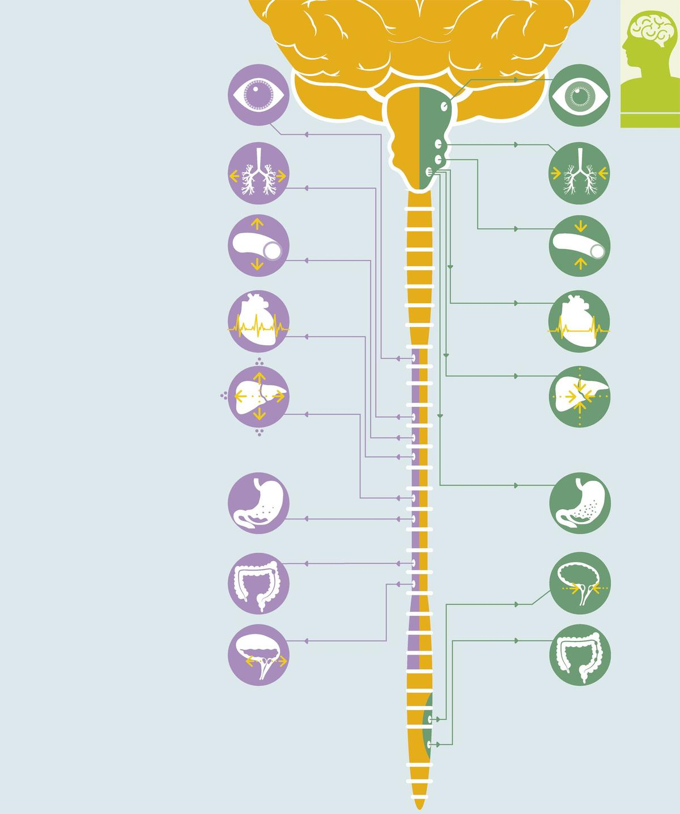
MẮT
MẮT
Hệ thần kinh tự chủ
Hệ không tự ý, hay tự chủ, duy trì các điều kiện bên trong của cơ thể bằng cách kiểm soát các cơ không tự ý trong hệ tiêu hóa và nơi khác, cũng như nhịp tim, nhịp thở, nhiệt độ cơ thể và các quá trình trao đổi chất. Hệ tự chủ được chia thành hai phần. Hệ giao cảm (sympathetic) nhìn chung có tác dụng nâng cao mức hoạt động của cơ thể và tham gia vào cái gọi là phản ứng “chiến đấu hay bỏ chạy” (fight-or-flight). Hệ phó giao cảm (parasympathetic) hoạt động ngược lại, giảm hoạt động để đưa cơ thể về trạng thái “nghỉ ngơi và tiêu hóa” (rest-and-digest).
PHỔI
PHỔI
ĐỘNG MẠCH
ĐỘNG MẠCH
TIM
TIM
GAN
GAN
DẠ DÀY
DẠ DÀY
RUỘT
BÀNG QUANG
TỔNG CHIỀU DÀI CỦA HỆ THẦN KINH CƠ THỂ VÀO KHOẢNG 45 DẶM (72 KM)
BÀNG QUANG
RUỘT
Giao cảm Những dây thần kinh này thoát ra từ tủy sống ở vùng ngực và bụng, rồi nối vào một chuỗi các hạch thần kinh (bó dây thần kinh) chạy dọc hai bên cột sống. Từ đó, các dây thần kinh lại vươn ra khắp cơ thể.
Phó giao cảm Chủ yếu liên quan đến các dây thần kinh sọ (xem ở đầu trang bên trái), phần này của hệ tự chủ có tác dụng giảm tiêu hao năng lượng khi cơ thể nghỉ ngơi. Nó cũng tham gia vào sự hưng phấn tình dục, tiếng khóc và việc đại tiện.
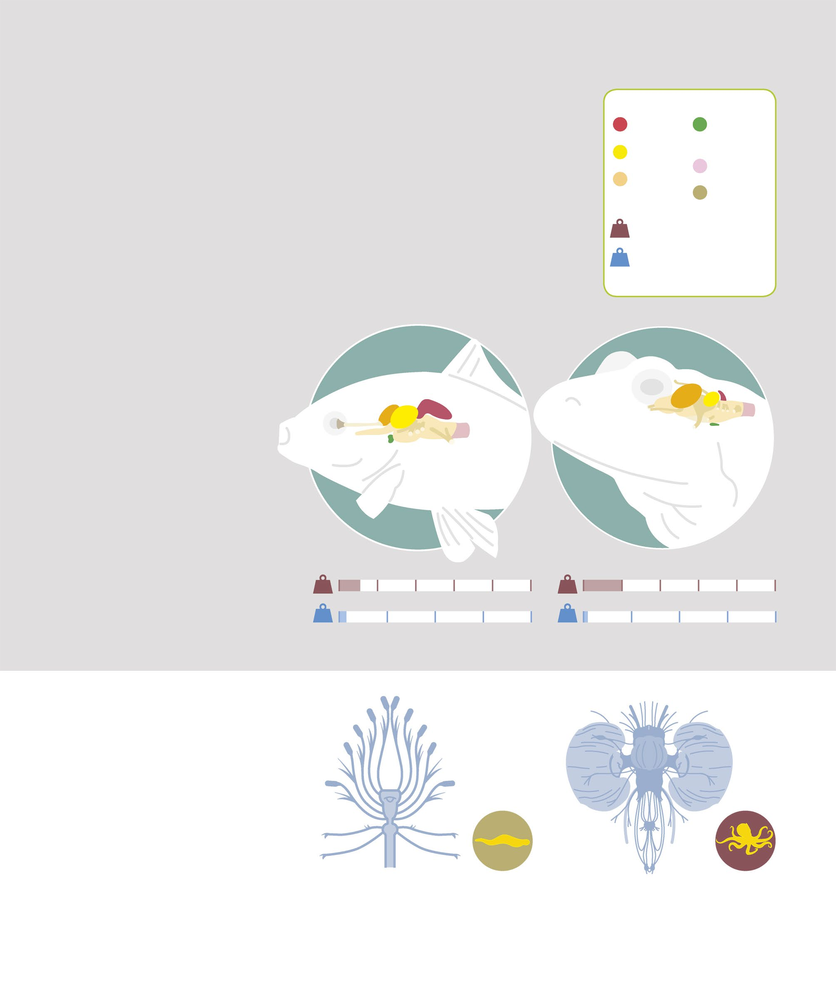
Não bộ của động vật
CHÚ GIẢI
Tiểu não
Tuyến yên
Thùy thị giác
Hành não
Não người là một trong những đặc điểm định hình nên loài chúng ta. So sánh não người với não của các động vật khác cho thấy mối liên hệ giữa kích thước não và trí thông minh, cũng như giữa giải phẫu não của một con vật và cách nó sinh sống.
Đại não
Củng khứu giác
Khối lượng não
Khối lượng não tính theo phần trăm khối lượng cơ thể
Kích thước não
Kích thước của não cho thấy tổng sức mạnh xử lý của nó. Chẳng hạn, bộ não bé xíu của một con ong mật chứa 1 triệu nơ-ron, của cá sấu sông Nile có 80 triệu, trong khi não người có khoảng 80–90 tỷ nơ-ron. Mối liên hệ với trí thông minh là rõ ràng. Tuy nhiên, với những động vật lớn hơn, điều quan trọng là phải so sánh kích thước não và cơ thể để có một chỉ báo tinh tế hơn về năng lực nhận thức.
CÁ VÀNG
ẾCH BÒ
So đo kích thước Có hai cách so sánh kích thước não: theo trọng lượng tổng và theo phần trăm trọng lượng cơ thể. Bộ não lớn nhất, nặng 17 lb (7,8 kg), thuộc về cá voi đầu bò, nhưng đó chỉ là một phần cực nhỏ trong cơ thể nặng 44 tấn (45 tấn mét) của nó.
- 0,04 oz
- 0,04 oz
- 0 0,004 oz (0,1 g)
- 1 g
- 0
- 0,04 oz (0,2 g)
- 1 g
- 0 0,16%
- 2
- 0 0,04%
- 2
Thực quản chạy xuyên qua giữa não
Các dây thần kinh phân nhánh ra đầu và cơ thể từ mỗi hạch thần kinh
HÌNH DÁNG NÃO
Mọi bộ não đều nằm trong đầu, gần các cơ quan cảm giác chính. Tuy nhiên, sẽ là sai lầm nếu hình dung não động vật chỉ là những biến thể sơ khai về kích thước và cấu trúc của não người. Não của mọi động vật có xương sống (vertebrates) đều đi theo một kế hoạch phát triển chung, nhưng giải phẫu lại khác nhau rất nhiều để đáp ứng các nhu cầu cảm giác và hành vi khác nhau. Sự đa dạng lớn hơn thấy rõ ở não của động vật không xương sống (invertebrates), chiếm 95 phần trăm tổng số loài động vật.
Não hình bánh vòng
Đỉa Các tế bào 10.000 trong hệ thần kinh của một con đỉa được sắp xếp thành chuỗi các cụm tế bào gọi là hạch thần kinh (ganglia). Não là một hạch lớn, gồm 350 nơ-ron, nằm ở phía trước cơ thể.
Bạch tuộc Não của một con bạch tuộc chứa 500 triệu nơ-ron. Chỉ một phần ba nằm trong đầu; phần còn lại nằm ở các xúc tu và da, nơi chúng đảm nhiệm việc kiểm soát cảm giác và vận động.

TỶ LỆ KHÁC NHAU
Não của mọi động vật có vú đều chứa các thành phần giống nhau, nhưng chúng phát triển với tỷ lệ khác nhau. Một phần ba thể tích hệ thần kinh trung ương (CNS) của chuột là tủy sống, cho thấy sự phụ thuộc vào các cử động phản xạ. Ngược lại, tủy sống chỉ chiếm một phần mười CNS của con người. Thay vào đó, ba phần tư được chiếm bởi đại não, vốn dùng cho tri giác (perception) và nhận thức.
Đại não
Đại não
NÃO CHUỘT
NÃO NGƯỜI
Cút châu Âu
MÈO NHÀ
CON NGƯỜI
- 0,04 oz
- 1,76 oz
- 49,4 oz
- 0
- 0,03 oz (0,9 g) 1 g
- 0
- 1,05 oz (30 g)
- 50 g
- 0
- 47,6 oz (1.350 g) 1.400 g
- 0
- 0,9%
- 2
- 0
- 0,9%
- 2
- 0
- 2% 2
Các củng khứu giác nằm sau các lỗ mũi (nares), những khe giống lỗ mũi dùng để đánh hơi trong nước
Vỏ não được gấp nếp nhiều hơn ở người
MỌI ĐỘNG VẬT ĐỀU CÓ NÃO KHÔNG?
Bọt biển hoàn toàn không có tế bào thần kinh, trong khi sứa và san hô có hệ thần kinh dạng lưới nhưng không có điểm điều khiển trung ương.
Cá mập Não của cá mập có hình chữ Y nhờ các củng khứu giác lớn nhô ra ở hai bên. Khứu giác là cách chính để cá mập lần theo con mồi.
Cá heo Các trung tâm thính giác và thị giác trong não cá heo lớn hơn và nằm gần nhau hơn so với não người. Người ta cho rằng điều này giúp cá heo tạo ra một hình ảnh trong đầu bằng sóng siêu âm của nó.

Các cơ quan thiết yếu được cố định an toàn trong lõi cơ thể, nhưng vì não nằm ở đầu, trên đỉnh cơ thể, nên nó cần một hệ thống bảo vệ riêng.
Các xoang màng cứng thu máu đã cạn oxy
Sọ não
Các xương của đầu được gọi chung là hộp sọ, nhưng chính xác hơn thì được chia thành sọ não (cranium) và hàm dưới, hay xương hàm. Sọ não được nâng đỡ bởi đốt sống cổ cao nhất và hệ cơ của cổ. Sọ não tạo thành một hộp xương bao quanh hoàn toàn bộ não. Nó gồm 22 xương dần dần dính lại với nhau trong những năm đầu đời để tạo thành một cấu trúc đơn nhất, cứng chắc. Tuy nhiên, sọ não có khoảng 64 lỗ, gọi là lỗ xương (foramina), để các dây thần kinh và mạch máu đi qua, cùng tám khoảng rỗng chứa khí, hay xoang, giúp giảm trọng lượng của hộp sọ.
THÙY ĐỈNH (2)
THÙY TRÁN (1)
XƯƠNG BƯỚM (1)
XƯƠNG SÀNG (1)
Khoảng dưới nhện
THÙY THÁI DƯƠNG (2)
THÙY CHẨM (1)
Xương đôi Não được bao bọc bởi tám xương lớn, với một đôi xương đỉnh và xương thái dương tạo thành mỗi bên của sọ não. 14 xương sọ còn lại tạo nên bộ xương mặt.
Hướng dòng chảy Dịch não tủy chảy từ
2
các não thất vào khoảng dưới nhện, rồi từ đó đi lên và qua phía trước của não.
Dịch não tủy
Não không tiếp xúc trực tiếp với sọ não. Thay vào đó, nó được treo lơ lửng trong dịch não tủy (cerebrospinal fluid, CSF). Chất lỏng trong suốt này lưu thông bên trong sọ não, tạo ra một lớp đệm quanh não để bảo vệ nó khi đầu bị va chạm. Thêm vào đó, não nổi không bị biến dạng dưới trọng lượng của chính nó — điều mà nếu không sẽ hạn chế dòng máu đến các vùng bên trong thấp hơn. Lượng CSF chính xác cũng thay đổi để duy trì áp lực tối ưu bên trong sọ não. Giảm thể tích CSF sẽ hạ áp lực, lần lượt giúp máu lưu thông dễ dàng hơn qua não.
NƯỚC TRÊN NÃO LÀ GÌ?
CSF ĐƯỢC SẢN XUẤT LIÊN TỤC, VÀ TOÀN BỘ ĐƯỢC THAY THẾ SAU MỖI 6–8 GIỜ
Còn gọi là não úng thủy, tình trạng này phát sinh khi có quá nhiều CSF trong sọ não. Nó gây áp lực lên não và ảnh hưởng đến chức năng của não.
Màng não và não thất Não được bao quanh bởi ba màng, gọi là màng não (meninges): màng mềm (pia mater), màng nhện (arachnoid mater) và màng cứng (dura mater). CSF lấp đầy các hốc gọi là não thất và lưu thông quanh bên ngoài não trong khoảng dưới nhện, nằm giữa màng mềm và màng nhện.

Màng cứng
Hàng rào máu não
Màng nhện
Các nhiễm trùng từ phần còn lại của cơ thể thường không thể đến não nhờ một hệ thống gọi là hàng rào máu não (blood-brain barrier). Nhìn chung, các mao mạch máu ở phần còn lại của cơ thể dễ dàng rò rỉ chất lỏng (cùng với bất kỳ vi rút và vi khuẩn nào chứa trong đó) vào các mô xung quanh qua các khe hở giữa các tế bào tạo thành thành mạch. Ở não, chính những tế bào đó khít chặt hơn nhiều, và dòng vật chất giữa máu và não được kiểm soát bởi các tế bào sao (astrocytes) bao quanh mạch máu.
Màng mềm
Vị trí sản xuất dịch CSF được làm từ huyết tương, phần
1
lỏng của máu. Phần lớn dịch được tạo bởi đám rối màng mạch (choroid plexus), một mạng lưới mạch máu chạy khắp hệ thống não thất.
Tái hấp thụ CSF được tái hấp thụ
CSF chảy vào các não thất
4
vào hệ tuần hoàn, nơi nó hòa trộn lại với máu. CSF được đổi mới với tốc độ ba đến bốn lần mỗi ngày.
Não thất bên — đám rối màng mạch
Các chất đi ra khỏi mạch qua lỗ chân lông
Các chất tan trong chất béo đi xuyên qua màng tế bào
NÃO THẤT THỨ BA
Các chất tan trong nước đi vào qua khe giữa các tế bào
NÃO THẤT THỨ TƯ
MẠCH MÁU BÌNH THƯỜNG
TIỂU NÃO
Một số chất tan trong nước đi vào não
Kết nối chặt giữa các tế bào
HỘP SỌ
CSF chảy xuống phía sau tủy sống
Tế bào sao bao quanh mạch máu
Các chất tan trong chất béo di chuyển tự do
MẠCH MÁU NON
Lưu thông quanh
3
tủy sống Ngoài não, CSF còn bao quanh tủy sống, chảy xuống dọc phía sau tủy sống, vào ống trung tâm, rồi đi lên dọc phía trước.
ỐNG TRUNG TÂM CỦA TỦY SỐNG
CHÚ GIẢI
Thấm chọn lọc Các mạch máu bình thường cho chất lỏng đi qua dễ dàng. Tuy nhiên, trong khi oxy, hormone gốc chất béo và vật chất không tan trong nước đi qua hàng rào máu não không bị cản trở, thì các chất tan trong nước bị chặn lại nên không đến được CSF.
Dòng máu
Dòng dịch não tủy
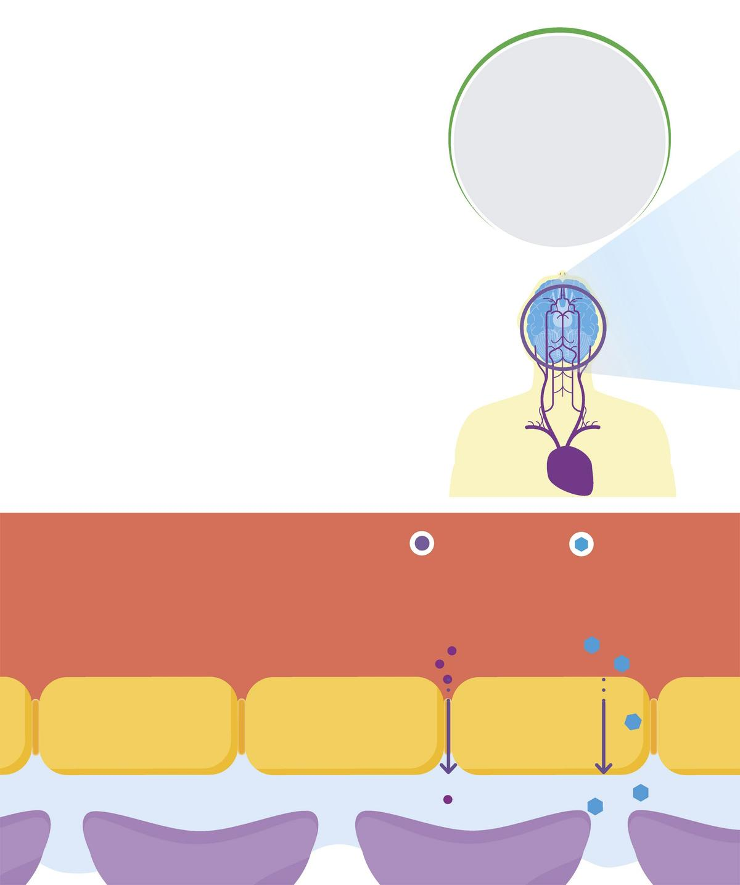
CÓ PHẢI SỰ TẬP TRUNG CAO ĐỘ TIÊU HAO NHIỀU NĂNG LƯỢNG HƠN KHÔNG?
Não bộ
Não không bao giờ ngừng hoạt động, và mức tiêu thụ năng lượng tổng thể giữ gần như không đổi trong 24 giờ mỗi ngày.
Não là một cơ quan “khát” năng lượng. Khác với các cơ quan khác trong cơ thể, nó chỉ được tiếp nhiên liệu bằng glucose, một loại đường đơn giản, dễ và nhanh chuyển hóa.
Cung cấp máu
Tim bơm máu đi khắp cơ thể, nhưng khoảng một phần sáu tổng công sức của nó được dành để đẩy máu lên não. Máu đến não qua hai đường động mạch chính. Hai động mạch cảnh (carotid arteries), một chạy lên mỗi bên cổ, đưa máu đến phía trước não (cùng với mắt, mặt và da đầu). Phía sau não được cung cấp bởi các động mạch đốt sống (vertebral arteries), vươn lên xoắn qua cột sống. Sau đó, máu đã mất oxy tích tụ trong các xoang não, những khoảng được tạo bởi các tĩnh mạch phình to chạy qua não. Máu ở đó thoát ra khỏi não và đi xuống qua cổ qua các tĩnh mạch cảnh trong. Hệ mạch máu đưa 26 fl oz (750 ml) máu đến não mỗi phút, tương đương 1,7 fl oz (50 ml) cho mỗi 3,5 oz (100 g) mô não. Nếu thể tích đó giảm xuống dưới khoảng 0,7 fl oz (20 ml), mô não sẽ ngừng hoạt động.
Động mạch cảnh
Động mạch đốt sống
TỪ TIM ĐẾN
Đi qua hàng rào máu não
Khuếch tán Các tế bào được bao bọc
Vận chuyển qua khe Các chất tan trong nước và
Hàng rào máu não là một rào cản vật lý và trao đổi chất giữa não và nguồn cung máu của nó. Hàng rào này bảo vệ thêm chống lại nhiễm trùng, vốn rất khó đối phó trong não bằng hệ miễn dịch thông thường, và có thể khiến não rối loạn chức năng theo những cách nguy hiểm. Có sáu cách để vật chất đi qua hàng rào. Ngoài ra, không thứ gì ra vào được.
bởi một màng mỡ, nên các chất tan trong chất béo, gồm oxy và rượu, khuếch tán qua tế bào.
chất điện giải, chẳng hạn như muối và ion
MẠCH MÁU (nguyên tử hoặc phân tử mang điện), có thể đi qua các khe nhỏ giữa các tế bào thành mao mạch.
Chất tan trong nước
Chất tan trong chất béo
HÀNG RÀO MÁU NON
Thành tế bào Rào cản vật lý của hàng rào máu não được tạo bởi các tế bào cấu thành thành mao mạch trong não. Ở những nơi khác của cơ thể, các tế bào này nối lỏng, để lại các khe hở, hay mối nối lỏng. Ở não, các tế bào nối với nhau bằng mối nối chặt (tight junction).
Mối nối chặt
Phân tử đi xuyên qua tế bào
NÃO
Tế bào sao thu vật chất từ máu và chuyển cho nơ-ron

VÒNG WILLIS
Động mạch não trước cung cấp máu cho phía trước não
NHIÊN LIỆU GLUCOSE
Não người chỉ chiếm 2 phần trăm tổng trọng lượng cơ thể, nhưng tiêu thụ 20 phần trăm năng lượng của cơ thể. Bộ não lớn của con người là một cơ quan đắt đỏ để vận hành, nhưng lợi ích của một bộ não lớn và thông minh khiến nó trở thành một khoản đầu tư xứng đáng.
Đường giữa
Động mạch cảnh trong động mạch não cung cấp máu cho hai bên não
Động mạch não sau cung cấp máu cho phía sau não
Hướng dòng chảy của máu
Các động mạch vây quanh cuống tuyến yên, các bó thị giác và vùng dưới đồi đáy
Động mạch nền Động mạch tiểu não cung cấp máu cho tiểu não
Động mạch đốt sống
KÍCH THƯỚC NÃO: 2%
NHU CẦU NĂNG LƯỢNG CỦA NÃO: 20%
MẶT DƯỚI CỦA NÃO
TOÀN BỘ LƯỢNG MÁU CỦA CƠ THỂ ĐƯỢC BƠM QUA NÃO SAU MỖI 7 PHÚT
Vòng Willis Các nguồn cung từ động mạch cảnh và động mạch đốt sống nối với nhau ở đáy não qua các động mạch thông nối, tạo thành một vòng mạch gọi là Vòng Willis. Đặc điểm này đảm bảo dòng máu não được duy trì, ngay cả khi một trong các động mạch bị tắc.
Vận chuyển protein Glucose và các
Thụ thể Các hormone và các chất
Vận chuyển qua bóng Các protein lớn, vốn
Thải ra tích cực Khi các chất không mong muốn
phân tử thiết yếu, được di chuyển tích cực qua hàng rào thông qua các kênh và cổng trong màng.
tương tự được các thụ thể thu lấy. Chúng được bao trong một bóng nhỏ (túi) làm bằng màng để đi xuyên qua tế bào.
quá lớn để đi qua kênh, được màng hấp thụ và bao trong một bóng nhỏ cho hành trình xuyên qua tế bào.
khuếch tán qua hàng rào máu não, chúng được loại bỏ bằng một hệ thống bơm sinh hóa gọi là chất vận chuyển thải ra (efflux transporters).
Phân tử protein được bao trong bóng nhỏ
Glu-cô
Hormone đến thụ thể và đi vào bóng nhỏ
Chất thải được bơm vào mạch máu
Cổng được làm từ protein
Bóng nhỏ hợp với màng để giải phóng nội dung
Các sản phẩm thải không mong muốn

CHẤT XÁM
Não được chia thành chất xám và chất trắng. Chất xám gồm các thân tế bào thần kinh, thường thấy ở bề mặt não. Chất trắng gồm các sợi trục (axon) có bao myelin của chính những tế bào thần kinh đó, bó thành từng chùm. Chúng chạy xuyên qua giữa não và đi xuống tủy sống.
Não và phần còn lại của hệ thần kinh chứa một mạng lưới tế bào gọi là nơ-ron. Vai trò của nơ-ron là mang tín hiệu thần kinh qua não và cơ thể dưới dạng các xung điện.
Nơ-ron
Hầu hết các nơ-ron có hình dạng phân nhánh đặc trưng, với hàng chục sợi mảnh, chỉ dày vài phần trăm nghìn của một foot, nhô ra từ thân tế bào về phía các tế bào lân cận. Các nhánh gọi là sợi nhánh (dendrites) đưa tín hiệu vào tế bào, trong khi một nhánh duy nhất gọi là sợi trục (axon) truyền tín hiệu sang nơ-ron tiếp theo. Trong hầu hết trường hợp, không có kết nối vật lý giữa các nơ-ron. Thay vào đó, có một khe hở nhỏ gọi là khớp thần kinh (synapse), nơi các tín hiệu điện dừng lại. Sự trao đổi thông tin giữa các tế bào được thực hiện thông qua việc trao đổi các hóa chất gọi là chất dẫn truyền thần kinh (neurotransmitters) (xem tr.22–23). Tuy nhiên, một số nơ-ron thực chất được nối vật lý với nhau và không cần chất dẫn truyền thần kinh để trao đổi tín hiệu.
CHẤT XÁM
CHẤT TRẮNG
Các loại nơ-ron Có một vài loại nơ-ron, với những tổ hợp khác nhau giữa sợi trục và sợi nhánh. Hai loại thường gặp, nơ-ron lưỡng cực và nơ-ron đa cực, mỗi loại phù hợp với một nhiệm vụ riêng. Một loại khác, nơ-ron đơn cực, chỉ xuất hiện ở phôi thai.
Sợi nhánh hoạt động như những ăng-ten để thu tín hiệu từ các tế bào thần kinh lân cận
Sợi trục có thể dài đến vài centimet
Xung điện nhảy từ đoạn bao myelin này sang đoạn khác, làm tăng tốc tín hiệu thần kinh
Kết nối với các tế bào não Sợi trục
Sợi nhánh nhận tín hiệu từ cơ quan cảm giác
Sợi nhánh ngắn hơn sợi trục, thường chỉ dài tới 16 phần trăm nghìn của một foot
Thân tế bào
SỢI TRỤC
Nơ-ron lưỡng cực Loại nơ-ron này có một sợi nhánh và một sợi trục. Nó truyền thông tin chuyên biệt từ các cơ quan cảm giác chính của cơ thể.
Sợi trục mang tín hiệu từ tế bào lân cận
Thân tế bào
Khớp thần kinh với tế bào khác
Sợi trục
Sợi nhánh
NÃO NGƯỜI CHỨA KHOẢNG 86 TỶ NƠ-RON
Nơ-ron đa cực Hầu hết tế bào não là nơ-ron đa cực. Chúng có nhiều sợi nhánh nối với hàng trăm, thậm chí hàng nghìn tế bào khác.
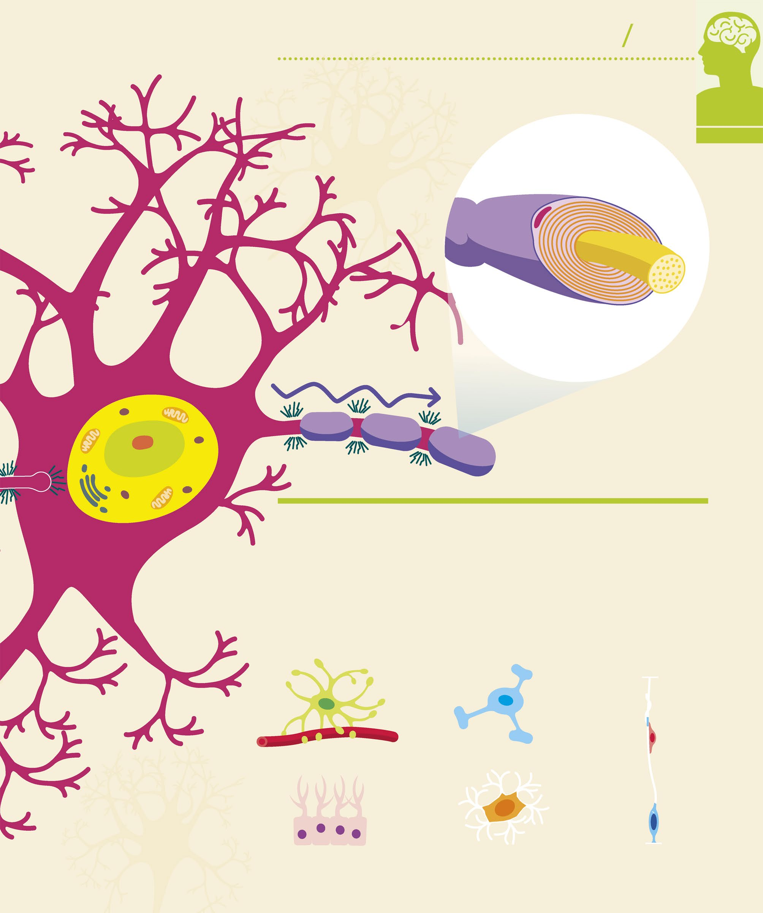
Các hóa chất đi qua từ tế bào lân cận tạo ra một xung điện trong sợi nhánh
BAO MYELIN
Một số nơ-ron trong hệ thần kinh ngoại biên có tế bào Schwann tạo myelin
Các sợi thần kinh (neurofibrils)
MÀNG SỢI TRỤC
VỎ BAO MYELIN
Vỏ bao myelin quấn quanh sợi trục
Màng tế bào dẫn truyền các xung thần kinh
Một tín hiệu điện tổng hợp duy nhất được gửi sang tế bào tiếp theo
Thân tế bào thần kinh
Cách ly Một sợi trục có thể được bọc trong một lớp vỏ chất béo gọi là bao myelin (myelin). Lớp này hoạt động như vật liệu cách ly, ngăn các điện tích rò rỉ ra ngoài, từ đó làm tăng tốc độ tín hiệu.
DNA
NHÂN TẾ BÀO
SỢI TRỤC
Tế bào đệm
Hệ thần kinh dựa vào một đội ngũ tế bào phụ trợ gọi là tế bào đệm (glia). Các tế bào sao (astrocytes) kiểm soát hóa chất nào đi vào não từ máu. Các tế bào oligodendrocyte tạo myelin cho các tế bào não, tạo nên chất trắng. Các tế bào ependymal tiết dịch não tủy, trong khi các tế bào đệm vi mô (microglia) hoạt động như tế bào miễn dịch, dọn dẹp các tế bào chết. Các tế bào đệm hướng tâm (radial glia) là tiền chất của nơ-ron.
Bộ máy Golgi đóng gói hóa chất
Tế bào phụ trợ Có tám loại tế bào đệm chính, nhưng chỉ năm loại thường gặp trong não. Chúng bảo vệ sức khỏe tổng thể của hệ thần kinh.
Lysosome phá hủy hóa chất thải
Ty thể xử lý glucose
Mạch máu được nâng đỡ
Vỏ myelin được tạo ở đây
Nơ-ron đang phát triển
TẾ BÀO SAO
TẾ BÀO OLIGODENDROCYTE
Lông mao giúp di chuyển chất dẫn truyền thần kinh
Bên trong một nơ-ron Một nơ-ron chứa về cơ bản cùng một bộ bào quan, hay cấu trúc bên trong, như bất kỳ tế bào nào khác, để giải phóng năng lượng, chế tạo protein và quản lý vật chất di truyền.
Tế bào dài, thẳng cung cấp sự nâng đỡ
Tế bào bị tổn thương được phát hiện ở đây
TẾ BÀO EPENDYMAL
TẾ BÀO ĐỆM VI MÔ
TẾ BÀO ĐỆM HƯỚNG TÂM
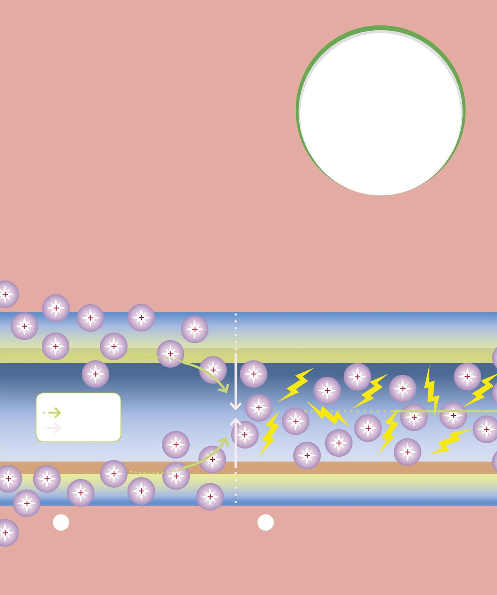
Tín hiệu thần kinh
LÀM THẾ NÀO ĐỂ MỘT
DÂY THẦN KINH TRUYỀN CÁC THÔNG TIN KHÁC NHAU?
Bộ não và hệ thần kinh hoạt động bằng cách truyền tín hiệu qua bên trong các tế bào dưới dạng các xung điện tích, và giữa các tế bào thì hoặc là dùng các chất dẫn truyền hóa học gọi là neurotransmitters (chất dẫn truyền thần kinh), hoặc là dùng điện tích.
Các tế bào nhận có các loại thụ thể khác nhau, đáp ứng với các chất dẫn truyền thần kinh khác nhau. “Thông điệp” khác nhau tùy theo chất dẫn truyền thần kinh nào được gửi và nhận, cũng như số lượng của chúng.
Điện thế hoạt động (action potential)
Các nơ-ron truyền tín hiệu bằng cách tạo ra điện thế hoạt động—một dòng điện bùng lên do các ion natri và kali đi qua màng tế bào. Tín hiệu này di chuyển dọc theo sợi trục (axon) và kích thích các thụ thể trên sợi nhánh (dendrite) của các tế bào lân cận. Điểm nối giữa các tế bào được gọi là khớp thần kinh (synapse). Ở nhiều nơ-ron, điện tích được truyền qua một khe hở rất nhỏ giữa sợi trục và sợi nhánh nhờ các hóa chất, gọi là chất dẫn truyền thần kinh, được giải phóng từ đầu sợi trục. Những điểm nối này được gọi là khớp thần kinh hóa học. Tín hiệu có thể khiến nơ-ron lân cận phát xung, hoặc có thể ngăn nó phát xung.
MỘT SỐ XUNG THẦN KINH DI CHUYỂN NHANH HƠN 330 FT (100 M) MỖI GIÂY
Lượng ion dương dư thừa ở bên ngoài màng tế bào.
Các kênh màng mở ra để ion đi vào.
Lượng ion dư thừa bên trong tạo ra điện tích dương.
MÀNG SỢI TRỤC CỦA TẾ BÀO
CHẤT LỎNG BÊN TRONG SỢI TRỤC
CHÚ THÍCH
Các ion dương ồ ạt tràn vào.
Hướng của xung thần kinh.
Dòng chảy của các ion.
Hướng của xung thần kinh.
Quá trình khử cực (depolarization): Những thay đổi hóa học từ thân tế bào
Điện thế nghỉ (resting potential): Khi nơ-ron ở trạng thái nghỉ, có nhiều ion dương
1
2
cho phép các ion dương tràn vào tế bào qua màng. Điều này đảo ngược sự phân cực của sợi trục, khiến hiệu điện thế trở thành +30 milivôn.
ở bên ngoài màng hơn là bên trong. Điều này tạo ra sự khác biệt về phân cực, hay điện thế, qua màng được gọi là điện thế nghỉ. Hiệu số này vào khoảng –70 milivôn, nghĩa là bên ngoài mang điện dương.

Khớp thần kinh
CHẤT ĐỘC THẦN KINH
Một số nơ-ron không chia sẻ một kết nối vật lý. Thay vào đó, chúng gặp nhau tại một cấu trúc tế bào gọi là khớp thần kinh, nơi có một khe hở rộng 40 phần tỷ của mét, được gọi là khe synap (synaptic cleft), giữa sợi trục của một nơ-ron (tế bào trước synap) và sợi nhánh của nơ-ron kia (tế bào sau synap). Bất kỳ tín hiệu mã hóa nào được mang bởi các xung điện sẽ được chuyển thành thông điệp hóa học ở đầu, hay đầu tận cùng, của sợi trục. Các thông điệp này có dạng của một trong một số phân tử gọi là chất dẫn truyền thần kinh (xem tr.24), đi qua khe synap để được sợi nhánh tiếp nhận. Các nơ-ron khác có khớp thần kinh điện thay vì khớp thần kinh hóa học. Những khớp này thực chất được nối vật lý với nhau và không cần chất dẫn truyền thần kinh để mang điện tích giữa chúng.
Các vũ khí hóa học, như novichok và sarin, hoạt động bằng cách can thiệp vào cách các chất dẫn truyền thần kinh hoạt động tại khớp thần kinh. Các chất độc thần kinh có thể được hít vào hoặc tác động khi tiếp xúc với da. Chúng ngăn khớp thần kinh dọn dẹp acetylcholine đã sử dụng, chất có liên quan đến việc kiểm soát cơ bắp. Kết quả là các cơ, kể cả cơ dùng cho tim và phổi, bị tê liệt.
Bóng synap (synaptic vesicle).
Đầu tận cùng sợi trục — khe synap — tế bào sau synap.
Kho hóa chất: Các chất dẫn truyền thần kinh được
1
được sản xuất trong thân tế bào của nơ-ron. Chúng di chuyển dọc sợi trục đến đầu tận cùng, nơi chúng được đóng gói thành các túi màng, hay bóng. Ở giai đoạn này, màng của đầu tận cùng mang cùng điện thế như phần còn lại của sợi trục.
Chất dẫn truyền thần kinh.
Thụ thể cho chất dẫn truyền thần kinh.
Điện thế hoạt động đến và khử cực màng.
Tín hiệu được nhận: Khi một điện thế hoạt động
2
ồ ạt đi xuống sợi trục, điểm đến cuối cùng của nó là đầu tận cùng, nơi nó tạm thời khử cực màng. Sự thay đổi điện này có tác dụng mở các kênh protein trong màng, cho phép các ion calci mang điện dương tràn vào tế bào.
Các ion calci chảy vào.
Các ion dương bị bơm ra ngoài.
Sự khử cực khiến các kênh điều khiển bằng điện thế mở ra.
Dòng calci tràn vào khiến các bóng synap giải phóng chất dẫn truyền thần kinh.
Giải phóng thông điệp: Sự hiện diện của calci
3
bên trong tế bào khởi phát một quá trình phức tạp di chuyển các bóng đến màng tế bào. Khi đến nơi, các bóng giải phóng chất dẫn truyền thần kinh vào khe hở. Một số khuếch tán qua khe để được các thụ thể trên sợi nhánh bắt lấy. Các chất dẫn truyền thần kinh có thể kích thích một điện thế hoạt động hình thành trong sợi nhánh đó, hoặc có thể ức chế không cho nó hình thành.
Các chất dẫn truyền thần kinh lắp vào các vị trí thụ thể.
Tái phân cực (repolarization): Sự khử cực của một đoạn
3
sợi trục khiến đoạn lân cận trải qua cùng một quá trình. Trong khi đó, tế bào bơm các ion dương ra ngoài để tái phân cực màng trở lại điện thế nghỉ.
Các kênh mở ra và khiến các ion dương chảy vào, phân cực tế bào.
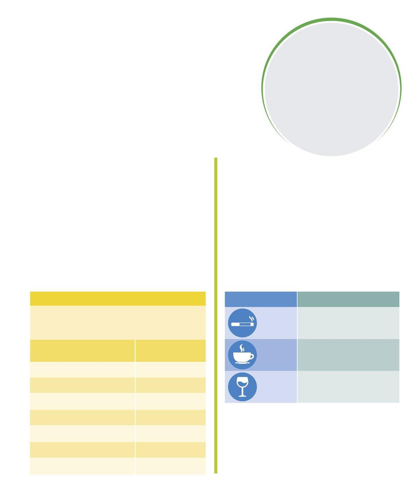
NGHIỆN CÔNG NGHỆ CÓ GIỐNG NHƯ NGHIỆN MA TÚY KHÔNG?
Hóa chất
Không, nghiện công nghệ giống với ăn quá mức hơn. Việc giải phóng dopamine có thể tăng thêm 75 phần trăm khi chơi trò chơi điện tử và 350 phần trăm khi dùng cocaine.
Trong khi sự liên lạc trong bộ não dựa vào các xung điện chạy dọc các tế bào thần kinh giống như dây dẫn, thì hoạt động của các tế bào này—và các trạng thái tinh thần lẫn thể chất mà chúng gây ra—chịu ảnh hưởng lớn từ các hóa chất gọi là chất dẫn truyền thần kinh.
Chất dẫn truyền thần kinh
Thuốc
Các chất dẫn truyền thần kinh hoạt động tại khớp thần kinh, khe hở nhỏ giữa sợi trục của một tế bào và sợi nhánh của tế bào kia (xem tr.23). Một số chất dẫn truyền thần kinh có tác dụng kích thích, nghĩa là chúng giúp tiếp tục truyền xung thần kinh đến sợi nhánh nhận. Các chất dẫn truyền thần kinh ức chế có tác dụng ngược lại. Chúng tạo ra điện tích âm tăng cao, làm ngăn sự truyền của xung thần kinh bằng cách không cho quá trình khử cực xảy ra. Những chất dẫn truyền thần kinh khác, gọi là chất điều hòa thần kinh, điều hòa hoạt động của các nơ-ron khác trong não. Các chất điều hòa thần kinh ở lại lâu hơn tại khớp thần kinh, nên chúng có nhiều thời gian hơn để tác động lên các nơ-ron.
Các hóa chất làm thay đổi trạng thái tinh thần và thể chất, dù hợp pháp hay bất hợp pháp, nhìn chung hoạt động bằng cách tương tác với một chất dẫn truyền thần kinh. Ví dụ, caffeine chặn các thụ thể adenosine, có tác dụng tăng sự tỉnh táo. Alcohol kích thích các thụ thể GABA và ức chế glutamate, cả hai đều nhìn chung ức chế hoạt động thần kinh. Nicotine kích hoạt các thụ thể cho acetylcholine, có một số tác dụng, bao gồm tăng sự chú ý cũng như tăng nhịp tim và huyết áp. Cả alcohol và nicotine đều được liên hệ với mức dopamine tăng cao trong não, chính là điều dẫn đến đặc tính gây nghiện mạnh của chúng.
CÁC LOẠI CHẤT DẪN TRUYỀN THẦN KINH
LOẠI THUỐC
TÁC DỤNG
Một hóa chất trong não kích thích thụ thể liên quan đến một chất dẫn truyền thần kinh cụ thể, làm tăng tác dụng của chất đó.
Có ít nhất 100 chất dẫn truyền thần kinh, một số được liệt kê dưới đây. Việc một chất dẫn truyền thần kinh là kích thích hay ức chế được quyết định bởi nơ-ron trước synap đã giải phóng nó.
Chất đồng vận (Agonist)
Một phân tử làm ngược lại với chất đồng vận, bằng cách ức chế hoạt động của các thụ thể liên quan đến một chất dẫn truyền thần kinh.
TÊN HÓA HỌC CỦA CHẤT DẪN TRUYỀN THẦN KINH
TÁC DỤNG SAU SYNAP THƯỜNG GẶP
Chất đối vận (Antagonist)
Acetylcholine
Chủ yếu kích thích.
Một hóa chất ngăn chất dẫn truyền thần kinh được hấp thu lại bởi nơ-ron gửi, từ đó gây ra phản ứng đồng vận.
Chất ức chế tái hấp thu (reuptake inhibitor)
Axit gamma-aminobutyric (GABA)
Ức chế.
Glutamate
Kích thích.
NỘC NHỆN GÓA ĐEN LÀM TĂNG MỨC CHẤT DẪN TRUYỀN THẦN KINH ACETYLCHOLINE, GÂY CO GIẬT CƠ
Dopamine
Kích thích và ức chế.
Noradrenaline
Chủ yếu kích thích.
Serotonin
Ức chế.
Histamine
Kích thích.
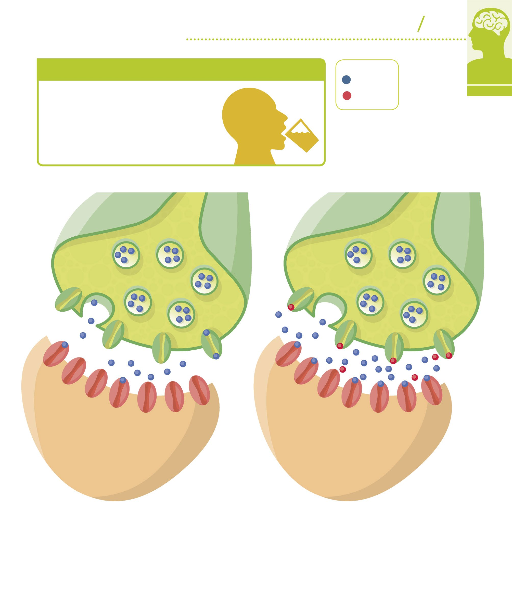
ẢNH HƯỞNG DÀI HẠN CỦA ALCOHOL
CHÚ THÍCH
Dopamine — một chất dẫn truyền thần kinh.
Uống một lượng lớn alcohol trong thời gian dài làm thay đổi tâm trạng, mức độ hưng phấn, hành vi và chức năng tâm thần kinh. Tác dụng ức chế của alcohol vừa kích thích GABA vừa ức chế glutamate, làm giảm hoạt động của não. Nó cũng kích hoạt các trung tâm phần thưởng của não bằng cách giải phóng dopamine, trong một số trường hợp dẫn đến nghiện.
Chất cocaine.
Dopamine và cocaine: Tác dụng của cocaine là kết quả của việc nó tác động lên chất dẫn truyền thần kinh dopamine tại các khớp thần kinh trong não.
Dopamine được giữ trong các bóng bên trong nơ-ron gửi.
Dopamine được giải phóng.
BÓNG
BÓNG
NƠ-RON GỬI
NƠ-RON GỬI
KHỚP THẦN KINH
KHỚP THẦN KINH
THỤ THỂ
THỤ THỂ
Sau khi được giải phóng, một số dopamine liên kết với các thụ thể trên nơ-ron nhận.
Dopamine không dùng được hút ngược lại vào nơ-ron gửi.
Cocaine chặn đường quay trở lại của dopamine vào nơ-ron gửi.
Nồng độ dopamine trong khớp thần kinh tăng lên.
NƠ-RON NHẬN
NƠ-RON NHẬN
NƠ-RON NHẬN
NƠ-RON NHẬN
Mức dopamine bình thường: Dopamine là một chất dẫn truyền thần kinh liên quan đến cảm giác vui sướng. Nó tạo ra động lực lặp lại một số hành vi nhất định gây ra cảm giác phần thưởng, có thể dẫn đến nghiện. Trong khi một số phân tử dopamine liên kết với các thụ thể trên nơ-ron nhận, thì dopamine không dùng được được tái chế bằng cách bơm ngược vào nơ-ron gửi và được đóng gói lại.
Khi sử dụng cocaine: Các phân tử cocaine là chất ức chế tái hấp thu dopamine. Khi dopamine được giải phóng, nó đi vào khớp thần kinh và liên kết với các thụ thể trên nơ-ron nhận như bình thường. Tuy nhiên, cocaine đã chặn các bơm tái hấp thu vốn tái chế dopamine, nên chất dẫn truyền thần kinh tích tụ ở nồng độ cao hơn, làm tăng tác dụng của nó lên nơ-ron nhận.
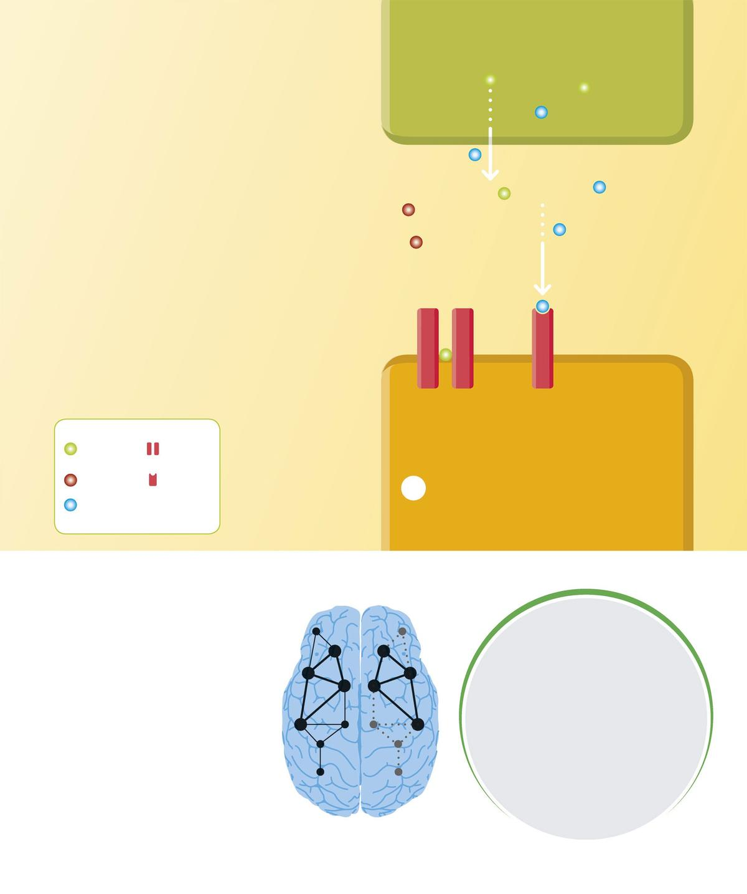
TRONG BỘ NÃO
SỢI TRỤC
Người ta cho rằng các kiểu kết nối giữa các tế bào thần kinh trong não người ảnh hưởng đến cách bộ não xử lý các tri giác cảm giác, thực hiện các nhiệm vụ nhận thức và lưu trữ trí nhớ.
KHE SYNAP
Các ion calci tạo điều kiện cho việc truyền tín hiệu giữa các nơ-ron.
Sợi trục giải phóng chất dẫn truyền thần kinh glutamate.
Đấu dây cho bộ não
Thuyết chủ yếu giải thích cách bộ não ghi nhớ và học tập được tóm gọn bằng câu “các tế bào cùng phát xung thì cùng được nối với nhau” (the cells that fire together, wire together). Thuyết này cho rằng sự liên lạc lặp đi lặp lại giữa các tế bào tạo ra kết nối mạnh hơn giữa chúng, và một mạng lưới tế bào hình thành trong não liên quan đến một quá trình tinh thần cụ thể—chẳng hạn như một cử động, một ý nghĩ, hay thậm chí một ký ức (xem tr.136–37).
Calci không thể đi vào kênh.
Chất dẫn truyền thần kinh glutamate liên kết với thụ thể, cuối cùng làm kênh được mở thông.
SỢI NHÁNH
Ion magie chặn kênh.
Trọng số synap: Các kết nối ít được dùng có kênh bị chặn bởi các ion magie. Khi độ mạnh của kết nối giữa hai nơ-ron trong mạng lưới tăng lên, kênh được mở thông và số lượng thụ thể tại khớp thần kinh tăng lên.
CHÚ THÍCH
Ion magiê.
Kênh.
Thụ thể glutamate.
Ion calci mang điện dương.
Kênh bị chặn: Trong một kết nối yếu, các ion magie chặn
1
Chất dẫn truyền thần kinh glutamate.
đường đi của các ion calci vào sợi nhánh của một nơ-ron nhận. Một chất dẫn truyền thần kinh glutamate nhận được từ sợi trục sẽ mở kênh đó.
Tính dẻo của thần kinh (Neuroplasticity)
Khớp thần kinh mạnh.
Khớp thần kinh yếu.
Các mạng lưới của bộ não không cố định mà dường như thay đổi và thích nghi theo các quá trình tinh thần và thể chất. Điều này có nghĩa là các mạch cũ liên quan đến một ký ức hay một kỹ năng không còn được dùng sẽ yếu đi khi bộ não dành sự chú ý cho một việc khác và hình thành mạng lưới mới với các tế bào khác. Các nhà khoa học thần kinh nói rằng bộ não có tính dẻo, nghĩa là các tế bào và kết nối giữa chúng có thể được tái tạo nhiều lần khi cần. Tính dẻo thần kinh cho phép bộ não phục hồi những khả năng bị mất do tổn thương não.
MẠNG LƯỚI CHẾ ĐỘ MẶC ĐỊNH CỦA BỘ NÃO LÀ GÌ?
Đó là một nhóm vùng não cho thấy mức hoạt động thấp khi đang thực hiện một nhiệm vụ như chú ý, nhưng mức hoạt động cao khi thức và không tham vào một nhiệm vụ tinh thần cụ thể nào.
CÁC ĐƯỜNG DẪN TRONG NÃO
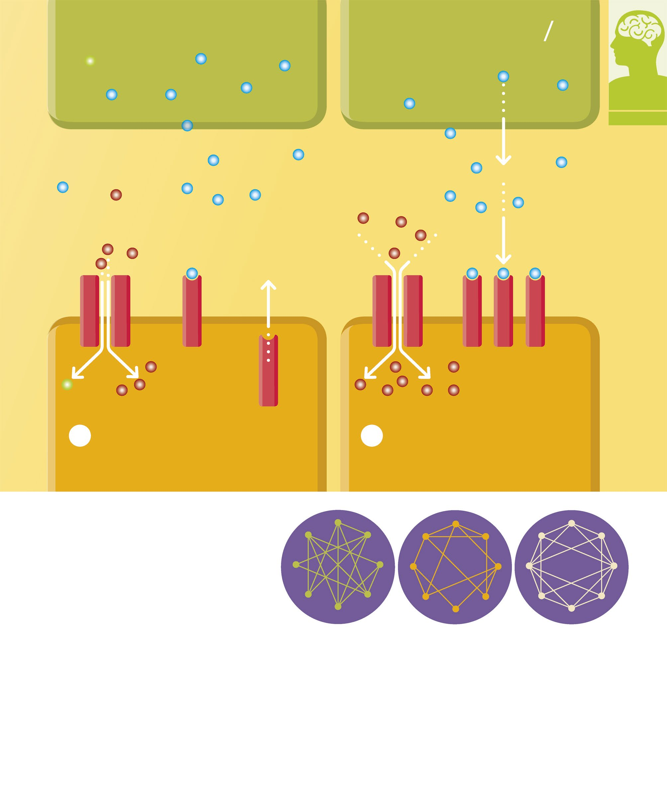
Nhiều hơn các chất dẫn truyền thần kinh được nhận.
Ion magie được đưa ra khỏi kênh.
Các ion calci đi qua tự do.
Các thụ thể glutamate bổ sung được đưa vào.
Kênh mở: Với kênh mở, các ion calci
Thêm thụ thể: Với nhiều thụ thể hoạt động hơn, sợi nhánh
2
3
giờ có thể di chuyển từ khe synap vào sợi nhánh. Để đáp lại, sợi nhánh bổ sung thêm các thụ thể glutamate lên bề mặt của nó.
có thể bắt lấy nhiều chất dẫn truyền thần kinh hơn, nên bất kỳ tín hiệu nào gửi từ sợi trục lân cận cũng được nhận mạnh hơn nhiều.
Mạng lưới thế giới nhỏ (small-world networks)
Các tế bào thần kinh không được kết nối theo một kiểu đều đặn, cũng không tạo thành một mạng lưới ngẫu nhiên. Thay vào đó, nhiều tế bào trong số chúng thể hiện một dạng mạng lưới thế giới nhỏ, trong đó các tế bào ít khi được nối với những tế bào ngay kề mà nối với những tế bào ở gần. Cách tạo mạng lưới này cho phép mỗi tế bào, trung bình mà nói, kết nối với bất kỳ tế bào nào khác trong số bước ít nhất.
Thế giới nhỏ: Mạng lưới thế giới nhỏ có kết nối tốt cả ở phạm vi gần lẫn xa. Mỗi tế bào được nối chặt chẽ hơn so với hai hệ thống kia.
Ngẫu nhiên: Mạng lưới ngẫu nhiên giỏi tạo kết nối đường dài nhưng kém trong việc nối các tế bào ở gần.
Mạng lưới: Bằng cách nối mỗi tế bào với các tế bào lân cận, mạng lưới này có phạm vi hạn chế hơn trong việc tạo kết nối đường dài.
ƯỚC TÍNH NÃO NGƯỜI CHỨA 100 NGHÌN TỶ KẾT NỐI GIỮA 86 TỶ NƠ-RON
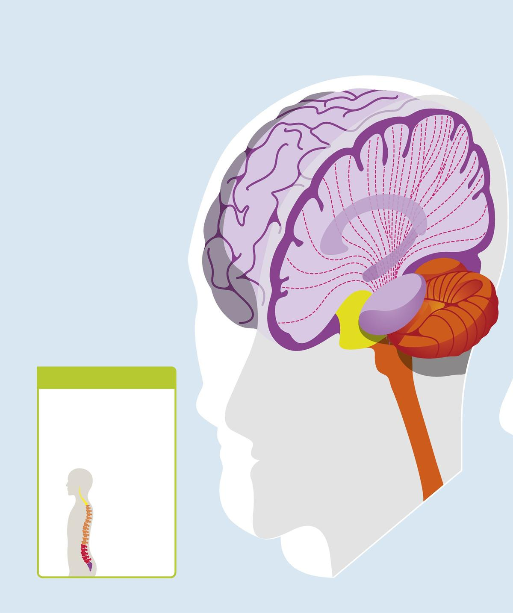
Lớp bề mặt của não trước, gọi là chất xám, được tạo thành từ các nơ-ron không có vỏ bọc—các nơ-ron được bọc bằng bao myelin mỡ thì tạo nên chất trắng.
Các bó chất trắng.
Bộ não là một khối phức tạp gồm mô mềm, được cấu tạo gần như hoàn toàn từ các nơ-ron, tế bào đệm (xem tr.21) và mạch máu, được xếp thành một lớp ngoài là vỏ não cùng các cấu trúc chuyên biệt khác.
VỎ NÃO
ĐẠI NÃO
Các phần của bộ não
Bộ não được chia thành ba phần không đều: não trước, não giữa và não sau. Sự phân chia này dựa trên cách chúng phát triển trong phôi não, nhưng cũng phản ánh sự khác biệt về chức năng. Ở não người, não trước chiếm ưu thế, chiếm gần 90 phần trăm trọng lượng bộ não. Nó liên quan đến tri giác cảm giác và các chức năng điều hành bậc cao. Não giữa và não sau bên dưới nó tham gia nhiều hơn vào các chức năng cơ bản của cơ thể quyết định sự sống sót, chẳng hạn như giấc ngủ và sự cảnh giác.
Vùng vỏ não phía trên.
CHẤT XÁM
HẢI MÃ
HẠCH HẠNH NHÂN
ĐỒI THỊ
NÃO GIỮA
TIỂU NÃO
NÃO
TRONG
CẦU NÃO
Não giữa: Đây là phần nhỏ nhất của bộ não, liên quan đến chu kỳ ngủ-thức, điều hòa thân nhiệt (kiểm soát nhiệt độ cơ thể) và các phản xạ thị giác, chẳng hạn như các cử động mắt nhanh quét các cảnh phức tạp một cách tự động. Chất đen (substantia nigra), một vùng liên quan đến việc lập kế hoạch kiểm soát cơ trơn, nằm ở não giữa.
DÂY THẦN KINH TỦY
TỦY
HÀNH
Có 31 đôi dây thần kinh tủy phân nhánh từ tủy sống ngay trên mỗi đốt xương sống, được đặt tên theo các phần của cột sống mà chúng kết nối tới. Chúng truyền tín hiệu giữa bộ não với các cơ quan cảm giác, cơ bắp và tuyến.
THÂN NÃO
TỦY SỐNG
Não sau: Gồm tiểu não ở phía dưới sau của bộ não và thân não nối với tủy sống, não sau là phần nguyên thủy nhất của bộ não. Các gen kiểm soát sự phát triển của nó đã tiến hóa cách đây khoảng 560 triệu năm.
TỦY
SỐNG
Dây thần kinh cổ.
Dây thần kinh ngực.
Dây thần kinh thắt lưng.
Tủy sống mang các kết nối trực tiếp đến cả ba phần của bộ não.
Dây thần kinh cùng.
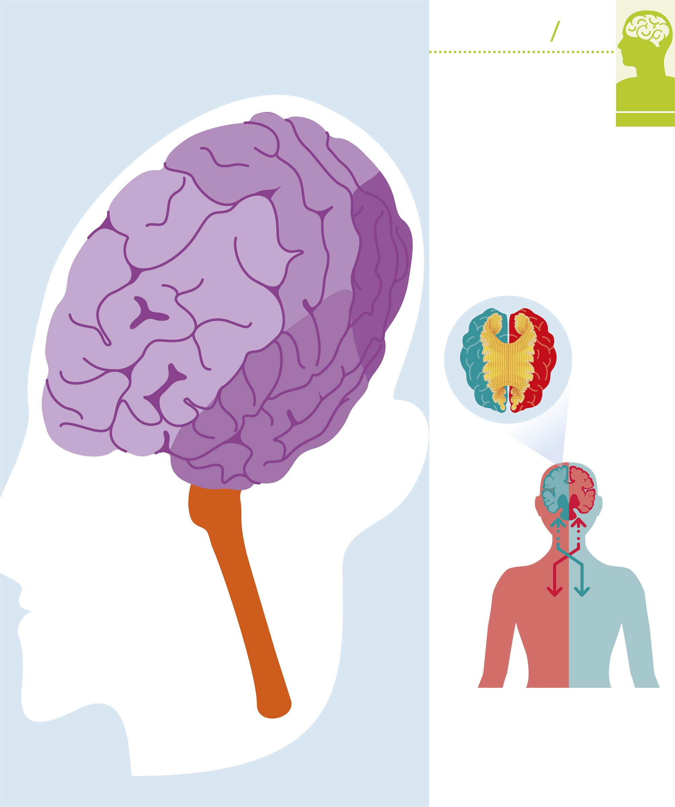
Thùy đỉnh chi phối tri giác về vị trí của cơ thể và các cảm giác xúc giác khác.
Thùy chẩm chủ yếu dành cho thị giác.
Các bán cầu
Đại não hình thành hai nửa, hay bán cầu, được tách ra ở hai bên bởi một khe gọi là rãnh dọc. Tuy nhiên, hai bán cầu chia sẻ một kết nối rộng rãi qua thể chai. Mỗi bán cầu là một bản phản chiếu của bán cầu kia, dù không phải chức năng nào cũng được cả hai bên thực hiện (xem tr.10). Ví dụ, các trung tâm ngôn ngữ thường nằm ở bên trái.
Bộ não xử lý trí nhớ ngắn hạn ở thùy trán.
THÙY ĐỈNH
THÙY CHẨM
THÙY TRÁN
Các hồi thùy thái dương phía trên.
Các bó dây thần kinh chất trắng tạo thành thể chai.
THÙY THÁI DƯƠNG
Bố cục giống nhau của bốn thùy ở cả hai bên.
Các sợi liên lạc từ mỗi bán cầu đổi bên tại đáy thân não.
Thùy thái dương liên quan đến ngôn ngữ và cảm xúc.
Não trước: Não trước được chia làm hai. Ở đáy là đồi thị, cùng với các cấu trúc quanh nó, đóng vai trò như một hộp nối cho các tín hiệu cảm giác và các xung vận động. Phần còn lại của não trước là đại não, do vỏ não chiếm ưu thế. Đây là nơi ý thức, ngôn ngữ và trí nhớ được xử lý, cùng với các chức năng bậc cao của bộ não. Vỏ não lại được chia tiếp thành bốn thùy.
Bên trái của cơ thể được điều khiển bởi bán cầu phải.
18 in
Trái và phải: Bộ não và cơ thể được nối chéo, nghĩa là bán cầu trái xử lý các cảm giác và cử động của bên phải cơ thể, và ngược lại.
(46 CM) CHIỀU DÀI CỦA TỦY SỐNG
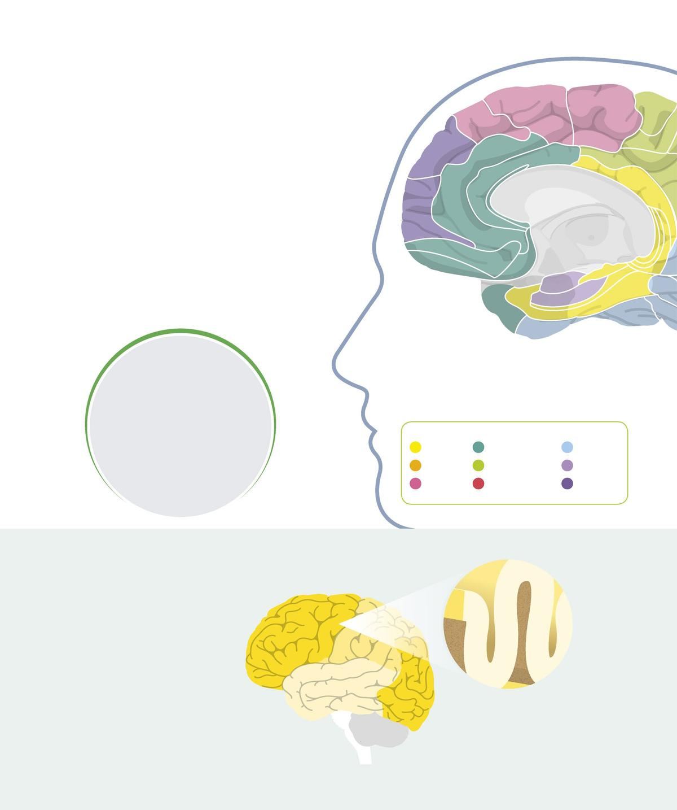
VỎ NÃO
Vỏ não là lớp ngoài mỏng tạo nên bề mặt nhìn thấy được của bộ não. Nó có một số chức năng quan trọng, gồm xử lý dữ liệu cảm giác và xử lý ngôn ngữ. Nó cũng hoạt động để tạo ra trải nghiệm có ý thức của chúng ta về thế giới.
Một bản đồ chức năng
Vỏ não là một lớp phủ nhiều tầng gồm các nơ-ron, với thân tế bào nằm ở phía trên. Các nhà khoa học thần kinh chia nó thành các vùng mà các tế bào dường như làm việc cùng nhau để thực hiện một chức năng cụ thể. Có nhiều cách để làm lộ ra thông tin này: qua vị trí của tổn thương não liên quan đến việc mất một chức năng của não; theo dõi các kết nối giữa các tế bào; và qua các bản quét hoạt động não trực tiếp.
Các vùng liên quan đến phản ứng cảm xúc có ý thức và ra quyết định nằm ở vỏ não hốc mắt.
THUYẾT ĐỌC HÌNH HỘP SỌ (PHRENOLOGY) LÀ GÌ?
Hồi thái dương dưới tham gia vào việc nhận diện khuôn mặt.
Hồi đai được nối vào vùng hệ viền (xem tr.38–39).
Một ngành giả khoa học thế kỷ 19,
trong đó hình dạng cái đầu được liên hệ với cấu trúc não, các năng lực cụ thể và tính cách.
CHÚ THÍCH
Trí nhớ.
Cảm xúc.
Thị giác.
Thính giác.
Cảm giác cơ thể.
Khứu giác.
Vận động.
Vị giác.
Nhận thức.
Nếp gấp và rãnh
Vỏ não là đặc điểm của mọi bộ não động vật có vú, nhưng bộ não người lại khác biệt nhờ vẻ ngoài gấp nếp mạnh. Nhiều nếp gấp làm tăng tổng diện tích bề mặt của vỏ não, từ đó tạo thêm chỗ cho các vùng vỏ não lớn hơn. Rãnh trong một nếp gấp được gọi là sulcus, còn phần lồi lên được gọi là gyrus. Mỗi bộ não người đều có cùng kiểu các gyrus và sulcus, mà các nhà khoa học thần kinh dùng để mô tả các vị trí cụ thể trong vỏ não.
Hồi não (gyrus).
THÙY TRÁN
Các thùy đỉnh, thùy chẩm, thùy thái dương và thùy trán.
Rãnh não (sulcus).
Phân chia thùy: Các ranh giới giữa các thùy của vỏ não được xác định bởi các rãnh sâu. Thùy trán gặp thùy đỉnh tại rãnh trung tâm, trong khi thùy thái dương bắt đầu ngay bên cạnh một rãnh gọi là fissure bên.
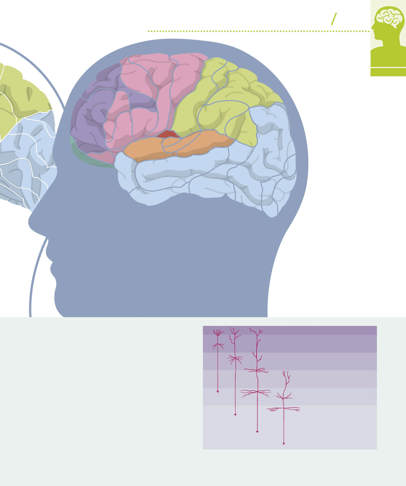
VỎ NÃO (MẶT CẮT)
Vỏ não cảm giác cơ thể xử lý thông tin cảm giác.
VỎ NÃO VẬN ĐỘNG CHÍNH
VỎ NÃO THÙY ĐỈNH
Vỏ não thùy đỉnh kết hợp thông tin từ các giác quan để định hướng cơ thể.
VÙNG WERNICKE
Vùng Wernicke tham gia vào việc hiểu ngôn ngữ.
VỎ NÃO THỊ GIÁC LIÊN HỢP
Các vùng Brodmann liên quan đến thị giác kéo dài từ bề mặt bên sang bề mặt giữa.
Thùy chẩm chủ yếu dành cho xử lý thị giác.
Vùng Broca liên quan đến việc học ngôn ngữ (xem tr.126–27).
Vỏ não tiền vận động đóng vai trò trong việc lập kế hoạch cử động.
VỎ NÃO CHỨA KHOẢNG 28 TỶ NƠ-RON
Các vùng Brodmann: Bản đồ chức năng này của bộ não dựa trên nghiên cứu của nhà giải phẫu thần kinh Korbinian Brodmann, người đã nhóm các tế bào dựa trên điểm tương đồng về kích thước, hình dạng và kết nối. Tổng cộng có 52 vùng, mỗi vùng có thể liên quan đến một hoặc một số chức năng tương đối.
Lớp 1 nhận đầu vào từ đồi thị.
Phân tử
Cấu trúc tế bào
Các tế bào ở vỏ não người được xếp thành sáu lớp, với tổng độ dày 0,09 in (2,5 mm). Mỗi lớp chứa các loại nơ-ron vỏ não khác nhau nhận và gửi tín hiệu đến các vùng khác của vỏ não và phần còn lại của bộ não. Việc truyền dữ liệu liên tục giúp mọi phần của bộ não biết được điều đang diễn ra ở nơi khác. Một số phần nguyên thủy hơn của não người, chẳng hạn như nếp hải mã, chỉ có ba lớp.
Hạt ngoài
Lớp 2 chứa một khối lớn các nơ-ron vỏ não.
Hình chóp ngoài
Lớp 3 nhận đầu vào từ các vùng vỏ não khác.
Hạt trong
Lớp 4 liên kết với thể chai, thân não và đồi thị.
Hình chóp trong
Đa hình
Các tế bào lớp 5 kéo dài xuống dưới vỏ não.
Đến bán cầu đối bên.
Đến thân não và tủy sống.
Lớp 6 gửi tín hiệu ngược lại cho đồi thị.
Chất trắng
Đến đồi thị.
CÁC LỚP VỎ NÃO
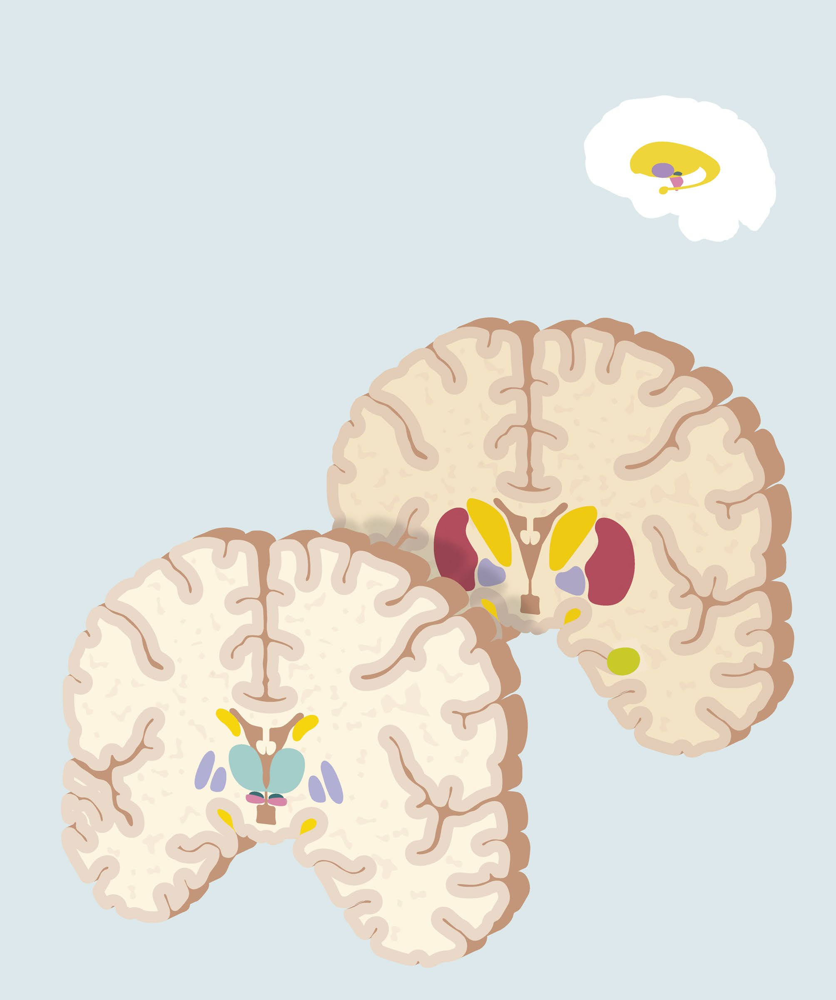
Các nhân của bộ não
Nhân dưới đồi thị.
Cầu nhạt (globus pallidus).
Nhân đuôi.
Trong giải phẫu bộ não, một nhân là một cụm tế bào thần kinh có một tập hợp chức năng nhận biết được và được nối với nhau bằng các bó chất trắng.
Vị trí trung tâm: Hầu hết các hạch nền nằm ở đáy não trước quanh đồi thị. Các nhân nằm trong một vùng đầy các bó chất trắng gọi là thể vân.
Chất đen (substantia nigra).
Các hạch nền và các nhân khác
Một nhóm nhân quan trọng tập thể gọi là các hạch nền nằm trong não trước và có liên hệ chặt chẽ với đồi thị cùng thân não. Chúng liên quan đến học tập, kiểm soát vận động và các phản ứng cảm xúc. Tất cả các dây thần kinh sọ đều nối vào bộ não tại một nhân (thường là hai: một cho đầu vào cảm giác và một cho đầu ra vận động). Các nhân khác của não gồm vùng dưới đồi (xem tr.34), hải mã (xem tr.38–39), cầu não và hành não (xem tr.36).
MẶT CẮT SAU
CHẤT TRẮNG
PUTAMEN
NHÂN ĐUÔI
NÃO TRƯỚC
CẦU NHẠT
CHẤT TRẮNG
ĐUÔI NHÂN ĐUÔI
HẠCH HẠNH NHÂN
NHÂN DƯỚI ĐỒI THỊ
Nhân đuôi và cầu nhạt.
ĐỒI THỊ
Mỗi nhân phát triển thành một cặp đối xứng, một ở mỗi bán cầu.
Các nhân của hạch hạnh nhân đã được một số nhà khoa học xếp vào một phần của các hạch nền.
CHẤT ĐEN
ĐUÔI NHÂN ĐUÔI
Cấu trúc nhân: Các nhân là cụm chất xám (thân tế bào thần kinh) nằm trong chất trắng của bộ não (sợi trục thần kinh). Hầu hết các nhân không có màng, nên với mắt thường chúng dường như hòa vào các mô xung quanh.
Chất đen ở não giữa liên quan đến kiểm soát vận động tinh.

CÁC VÙNG CỦA HẠCH NỀN
NHÂN
CHỨC NĂNG
NHỮNG NHÂN NÀO NẰM Ở THÂN NÃO?
Nhân đuôi
Một trung tâm xử lý vận động liên quan đến học tập thủ tục các kiểu cử động và sự ức chế có ý thức các phản xạ.
Thân não chứa 10 trong tổng số 12 đôi nhân sọ. Chúng cung cấp chức năng vận động và cảm giác cho lưỡi, thanh quản, cơ mặt và nhiều nơi khác.
Một trung tâm kiểm soát vận động, liên quan đến các thủ tục học tập phức tạp như lái xe, gõ bàn phím hay chơi một nhạc cụ.
Putamen
Cầu nhạt
Một trung tâm kiểm soát vận động tự nguyện quản lý các cử động ở mức dưới ý thức. Khi bị tổn thương, nó có thể gây ra run không tự ý.
Nhân dưới đồi thị
Dù chức năng chính xác của nó chưa rõ, người ta cho rằng cấu trúc này liên quan đến việc chọn một cử động cụ thể và ức chế các lựa chọn cạnh tranh.
Chất đen
Đóng vai trò trong phần thưởng và vận động. Các triệu chứng của bệnh Parkinson (xem tr.201) liên quan đến sự chết của các nơ-ron dopamine tìm thấy ở đây.
BỘ NÃO CÓ HƠN 30 BỘ NHÂN, ĐA SỐ ĐƯỢC PÁI THEO CẶP TRÁI PHẢI
Hạch hạnh nhân
Có thể đóng một vai trò trong việc tích hợp hoạt động giữa các hạch nền và hệ viền, vì vậy được một số người coi là một phần của các hạch nền.
Lựa chọn hành động
Các hạch nền có vai trò quan trọng trong việc lọc bỏ nhiễu từ các mệnh lệnh cạnh tranh đến từ vỏ não và những nơi khác trong não trước. Quá trình này gọi là lựa chọn hành động, và diễn ra hoàn toàn dưới ý thức thông qua một chuỗi các đường dẫn đi qua các hạch nền. Nhìn chung, các đường dẫn này chặn hoặc ức chế một hành động cụ thể bằng cách để đồi thị vòng tín hiệu ngược lại điểm khởi đầu. Tuy nhiên, khi đường dẫn im lặng, hành động đó được tiến hành.
VÒNG VẬN ĐỘNG
VÒNG TIỀN TRÁN
VÒNG HỆ VIỀN
NGUỒN ĐẦU VÀO
Vỏ não vận động, tiền vận động và cảm giác cơ thể.
Hạch hạnh nhân, hải mã, vỏ não thái dương.
Vỏ não tiền trán lưng ngoài.
ĐIỂM VÀO
Nhân putamen.
Nhân đuôi trước.
Thể vân bụng.
ĐIỂM RA
Cầu nhạt bên, đoạn trong.
Cầu nhạt; phần lưới trong chất đen.
Các vòng hạch nền: Đường đi của một mạch phụ thuộc vào nguồn đầu vào từ vỏ não hoặc nơi khác trong não trước. Có ba mạch chính và mỗi mạch đều có thể ức chế hoặc chọn một hành động. Vòng vận động nối với trung tâm kiểm soát vận động chính, vòng tiền trán mang đầu vào từ các vùng điều hành của não, còn vòng hệ viền chịu chi phối bởi các kích thích cảm xúc.
Cầu nhạt bụng.
VÙNG ĐỒI THỊ
Các nhân bụng bên và bụng trước.
Các nhân giữa lưng và bụng trước.
Nhân giữa lưng.

Và tuyến yên
Đồi thị và các cấu trúc xung quanh nằm ở trung tâm của não bộ. Chúng đóng vai trò như các trạm trung chuyển giữa não trước và thân não, đồng thời tạo thành một liên kết với phần còn lại của cơ thể.
Vùng dưới đồi (hypothalamus)
Vùng nhỏ này nằm dưới phần trước của đồi thị là giao diện chính giữa não bộ và hệ thống hormone, hay hệ nội tiết. Nó thực hiện điều này bằng cách giải phóng hormone trực tiếp vào dòng máu, hoặc bằng cách gửi mệnh lệnh đến tuyến yên để giải phóng các hormone đó. Vùng dưới đồi đóng vai trò trong sự tăng trưởng, cân bằng nội môi (duy trì các điều kiện tối ưu của cơ thể) và những hành vi quan trọng như ăn uống và tình dục. Điều này khiến nó đáp ứng với nhiều kích thích khác nhau.
TUYẾN YÊN KIỂM SOÁT NHỮNG TUYẾN NÀO?
Tuyến yên là một tuyến chủ kiểm soát tuyến giáp, tuyến thượng thận, buồng trứng và tinh hoàn. Tuy nhiên, nó nhận chỉ thị từ vùng dưới đồi.
CHÚ THÍCH
Đồi thị
Vùng dưới đồi
Tuyến yên
PHẢN ỨNG CỦA VÙNG DƯỚI ĐỒI
THƯỢNG ĐỒI
KÍCH THÍCH
PHẢN ỨNG
Vùng nhỏ này bao phủ phần trên của đồi thị. Nó chứa các bó dây thần kinh khác nhau tạo thành kết nối giữa não trước và não giữa. Nó cũng là vị trí của tuyến tùng — nguồn của melatonin, một hormone đóng vai trò trung tâm trong chu kỳ ngủ–thức và đồng hồ sinh học của cơ thể.
Giúp duy trì các nhịp điệu của cơ thể sau khi nhận tín hiệu về độ dài ngày từ hệ thống quang học.
Độ dài ngày
Khi mức nước trong máu giảm, giải phóng vasopressin, còn gọi là hormone chống bài niệu, làm giảm thể tích nước tiểu.
Nước
Khi dạ dày đầy, giải phóng leptin để giảm cảm giác đói.
Ăn uống
Thiếu thức ăn
Khi dạ dày rỗng, giải phóng ghrelin để tăng cảm giác đói.
Nhiễm trùng
Tăng nhiệt độ cơ thể để giúp hệ miễn dịch hoạt động nhanh hơn trong việc chống lại mầm bệnh.
Căng thẳng
Tăng sản xuất cortisol, một hormone liên quan đến việc chuẩn bị cho cơ thể một giai đoạn hoạt động thể chất.
Hoạt động cơ thể
Kích thích sản xuất các hormone tuyến giáp để tăng cường trao đổi chất, và somatostatin để làm giảm quá trình này.
Hoạt động tình dục
Điều phối việc giải phóng oxytocin, chất giúp hình thành các mối gắn kết giữa các cá nhân. Cùng một hormone này cũng được giải phóng trong lúc sinh con.

Các nhân được tách biệt bởi các lớp chất trắng.
Các tín hiệu đến cho nhân lưng trong đến từ vỏ não trước trán.
Đồi thị
Các nhân bên (pulvinar) gửi tín hiệu đến vỏ não thị giác.
THÙY TRƯỚC
Từ “thalamus” bắt nguồn từ tiếng Hy Lạp có nghĩa là “buồng bên trong”, và khối chất xám kích thước bằng ngón tay cái này nằm ở giữa não bộ, giữa vỏ não đại não và não giữa. Nó được tạo thành từ nhiều bó, hay đường, dây thần kinh, gửi và nhận tín hiệu theo cả hai hướng giữa các vùng trên và dưới của não, thường theo các vòng phản hồi (xem tr.91). Nó liên quan đến kiểm soát giấc ngủ, sự cảnh giác và ý thức. Tín hiệu từ mọi hệ thống cảm giác, ngoại trừ khứu giác, đều được dẫn qua đồi thị đến vỏ não để xử lý.
THÙY TRONG
THÙY BÊN
Tín hiệu được gửi từ vỏ não tiền vận động được tiếp nhận ở nhân trước bên.
Dữ liệu cảm giác từ miệng được truyền đến nhân sau bụng trong.
Các nhân của đồi thị Đồi thị được chia thành ba thùy chính: trong, bên và trước. Mỗi thùy lại được tổ chức tiếp thành các vùng, hay nhân, liên quan đến những nhóm chức năng cụ thể.
CHỈ NẶNG 0,1 OZ (4 G), VÙNG DƯỚI ĐỒI CHỈ LỚN HƠN ĐOẠN CUỐI CỦA NGÓN TAY ÚT MỘT CHÚT
VÙNG DƯỚI ĐỒI
Các tế bào tiết trong vùng dưới đồi giải phóng hormone.
Kích thích Các hormone được tạo ra
1
Tuyến yên
bởi vùng dưới đồi đi dọc theo sợi trục đến tuyến yên.
Nặng khoảng 0,01 oz (0,5 g), tuyến yên nhỏ bé này sản xuất nhiều hormone quan trọng nhất của cơ thể dưới sự chỉ đạo của vùng dưới đồi. Các hormone được giải phóng vào máu thông qua một mạng lưới mao mạch nhỏ. Các hormone của tuyến yên bao gồm những hormone kiểm soát tăng trưởng, bài tiết nước tiểu, chu kỳ kinh nguyệt, sinh con và sự sạm da. Dù có thể tích bằng một hạt đậu, tuyến này được chia thành hai thùy chính, trước và sau, cộng thêm một thùy trung gian nhỏ. Mỗi thùy đảm nhiệm sản xuất một nhóm hormone cụ thể.
Động mạch
Thùy sau của tuyến yên
Mạng lưới tĩnh mạch
Sản xuất Các hóa chất từ
2
vùng dưới đồi kích thích tuyến yên giải phóng hormone.
TUYẾN YÊN
Thùy trước của tuyến yên
Giải phóng Hệ thống dạng lưới
3
cửa thu thập các hormone và giải phóng chúng vào dòng máu.
Hormone đi vào dòng máu.

Đồi thị liên kết thân não với não trước, chuyển tiếp và xử lý sơ bộ thông tin cảm giác cùng các thông tin khác.
TIỂU NÃO LỚN ĐẾN MỨC NÀO?
ĐỒI THỊ
Hầu hết các tế bào của não nằm ở tiểu não, dù nó chỉ chiếm khoảng 10 phần trăm thể tích của toàn bộ não bộ.
Não giữa liên quan đến kiểm soát trạng thái thức giấc và nhiệt độ cơ thể.
NÃO GIỮA
Kết nối não bộ Thân não có dạng cuống tạo thành liên kết giữa đồi thị, đáy của não trước và tủy sống, vốn kết nối với phần còn lại của cơ thể. Nó tham gia nhiều chức năng cơ bản, bao gồm chu kỳ ngủ–thức, ăn uống và điều hòa nhịp tim.
Cầu não là một con đường liên lạc lớn truyền tải các dây thần kinh sọ được dùng cho hô hấp, thính giác và vận động mắt.
THÂN NÃO
Thân não
Thân não được tạo thành từ ba thành phần, tất cả đều có vai trò thiết yếu trong nhiều chức năng cơ bản nhất của cơ thể người. Não giữa là điểm khởi đầu của hệ lưới kích thích (reticular formation), một chuỗi các nhân não (xem tr.32–33) chạy dọc thân não, liên quan đến sự thức giấc và cảnh giác, đồng thời đóng vai trò then chốt trong ý thức. Cầu não là một chuỗi nhân khác gửi và nhận tín hiệu từ các dây thần kinh sọ liên quan đến mặt, tai và mắt. Tủy não đi xuống và thu hẹp dần để hợp nhất với đầu trên cùng của tủy sống. Nó đảm nhiệm nhiều chức năng tự động của cơ thể, như điều hòa huyết áp, đỏ mặt và nôn mửa.
CẦU NÃO
10 đôi dây thần kinh sọ bắt nguồn từ thân não.
TỦY NÃO
ĐỒI THỊ
THÂN NÃO · TIỂU NÃO
Các dây thần kinh sọ bắt đầu và kết thúc tại các nhân trong thân não.
Thân não và tiểu não
Tủy não tham gia các phản xạ quan trọng như nhịp thở và nuốt.
Tủy sống gồm một bó sợi trục thần kinh kết nối với hệ thần kinh ngoại vi.
Các vùng thấp của não gồm thân não, kết nối trực tiếp với tủy sống, và tiểu não, nằm ngay phía sau nó.
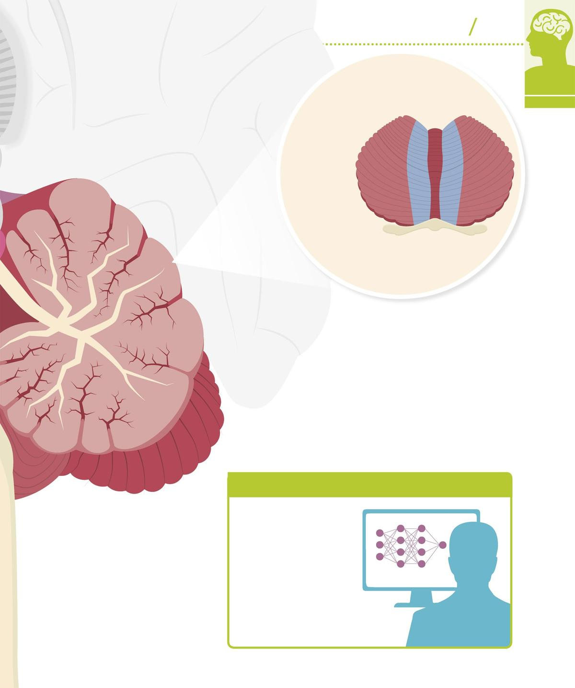
Thân não và tiểu não
NHÌN TỪ PHÍA SAU TIỂU NÃO
Tiểu não Thuật ngữ “tiểu não” nghĩa là “não nhỏ”, chỉ một vùng có nhiều nếp gấp của não sau nằm phía sau thân não. Giống như đại não ở phía trên, tiểu não được chia thành hai thùy. Các thùy này lại được chia theo chiều ngang thành các vùng chức năng.
Phần nhộng kiểm soát hầu hết các kiểu vận động cơ bản, như vận động mắt và chi.
Lớp ngoài được tạo thành từ chất xám.
Thùy trước của tiểu não nhận thông tin về tư thế cơ thể từ tủy sống.
TIỂU NÃO TỦY · PHẦN NHỘNG · THÙY TRƯỚC
Nằm ở cả hai bên tiểu não, các vùng này tham gia lập kế hoạch cho các chuỗi vận động.
Các vận động của cơ thể được phối hợp ở thùy sau.
VÙNG BÊN
THÙY TRƯỚC
Tiểu não tủy so sánh thông tin về vị trí thực tế của cơ thể với vị trí dự định của các động tác đã lên kế hoạch và điều chỉnh chuỗi vận động khi cần.
Tiểu não
Dù tiểu não có vẻ đóng một vai trò trong duy trì sự chú ý và xử lý ngôn ngữ, nó được biết đến nhiều nhất với vai trò điều hòa vận động cơ thể. Cụ thể, nhiệm vụ của nó là chuyển các yêu cầu vận động điều hành rộng rãi thành những chuỗi cơ trơn tru và phối hợp, đồng thời liên tục hiệu chỉnh sai số. Nó dẫn các đầu ra của mình qua đồi thị. Ở cấp độ vi mô, các tế bào của tiểu não được xếp thành từng lớp. Mục đích của các lớp này là thiết lập những đường dẫn thần kinh cố định cho mọi kiểu vận động đã học, chẳng hạn như đi lại, nói chuyện và giữ thăng bằng. Tổn thương tiểu não không gây liệt, mà gây ra các vận động chậm và giật cục.
THÙY SAU
TIỂU NÃO TIỀN ĐÌNH
TIỂU NÃO
TIỂU NÃO VÀ CÁC MẠNG THẦN KINH
Tiểu não tiền đình tham gia kiểm soát đầu, vận động mắt và duy trì thăng bằng nhờ thông tin từ tai trong.
Một số trí tuệ nhân tạo (AI) sử dụng một hệ thống lấy cảm hứng từ giải phẫu của tiểu não. AI tự lập trình thông qua học máy. Nó làm điều này với một bộ xử lý gọi là mạng thần kinh, trong đó các đầu vào tìm đường đi của mình bằng thử và sai qua các lớp kết nối — một thiết kế phản ánh cách tiểu não thiết lập các khuôn mẫu cho những vận động đã học.
KIẾN THỨC VỀ TIỂU NÃO ĐÃ ĐƯỢC THÚC ĐẨY NHỜ NGHIÊN CỨU CÁC BINH SĨ BỊ THƯƠNG NÃO TRONG CHIẾN TRANH THẾ GIỚI THỨ NHẤT

HẢI MÃ ĐƯỢC ĐẶT TÊN THEO SỰ GIỐNG HỆT VỚI CON NGỰA BIỂN
Hệ thống
Nằm bên dưới vỏ não và phía trên thân não, hệ viền não (limbic system) là một tập hợp các cấu trúc liên quan đến cảm xúc, trí nhớ và các bản năng cơ bản.
Fornix (vòm não) là một bó đường dẫn thần kinh nối hải mã với đồi thị và não bộ bên dưới.
Vị trí và chức năng
Hệ viền não là một cụm các cơ quan nằm ở trung tâm của não bộ, chiếm một phần bề mặt trong của vỏ não đại não. Các cấu trúc chính của nó tạo thành một nhóm mô-đun truyền tín hiệu giữa vỏ não và các phần thấp hơn của não. Các sợi trục thần kinh liên kết mọi bộ phận của nó và kết nối chúng với các vùng não khác. Hệ viền não điều hòa các thúc đẩy bản năng như hung hăng, sợ hãi và ăn uống, cùng với học tập, trí nhớ và các hoạt động tinh thần bậc cao.
Hồi đai
FORNIX (VÒM NÃO)
Cột của vòm não
CÁC THỂ NÚM
NÃO GIỮA
HẠCH HẠNH NHÂN
Các bộ phận của hệ thống Các thành phần của hệ viền não kéo dài từ đại não vào trong và xuống đến thân não. Thường thì người ta hiểu hệ này bao gồm các cấu trúc được trình bày ở đây.
VÙNG DƯỚI ĐỒI
CỦ HẾU
HỒI CẠNH HẢI MÃ
Điều kiện hóa nỗi sợ
KÝ ỨC MỚI
CẢM GIÁC KHỨU GIÁC
SỰ NHẬN BIẾT
Khứu giác, được xử lý ở các củ hếu, là giác quan duy nhất do hệ viền não xử lý mà không được gửi qua đồi thị.
Các thể núm nhỏ đóng vai trò như các trạm trung chuyển cho những ký ức mới hình thành ở vùng dưới đồi; chúng liên quan đến điều kiện hóa nỗi sợ, khi chúng ta học cách sợ một điều gì đó. Tổn thương dẫn đến không có khả năng cảm nhận nỗi sợ. Các thể núm này cũng đặc biệt tham gia vào trí nhớ và phản ứng cảm xúc, liên quan đến cảm giác định hướng, nhất là với vị trí.
Hạch hạnh nhân đóng vai trò quan trọng nhất
Tham gia hình thành và truy xuất các ký ức liên quan đến dữ liệu mới từ giác quan, hồi cạnh hải mã giúp chúng ta nhận biết và nhớ lại sự vật.
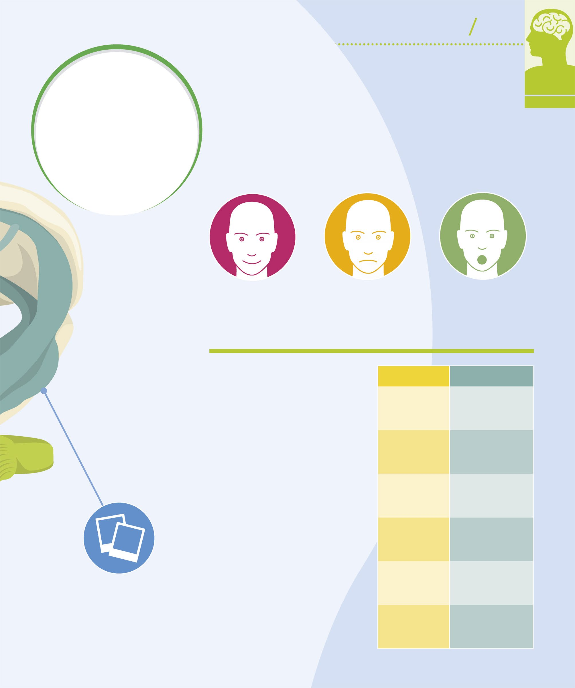
Thưởng và phạt
THUẬT NGỮ “LIMBIC” NGHĨA LÀ GÌ?
Hệ viền não liên quan chặt chẽ với cảm giác giận dữ và hài lòng. Cả hai đều do kích thích các trung tâm thưởng hoặc phạt bên trong hệ viền não, đặc biệt là ở vùng dưới đồi. Thưởng và phạt là những khía cạnh then chốt của học tập, vì chúng tạo ra một phản ứng cơ bản đối với trải nghiệm. Nếu không có hệ thống đánh giá này, não bộ đơn giản sẽ bỏ qua các kích thích cảm giác cũ mà nó đã từng trải qua và chỉ chú ý đến kích thích mới.
Từ “limbic” bắt nguồn từ tiếng Latin limbus, nghĩa là “ranh giới”, ám chỉ vai trò của hệ này như một vùng chuyển tiếp giữa vỏ não và não thấp hơn.
Khoái cảm Liên quan đến việc giải phóng dopamine, não bộ tìm cách lặp lại những hành vi tạo ra cảm giác này.
Ghét bỏ Cảm xúc này liên quan đến khứu giác. Vai trò nguyên thủy của nó là bảo vệ chúng ta khỏi nhiễm trùng.
Sợ hãi Hạch hạnh nhân liên kết nỗi sợ với các kích thích cụ thể. Điều này có thể dẫn đến cơn giận dữ được kiểm soát hoặc phản ứng chiến đấu.
HẢI MÃ
Hồi đai giúp hình thành các ký ức liên quan đến cảm xúc mạnh.
Hội chứng Klüver-Bucy
TRIỆU CHỨNG
MÔ TẢ
Tình trạng này do tổn thương hệ viền não gây ra và dẫn đến một dải triệu chứng liên quan đến mất sợ hãi và mất kiểm soát xung động. Được mô tả lần đầu ở người vào năm 1975, rối loạn thần kinh này được đặt theo tên các nhà nghiên cứu Heinrich Klüver và Paul Bucy những năm 1930, những người đã tiến hành thí nghiệm cắt bỏ các vùng não khác nhau ở khỉ còn sống và ghi lại tác động. Ở người, hội chứng có thể do bệnh Alzheimer, biến chứng từ virus herpes hoặc tổn thương não. Nó lần đầu được ghi nhận ở những người đã phẫu thuật cắt bỏ một phần thùy thái dương của não. Tình trạng này có thể điều trị bằng thuốc và hỗ trợ các công việc hằng ngày.
Tổn thương hải mã dẫn đến không có khả năng hình thành ký ức dài hạn.
Mất trí nhớ
Vì cảm nhận rất ít phần thưởng từ hành động của mình, người bệnh thiếu động lực.
Hiền lành
Xu hướng kiểm tra đồ vật bằng cách đưa chúng vào miệng.
Hyperorality (ưa đưa đồ vào miệng)
Ký ức tình tiết
Ăn uống cưỡng bức, kể cả các chất không ăn được như đất.
Chứng pica
Ham muốn tình dục cao, thường liên quan đến fetish hoặc các ham muốn không điển hình.
Hải mã tiếp nhận và xử lý các đầu vào từ đại não. Nó tham gia tạo ra các ký ức tình tiết, tức ký ức về những gì bạn đã làm, và tạo ra nhận thức không gian.
Tăng ham muốn tình dục
Mất khả năng nhận ra những đồ vật hoặc người quen thuộc.
Mất nhận thức (agnosia)

Lớp cách nhiệt giữ cho helium lỏng luôn lạnh.
Y học hiện đại và thần kinh học có thể nhìn xuyên qua hộp sọ để quan sát các cấu trúc bên trong não đang sống. Tuy nhiên, việc chụp ảnh cơ quan mềm và phức tạp này đòi hỏi phải phát minh ra công nghệ tiên tiến.
Helium lỏng làm mát nam châm điện đến khoảng –453°F (–270°C).
Máy chụp MRI
Siêu dẫn
HELIUM LỎNG
Máy chụp cộng hưởng từ (MRI) cho cái nhìn tổng quát tốt nhất về mô thần kinh của não và thường được dùng nhất để tìm khối u. Khác với các hệ thống quét khác, MRI không phơi nhiễm não với bức xạ năng lượng cao, nhờ đó an toàn khi sử dụng trong thời gian dài và nhiều lần. Hai cải tiến của MRI, gọi là fMRI và DTI, cũng hữu ích trong theo dõi hoạt động não (xem tr.43). Dù là công cụ lý tưởng cho nghiên cứu và chẩn đoán, MRI rất đắt tiền. Với hệ thống làm mát bằng helium lỏng và nam châm điện siêu dẫn, một máy còn tiêu thụ điện bằng sáu hộ gia đình.
nam châm điện tạo ra từ trường cực mạnh.
Các nam châm gradient hội tụ từ trường quanh vùng cần quét.
Cuộn radio tần phát và dò sóng vô tuyến.
Bệnh nhân nằm bên trong thân máy trong lúc quét.
BÀN DI ĐỘNG
Bàn di động đưa bệnh nhân vào máy quét.
Cách MRI hoạt động MRI tận dụng cách các proton trong nguyên tử hydro sắp thẳng hàng theo từ trường. Hydro có trong nước và chất béo, cả hai đều phổ biến trong não. Một lần quét mất khoảng một giờ, sau đó dữ liệu được xử lý để tạo ra hình ảnh chi tiết.
Proton bổ sung hướng về phía nam.
Các proton sắp xếp ngẫu nhiên.
NAM CHÂM ĐIỆN KHÔNG HOẠT ĐỘNG
NAM CHÂM ĐIỆN ĐANG HOẠT ĐỘNG
Proton hướng về phía nam.
Đường từ trường.
NAM CHÂM ĐIỆN ĐANG HOẠT ĐỘNG
NAM CHÂM ĐIỆN KHÔNG HOẠT ĐỘNG
Proton hướng về phía bắc.
NAM CHÂM ĐIỆN TRONG MÁY MRI CÓ THỂ TẠO RA TỪ TRƯỜNG MẠNH HƠN 40.000 LẦN SO VỚI TỪ TRƯỜNG CỦA TRÁI ĐẤT
Proton chưa sắp thẳng Trước khi máy MRI được
Proton sắp thẳng theo từ trường Kích hoạt từ trường mạnh mẽ của máy
2
1
kích hoạt, các proton trong phân tử của não ở trạng thái chưa sắp thẳng — các trục mà hạt quay quanh hướng về những phía ngẫu nhiên.
buộc mọi proton phải sắp thẳng hàng với nhau. Khoảng một nửa hướng về cực bắc của từ trường, một nửa hướng về cực nam. Tuy nhiên, luôn có một cực có số proton hướng về nó nhiều hơn đôi chút so với cực kia.
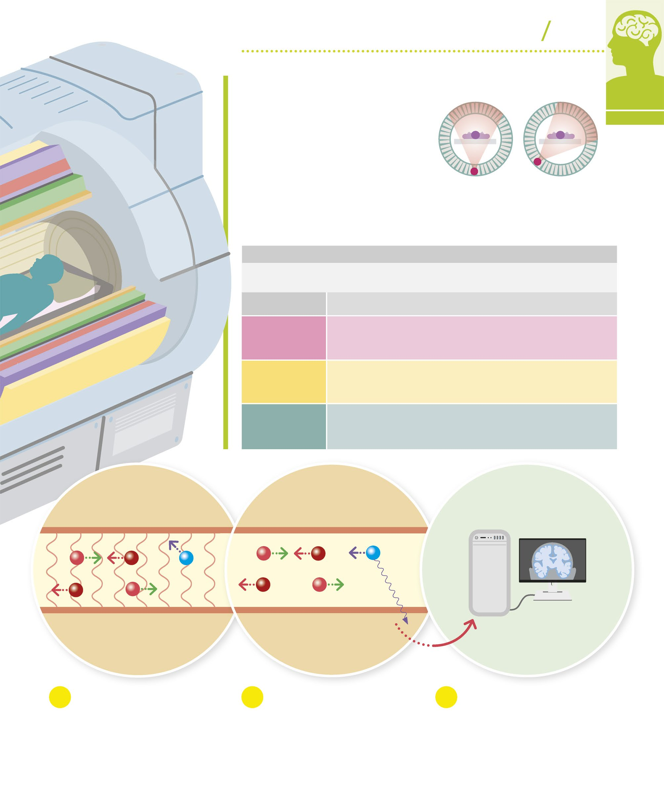
MÁY QUÉT MRI
Người đang được quét.
Máy dò tia X.
Chụp CT
Chụp cắt lớp vi tính (CT), hay chụp cắt lớp vi tính trục (CAT), lấy một chuỗi ảnh tia X xuyên qua não từ các góc khác nhau. Sau đó máy tính so sánh các ảnh này để tạo ra một mặt cắt ngang duy nhất của não. Chụp CT nhanh hơn MRI và tốt nhất để phát hiện đột quỵ, gãy hộp sọ và xuất huyết não.
Nguồn phát tia X.
Tia X quay Nguồn tia X chiếu xuyên qua não, đi vòng quanh bệnh nhân để thay đổi góc của mỗi ảnh.
CÁC LOẠI CÔNG NGHỆ QUÉT KHÁC
Chụp một số đặc điểm nhất định của não đòi hỏi kỹ thuật quét riêng, cũng có thể dùng khi MRI hoặc CT nguy hiểm hoặc không phù hợp.
CUỘN RADIO TẦN · NAM CHÂM GRADIENT · NAM CHÂM ĐIỆN
LOẠI QUÉT
CÔNG NGHỆ VÀ CÔNG DỤNG
Được dùng để chụp dòng máu chảy qua não và làm nổi bật các vùng hoạt động. Chụp PET theo dõi vị trí của các chất đánh dấu phóng xạ được tiêm vào máu.
PET (chụp cắt lớp phát xạ positron)
Một loạt kỹ thuật mới hoạt động bằng cách dò xem ánh sáng hoặc tia hồng ngoại xuyên vào não nhiều hay ít. DOI cung cấp cách theo dõi lưu lượng máu và hoạt động não.
DOI (chụp ảnh quang học khuếch tán)
Kỹ thuật chụp an toàn dựa trên cách sóng siêu âm phản xạ lại từ các cấu trúc trong não. Siêu âm qua hộp sọ chủ yếu dùng cho trẻ sơ sinh. Ít dùng hơn ở người lớn vì hình ảnh thiếu chi tiết.
Siêu âm qua hộp sọ
Proton đã lật trở lại sắp thẳng.
Máy tính xử lý dữ liệu tín hiệu.
Xung sóng vô tuyến.
Hình ảnh cho thấy các mô theo mặt cắt ngang.
CUỘN RADIO TẦN
CUỘN RADIO TẦN
MÁY TÍNH
MÀN HÌNH
CUỘN RADIO TẦN
CUỘN RADIO TẦN
Cuộn radio tần dò tín hiệu và chuyển đến máy tính.
Proton bổ sung lật sang hướng khác.
Tín hiệu vô tuyến được phát ra.
Một xung sóng vô tuyến Khi từ trường đang bật, máy MRI
Tín hiệu vô tuyến được phát Ngay sau khi xung được tắt,
Bộ thu tạo hình ảnh Toàn bộ dữ liệu tín hiệu sau đó được xử lý bởi
3
4
5
cuộn radio tần của máy gửi một xung sóng vô tuyến xuyên qua não. Lượng năng lượng bổ sung này khiến các proton dự phòng lật ra khỏi hướng sắp thẳng.
các proton chưa sắp thẳng lật trở lại sắp thẳng với từ trường. Điều này khiến chúng giải phóng năng lượng dưới dạng tín hiệu vô tuyến, được máy dò. Máy tính xử lý tín hiệu để tạo ra các “lát cắt” hai chiều của não. Các proton trong mô cơ thể khác nhau tạo ra tín hiệu khác nhau, nên ảnh quét có thể cho thấy các mô riêng biệt và rất chi tiết.
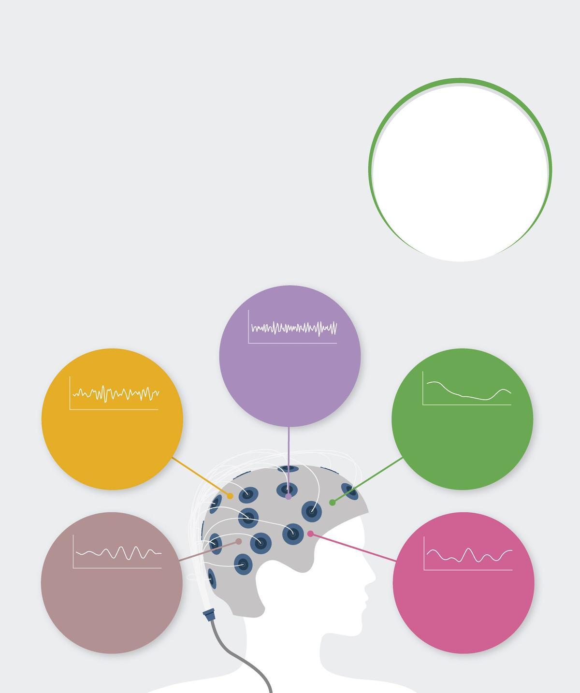
Khả năng thu thập thông tin từ một não bộ đang hoạt động đã cách mạng hóa cả sự hiểu biết của chúng ta về cách não vận hành lẫn y học thần kinh.
TẠI SAO
NÃO LẠI TẠO RA TỪ TRƯỜNG ĐIỆN TỪ?
EEG
Thiết bị theo dõi não đơn giản nhất là điện não đồ (EEG). Nó dùng các điện cực đặt khắp hộp sọ để dò một trường điện do hoạt động của các tế bào thần kinh ở vỏ não đại não tạo ra. Các mức dao động có thể được hiển thị dưới dạng sóng (“EEG thường”) hoặc vùng màu (EEG định lượng, hay QEEG). EEG có thể phát hiện dấu hiệu của rối loạn co giật như động kinh, cũng như dấu hiệu tổn thương, viêm và khối u. Quy trình không đau này cũng được dùng để đánh giá hoạt động não ở bệnh nhân hôn mê.
Các tế bào thần kinh dùng xung điện tích để truyền thông điệp. Hoạt động của hàng tỷ tế bào tích tụ thành một trường liên tục.
Các loại sóng EEG Các tế bào lân cận ở vỏ não phát xung đồng bộ, tạo ra những thay đổi dạng sóng về cường độ của trường điện. Người ta thấy các kiểu sóng đặc trưng (được đặt theo chữ cái trong bảng chữ cái Hy Lạp) có liên quan chặt chẽ với một số trạng thái não nhất định.
Các sóng tần số cao được xếp sát nhau.
SÓNG GAMMA
HƠN 32 Hz
Các sóng tần số thấp được xếp thưa hơn.
Biên độ.
SÓNG BETA
SÓNG DELTA
Thời gian.
Nhịp điệu này liên quan đến học tập và các nhiệm vụ giải quyết vấn đề phức tạp. Chúng có thể bắt nguồn từ việc các nhóm tế bào thần kinh kết hợp lại thành mạng lưới.
0,1–4 Hz
Biên độ.
14–32 Hz
Biên độ.
Thời gian.
Thời gian.
Bắt nguồn từ cả hai bán cầu ở phía trước não, sóng beta liên quan đến hoạt động thể chất và các trạng thái tập trung cùng lo âu.
Những sóng này thường thấy ở một số giai đoạn của giấc ngủ, nhưng cũng khi người ta đang làm nhiệm vụ giải quyết vấn đề phức tạp.
SÓNG ALPHA
SÓNG THETA
8–14 Hz
4–8 Hz
Biên độ.
Biên độ.
Thời gian.
Thời gian.
Những sóng này thường bắt nguồn từ phía sau não và thường mạnh hơn ở bán cầu chi phối. Chúng xuất hiện cả khi thư giãn lẫn khi tỉnh táo.
Các điện cực được giữ sát hộp sọ bằng mũ.
Thường thấy ở trẻ nhỏ, sóng theta cũng rõ rệt trong các trạng thái thư giãn, sáng tạo và thiền định.
Dây dẫn tín hiệu đến bộ khuếch đại.
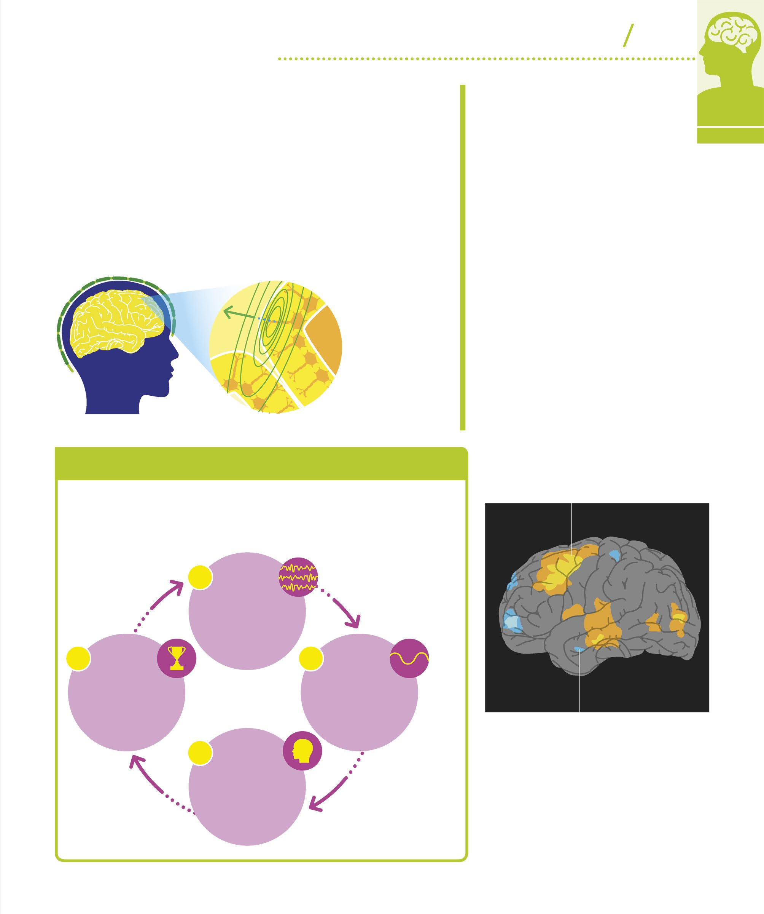
MEG
MRI chức năng và chụp cắt lớp ten-xo khuếch tán
Ngoài việc tạo ra hoạt động điện, não còn tạo ra một từ trường rất yếu. Từ trường này được máy chụp từ não (MEG) dò ra và có thể dùng để tạo bức tranh thời gian thực về hoạt động của vỏ não đại não. MEG bị hạn chế bởi độ yếu của từ tính não, nhưng kỹ thuật này dò được những biến động nhanh trong hoạt động não — diễn ra trong vài phần nghìn giây — tốt hơn các hệ thống theo dõi khác.
MRI (xem tr.40–41) có thể mở rộng để thu thập thông tin về việc não đang làm gì. Chụp MRI chức năng (fMRI) theo dõi dòng máu chảy qua não, cụ thể cho thấy nơi máu cung cấp oxy cho tế bào thần kinh, từ đó chỉ ra vùng nào đang hoạt động theo thời gian thực. Người được chụp được yêu cầu thực hiện nhiệm vụ tinh thần và thể chất trong lúc theo dõi bằng fMRI để tạo bản đồ chức năng của não và tủy sống, kết hợp giải phẫu với mức độ hoạt động. Chụp cắt lớp ten-xo khuếch tán (DTI) cũng dùng MRI nhưng theo dõi sự di chuyển tự nhiên của nước qua các tế bào não. Nó được dùng để dựng bản đồ các kết nối chất trắng trong não.
Mảng SQUID có dạng mũ đội đầu.
Vỏ não đại não.
Hướng của xung thần kinh.
Từ trường quanh xung thần kinh.
Cách MEG hoạt động MEG dùng các đầu dò nhạy gọi là thiết bị giao thoa lượng tử siêu dẫn (SQUID) để dò các từ trường thoáng qua do xung điện của tế bào thần kinh tạo ra.
PHẢN HỒI THẦN KINH
Vùng hoạt động tăng lên.
Dạng liệu pháp nhận thức này dùng EEG để tạo vòng phản hồi giữa trạng thái tinh thần của một người và hoạt động não của họ. Điều này giúp người ta dễ học cách kiểm soát hoạt động tinh thần không mong muốn, chẳng hạn lo âu.
1
EEG ghi lại hoạt động điện trong não.
4
2
Máy tính biến các kiểu thần kinh thành một hiển thị động, chẳng hạn trò chơi tương tác.
Qua luyện tập, não hình thành thói quen ở trạng thái được thưởng.
Vùng hoạt động giảm đi.
3
Trò chơi đưa phần thưởng khi ghi nhận đúng trạng thái não yêu cầu (ví dụ, lo âu thấp).
Đọc ảnh fMRI Một lần chụp fMRI bắt đầu bằng việc thiết lập mức nền hoạt động của não. Sau đó bản quét cho thấy các vùng dao động so với mức nền này, giúp nhà nghiên cứu xác định vùng nào được kích thích hoặc bị ức chế trong các nhiệm vụ cụ thể.

Sự phát triển của não bộ Những tế bào thần kinh đầu tiên được tạo ra chỉ vài ngày sau khi thụ thai. Các tế bào này tạo thành một bản rồi cuộn lại để trở thành một cấu trúc chứa đầy dịch, gọi là ống thần kinh (neural tube), sau đó phát triển thành não bộ và tủy sống. Một đầu trở thành một chỗ phình rồi tách thành các vùng riêng biệt.
Đại não
Tiểu não
CHÚ THÍCH
Não trước
Não sau
Não giữa
Tủy sống
Thân não
Mầm mắt
Mầm tai
Dây thần kinh sọ
Đại não phình to, và mắt cùng tai phát triển hoàn thiện, di chuyển vào vị trí. Một số bộ phận trên cơ thể thai nhi có thể phản ứng với chạm xúc.
Mầm tai
Ống thần kinh
Đến tuần thứ bảy, não trước, não giữa và não sau chia thành các chỗ phình sẽ trở thành đại não, thân não, S K và tiểu não. E E W 7
Mầm mắt
Ống thần kinh hình thành
1 1
S K E W E
Chỗ phình não trước
Khoảng tuần thứ năm, ống thần kinh bắt đầu hình thành nên thứ có thể nhận ra là não bộ. Mắt bắt đầu S K phát triển. E E W 5
Các tế bào thần kinh phát triển, di cư khắp phôi thai để hình thành khởi đầu của não bộ, tủy sống và mạng lưới thần kinh. S K E E W 3
Trẻ sơ sinh và trẻ nhỏ
NHẬN DIỆN KHUÔN MẶT
Trẻ sơ sinh thích nhìn vào những hình giống khuôn mặt và học hỏi về khuôn mặt rất nhanh. Một vùng của vỏ não gọi là vùng nhận diện khuôn mặt (xem tr.68) trở nên chuyên biệt trong việc xác định khuôn mặt. Các nhà vô địch cờ vua cũng dùng vùng này để nhận ra cách bố trí bàn cờ, gợi ý rằng những khuôn mẫu quan trọng nhất trong cuộc đời một người được giải mã tại đây.
Não người bắt đầu phát triển sau khi thụ thai và thay đổi nhanh chóng trong những năm đầu đời, nhưng phải mất hơn 20 năm để não phát triển hoàn thiện.
Trước khi sinh
Não của phôi thai còn phải phát triển rất nhiều, từ chỉ vài tế bào thần kinh ở ba tuần sau khi thụ thai đến một cơ quan có các vùng chuyên biệt sẵn sàng bắt đầu học hỏi ngay từ lúc sinh. Gen kiểm soát quá trình này, nhưng môi trường cũng có thể ảnh hưởng. Dinh dưỡng không đầy đủ có thể làm thay đổi sự phát triển của não, và căng thẳng cực độ ở người mẹ trong thời kỳ mang thai cũng có thể gây tác động.
GIỐNG KHUÔN MẶT
KHÔNG GIỐNG KHUÔN MẶT

Đại não
Đường nét của vỏ não
Vỏ não trước trán
Đảo nằm sâu bên trong rãnh bên
Vỏ não trước trán
Các gờ não hình thành
Hạch hạnh nhân
Thùy trán
Vỏ não đỉnh
Hệ tạo lưới
Hải mã
Các rãnh não hình thành
Các vùng cảm giác và vận động của não được kết nối và phát triển tốt, nhưng những vùng lớn như vỏ não trước trán vẫn còn chưa hoàn thiện. Những thay đổi ở hải mã S và hạch hạnh nhân giúp các trí nhớ dài hạn AR YE được lưu giữ. 3
Tiểu não
Thân não
Trong những tháng cuối của thời kỳ thai nghén, vỏ não phát triển nhanh chóng, và các rãnh đặc trưng xuất hiện. Trẻ sinh ra có số tế bào thần kinh H T R nhiều bằng người lớn, nhưng phần lớn BI / chưa hoàn thiện. S H T N O M 9
Tiểu não
Thân não phần lớn đã hoàn thiện và kiểm soát các phản xạ như chớp mắt. Chu kỳ ngủ – thức bắt đầu, và thai nhi phản ứng với S H tiếng ồn lớn. T N O M 5
Ở ĐỈNH CAO CỦA SỰ PHÁT TRIỂN NÃO, KHOẢNG 250.000 TẾ BÀO THẦN KINH ĐƯỢC TẠO RA MỖI PHÚT
Não của trẻ em
Sau khi sinh, não của trẻ như những tấm bọt biển; chúng có khả năng đáng kinh ngạc trong việc hấp thụ thông tin từ thế giới xung quanh và cố gắng hiểu được ý nghĩa của nó. Trong những năm đầu, não phát triển nhanh chóng, thể tích não tăng gấp đôi trong năm đầu đời. Các khớp thần kinh phát triển và tạo ra các kết nối mới nhanh chóng và dễ dàng, một quá trình gọi là tính dẻo thần kinh (neuroplasticity).
TẠI SAO NÃO CHÚNG TA LẠI NHĂN NHEO?
Khi trí thông minh của con người tiến hóa, vỏ não của chúng ta đã mở rộng. Nhưng cái đầu lớn hơn sẽ có nghĩa là trẻ không thể lọt qua ống sinh. Một vỏ não được gấp nếp chứa nhiều mô hơn vào một thể tích nhỏ hơn.
Xây dựng các kết nối Đỉnh điểm dẻo của mỗi vùng não là khác nhau. Các vùng cảm giác tạo khớp thần kinh nhanh chóng ở bốn đến tám tháng sau khi sinh, nhưng các vùng trước trán không đạt đỉnh dẻo cho đến khi trẻ khoảng 15 tháng tuổi.
TRẺ SƠ SINH
9 THÁNG
2 TUỔI

và thanh thiếu niên
Não thanh thiếu niên trải qua sự tái cấu trúc mạnh mẽ. Các kết nối không được dùng bị cắt bỏ, và bao myelin bao phủ những kết nối quan trọng nhất, làm chúng hiệu quả hơn.
Hành vi thời vị thành niên
Thanh thiếu niên có tiếng là bốc đồng, nổi loạn, ích kỷ và dễ xúc động. Phần lớn điều đó là do những thay đổi đang diễn ra trong não của vị thành niên. Não người thay đổi và phát triển theo những khuôn mẫu nhất định, khiến thanh thiếu niên có sự pha trộn giữa các vùng não hoàn thiện và chưa hoàn thiện khi họ lớn lên. Vùng cuối cùng hoàn thiện là vỏ não trán, vùng điều hòa não bộ và kiểm soát xung động. Vùng này cho phép người lớn tự kiểm soát cảm xúc và ham muốn của mình, điều mà thanh thiếu niên có thể gặp khó khăn.
Chấp nhận rủi ro Các vùng tìm kiếm khoái cảm trong não thanh thiếu niên được kết nối tốt, nhưng cơ chế kiểm soát xung động lại chưa phát triển đầy đủ, có thể dẫn đến hành vi chấp nhận rủi ro.
Vỏ não trán
Chu kỳ giấc ngủ
CẮT TỈA KHỚP THẦN KINH
Trong những năm vị thành niên, chúng ta cần ngủ nhiều vì não vẫn tiếp tục phát triển. Nhưng vào thời điểm này, nhịp sinh học của chúng ta thay đổi khi melatonin – hormone được giải phóng vào buổi tối và làm ta buồn ngủ – bắt đầu được giải phóng muộn hơn thường lệ. Đây là lý do thanh thiếu niên thường muốn đi ngủ muộn hơn trẻ em và người lớn, và có thể gặp khó khăn khi dậy đi học vào buổi sáng.
Cắt tỉa khớp thần kinh, tức là khi các kết nối thần kinh không được dùng chết dần, bắt đầu từ thời thơ ấu và tiếp diễn suốt những năm vị thành niên. Các vùng vỏ não được cắt tỉa từ sau ra trước. Việc cắt tỉa làm mỗi vùng hiệu quả hơn, vì vậy cho đến khi hoàn tất, vùng đó chưa thể được coi là hoàn thiện.
CHÚ THÍCH
Thời điểm bắt đầu ngủ ở người lớn
Thời gian ngủ của người lớn
Thời gian ngủ của thanh thiếu niên
Thanh thiếu niên thức dậy muộn hơn người lớn vào buổi sáng
Không đồng bộ Việc đánh thức thanh thiếu niên sớm để đi học cũng giống như khiến họ liên tục bị jet lag. Các nghiên cứu cho thấy bắt đầu đi học muộn hơn một giờ đã cải thiện tỷ lệ đi học và điểm số. Các cuộc ẩu đả và thậm chí tai nạn xe
Thời điểm bắt đầu ngủ ở thanh thiếu niên muộn hơn ở người lớn
CHƯA HOÀN THIỆN
HOÀN THIỆN
Trưa
Nửa đêm
Tai nạn vào buổi trưa cũng giảm.

Vụng về Trong những đợt tăng trưởng nhanh, bản đồ cơ thể của não không theo kịp. Não và cơ thể mất đồng bộ, gây ra sự vụng về.
Vỏ não vận động
Cảm xúc cực đoan Hệ viền (limbic system) phản ứng rất mạnh ở thanh thiếu niên, nghĩa là họ trải qua các phản ứng cảm xúc dữ dội hơn, cảm nhận mọi thứ sâu sắc hơn.
Hệ viền
Áp lực bạn bè Thanh thiếu niên rất quan tâm đến cách bạn bè nhìn nhận mình. Họ chấp nhận rủi ro nhiều hơn khi ở cùng bạn bè, và bị bỏ rơi có thể cảm thấy đau đớn tột cùng. Áp lực bạn bè có thể ảnh hưởng mạnh đến họ—tốt hoặc xấu.
Nguy cơ về sức khỏe tâm thần
NÃO ĐẠT KÍCH THƯỚC VẬT LÝ LỚN NHẤT TRONG ĐỘ TUỔI TỪ 11 ĐẾN 14
Một số vùng não trải qua những thay đổi dữ dội nhất trong thời vị thành niên đã được liên kết với các vấn đề sức khỏe tâm thần. Những thay đổi này có thể khiến não dễ tổn thương, biến những vấn đề nhỏ thành rối loạn. Điều này có thể giải thích lý do tại sao nhiều vấn đề sức khỏe tâm thần, từ tâm thần phân liệt đến các rối loạn lo âu, thường xuất hiện trong thời vị thành niên.
TẠI SAO THANH THIẾU NIÊN TỰ TI?
Không phải bệnh tâm thần nào cũng kéo dài đến tuổi trưởng thành
ADHD, rối loạn hành vi
Các rối loạn lo âu
Khi nghĩ về việc bị bẽ mặt, một vùng ở vỏ não trước trán liên quan đến việc hiểu các trạng thái tâm lý hoạt động mạnh hơn ở thanh thiếu niên so với người lớn.
Rối loạn tâm trạng
Các rối loạn trong thời vị thành niên Một số rối loạn từ thời thơ ấu có thể biến mất trong thời vị thành niên, trong khi những rối loạn khác có thể xuất hiện và kéo dài đến cuộc đời sau.
Tâm thần phân liệt
Lạm dụng chất
- 0
- 5
10 Tuổi (năm)
- 15
- 20
- 25
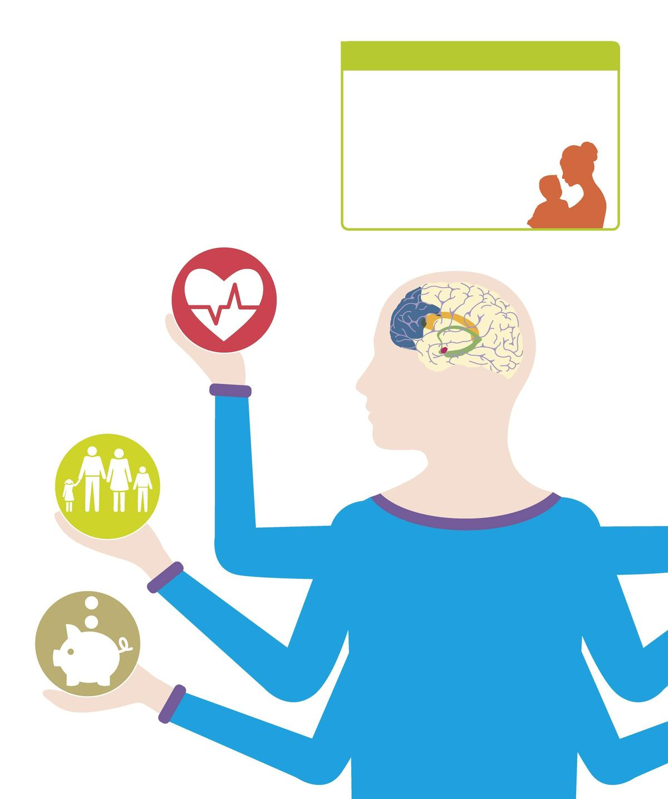
Não người lớn
VIỆC LÀM CHA MẸ
Não và cơ thể của một người mẹ mới sinh tràn ngập các hormone như oxytocin, thúc đẩy bà chăm sóc con. Nhìn vào đứa con kích hoạt các đường phần thưởng của não, và hạch hạnh nhân của bà trở nên hoạt động mạnh hơn, quét tìm nguy hiểm. Não của đàn ông cũng bị ảnh hưởng bởi việc làm cha, nhưng chỉ khi họ dành nhiều thời gian bên con. Não của những người cha là người chăm sóc chính của trẻ trải qua những thay đổi tương tự như ở phụ nữ, và những thay đổi này dường như rất giống với việc yêu.
Não người tiếp tục thay đổi và hoàn thiện suốt giai đoạn trưởng thành sớm, khi các kết nối không được dùng bị cắt bỏ. Điều này làm não hiệu quả hơn nhưng cũng kém linh hoạt hơn.
SỨC KHỎE
Thể chai (corpus callosum) phát triển hoàn chỉnh để cho phép thông tin lưu thông giữa các bán cầu
Vùng cuối cùng hoàn thiện là thùy trán
Cuộc sống người lớn Một bộ não phát triển đầy đủ, hoàn thiện được trang bị để xử lý mọi yêu cầu và áp lực cạnh tranh của cuộc sống người lớn, từ công việc và tài chính đến các mối quan hệ và sức khỏe.
Hạch hạnh nhân ít phản ứng cảm xúc hơn
Hải mã
GIA ĐÌNH
tiếp tục tạo ra các tế bào thần kinh mới
Não hoàn thiện
Sự bao myelin hoàn chỉnh (việc bọc các sợi trục trong bao myelin) cho phép thông tin lưu thông tự do, nhưng quá trình này chỉ hoàn tất khi một người ở cuối tuổi 20. Vùng não cuối cùng hoàn tất phát triển là thùy trán, chịu trách nhiệm về phán đoán và ức chế. So với trẻ em và thanh thiếu niên, người lớn có khả năng điều hòa cảm xúc và kiểm soát xung động tốt hơn. Họ có thể dùng kinh nghiệm của mình để dự đoán tốt hơn kết quả hành động của mình và cách những hành động đó có thể khiến người khác cảm thấy.
TÀI CHÍNH
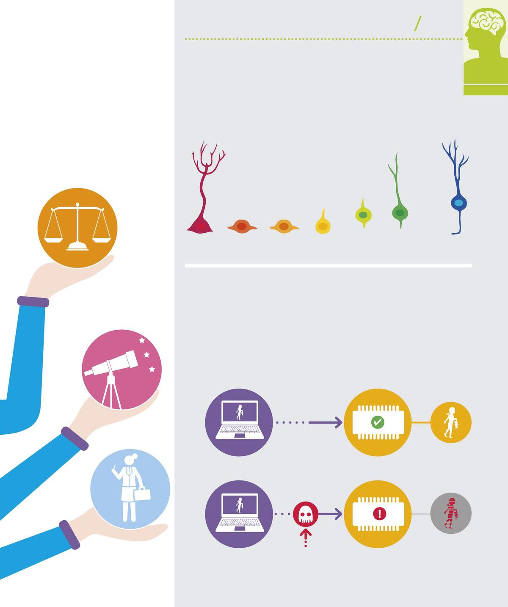
THỂ TÍCH CHẤT TRẮNG TRONG NÃO NGƯỜI ĐẠT ĐỈNH KHOẢNG 40 TUỔI
Sự hình thành tế bào thần kinh mới
Sự hình thành tế bào thần kinh mới là sự phát triển của các nơ-ron mới từ các tế bào gốc thần kinh (những tế bào có thể trở thành các tế bào khác). Ở nhiều loài động vật có vú, quá trình này diễn ra ở hải mã và các vùng khứu giác, tiếp diễn suốt cuộc đời, với các nơ-ron mới được tạo ra thường xuyên. Người ta cho rằng điều tương tự cũng đúng ở con người, dù bằng chứng còn trái ngược. Quá trình này cũng có thể đóng vai trò trong học tập và trí nhớ.
Nơ-ron mới Các nơ-ron phát triển từ tế bào gốc, phân chia, chuyên biệt hóa và trưởng thành thành các tế bào não có chức năng.
Sợi trục và sợi nhánh phát triển
Sợi trục và sợi nhánh hoàn thiện cho phép nơ-ron hòa nhập với mạng lưới tế bào
ĐẠO ĐỨC
NƠ-RON CHƯA TRƯỞNG THÀNH SỚM NƠ-RON CHƯA TRƯỞNG THÀNH
MUỘN
NƠ-RON HOÀN THIỆN
LOẠI 1 LOẠI 2A LOẠI 2B LOẠI 3 TẾ BÀO GỐC TẾ BÀO GỐC TẾ BÀO GỐC TẾ BÀO GỐC
Làm gián đoạn trí nhớ
Các tế bào não mới giúp lưu trữ thông tin, vì vậy tăng cường sự hình thành nơ-ron mới trong não có thể cải thiện việc học tập đến tuổi trưởng thành. Tuy nhiên, nó cũng đóng một vai trò trong việc quên. Việc thêm các tế bào não mới với các kết nối mới làm gián đoạn các mạch trí nhớ hiện có bằng cách cạnh tranh với chúng. Điều này có nghĩa là có một mức độ tối ưu của sự hình thành nơ-ron mới, cân bằng khả năng học tập với việc giữ lại những trí nhớ cũ.
Lưu trữ trí nhớ Do có sự tạo ra các tế bào não mới, các trí nhớ ở hải mã có thể suy giảm trước khi được lưu trữ trong vỏ não. Điều này có thể giải thích tại sao chúng ta không thể nhớ được thời thơ ấu của mình.
TƯƠNG LAI
Trí nhớ hình thành ở hải mã
ĐƯỜNG TRUYỀN TRÍ NHỚ BÌNH THƯỜNG
Trí nhớ
HOẠT ĐỘNG
được củng cố và chuyển đến vỏ não
Trí nhớ được giữ lại lâu dài
HẢI MÃ
VỎ NÃO
Sự củng cố bị gián đoạn bởi các nơ-ron mới
ĐƯỜNG TRUYỀN TRÍ NHỚ BỊ GIÁN ĐOẠN
Các nơ-ron mới phát triển ở hải mã
Trí nhớ được giữ lại kém

Các khoảng rỗng có kích thước bình thường
Khoang dưới nhện
Não bộ
Theo tuổi tác, một số khả năng suy giảm khi tế bào thần kinh thoái hóa và thể tích não giảm. Ở những tế bào thần kinh còn lại, các xung động có thể truyền đi chậm hơn.
Bộ não đang teo lại
Khi già đi, số tế bào thần kinh tự nhiên giảm dần do thoái hóa, và toàn bộ não teo lại 5 đến 10 phần trăm về thể tích. Điều này một phần là do lưu lượng máu đến não già giảm. Bao myelin mỡ bao bọc sợi trục của tế bào thần kinh cũng suy giảm theo tuổi tác, khiến các mạch não kém hiệu quả trong việc truyền thông tin, có thể dẫn đến vấn đề gợi nhớ trí nhớ và giữ thăng bằng.
Các bó chất trắng còn ở tình trạng tốt
Hạch nền khỏe mạnh, không có bất thường
Não trẻ
Não trẻ trông đầy đặn; các gờ phủ bề mặt vỏ não gần như chạm nhau. Các não thất chứa dịch ở trung tâm não thì nhỏ, và khoang dưới nhện, bao quanh và đệm cho não, tạo thành một lớp mỏng.
CHÚ THÍCH
Chất xám
Hạch nền
Chất trắng
Các não thất
Lão hóa và hạnh phúc
BỆNH ALZHEIMER
Lão hóa có vẻ là điều xấu, nhưng các nghiên cứu đã chỉ ra rằng khi chúng ta già đi, cảm giác hạnh phúc và khỏe mạnh tăng lên, trong khi mức độ căng thẳng và lo lắng giảm xuống. Não của người cao tuổi dường như tập trung vào điều tích cực tốt hơn. Họ có khả năng nhớ những hình ảnh vui vẻ hơn là buồn bã, và dành nhiều thời gian nhìn vào những khuôn mặt vui vẻ hơn là những khuôn mặt tức giận hoặc buồn bực.
Bệnh Alzheimer, dạng phổ biến nhất của sa sút trí tuệ (xem tr.200), được liên kết với sự tích tụ các protein trong não, vón cục thành các mảng và đống rối. Cuối cùng, các tế bào não bị ảnh hưởng chết đi, gây mất trí nhớ và các triệu chứng khác. Các nhà khoa học vẫn chưa biết liệu chính các protein gây ra bệnh hay chỉ là triệu chứng của bệnh, và các loại thuốc phá vỡ chúng vẫn chưa giúp ích được cho bệnh nhân.
Các não thất phình to
Lên xuống Một nghiên cứu phát hiện người trẻ và người già báo cáo mức độ khỏe mạnh cao hơn những người ở tuổi trung niên. Mức độ hạnh phúc tăng ổn định từ 50 tuổi trở đi.
Teo vỏ não nghiêm trọng
SỨC KHỎE TINH THẦN
NÃO KHỎE MẠNH
NÃO MẮC ALZHEIMER
TUỔI

Khoang dưới nhện mở rộng, phản ánh sự mất thể tích não
Sự mất chất xám và chất trắng làm não thất to thêm
CHÚNG TA CÓ THỂ ĐIỀU TRỊ ALZHEIMER KHÔNG?
Thuốc có thể làm chậm tiến triển của bệnh và kiểm soát một số triệu chứng, nhưng vẫn chưa tìm ra cách chữa khỏi Alzheimer.
Sự suy thoái chất trắng dẫn đến truyền tín hiệu kém hiệu quả
Sắt tích tụ ở hạch nền, có thể gây bất thường
Não già
Khi già đi, tế bào não chết và các khoảng bên trong cùng xung quanh não mở rộng. Vỏ não mỏng đi, và các vùng như hải mã teo lại, thường gây ra vấn đề trí nhớ. Cả chất xám (thân tế bào thần kinh) và chất trắng (các sợi trục xếp chặt) đều bị mất.
NÃO CỦA NHỮNG NGƯỜI GIÀ ĐẶC BIỆT VẪN TRÔNG TRẺ SUỐT CUỘC ĐỜI
Suy giảm chậm?
- 60
Phản ứng nhanh với kích thích là kỹ năng đầu tiên suy giảm
Vốn từ vựng tiếp tục tăng đến tuổi già
Khi già đi, sự chú ý của chúng ta suy giảm và não trở nên kém dẻo hơn. Điều này khiến việc học khó hơn, dù không phải là không thể. Thực tế, học hỏi điều mới suốt cuộc đời tăng cường sức khỏe não và có thể ngăn ngừa suy giảm nhận thức bằng cách củng cố các khớp thần kinh. Và tuổi tác cũng mang lại một số lợi ích: trung bình, người cao tuổi giỏi hơn trong việc nắm bắt bức tranh toàn cảnh từ một tình huống và dùng kinh nghiệm sống để giải quyết vấn đề.
- 55
50 Điểm kiểm tra trung bình
- 45
Ở tuổi trung niên, các kỹ năng như định hướng không gian ngừng cải thiện
CHÚ THÍCH
- 40
Lập luận quy nạp
Năng lực số học
Định hướng không gian
Năng lực ngôn ngữ
- 35
Năng lực số học đòi hỏi trí nhớ làm việc, vốn thường suy giảm theo tuổi tác
Tốc độ tri giác
Trí nhớ ngôn ngữ
Kỹ năng và năng lực Nghiên cứu Dọc Seattle đã theo dõi người lớn trong 50 năm. Nghiên cứu phát hiện các kỹ năng như vốn từ vựng và kiến thức chung tiếp tục cải thiện trong hầu hết cuộc đời chúng ta.
- 30
- 25
- 32
- 39
- 46
53 Tuổi
- 60
- 67
- 74
- 81
- 88
Ngăn ngừa suy giảm
Khi già đi, hầu hết chúng ta nhận thấy sự giảm nhẹ về tốc độ tư duy cũng như sự suy giảm trí nhớ làm việc (xem tr.135). Một số người trải qua suy giảm nghiêm trọng hoặc thậm chí sa sút trí tuệ (xem tr.200), nhưng điều này không phải là không tránh khỏi. Thực tế, một số năng lực nhận thức, chẳng hạn như hiểu biết tổng thể của chúng ta về cuộc sống, thậm chí còn cải thiện khi chúng ta già đi. Chúng ta thừa hưởng mức độ cơ bản của trí nhớ và tốc độ tư duy từ cha mẹ, nhưng bản thiết kế di truyền này cũng bị ảnh hưởng bởi môi trường và trải nghiệm sống, bao gồm dinh dưỡng, sức khỏe, giáo dục, mức độ căng thẳng và các mối quan hệ. Các hoạt động kích thích về thể chất, xã hội và trí tuệ cũng đóng vai trò then chốt. Chúng ta có thể thực hiện nhiều bước để bảo vệ sức khỏe não bộ. Một chế độ ăn nhiều rau, trái cây, chất béo “tốt” và dưỡng chất (xem tr.54–55) giữ cho cả não và cơ thể khỏe mạnh, cũng như vận động cơ thể vừa phải nhưng đều đặn. Chạy bộ hoặc các bài tập hiếu khí khác có thể giúp trì hoãn sự suy giảm chức năng nhận thức liên quan đến tuổi tác. Bạn cũng có thể bảo vệ sức khỏe não bằng cách tránh các độc tố như rượu và thuốc lá. Hút thuốc đã được liên kết với tổn thương vỏ não. Nếu bạn uống rượu, hãy giữ trong giới hạn uống lành mạnh và có ít nhất hai ngày không uống rượu mỗi tuần.
Giữ cho trí óc được kích thích. Bất kỳ thử thách tinh thần nào liên quan đến học hỏi—từ sửa chữa nhà cửa đến nấu ăn đến giải ô chữ—đều có thể mở rộng các kỹ năng nhận thức. Hãy cân nhắc học một ngôn ngữ mới, vì những người nói hai hoặc nhiều ngôn ngữ có năng lực nhận thức mạnh hơn những người chỉ nói một. Tóm lại, bạn có thể làm chậm quá trình lão hóa nhận thức bằng cách: • Cung cấp đầy đủ oxy và dưỡng chất cho não. • Tránh tiếp xúc với độc tố như rượu và nicotine. • Vận động cơ thể bằng cách đưa hoạt động vào đời sống hàng ngày. • Rèn luyện trí óc bằng cách học các kỹ năng mới.
Làm chậm tác động của lão hóa
Khi già đi, tư duy và trí nhớ ngắn hạn của chúng ta có thể kém hiệu quả hơn. Tuy nhiên, chúng ta tiếp tục học cho đến khi qua đời, và có thể chủ động giữ cho não hoạt động tốt ở bất kỳ độ tuổi nào.
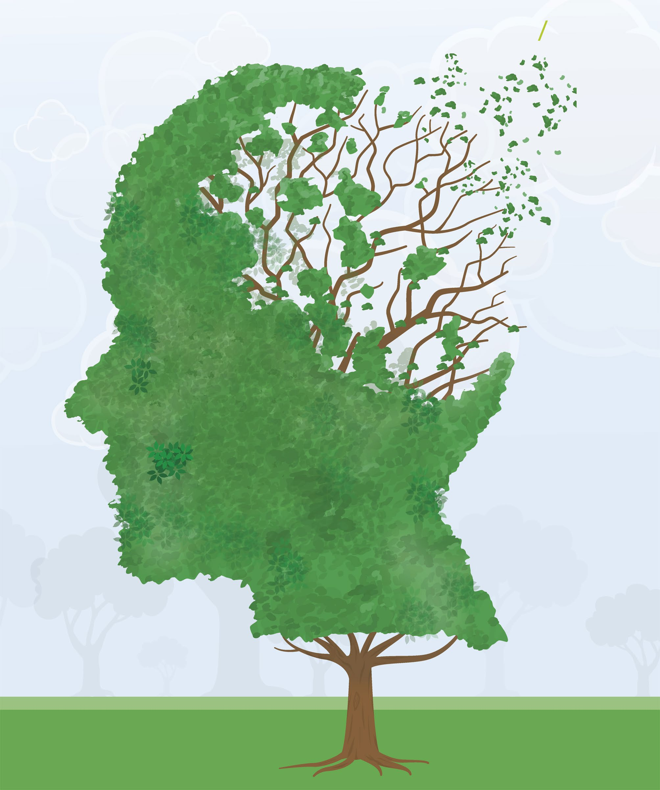

Cũng như mọi cơ quan khác, não người cần được cung cấp liên tục nước và dưỡng chất để duy trì sức khỏe và cung cấp năng lượng cho hoạt động hiệu quả.
Các vitamin B1, B2, B6; các axit béo omega-3; CÁ MÒI, CÁ HỒI
DẦU CÁ
Nuôi dưỡng bộ não
Một chế độ ăn lành mạnh có lợi cho cả trí óc lẫn cơ thể. Cacbohydrat phức tạp cung cấp dòng nhiên liệu ổn định; chúng có trong bánh mì ngũ cốc nguyên hạt, gạo lứt, các loại đậu, khoai tây và khoai lang. Chất béo lành mạnh cần thiết để duy trì tế bào não, và những chất béo này đến từ cá béo, dầu thực vật và các thực phẩm thực vật như quả bơ và hạt lanh. Protein cung cấp axit amin. Trái cây và rau cung cấp nước, vitamin và chất xơ.
BẮP CẢI
SUPP LƠ VÀ BÔNG CẢI XANH
CÁ CƠM
CÁ THU
BẮP CẢI BRUSSELS
QUẢ VIỆT QUẤT
QUẢ MÂM XÔI
KHOAI LANG
CUNG CẤP NƯỚC
QUẢ VIỆT QUẤT
DẦU Ô LIU
QUẢ MẶC NƯỚC
Tế bào não cần được cung cấp nước đầy đủ để hoạt động hiệu quả. Các nghiên cứu đã chỉ ra rằng mất nước có thể làm suy giảm khả năng tập trung và thực hiện các nhiệm vụ tinh thần, đồng thời ảnh hưởng tiêu cực đến trí nhớ. Một phần nước chúng ta nạp vào đến từ thực phẩm tiêu thụ, nhưng uống vài ly nước mỗi ngày sẽ giúp duy trì mức cung cấp nước lành mạnh.
DÂU TÂY
QUẢ KỶ TỬ
QUINOA (HẠT DIÊM MẠCH)
Chất chống oxy hóa, chất xơ, glucose
QUẢ NAM VIỆT QUẤT
S E M G U
CÁC LOẠI QUẢ MỌNG
L E
NGŨ CỐC NGUYÊN HẠT
CÁC LOẠI ĐẬU
Nguồn dưỡng chất Trái cây và rau tươi, đậu và đậu lăng, ngũ cốc nguyên hạt, chất béo lành mạnh như dầu ô liu, và cá béo như cá hồi đều cung cấp dưỡng chất thiết yếu cho não.
NGŨ CỐC NGUYÊN HẠT VÀ TINH BỘT
CACBOHYDRAT
Cacbohydrat phức tạp
Chất xơ, vitamin, vitamin B
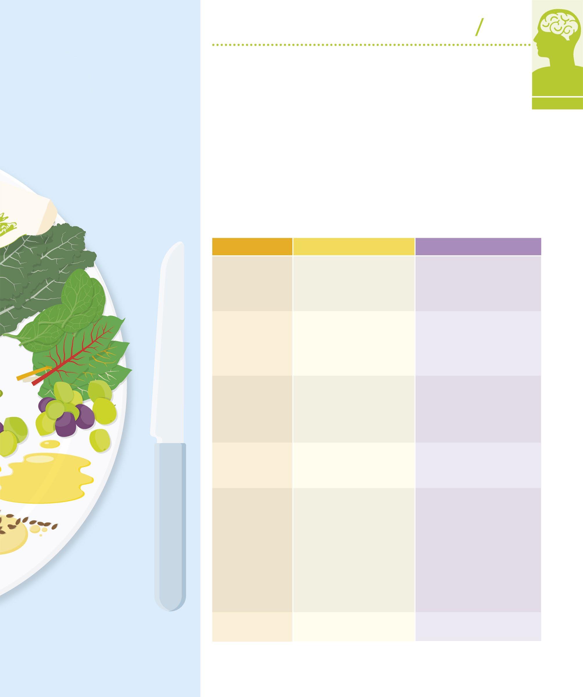
NÃO GỒM 60 PHẦN TRĂM CHẤT BÉO VÀ CẦN ĐƯỢC CUNG CẤP NĂNG LƯỢNG ỔN ĐỊNH
Dưỡng chất thiết yếu
Một số dưỡng chất từ thực phẩm đã được phát hiện cải thiện hoặc duy trì các chức năng cụ thể của não. Những chất này gồm vitamin và khoáng chất, axit béo omega-3 và omega-6, chất chống oxy hóa và nước. Những dưỡng chất thiết yếu này giúp giữ cho tế bào não khỏe mạnh, cho phép tế bào truyền tín hiệu nhanh và hiệu quả, giảm tổn thương do viêm và các gốc tự do (nguyên tử có thể làm hỏng tế bào, protein và DNA), và giúp tế bào tạo kết nối mới. Chúng cũng có thể thúc đẩy sản xuất và chức năng của các chất dẫn truyền thần kinh. Kết quả là, thường xuyên ăn thực phẩm chứa các dưỡng chất này có lợi cho trí nhớ, chức năng nhận thức, sự tập trung và tâm trạng.
Rau họ cải và rau xanh đậm lá
Chất chống oxy hóa, chất xơ, dưỡng chất
DƯỠNG CHẤT
LỢI ÍCH
NGUỒN
CẢI XANH KALE
Axit béo omega-3 và omega-6
Giúp duy trì lưu lượng máu và màng tế bào trong não; hỗ trợ trí nhớ và giảm nguy cơ trầm cảm, rối loạn tâm trạng, đột quỵ và sa sút trí tuệ. Cá béo (như cá hồi, cá mòi, cá trích, cá thu) Dầu hạt lanh, dầu hạt cải Óc chó, hạt thông, hạt Brazil.
RAU BÓNG XANH
Vitamin nhóm B
Vitamin B6, B12 và axit folic hỗ trợ chức năng hệ thần kinh; choline giúp sản xuất chất dẫn truyền thần kinh. Trứng Ngũ cốc nguyên hạt như yến mạch, gạo lứt, bánh mì ngũ cốc nguyên hạt Rau họ cải (bắp cải, bông cải xanh, súp lơ, cải xanh kale) Đậu thận, đậu nành.
CẢI DÉN
Axit amin
Hỗ trợ sản xuất chất dẫn truyền thần kinh và hỗ trợ trí nhớ cùng sự tập trung
Thịt hữu cơ Gia cầm thả rông Cá Trứng Sản phẩm từ sữa Các loại hạt
Ô LIU
Chất béo không bão hòa đơn
Giữ cho mạch máu khỏe mạnh và hỗ trợ các chức năng như trí nhớ
Dầu ô liu Đậu phộng, hạnh nhân, đào hạt, phỉ, pecan, pistachio Quả bơ
Chất béo không bão hòa đơn, omega-6
DẦU THỰC VẬT
DẦU Ô LIU VÀ DẦU THỰC VẬT
Chất chống oxy hóa
Bảo vệ tế bào não khỏi tổn thương viêm do có các gốc tự do; cải thiện chức năng nhận thức và trí nhớ ở người cao tuổi
Sô cô la đen (ít nhất 70 phần trăm ca cao) Các loại quả mọng Lựu và nước lựu Cà phê xay Trà (đặc biệt là trà xanh) Rau họ cải Rau xanh đậm lá Đậu nành và các sản phẩm từ đậu nành Các loại hạt Bơ hạt và bơ các loại hạt, như bơ đậu phộng và tahini
Axit béo omega-3 và omega-6 / dầu hạt lanh
Nước
Giữ cho não được cung cấp nước để các phản ứng hóa học diễn ra hiệu quả
Nước máy (đặc biệt là nước “cứng”) Trái cây và rau
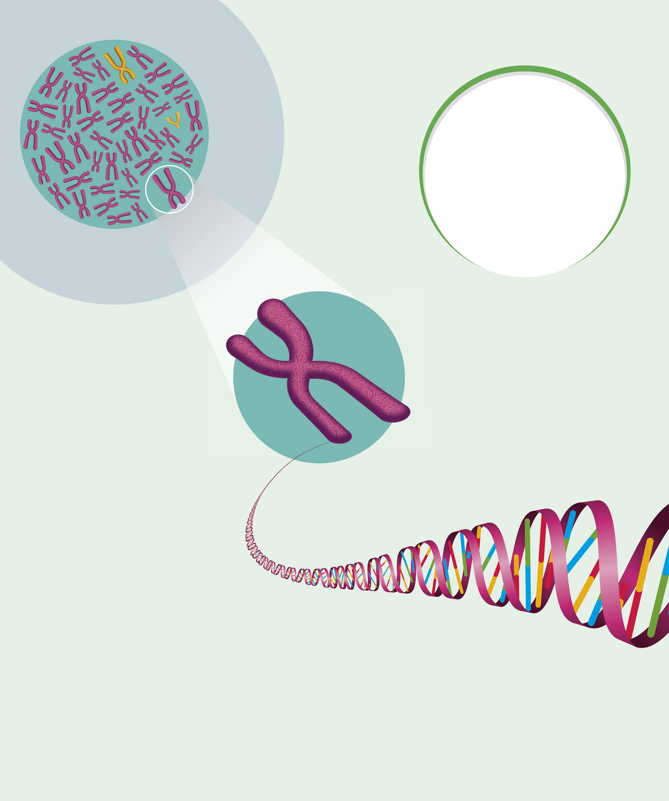
NHÂN TẾ BÀO
Nhiễm sắc thể giới tính không giống nhau (X và Y) cho thấy giới tính nam
Nhiễm sắc thể Chúng ta có khoảng 20.000 gen, được nhóm thành các nhiễm sắc thể. Mỗi nhân tế bào có 22 cặp nhiễm sắc thể tương đồng (gọi là nhiễm sắc thể thường), cộng thêm một cặp nhiễm sắc thể giới tính (XX giống nhau ở nữ, hoặc cặp không giống nhau XY ở nam).
GEN CÓ LUÔN HOẠT ĐỘNG KHÔNG?
Mỗi tế bào mang DNA đều có một bộ gen đầy đủ, nhưng nhiều gen thường chỉ hoạt động ở một bộ phận của cơ thể, chẳng hạn não, hoặc ở một giai đoạn của cuộc sống, chẳng hạn thời thơ ấu.
Hầu hết nhiễm sắc thể tồn thành cặp tương đồng
DNA và gen Phân tử DNA là một chuỗi dài, xoắn được tạo thành từ các cặp hóa chất gọi là bazơ—những “chữ cái” của mã di truyền—với bộ khung đường-phốt phát ở mỗi cạnh. Khi tế bào phân chia, một nửa DNA đi vào mỗi tế bào mới. Ngoài ra, chúng ta thừa kế một nhiễm sắc thể trong mỗi cặp từ mẹ và một từ cha, nên mỗi bậc cha mẹ đóng góp một nửa số gen của chúng ta.
Gen là gì?
Gen là các đoạn của một phân tử dài gọi là axit deoxyribonucleic (DNA), chứa mã điều khiển cách cơ thể chúng ta phát triển và hoạt động. Chúng ta thừa hưởng sự pha trộn các gen từ cha mẹ. Những gen này tạo ra protein định hình các đặc điểm cơ thể, chẳng hạn màu mắt, hoặc điều hòa các quá trình như phản ứng hóa học. Tác động của chúng bật hoặc tắt các đặc điểm này, hoặc làm chúng trở nên mạnh hơn hay yếu hơn.
Các bazơ ở một sợi được ghép đôi với một bazơ bổ sung ở sợi kia
Xoắn ốc DNA tự nó lại được cuộn chặt
Di truyền học và não bộ
Cạnh ngoài của mỗi sợi được tạo thành từ các phân tử đường và phốt phát
Gen chi phối cách cơ thể chúng ta, kể cả não, phát triển và hoạt động. Chúng phối hợp với môi trường để định hình chúng ta suốt cuộc đời, từ lúc thụ thai đến tuổi già.
Adenine (đỏ) luôn liên kết với thymine (vàng)
Bốn bazơ—adenine, thymine, guanine và cytosine—được sắp xếp theo một trình tự đặc biệt mã hóa thông tin di truyền của chúng ta
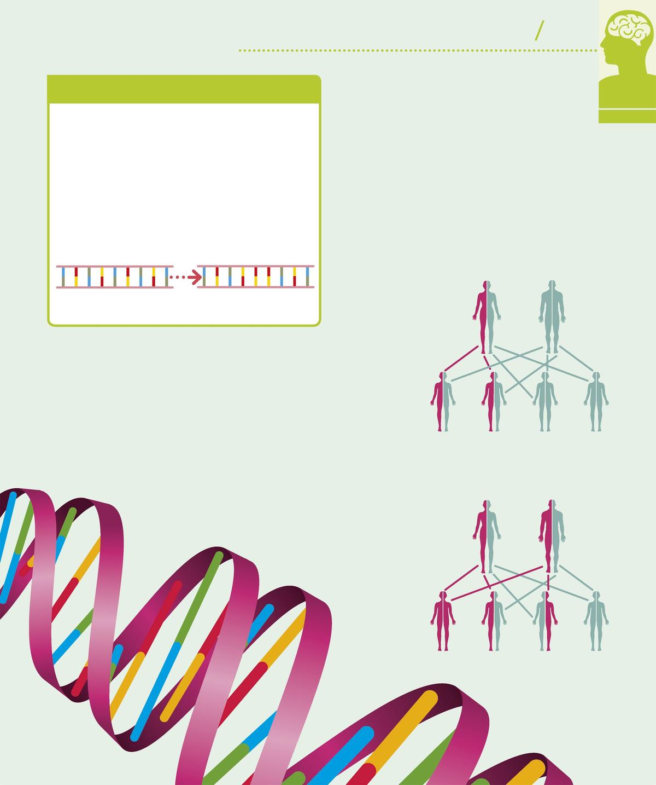
Gen lỗi ảnh hưởng đến não như thế nào
ĐỘT BIẾN
Gen không trực tiếp kiểm soát hành vi; thay vào đó, chúng chi phối số lượng và đặc điểm của các tế bào thần kinh, những tế bào mà hoạt động kết hợp lại tạo nên chức năng tinh thần của chúng ta. Ví dụ, một số gen ảnh hưởng đến mức độ chất dẫn truyền thần kinh (xem tr.24), từ đó điều hòa các chức năng như trí nhớ, tâm trạng, hành vi và kỹ năng nhận thức. Một gen lỗi có thể không tạo ra được protein cần thiết cho hoạt động khỏe mạnh của não, hoặc làm tăng nguy cơ rối loạn như bệnh Alzheimer. Một số lỗi có thể được thừa kế từ cha mẹ; hai kiểu di truyền được trình bày ở đây.
Khi tế bào phân chia, DNA hai sợi tách thành các sợi đơn, và mỗi bazơ được ghép với một bazơ bổ sung mới để tạo hai bản sao DNA. Tuy nhiên, đôi khi việc sao chép tạo ra thay đổi trong trình tự. Những thay đổi này có thể khiến gen tạo ra một protein bị biến đổi hoặc ngừng hoạt động hoàn toàn. Đột biến có thể phát sinh trong suốt cuộc đời hoặc được thừa kế từ cha mẹ.
Bộ khung của phân tử DNA
Đột biến xảy ra khi các cặp bazơ bị thay đổi trong quá trình sao chép
Cặp bazơ
CHA MẸ MẮC BỆNH CHA MẸ KHÔNG MẮC BỆNH
Trội trên nhiễm sắc thể thường Ở rối loạn trội trên nhiễm sắc thể thường, chẳng hạn bệnh Huntington, chỉ cần một người cha mẹ truyền gen lỗi lại là bệnh phát sinh.
Sợi DNA mới được tạo ra trong quá trình sao chép tế bào
LỖI
Chỉ có gen bình thường
Có gen lỗi
ÍT NHẤT MỘT PHẦN BA TỔNG SỐ GEN CỦA CHÚNG TA HOẠT ĐỘNG CHỦ YẾU Ở NÃO
CON MẮC BỆNH
CON KHÔNG MẮC BỆNH
Lặn trên nhiễm sắc thể thường Ở rối loạn lặn trên nhiễm sắc thể thường, chẳng hạn bệnh Tay-Sachs, rối loạn chỉ xảy ra khi cả hai người cha mẹ đều truyền một bản sao lỗi của gen. Người mang gen không mắc bệnh nhưng vẫn có thể truyền gen lỗi.
CHA MẸ MANG GEN
CHA MẸ MANG GEN
Guanine (xanh dương) luôn liên kết với cytosine (xanh lá)
Người cha mẹ có một gen lỗi và một gen khỏe mạnh
Đứa trẻ mắc bệnh có hai bản sao gen lỗi
Đứa trẻ không mắc bệnh
Những đứa trẻ mang gen có một gen lỗi và một gen khỏe mạnh
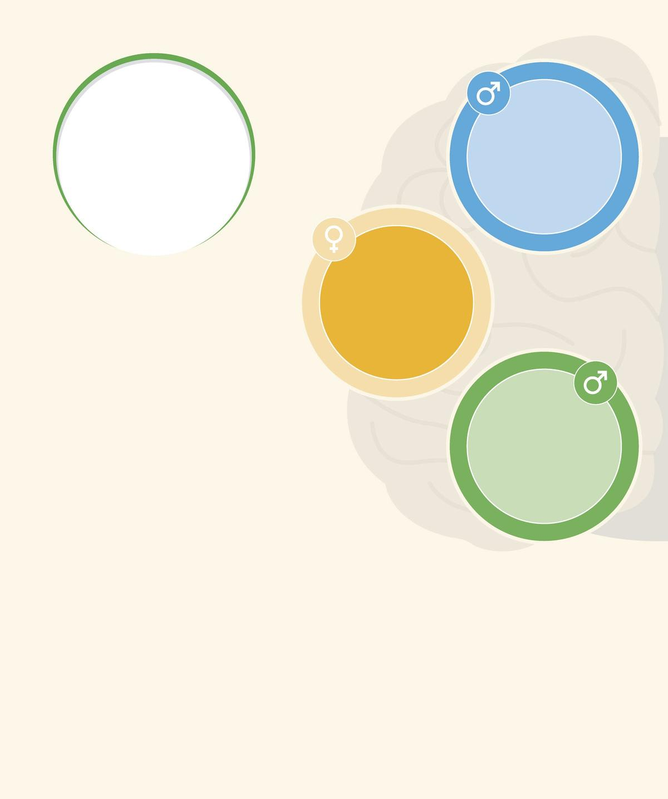
NÃO BỘ NAM GIỚI
KHI NÀO GIỚI TÍNH CỦA THAI NHI ĐƯỢC XÁC ĐỊNH?
Đồi thị (thalamus)
Vùng này, “trạm chuyển tiếp” giữa vỏ não (cortex) và các cấu trúc não sâu hơn, lớn hơn ở nam giới so với nữ giới. Hai bên của đồi thị có xu hướng được kết nối với nhau nhiều hơn ở nữ giới, nhưng ý nghĩa của đặc điểm này hiện vẫn chưa được biết rõ.
Giới tính nhiễm sắc thể được xác định tại thời điểm thụ tinh. Sự phân hóa giới tính về thể chất xảy ra sau thụ tinh từ 7 đến 12 tuần.
NÃO BỘ NỮ GIỚI — Thể chai (corpus callosum): Thể chai, nối hai bán cầu trái và phải của não, được phát hiện là lớn hơn ở nữ giới. Cấu trúc này có liên quan đến kỹ năng nhận thức cao hơn ở nữ giới, có thể vì các chức năng não được chia sẻ giữa hai bán cầu, trong khi ở nam giới thì không.
Sự khác biệt về thể chất
Sự khác biệt giữa nam và nữ bắt đầu với các nhiễm sắc thể giới tính ngay tại thời điểm thụ thai: XX ở nữ giới và XY ở nam giới. Trong tử cung, việc người mẹ giải phóng testosterone trong thời kỳ mang thai sẽ “nam hóa” thai nhi nam, khởi phát sự phát triển của các khác biệt cấu trúc giới tính cả ở não bộ lẫn cơ thể. Khi chúng ta lớn lên và phát triển, những khác biệt này sẽ xuất hiện ở nhiều cấu trúc não khác nhau (xem bên phải). Sự khác biệt về nhận thức và kỹ năng giữa hai giới đã hiện diện ngay từ thời thơ ấu. Não bộ của nam giới trưởng thành trung bình lớn hơn 8 đến 13 phần trăm so với não bộ của nữ giới trưởng thành. Ngoài ra, não bộ nam giới trưởng thành cũng có xu hướng biến đổi nhiều hơn về thể tích và độ dày vỏ não so với não bộ nữ giới.
NÃO BỘ THEO VÙNG — Hải mã (hippocampus): Nam giới có hải mã trước (phía trước) lớn hơn, vùng này kiểm soát việc tiếp nhận và mã hóa thông tin không gian-thị giác mới, trong khi nữ giới có hải mã sau lớn hơn, kiểm soát việc truy xuất kiến thức không gian-thị giác đã có.
Não bộ nam và nữ
MỌI PHÔI THAI NGƯỜI ĐỀU BẮT ĐẦU CUỘC SỐNG VỚI NÃO BỘ NỮ — CẦN THÊM HORMONE ĐỂ TẠO NÊN NAM GIỚI
Các nhà khoa học đã phát hiện rằng não bộ nam và nữ có những khác biệt rõ rệt về thể chất. Tuy nhiên, không phải lúc nào cũng rõ những biến đổi này ảnh hưởng thế nào đến thái độ, hoạt động và phản ứng của chúng ta đối với môi trường. Sự khác biệt có thể phát sinh từ cách não bộ được sử dụng trong cuộc sống, cũng như từ hình thái thể chất của nó.
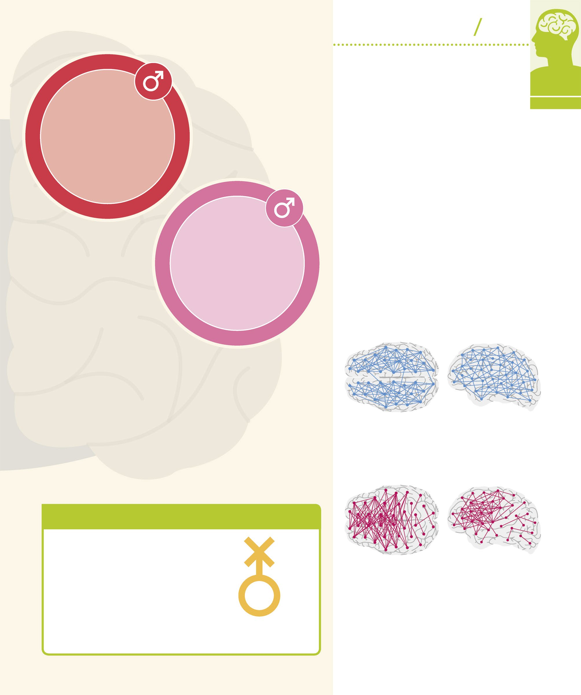
NÃO BỘ THEO VÙNG — Vùng dưới đồi (hypothalamus): Một số vùng ở vùng dưới đồi kiểm soát hành vi tình dục điển hình ở nam và phản ứng với căng thẳng lớn hơn ở nam giới dị tính so với nữ giới hoặc nam giới đồng tính.
Sự khác biệt về chức năng
Não bộ nam và nữ khác nhau cả về chức năng lẫn cấu trúc. Não bộ nam có vẻ “thiên về một bên” (lateralized) hơn, tức là có sự khác biệt lớn hơn về chức năng giữa bán cầu trái và phải. Nam giới cũng biến đổi nhiều hơn nữ giới về năng lực nhận thức. Những biến đổi này một phần là do cấu trúc của “mạng kết nối” (connectome) — mạng lưới các kết nối thần kinh giữa các vùng của não bộ (xem bên dưới). Chúng cũng bắt nguồn từ tác động của hormone và các ảnh hưởng bên ngoài trong suốt cuộc đời chúng ta. Đặc biệt, môi trường xã hội và kinh nghiệm sống liên tục định hình các đường dẫn thần kinh của chúng ta, giúp chúng ta thực hiện các nhiệm vụ điển hình của nam hoặc nữ.
NÃO BỘ THEO VÙNG — Hạch hạnh nhân (amygdala): Hạch hạnh nhân, tham gia vào các phản ứng cảm xúc, ra quyết định và hình thành ký ức cảm xúc, lớn hơn một chút ở nam giới. Tuy nhiên, sự khác biệt về chức năng, chẳng hạn như phản ứng với kích thích cảm xúc tiêu cực so với tích cực, lại có ý nghĩa lớn hơn.
Ít kết nối băng qua giữa hai bán cầu
Kết nối nhiều hơn trong lòng mỗi bán cầu
Cấu trúc não: Có một số vùng mà tại đó đã xác định được những khác biệt thể chất đo lường được giữa não bộ nam và nữ trưởng thành. Các vùng chính được trình bày ở đây. Những khác biệt này ảnh hưởng thế nào đến nhận thức và tâm lý hiện vẫn đang là chủ đề của các nghiên cứu khoa học tiếp diễn.
NAM
Nhiều kết nối giữa hai bán cầu
Ít kết nối hơn trong lòng mỗi bán cầu
NÃO BỘ PHI NHỊ NGUYÊN
Người đồng tính và người chuyển giới được phát hiện có một số cấu trúc não đặc biệt. Ví dụ, một số vùng của vùng dưới đồi (xem ở trên) khác nhau ở nam giới đồng tính và dị tính, và hạt vỏ (putamen) — liên quan đến học tập và điều hòa vận động — có nhiều chất xám hơn ở phụ nữ chuyển giới so với nam giới không chuyển giới (cisgender).
NỮ
Mạng kết nối (connectome): Một nghiên cứu, trong đó hơn 900 bộ não được chụp ảnh, đã phát hiện rằng não bộ nam có mức kết nối lớn hơn trong lòng mỗi bán cầu, trong khi não bộ nữ có các kết nối dày đặc hơn giữa hai bán cầu. Nam giới được thấy làm tốt hơn trong xử lý không gian, còn nữ giới đạt điểm cao hơn về sự chú ý và trí nhớ với từ ngữ và khuôn mặt.
BIỂU TƯỢNG PHI NHỊ NGUYÊN

NÃO BỘ ÂM NHẠC
Chơi nhạc liên quan đến nhiều vùng của não bộ. Các nghiên cứu so sánh não bộ của nhạc sĩ chuyên nghiệp và người nghiệp dư cho thấy nhạc sĩ chuyên nghiệp có thể tích chất xám lớn hơn ở các vùng não liên quan đến vận động, thính giác và lập luận thị giác-không gian. Kết quả nghiên cứu cho thấy não bộ trải qua những thích nghi cấu trúc để đáp ứng với môi trường (việc dành hàng giờ luyện tập lặp đi lặp lại với một nhạc cụ).
Chúng ta thừa hưởng từ cha mẹ (xem tr.56–57). Chính các nhiễm sắc thể, tại thời điểm thụ tinh, quyết định giới tính nhiễm sắc thể của một phôi thai (XX ở nữ giới và XY ở nam giới). Những bất thường về nhiễm sắc thể cũng có thể gây bệnh hoặc các vấn đề phát triển.
các nhiễm sắc thể của mình, vốn chứa DNA, từ cha mẹ
Một số đặc điểm tâm lý, chẳng hạn như khuynh hướng phát triển trầm cảm, đã được liên kết với các gen cụ thể — nhưng thường thì có hàng chục, thậm chí hàng trăm gen cùng tác động với nhau. Người nào thừa hưởng càng nhiều trong số các gen đó thì càng có khả năng phát triển đặc điểm ấy.
HẢI MÃ TRONG NÃO BỘ NGƯỜI LỚN TẠO RA KHOẢNG 700 TẾ BÀO THẦN KINH MỖI NGÀY
Gen so với môi trường
Mỗi người sinh ra đã có một “bản mẫu” DNA thừa hưởng từ cha mẹ (xem tr.56–57): đây là yếu tố “bẩm sinh” ảnh hưởng đến hoạt động của não bộ, chẳng hạn như năng lực nhận thức và hành vi. Tuy nhiên, suốt cuộc đời mỗi người, các mạng lưới tế bào thần kinh (xem tr.26–27) có thể thích nghi và thay đổi để đáp ứng với các trải nghiệm thể chất và xã hội (“môi trường nuôi dưỡng”). Những ảnh hưởng của môi trường, nếu mạnh và kéo dài, có thể làm thay đổi cấu trúc não bộ và cũng ảnh hưởng đến cách các gen hoạt động — một quá trình được gọi là thay đổi biểu sinh (xem trang đối diện).
KHI NÀO
THAY ĐỔI BIỂU SINH XẢY RA?
Thay đổi biểu sinh có thể do các yếu tố môi trường gây ra ở bất kỳ thời điểm nào trong cuộc đời một người, từ sự phát triển trong tử cung đến tuổi già.
Bẩm sinh và nuôi dưỡng
Hai ảnh hưởng cơ bản lên não bộ, “bẩm sinh” và “nuôi dưỡng”, đôi khi được xem là những lực lượng đối lập. Tuy nhiên, giữa chúng có một sự tương tác năng động diễn ra suốt cuộc đời mỗi người.
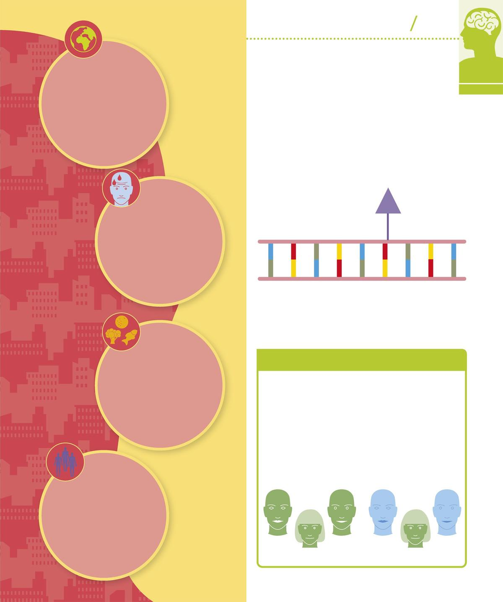
NUÔI DƯỠNG
MÔI TRƯỜNG VẬT LÝ
Thay đổi biểu sinh
Những thay đổi trong cách các gen được sử dụng (hay biểu hiện) xảy ra trong suốt cuộc đời một người được gọi là thay đổi biểu sinh. Chúng ảnh hưởng đến chức năng của gen, chứ không phải cấu trúc gen, và có thể truyền lại cho con cái của một người, dù chúng có thể chỉ kéo dài vài thế hệ. Trong não bộ, chúng có thể ảnh hưởng đến các chức năng như học tập, trí nhớ, tìm kiếm phần thưởng và phản ứng với căng thẳng. Có hai dạng chính: methyl hóa, trong đó một hợp chất gắn vào DNA; và biến đổi histone, làm thay đổi mức độ quấn chặt của DNA.
Các nghiên cứu trên trẻ em đã phát hiện rằng việc lớn lên trong nghèo khó hoặc thiếu thốn có thể làm suy giảm sự phát triển của các vùng liên quan đến trí nhớ, xử lý ngôn ngữ, ra quyết định và tự kiểm soát. Tuy nhiên, một môi trường gia đình an toàn, hạnh phúc, với những việc thú vị để làm, dường như làm giảm tổn hại đó.
MỨC ĐỘ CĂNG THẲNG
Hợp chất methyl gắn vào một bazơ của DNA
Căng thẳng cảm xúc mãn tính ở trẻ em có thể làm suy giảm sự phát triển của hạch hạnh nhân, hải mã và các thùy trán, dẫn đến các vấn đề về trí nhớ, cảm xúc và học tập. Nó hạn chế hoạt động của các gen điều hòa sự phát triển của mạng lưới tế bào thần kinh. Tuy nhiên, căng thẳng “tích cực” vừa phải (vui vẻ) có thể hỗ trợ việc học tập.
Methyl hóa DNA: Trong quá trình này, một phân tử hợp chất methyl gắn vào một trong các bazơ trong trình tự DNA của một gen. Kết quả là làm ngừng hoặc hạn chế hoạt động của gen đó.
Các cặp bazơ ở hầu hết trình tự không thay đổi
CHẾ ĐỘ ĂN UỐNG
Một chế độ ăn uống lành mạnh (xem tr.54–55) giàu axit béo omega-3, vitamin B và chất chống oxy hóa giữ cho mạch máu khỏe mạnh, cải thiện lưu lượng máu lên não. Những dưỡng chất này cũng được liên kết với việc cải thiện trí nhớ và duy trì các chức năng nhận thức ở người cao tuổi.
NGHIÊN CỨU SINH ĐÔI
Các nghiên cứu về sinh đôi cho thấy một đặc điểm cụ thể, chẳng hạn như hệ số thông minh (IQ), phụ thuộc bao nhiêu vào di truyền và bao nhiêu vào môi trường. Hầu hết cặp sinh đôi lớn lên trong cùng một gia đình; tuy nhiên, sinh đôi cùng trứng chia sẻ 100 phần trăm gen của mình, trong khi sinh đôi khác trứng (sinh đôi bụng) chỉ chia sẻ 50 phần trăm. Nếu một đặc điểm thể hiện rõ hơn ở sinh đôi cùng trứng so với sinh đôi khác trứng, hoặc xuất hiện ở những cặp sinh đôi cùng trứng bị tách ra ngay từ lúc mới sinh, điều đó gợi ý rằng di truyền có ảnh hưởng mạnh hơn môi trường.
MẠNG LƯỚI XÃ HỘI
CHA MẸ SINH HỌC
CHA MẸ NUÔI
Người ta đã phát hiện rằng cô đơn làm thay đổi việc sản xuất chất dẫn truyền thần kinh, khiến con người cảm nhận được ít phần thưởng hơn từ các tiếp xúc xã hội và có nhiều khả năng hiểu sai thái độ của người khác là đe dọa. Tuy nhiên, việc duy trì các mối quan hệ xã hội chặt chẽ có thể hỗ trợ trí nhớ và kỹ năng nhận thức.
SINH ĐÔI KHÔNG ĐƯỢC NHẬN NUÔI
SINH ĐÔI ĐƯỢC NHẬN NUÔI

Phần 2 — Chức Năng Não Bộ & Các Giác Quan
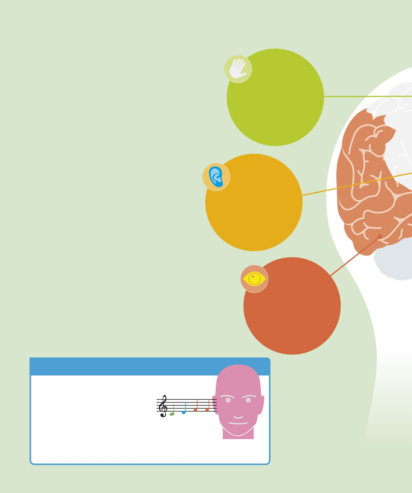
Cảm nhận thế giới
Xúc giác — được xem là giác quan đầu tiên phát triển trong bụng mẹ; các nơ-ron xúc giác
Để tồn tại trong môi trường, chúng ta phải có khả năng phản ứng và tương tác với các kích thích do hiện tượng vật lý, hóa học và sinh học tạo ra — thị giác, thính giác, khứu giác, vị giác và xúc giác. Các cảm biến trong cơ thể thu nhận những tín hiệu này và gửi chúng đến não bộ để giải mã.
đáp ứng với áp lực, nhiệt độ, rung động, cơn đau và cái chạm nhẹ. Xúc giác là cách con người tiếp xúc vật lý với môi trường và với nhau.
Thính giác: Sóng âm trong không khí được tai thu nhận và truyền vào hộp sọ, nơi ốc tai biến chúng thành các xung điện. Thính giác là giác quan phát triển nhất lúc mới sinh, nhưng chỉ hoàn thiện vào cuối năm đầu đời.
Các giác quan
Mỗi giác quan có một bộ cảm biến riêng. Hầu hết tập trung ở một vùng cụ thể của cơ thể, ngoại trừ xúc giác được phân bố khắp da cũng như bên trong cơ thể. Dù các nơ-ron và thụ thể của mỗi giác quan phần lớn chỉ phục vụ riêng giác quan đó, đôi khi chúng vẫn chồng chéo. Thông tin cảm giác liên tục dội vào não bộ, nhưng chỉ một phần nhỏ trong đó đi vào ý thức. Dù vậy, thông tin “không được chú ý” vẫn có thể định hướng hành động của chúng ta, đặc biệt là ở giác quan thứ sáu — cảm giác thân thể (proprioception) — vốn truyền tải thông tin về vị trí của cơ thể trong không gian.
RIÊNG BIỆT
Thị giác: Thị giác liên quan đến các cảm biến ở phía sau mắt, nơi ánh sáng được chuyển thành tín hiệu điện. Những tín hiệu này được vận chuyển đến phía sau não, nơi chúng được chuyển hóa thành màu sắc, chi tiết tinh tế và chuyển động. Chúng ta nhận biết vật thể chỉ trong chưa tới nửa giây.
KHỨU GIÁC CỦA BẠN TRỞ NÊN NHẠY HƠN KHI BẠN ĐÓI
ĐỒNG CẢM GIÁC (synesthesia)
Đồng cảm giác là tình trạng trong đó một kích thích có thể được hai hay nhiều giác quan diễn giải cùng lúc. Ở dạng phổ biến nhất, người ta nhìn một con số hoặc một từ như thể nó có màu sắc. Mỗi người đồng cảm giác (synesthete) có những liên tưởng màu sắc riêng. Gần như mọi kết hợp giác quan đều có thể bị ảnh hưởng. Những kết hợp từ ba giác quan trở lên thì hiếm gặp.
Mỗi nốt được liên kết với một màu sắc khác nhau
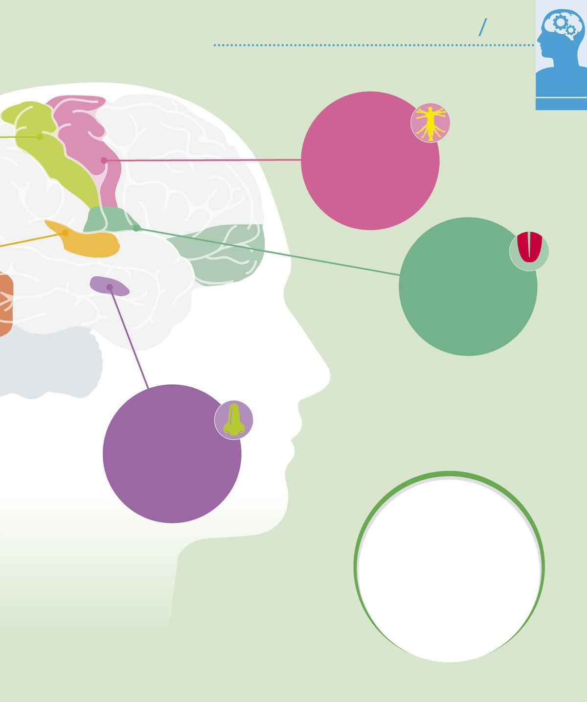
CHỨC NĂNG NÃO BỘ VÀ CÁC GIÁC QUAN
Cảm giác thân thể: Não bộ liên tục xử lý thông tin từ các khớp và cơ bắp, cho nó biết cơ thể đang ở đâu trong không gian. Giác quan này giữ cho chúng ta đứng thẳng và cho phép ta thực hiện các động tác mà không cần nỗ lực có ý thức, chẳng hạn như đi lên cầu thang.
VỎ VẬN ĐỘNG
CẢM GIÁC THỂ
VỎ CẢM GIÁC
VÙNG CHÍNH
Vị giác
VỎ THÍNH GIÁC
VÙNG VỊ GIÁC THỨ HAI
Vị giác đóng vai trò quan trọng trong việc xác định thức ăn nào an toàn và bổ dưỡng. Các thụ thể vị giác chỉ nhận được năm vị cơ bản: ngọt, mặn, đắng, chua và vị umami (đậm đà). Chúng ta cần khứu giác để giúp nhận diện một hương vị.
Vỏ khứu giác
Các vùng cảm giác của vỏ não: Tín hiệu từ các thụ thể cảm giác được chiếu đến những vùng khác nhau của vỏ não. Dù các vùng này riêng biệt, chúng thường có thể phản ứng với tín hiệu từ một giác quan khác. Ví dụ, các nơ-ron thị giác phản ứng tốt hơn trong điều kiện ánh sáng yếu nếu có âm thanh đi kèm.
Khứu giác
Dù chỉ có 400 thụ thể khứu giác, con người có thể nhận biết tới một nghìn tỷ mùi khác nhau. Khứu giác quan trọng cho sự sống sót vì nó cảnh báo chúng ta về các chất hoặc sự kiện nguy hiểm, chẳng hạn như có thứ gì đó đang cháy. Nó cũng đóng vai trò then chốt trong vị giác.
CÓ BAO NHIÊU GIÁC QUAN?
Cộng thêm sáu giác quan được mô tả ở đây, các nhà khoa học cho rằng có thể có tới 20 giác quan, dựa trên số loại thụ thể khác nhau trong cơ thể.

TẠI SAO MẮT TÔI NHẮM LẠI KHI TÔI HẮT HƠI?
Mắt có lẽ là giác quan quan trọng nhất trong năm giác quan của chúng ta. Mắt thu thập ánh sáng phản xạ từ một vật và chuyển thông tin này đến não qua dây thần kinh thị giác.
Khi một chất kích thích trong mũi kích hoạt trung tâm điều khiển ở thân não, nó gây ra sự co cơ lan rộng, bao gồm cả cơ mí mắt. Điều đó khiến bạn chớp mắt trong chốc lát.
Cấu trúc của mắt
Nhãn cầu đường kính khoảng 1 in (2,5 cm). Ở phía sau mắt là võng mạc, chứa các tế bào nhạy sáng nối với dây thần kinh thị giác qua các nơ-ron. Khoảng bên trong nhãn cầu chứa đầy một chất dạng thạch. Phía trước mắt có một lỗ (đồng tử), phía sau là thủy tinh thể trong suốt. Quanh đồng tử là một vòng cơ có màu, gọi là mống mắt, điều khiển lượng ánh sáng đi vào mắt. Giác mạc, một màng trong suốt, phủ lên chúng và hòa vào màng ngoài màu trắng gọi là màng cứng.
Nhãn cầu được bao bọc bởi màng cứng
Các tia giao nhau tạo ra hình ảnh đảo ngược trên võng mạc
Các tia sáng bắt đầu khúc xạ (bẻ cong) khi đi từ không khí vào giác mạc
VÕNG MẠC
Thủy tinh thể giống như một túi thạch có thể đổi hình dạng để hỗ trợ hội tụ
ÁNH SÁNG
GIÁC MẠC
ĐỒNG TỬ
ĐỒNG TỬ (PUPIL)
Mống mắt là một vòng cơ
Nhìn thấy sự vật: Mắt có khả năng cung cấp cho não một lượng chi tiết khổng lồ về những gì nó đang nhìn. Tuy nhiên, hình ảnh não nhận được bị đảo ngược, nên phải được lật lại trước khi chúng ta có thể hiểu được.
MÀNG MẠCH
MÀNG CỨNG
Giác mạc là lớp trong suốt phủ trước mắt
Màng mạch là lớp giàu mạch máu bao quanh võng mạc
Ánh sáng đi vào mắt: Ánh sáng đi qua giác mạc và
Thủy tinh thể và sự hội tụ: Phía sau mống mắt là thủy tinh thể, nơi mà
1
2
đi vào mắt qua đồng tử. Đồng tử được bao quanh bởi một vòng cơ có màu — mống mắt — có thể làm đồng tử co lại hoặc giãn ra để thay đổi lượng ánh sáng đi vào.
các tia sáng bị bẻ cong để hình ảnh hình thành trên võng mạc. Thủy tinh thể nối với các cơ cho phép nó đổi hình dạng — nó dẹt lại khi nhìn vật ở xa và dày lên khi nhìn vật ở gần.

CHỨC NĂNG NÃO BỘ VÀ CÁC GIÁC QUAN
CHÚ THÍCH: Các mũi tên màu tím cho thấy hướng của tia sáng. Mũi tên màu đen và xanh dương là tín hiệu thần kinh đi tới dây thần kinh thị giác.
VÕNG MẠC
Tia sáng đi tới phía sau võng mạc
Các tế bào cần (rods) hoạt động theo thang xám, đáp ứng với cường độ ánh sáng; chúng giúp ta nhìn trong điều kiện thiếu sáng
Các tia sáng
Đen và trắng
Màu sắc
Các tế bào nón (cones) gửi tín hiệu thần kinh khi có ánh sáng xanh lá, đỏ hoặc xanh dương; chúng cần ánh sáng mạnh để tạo ra tín hiệu
Tín hiệu đen trắng đi từ võng mạc tới dây thần kinh thị giác
TẾ BÀO THẦN KINH
TẾ BÀO THỤ QUẢNG
Tế bào hạch
DÂY THẦN KINH THỊ GIÁC
Tín hiệu màu đi từ võng mạc tới dây thần kinh thị giác
MÀNG MẠCH
Vách gồm các tế bào sắc tố tạo thành mặt sau của võng mạc
Tế bào lưỡng cực
Võng mạc: Võng mạc được cấu tạo gồm
3
Tín hiệu thần kinh đến não: Các tín hiệu thần kinh kích hoạt
4
gồm ba lớp. Các tia sáng đi xuyên qua hai lớp đầu — tế bào hạch và tế bào lưỡng cực — rồi tới lớp thứ ba, nơi chứa các tế bào cần và nón nhạy sáng. Những tế bào này chuyển tia sáng thành tín hiệu thần kinh.
các xung ở tế bào hạch và tế bào lưỡng cực, vốn nối trực tiếp với dây thần kinh thị giác. Tín hiệu thần kinh sau đó đi dọc dây thần kinh thị giác đến não.
Dây thần kinh thị giác mang tín hiệu từ các cảm biến ánh sáng đến não
DÂY THẦN KINH
DÂY THẦN KINH THỊ GIÁC
ĐIỂM MÙ
Để nối với não, các sợi thần kinh của võng mạc phải đi xuyên qua phía sau mắt để tạo thành dây thần kinh thị giác. Điều này tạo ra một “điểm mù” không có thụ thể quang học. Chúng ta không nhận ra điều đó vì mỗi mắt cung cấp dữ liệu về một cảnh, và não dùng thông tin từ mắt kia để hoàn thiện hình ảnh.
Các tế bào cần và nón
Điểm mù nơi các sợi thần kinh rời khỏi mắt
NHÃN CẦU CỦA BẠN GIỮ NGUYÊN KÍCH THƯỚC SUỐT CUỘC ĐỜI
MẮT NGƯỜI
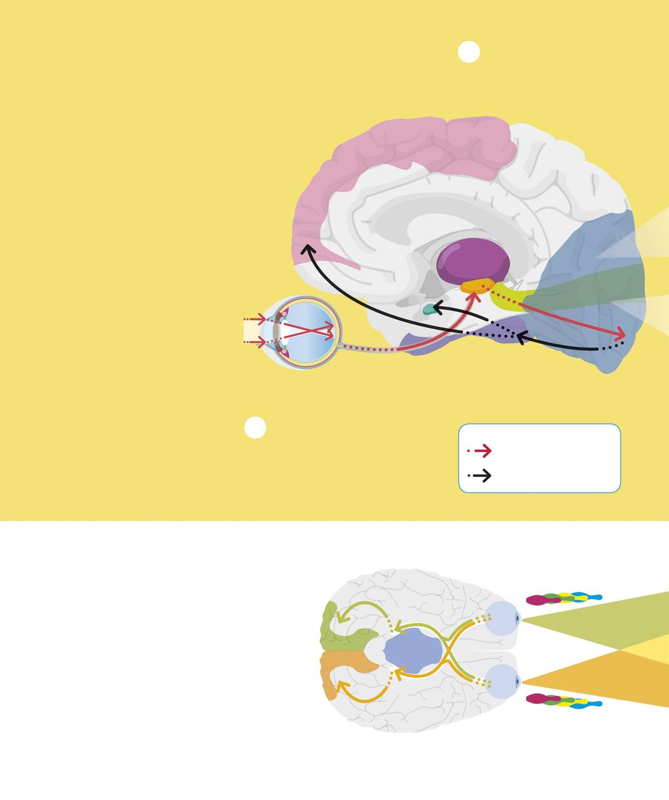
3
Các đặc điểm gợi ý một khuôn mặt được gửi tới vùng nhận diện khuôn mặt và hạch hạnh nhân, nơi chúng được tìm kiếm những chi tiết gợi ra sự nhận diện.
Vỏ não
Tín hiệu thần kinh từ mắt phải đi xuyên suốt não trước khi tới vùng chuyên giải mã thông tin này. Vùng đó được gọi là vỏ thị giác.
Nhân gối ngoài chuyển tiếp tín hiệu từ võng mạc tới vỏ thị giác
THÙY TRÁN
Thùy trán thực hiện nhận diện khuôn mặt có ý thức
ĐỒI THỊ
Cấu trúc của vỏ não
Vỏ thị giác hiện diện ở cả hai bán cầu não và được chia tiếp thành tám vùng chính, mỗi vùng có chức năng riêng (xem bảng ở trang đối diện). Tín hiệu đi từ võng mạc (xem tr.66–67) qua đồi thị và nhân gối ngoài tới vỏ thị giác chính (V1). Dữ liệu thô sau đó đi qua nhiều vùng thị giác khác nhau, bổ sung các chi tiết về hình dạng, màu sắc, độ sâu và chuyển động trước khi kết hợp thành một hình ảnh. Một số vùng cung cấp thông tin giúp nhận diện ngay lập tức vật quen thuộc, số khác hỗ trợ định hướng không gian hoặc kỹ năng thị giác-vận động.
Hạch hạnh nhân xử lý biểu cảm khuôn mặt
VỎ THỊ GIÁC
HẠCH HẠNH NHÂN
VÙNG NHẬN DIỆN KHUÔN MẶT
DÂY THẦN KINH THỊ GIÁC
Tế bào cần và nón trong võng mạc chuyển ánh sáng thành tín hiệu thần kinh
Dây thần kinh thị giác mang tín hiệu thần kinh đến não
Từ nhãn cầu tới vỏ thị giác: Dữ liệu từ nhãn cầu đi dọc theo
1
CHÚ THÍCH
dây thần kinh thị giác cho tới khi tới giao thoa thị giác (xem bên dưới), nơi một phần dữ liệu được gửi sang phía đối diện của não. Sau đó tín hiệu đi tới nhân gối ngoài, vùng này chuyển dữ liệu tới vỏ thị giác để xử lý.
Thông tin từ mắt
Đường nhận diện khuôn mặt
Nhân gối ngoài
Một nửa tín hiệu đi cùng bán cầu; nửa còn lại vượt sang bên kia
Thị giác lập thể (stereoscopic vision)
Nhìn vật từ mắt trái
Khả năng nhìn 3-D của chúng ta — gọi là thị giác lập thể — đến từ việc cả hai mắt cùng nhìn thẳng về phía trước và di chuyển đồng bộ. Vì hai mắt hơi tách nhau, mỗi mắt nhận một góc nhìn khác nhau, dù chúng chồng lên nhau một chút. Não tính toán thông tin không gian từ mỗi mắt để tạo ra một hình ảnh tổng thể, dùng kinh nghiệm trước đó để tăng tốc xử lý và lấp đầy các khoảng trống.
BÁN CẦU TRÁI
VỎ THỊ GIÁC TRÁI / ĐỒI THỊ
VỎ THỊ GIÁC PHẢI
Đổi bên: Tại điểm giao thoa gọi là giao thoa thị giác, các sợi trục thần kinh từ phía trái của mỗi võng mạc hợp lại và tiếp tục đi tới vỏ thị giác bên trái, tương tự như vậy với các sợi trục từ phía phải.
Các sợi trục thần kinh tách ra sau nhân gối ngoài và tỏa tới các vùng của vỏ thị giác
Các dây thần kinh thị giác hội tụ tại giao thoa thị giác
Nhìn vật từ mắt phải
BÁN CẦU
PHẢI

CHỨC NĂNG NÃO BỘ VÀ CÁC GIÁC QUAN
Vỏ thị giác dưới
V6
V3A
VỎ THỊ GIÁC RẤT MỎNG — CHỈ 0,08 IN (2 MM)
V3D
V2
V1
V2
Một số vùng xử lý thị giác cong quanh phía sau não, nằm trong rãnh giữa hai bán cầu
V4V
CÁC VÙNG CỦA VỎ THỊ GIÁC
V8
VP
CHỨC NĂNG
VÙNG
V1
Đáp ứng với các kích thích thị giác.
VÙNG BROCA
Chuyển tiếp thông tin và đáp ứng với các hình dạng phức tạp.
V2
V3A, V3D, VP
Ghi nhận góc và tính đối xứng, đồng thời kết hợp chuyển động và hướng.
V7
Vỏ thị giác, nằm ở thùy chẩm
V3A V3
Đáp ứng với màu sắc, hướng, hình dạng và chuyển động.
V4D, V4V
V2
V5
Đáp ứng với chuyển động.
V4D
Phát hiện chuyển động ở ngoại vi của trường thị giác.
V6
Vỏ thị giác: Các tín hiệu thần kinh tiến triển
2
V1
qua các lớp khác nhau của vỏ não, mỗi lớp thêm thông tin vào hình ảnh. Phải mất nửa giây để hình ảnh được đánh giá và trở thành một tri giác có ý thức.
V7
Tham gia vào tri giác tính đối xứng.
V8
Có lẽ tham gia xử lý màu sắc.
TRƯỜNG THỊ GIÁC CỦA MẮT TRÁI
CÁC TRƯỜNG THỊ GIÁC
Động vật như linh trưởng có trường thị giác lập thể rộng và đánh giá khoảng cách tốt hơn động vật ăn cỏ hay hầu hết chim. Tuy nhiên, chúng có một vùng mù phía sau chỉ nhìn được khi quay đầu. Động vật có mắt ở hai bên và đỉnh đầu có trường thị giác 2-D rộng hơn và nhận biết toàn cảnh tốt hơn.
Hình ảnh do não tạo ra sau khi kết hợp hình ảnh từ trường thị giác của mắt trái và mắt phải
TRƯỜNG THỊ GIÁC SONG MẮT
THỎ
CON NGƯỜI
TRƯỜNG THỊ GIÁC CỦA MẮT PHẢI
Trường thị giác song mắt
Vùng mù
Trường thị giác của mắt trái
Trường thị giác của mắt phải

TRẺ SƠ SINH CHỈ NHÌN THẤY MÀU ĐEN, TRẮNG VÀ ĐỎ
Nhìn là một hành động vừa có ý thức vừa không có ý thức. Mỗi loại đi theo đường riêng trong não. Đường có ý thức giúp nhận diện vật, còn đường không ý thức dẫn chuyển động.
Vùng tế bào V1
Vùng tế bào V2
Vùng tế bào V3
Tín hiệu từ mắt đầu tiên được nhận tại vỏ thị giác chính (V1). Các nơ-ron ở đây nhạy với tín hiệu thị giác cơ bản, gồm hướng và chiều chuyển động của vật, cùng khả năng nhận dạng mô hình.
Ở vỏ thị giác thứ hai (V2), một số nơ-ron cải thiện hình ảnh từ V1, làm sắc nét đường nét và cạnh của các hình dạng phức tạp. Nơ-ron khác tinh chỉnh cách diễn giải ban đầu về màu sắc của vật.
Vùng thị giác 3 (V3) tham gia phân tích góc, vị trí, độ sâu và hướng của hình dạng. Nó cũng giúp xử lý hướng và tốc độ của vật. Một số ít tế bào còn nhạy với màu sắc.
ĐƯỜNG DẪN VỎ THỊ GIÁC
Đường thị giác tách ra sau vùng tế bào V3
Các thùy đỉnh đánh giá vị trí của vật so với người quan sát
Theo dõi đường dẫn
Khi thông tin thị giác được các lớp của vỏ thị giác xử lý (xem tr.68–69), nó tách thành hai đường gọi là đường trên, hay đường lưng (dorsal route), và đường dưới, hay đường bụng (ventral route). Vị trí chính xác của điểm tách vẫn còn chút bất định, nhưng đường lưng đảm nhận nhận thức không gian về vị trí của ta và cách ta di chuyển so với đồ vật quanh ta, trong khi đường bụng giúp ta nhận diện, phân loại và nhận ra những gì ta thấy. Đường lưng quan trọng trong việc đánh giá các tình huống đáng kể, đặc biệt khi cần hành động ngay để tránh nguy hiểm, chẳng hạn như né tránh một vật đang bay tới. Khi đó, đường bụng bị đưa vào vị trí thứ yếu vì thông tin nó mang theo không mang tính quyết định.
V3
V2
V4
V5
V1
Thùy thái dương dưới tham gia nhận diện vật
CHÚ THÍCH
Đường lưng
Đường bụng
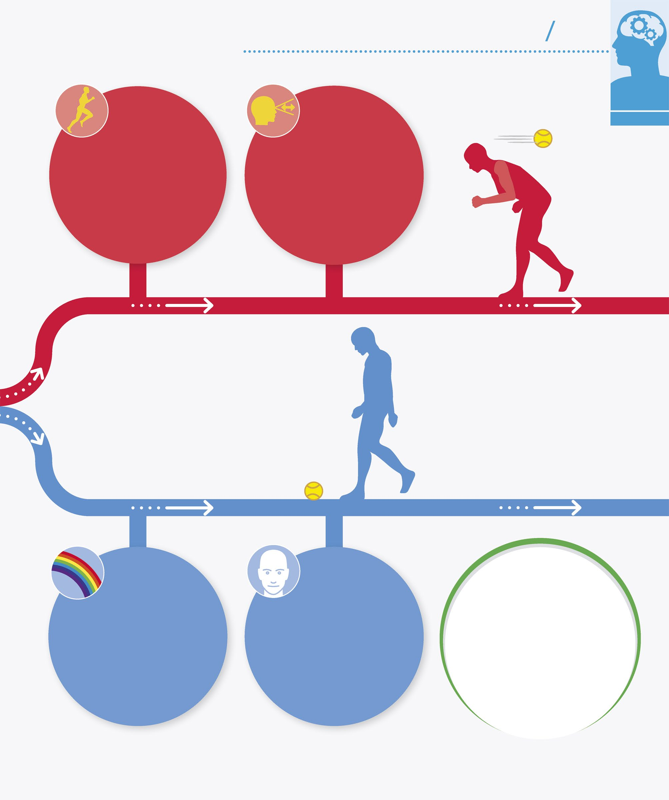
CHỨC NĂNG NÃO BỘ VÀ CÁC GIÁC QUAN
Vùng tế bào V5
Thùy đỉnh: Thùy đỉnh
Vùng thái dương giữa (V5) đánh giá hướng chuyển động tổng thể của một vật thay vì hướng của từng bộ phận cấu thành. Ví dụ, nó xử lý hướng bay chung của cả bầy chim thay vì chuyển động của một con chim riêng lẻ. Nó cũng phân tích chuyển động của chính cơ thể ta.
đo độ sâu và vị trí của vật so với người quan sát. Điều này cho phép người đó hành động ngay lập tức, chẳng hạn như cúi né một vật đang lao tới nhanh chóng.
ĐƯỜNG “Ở ĐÂU” (ĐƯỜNG LƯNG)
Thị giác không ý thức: Đường lưng mang thông tin thị giác tới các thùy đỉnh, đi qua các vùng tính toán vị trí, thời điểm và chuyển động của vật, rồi lập kế hoạch tương ứng. Tất cả những điều này diễn ra mà không cần suy nghĩ có ý thức.
Thị giác có ý thức: Đường bụng bổ sung thêm thông tin cho vật, chẳng hạn như màu sắc và hình dạng. Thông tin đi tới thùy thái dương, nơi nó được đối chiếu với trí nhớ thị giác để hỗ trợ nhận diện. Đây là nơi kích thích thị giác trở thành một tri giác có ý thức.
ĐƯỜNG “LÀ GÌ” (ĐƯỜNG BỤNG)
CHỨNG MẶT MÙ
LÀ GÌ?
Vùng tế bào V4
Thùy thái dương dưới
Đây là tình trạng không nhận diện được khuôn mặt, kể cả người thân trong gia đình, thường do tổn thương thùy thái dương dưới. Người mắc phải phải học cách nhận ra người khác bằng những cách khác.
Vùng thị giác 4 (V4) tham gia tri giác màu sắc, kết cấu, hướng, hình dạng và chuyển động. Vùng này chứa phần lớn các nơ-ron cảm nhận màu và quan trọng trong việc diễn giải không gian giữa các vật.
Tín hiệu được chuyển tiếp tới hồi fusiform của thùy thái dương dưới, vùng tham gia nhận diện hình dạng phức tạp, vật thể và khuôn mặt. Cùng với hải mã, vùng này hỗ trợ hình thành trí nhớ mới.
Não bị khuôn mặt thu hút đến mức cả những bức tranh cũng được nghiên cứu kỹ
Vì việc xử lý thị giác diễn ra trong microgiây, không có gì đáng ngạc nhiên khi đôi khi não ta gặp khó trong việc hiểu thông tin do mắt gửi tới, khiến ta nghi ngờ những gì mình nhìn thấy.
Xử lý một cảnh
Các lối mở được quét qua, có thể để đề phòng kẻ xâm nhập
Khi nhìn một cảnh, chúng ta thực sự không tiếp nhận toàn bộ nó. Thay vào đó, mắt liên tục quét qua một chuỗi vùng nhỏ cỡ ảnh thu nhỏ mà não coi là điểm đáng chú ý. Phần còn lại của cảnh bị mờ đi cho đến khi sự chú ý chuyển sang một vùng mới. Khuôn mặt thường là tiêu điểm chính của một cảnh — não được lập trình để tìm kiếm khuôn mặt, vì thế ta có xu hướng thấy chúng ở những nơi ít ngờ nhất, chẳng hạn như vết cháy trên một lát bánh mì nướng. Trong khi các chi tiết của vật mục tiêu đang được xem xét kỹ, não có ý thức dựng nên câu chuyện của cảnh, hoàn chỉnh với ngữ cảnh của từng vật.
Việc chỉ tay thu hút sự chú ý vào một vật và khiến nó đáng được nhìn
Mắt lướt thẳng qua sàn nhà, tạm dừng rất ngắn ở một chướng ngại tiềm ẩn, nhưng không đủ lâu để nhìn rõ nó
Quét tìm chi tiết: Nhìn vào một bức tranh phức tạp, chẳng hạn như cảnh quán cà phê này, kích hoạt các quá trình phân biệt vật mục tiêu, như con người, với nền, sau đó chọn những phần của mục tiêu để tập trung vào.
Não tìm kiếm dấu hiệu về mối quan hệ bằng cách nhìn từng khuôn mặt riêng lẻ và sự tương tác giữa các nhân vật
TẠI SAO CHÚNG TA THẤY KHUÔN MẶT TRONG
VẬT VÔ HỒN?
Hiện tượng nhìn khuôn mặt ở vật vô hồn (pareidolia) — thấy mặt người ở nơi vốn không có — có thể là một bản năng sinh tồn, đảm bảo ta luôn cảnh giác với những nét thù địch của kẻ thù hoặc thú săn mồi.

CHỨC NĂNG NÃO BỘ VÀ CÁC GIÁC QUAN
Ảo giác
Ảo giác xảy ra khi những gì mắt thấy được não diễn giải theo cách không khớp với thực tế vật lý của hình ảnh thật. Với quá nhiều tín hiệu cạnh tranh gửi tới não, não có xu hướng tìm kiếm các mô hình quen thuộc. Nó cũng cố dự đoán điều sẽ xảy ra tiếp theo để bù cho độ trễ nhỏ giữa kích thích và tri giác. Cả hai yếu tố này đều có thể khiến não hiểu sai kích thích thị giác. Ảo giác chia thành ba loại chính: sinh lý, nhận thức và vật lý.
LƯỚI HERMANN
TAM GIÁC KANIZSA’S
Ảo giác sinh lý: Ảo giác sinh lý được cho là phát sinh từ kích thích quá mức hoặc cạnh tranh, chẳng hạn như độ sáng, màu sắc, chuyển động và vị trí. Trong lưới này, các đốm xám dường như xuất hiện tại các điểm giao khi mắt bạn lướt qua, nhưng biến mất khi bạn nhìn chăm chú.
Ảo giác nhận thức: Ảo giác nhận thức xảy ra khi não đưa ra giả định về chuyển động hoặc góc nhìn khi quan sát một vật. Đôi khi điều này khiến não chuyển đổi giữa hai hình ảnh khác nhau hoặc thấy một hình dạng không hề tồn tại.
Chúng ta đi theo hướng nhìn của mắt người khác
Ánh sáng bị khúc xạ khi rời khỏi nước
Não hướng mắt tới những phần của cảnh mà nó cho là quan trọng — đặc biệt là khuôn mặt
Vị trí biểu kiến của con cá
Vị trí thực của con cá
SỰ KHÚC XẠ
MỘT SỐ ĐỘNG VẬT CÓ VÚ VÀ CHIM CŨNG BỊ LỪA BỞI ẢO GIÁC QUANG HỌC
Ảo giác vật lý: Ảo giác vật lý do đặc tính quang học của môi trường vật lý gây ra, đặc biệt là nước. Não không thể tính đến cách ánh sáng bị bẻ cong khi đi qua giữa nước và không khí, nên nó thấy con cá ở vị trí xa hơn so với thực tế.

Thế giới đầy tiếng ồn. Âm thanh truyền đi dưới dạng sóng âm qua không khí cho tới khi tới tai ta. Tại đây, sóng âm được biến thành xung điện và gửi tới não để giải mã thành những âm thanh có ý nghĩa.
Thu nhận âm thanh
Thính giác liên quan đến việc chuyển sóng âm thành xung điện mà não có thể diễn giải. Sóng âm được dẫn từ tai ngoài tới tai giữa, nơi chúng làm một chuỗi xương và màng rung lên. Các dao động này sau đó tới ốc tai, nơi chúng trở thành xung điện. Những xung này truyền tới thân não và đồi thị, nơi hướng, tần số và cường độ được nhận biết. Dữ liệu rồi được gửi đi để vỏ thính giác ở hai bên trái và phải xử lý. Bên trái xác định âm thanh và gán ý nghĩa cho nó, trong khi bên phải đánh giá chất lượng của âm thanh.
TAI NGOÀI
Dao động làm các xương va vào nhau
XƯƠNG BÚA (MALLEUS)
Sóng âm truyền qua không khí
Sóng âm làm rung màng nhĩ
XƯƠNG ĐÊ (INCUS)
ỐNG TAI
TAI NGOÀI
CÁC XƯƠNG TAI
(CÁC XƯƠNG TAI GIỮA)
MÀNG NHĨ
XƯƠNG BẦN ĐẸP (STAPES)
Tai ngoài: Sóng âm được thu nhận
Ống tai: Sóng âm đi dọc theo
1
2
Cửa sổ bầu dục bởi tai ngoài, vùng dẫn chúng vào bên trong đầu qua ống tai.
ống tai tới màng nhĩ. Ống tai được lót bằng những sợi lông nhỏ lọc ra dị vật.
TAI GIỮA
Cửa sổ tròn
Ống Eustache nối tai giữa với mũi và miệng
Màng nhĩ: Màng nhĩ, hay màng tympanic
Các xương tai: Dao động được truyền qua
3
4
màng nhĩ, là một lớp mỏng gồm mô xơ tạo thành ranh giới giữa tai ngoài và tai giữa. Nó rung lên khi sóng âm đi dọc ống tai va vào.
từ màng nhĩ tới một nhóm xương nối với nhau gọi là các xương tai — xương búa, xương đê và xương bàn đạp. Xương bàn đạp đẩy và kéo một màng khác gọi là cửa sổ bầu dục. Điều này truyền âm thanh tới tai trong.

CHỨC NĂNG NÃO BỘ VÀ CÁC GIÁC QUAN
LỌC BỎ TIẾNG ỒN
Trên một phố đông, có rất nhiều âm thanh chồng chéo, nhưng bạn vẫn nghe được người bên cạnh nói chuyện. Đó là vì vỏ thính giác chính có thể lọc bỏ âm thanh không cần thiết và tăng cường tín hiệu nó muốn nghe. Nó làm vậy bằng cách làm suy giảm phản ứng với âm thanh liên tục, chẳng hạn như tiếng xe cộ, đồng thời tăng cường các âm thanh biến đổi hơn, như lời nói, và chủ động lắng nghe chúng.
Vỏ thính giác chính
9
Sau khi xử lý trung gian tại đồi thị, đặc điểm của từng âm thanh được vỏ thính giác chính diễn giải; vùng này phối hợp với các vùng vỏ não khác để xác định loại âm thanh.
Tiếng ồn nền bị lọc bỏ
Cơ quan Corti (phần xoắn ốc trung tâm của ốc tai) nằm trên màng đáy và chứa các tế bào lông nhạy cảm
Vỏ thính giác chính xử lý âm thanh
ỐC TAI
DÂY THẦN KINH ỐC TAI
ĐỒI THỊ
Tín hiệu điện đi dọc dây thần kinh ốc tai
NÃO BỘ
Các tế bào chuyên biệt ở đỉnh thân não giúp xác định hướng của âm thanh
THÂN NÃO
Ống tiền đình dẫn dao động âm thanh
Ống nhĩ và ống tiền đình
ỐNG
Đồi thị: Tín hiệu đầu tiên được nhận tại
Dây thần kinh ốc tai: Các tín hiệu điện được
8
7
thân não. Từ đây, chúng đi lên tới các nơ-ron chuyên biệt ở đồi thị để xử lý. Sau đó các tín hiệu này được gửi tới vỏ thính giác chính, vùng cũng gửi thông tin ngược trở lại đồi thị.
được vận chuyển từ mỗi tế bào lông qua các đầu dây thần kinh ốc tai hợp lại thành dây thần kinh ốc tai. Dây này có nhiệm vụ truyền tín hiệu tới các nhóm nơ-ron chuyên biệt ở thân não.
CƠ QUAN CORTI
Dao động quay trở lại cửa sổ tròn
CỬA SỔ TRÒN
TAI TRONG
Cơ quan Corti: Chuyển động của
Ốc tai: Ốc tai chứa ba ống chứa dịch-
5
6
màng đáy làm cong các tế bào lông nhạy cảm trong cơ quan Corti (xem tr.76), đây là cơ quan thính giác chính. Các tế bào lông chuyển chuyển động này thành tín hiệu điện.
chứa dịch. Dao động truyền dọc ống tiền đình dưới dạng chuyển động sóng, được truyền sang màng đáy của cơ quan Corti. Dao động dư quay trở lại dọc ống nhĩ tới cửa sổ tròn.
XƯƠNG BẦN ĐẸP LÀ XƯƠNG NHỎ NHẤT TRONG CƠ THỂ
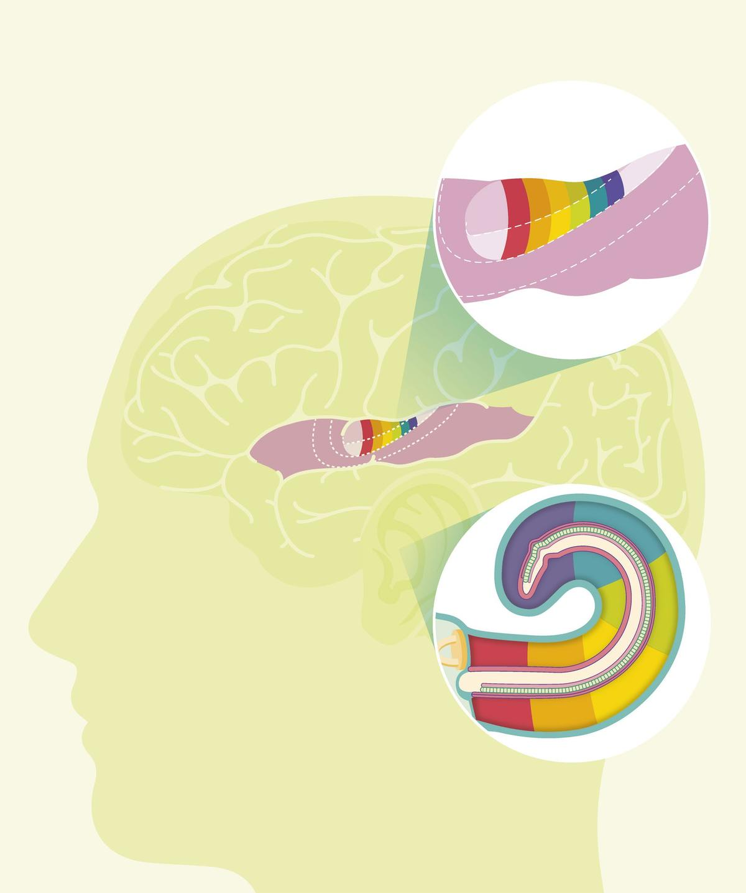
Mỗi âm thanh được tạo thành từ một số thành phần khác nhau. Não bộ phải tiếp nhận mọi chi tiết về tần số, cường độ và nhịp điệu của âm thanh để xử lý, nhận diện và ghi nhớ nó.
Vùng này nhận tín hiệu từ các âm thanh tần số thấp
Tương ứng với đỉnh của ốc tai
VỎ NÃO THÍNH GIÁC CHÍNH
Vỏ não thính giác (auditory cortex) Vỏ não thính giác là trung tâm xử lý chính của âm thanh. Nó nằm ở thùy thái dương, ngay dưới thái dương ở hai bên đầu.
Tương ứng với đáy của ốc tai
Nhận tín hiệu từ các âm thanh tần số cao
Vỏ não thính giác chính xác định tần số và cường độ của âm thanh
Vỏ não thính giác thứ cấp giải mã các âm thanh phức tạp, chẳng hạn như ngôn ngữ
Các tế bào lông bị xáo động khi màng đáy (basilar membrane) rung
VỎ NÃO THÍNH GIÁC
Phần mềm dẻo hơn của màng đáy rung dễ hơn
Đáy của ốc tai truyền các âm thanh tần số thấp
1.000 Hz
500 Hz
Cơ quan Corti là cơ quan chính của thính giác
Vỏ não thính giác bậc ba tích hợp thính giác với các hệ cảm giác khác
Màng đáy
2.000 Hz
Đỉnh của ốc tai truyền các âm thanh tần số cao
Bên trong vỏ não thính giác
Tín hiệu từ đồi thị (xem tr.75) được gửi đến vỏ não thính giác chính, vùng được chia thành các phần đáp ứng với một dải tần số. Một số phần tập trung vào cường độ thay vì tần số, trong khi những phần khác bắt lấy các âm thanh phức tạp và đặc biệt hơn, chẳng hạn như tiếng còi, tiếng nổ hoặc tiếng động vật. Sau đó, tín hiệu truyền đến vỏ não thính giác thứ cấp, được cho là tập trung vào hòa âm, nhịp điệu và giai điệu. Vỏ não thính giác bậc ba tích hợp tất cả tín hiệu để tạo ra ấn tượng tổng thể về các âm thanh mà tai thu nhận được.
4.000 Hz
ỐC TAI
16.000 Hz
8.000 Hz
Hàng tế bào lông
Ốc tai (cochlea) Các vùng dọc theo khúc xoắn của ốc tai đáp ứng với các tần số âm thanh khác nhau, từ âm cao ở đỉnh đến âm trầm thấp ở đáy. Chúng được phản chiếu bởi các vùng tương ứng trong vỏ não thính giác.
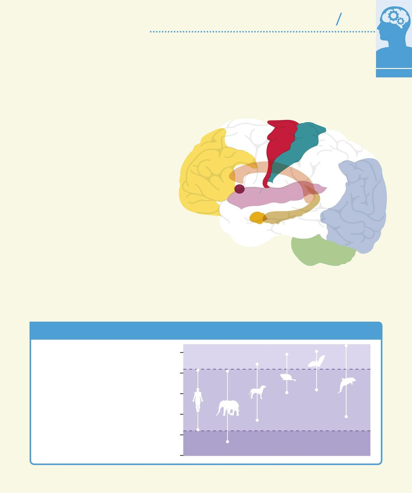
CHỨC NĂNG NÃO VÀ CÁC GIÁC QUAN
Âm nhạc và não bộ
Lập bản đồ âm nhạc Các bản quét cho thấy một số vùng của não hoạt động khi nghe nhạc, và thậm chí nhiều vùng hơn được huy động khi bạn chơi nhạc cụ hoặc nhảy múa.
Âm nhạc huy động nhiều vùng của não bộ. Ngoài việc xử lý âm thanh, nghe nhạc còn kích hoạt các trung tâm trí nhớ và cảm xúc trong não, trong khi việc nhớ lại lời bài hát liên quan đến các trung tâm ngôn ngữ. Biểu diễn âm nhạc đòi hỏi còn cao hơn: vỏ não thị giác (visual cortex) được kích thích khi đọc nhạc, thùy trán tham gia vào việc lập kế hoạch hành động, và vỏ não vận động (motor cortex) điều phối chuyển động. Người ta biết rằng nhạc sĩ có khả năng dùng cả hai tay tốt hơn vì âm nhạc đòi hỏi sự phối hợp giữa kiểm soát vận động, xúc giác cảm giác cơ thể và thông tin thính giác. Khác với người nghe — những người xử lý âm nhạc ở bán cầu não phải — nhạc sĩ chuyên nghiệp dùng bán cầu trái. Họ cũng có thể chai (corpus callosum) dày hơn (vùng nối hai bán cầu) và có xu hướng có vỏ não thính giác và vỏ não vận động lớn hơn.
Xử lý cảm giác xúc giác khi nhảy múa hoặc chơi nhạc cụ
Điều phối chuyển động khi nhảy múa hoặc chơi nhạc cụ
Đặt âm thanh vào bối cảnh của ký ức và kinh nghiệm
VỎ NÃO VẬN ĐỘNG
Vỏ não cảm giác
Vỏ não trước trán
Thể chai
VỎ NÃO THỊ GIÁC
Vỏ não thính giác
HẢI MÃ
Tham gia vào việc lập kế hoạch và kiểm soát biểu đạt
30.000
TIỂU NÃO
Được kích hoạt khi đọc nhạc hoặc xem múa
Kết nối các bán cầu của não
Hạch hạnh nhân (amygdala) (màu cam) và hạt nhân đệm (nucleus accumbens) (màu đỏ sậm) đều tham gia vào các phản ứng cảm xúc với âm nhạc
SỐ SỢI TẠO NÊN DÂY THẦN KINH THÍNH GIÁC
Tham gia vào chuyển động và phản ứng cảm xúc với âm nhạc
ÂM CAO VÀ ÂM THẤP
Con người có thể phát hiện được một dải tần số khá rộng, nhưng nhiều loài động vật có thể nghe được những âm vượt xa giới hạn của chúng ta. Các loài như dơi và cá heo dùng tần số cao trong định vị bằng tiếng vang (echolocation), trong khi voi và cá voi tạo ra những tiếng gầm thấp có thể truyền đi xa. Con người nhạy nhất với các tần số từ 2 kHz đến 5 kHz, vốn không cần cường độ lớn để nghe thấy. Người trẻ có dải thính giác tốt nhất, từ 20 Hz đến 20 kHz, nhưng tần số cao dần bị mất theo tuổi tác, ở người lớn tuổi giới hạn chỉ còn khoảng 15 kHz.
- 100 kHz
VOI 5 Hz–12 kHz
- 10 kHz
DẢI THÍNH GIÁC TẦN SỐ CON NGƯỜI
- 1 kHz
DƠI 2 kHz–120 kHz
CHUỘT 1 kHz–100 kHz
- 100 Hz
10 Hz CON NGƯỜI 20 Hz–20 kHz 0
CHÓ 64 Hz–44 kHz
CÁ HEO 75 Hz–150 kHz

Vỏ não khứu giác tiếp tục xử lý các tín hiệu do hành khứu giác gửi đến
Hạch hạnh nhân gửi thông báo cảnh báo nếu mùi có liên quan đến các cấu trúc gọi là lông mao (cilia) gắn với tế bào thụ thể. Các tế bào này thuộc não trước, tạo thành một phần của hệ viền não. Dữ liệu sau đó được gửi đến nhiều vùng khác nhau của não, đặc biệt là vỏ não khứu giác.
Tín hiệu sau đó truyền dọc theo đường khứu giác đến vỏ não khứu giác. Vỏ não này nằm trong hệ viền não, vốn chịu trách nhiệm về cảm xúc và trí nhớ. Tín hiệu cũng được gửi đến hạch hạnh nhân và vỏ não hốc mắt trán.
phủ lên một lớp tế bào thần kinh và tế bào đệm gọi là biểu mô khứu giác
VỎ NÃO KHỨU GIÁC
các tế bào thụ thể trong khoang mũi, gây ra phản xạ hít sâu hơn. Trong khoang mũi, các mùi hòa tan trong chất nhầy do biểu mô khứu giác tiết ra. Các phân tử lan qua chất nhầy đến những cấu trúc giống sợi tóc. Khi chúng ta hít vào, các phân tử mùi trôi vào mũi và kích hoạt với nguy hiểm
HẠCH HẠNH NHÂN
Đường khứu giác, một bó dây thần kinh dẫn tín hiệu từ hành khứu giác đến vỏ não khứu giác
Bên trong não bộ
3
sợi trục thần kinh phát hiện mùi và gửi thông tin đến Tế bào thụ thể thần kinh
HÀNH KHỨU GIÁC
Vỏ não hốc mắt trán tham gia vào việc ra quyết định, cảm xúc, cũng như xử lý mùi
Đón bắt mùi hương
VỎ NÃO HỐC MẮT TRÁN
hành khứu giác
VỎ NÃO
KHOANG MŨI
Hành khứu giác xử lý tín hiệu trước khi chuyển đến vỏ não khứu giác
SỐ LƯỢNG TẾ BÀO KHỨU GIÁC TRONG CƠ THỂ NGƯỜI
Thụ thể
12 TRIỆU
Tuyến nhầy
Xương Màng cứng làm tăng mùi hương. Các phân tử hòa tan trong chất nhầy do biểu mô khứu giác tiết ra và được làm ấm khi đi qua mũi
Lông mao
Mỗi phân tử mùi kích hoạt một tổ hợp riêng của các thụ thể khứu giác. Các tế bào thụ thể được kích hoạt gửi xung động đi lên qua các sợi trục thần kinh đến tế bào
Các phân tử mùi được hút lên kích thích các lông mao nối với
Phân tử mùi hòa tan trong chất nhầy
Các phân tử mùi trong không khí đi vào lỗ mũi
Mùi đi vào mũi
hành khứu giác để xử lý.
Thụ thể khứu giác
Hành khứu giác
Biểu mô khứu giác các tế bào thụ thể.
1
Sợi trục thần kinh
Tế bào đệm Chất nhầy
2

CHỨC NĂNG NÃO VÀ CÁC GIÁC QUAN
Khác với các giác quan khác của chúng ta, mùi hương
bỏ qua đồi thị và đi thẳng đến hệ viền não. Cảm xúc và ký ức được xử lý và lưu trữ tại đây, đặc biệt ở hạch hạnh nhân.
TẠI SAO MÙI HƯƠNG GỢI NHỚ KÝ ỨC?
HÔI HAY NGỌT?
Một làn hương thoảng ra từ hóa chất thô — đây là một hợp chất có mùi rất nồng. Dimethyl sulphide (DMS) có thể khiến bạn tự hỏi liệu có thứ gì đang thối rữa hay có một loại phô mai nồng mùi trong phòng hay không.
Tuy nhiên, các nhà hóa học hương vị lại thấy nó hữu ích trong việc tạo ra đủ loại mùi vị. Nó được dùng trong thịt, hải sản, sữa, trứng, rượu vang, bia, và các hương liệu rau củ, trái cây, nồng độ.
thường ở nồng độ cực nhỏ
Ngoài mùi nồng còn có mùi của thức ăn thối rữa, nước thải, khí hộ gia đình và các chất “gây buồn nôn” khác.
Hơi cháy và caramen, với sắc thái ấm và béo, chẳng hạn như bắp rang bơ và bơ hạt lạc.
Thường thì các mùi khó chịu như phân hoặc sữa chua, cũng như hành tây,
Mát, tươi mới và sảng khoái, tiêu biểu là bạc hà, bạch đàn,
Ấm áp, đậm đà, ngọt ngào với chút béo ngậy, bao gồm sô-cô-la, mạch nha và vani.
việc nhận diện một mùi trong vô số mùi quanh ta liên quan đến hệ khứu giác, hệ thống cô lập
các hóa chất khác nhau rồi chuyển tín hiệu đến não để xác định chúng “tốt” hay “xấu”.
Cách chúng ta nhận diện mùi vẫn còn là chủ đề tranh luận. Nghiên cứu cho rằng hầu hết mùi thuộc 10 nhóm — hay mùi chính — mỗi nhóm báo hiệu một điều gì đó trong môi trường. Hầu hết mùi được tạo thành
MÙI NƯỚNG VÀ HẠT
tỏi và dưa muối.
và long não.
từ sự kết hợp của các nhóm này. Khứu giác là một phần then chốt của sự sinh tồn,
THỐI RỮA
NỒNG HẮC
BẠC HÀ
NGỌT
cho chúng ta biết liệu một thứ có an toàn hay nguy hiểm.
Bao gồm mùi tổng hợp, dược phẩm, dung môi,
Thường gồm trái cây chín và các mùi tươi khác có cảm giác êm dịu, mượt mà khi ngửi.
và mùi xăng dễ nhận ra
Khác với các loại trái cây khác, cam quýt có hương thơm tươi mát, sạch sẽ và chua nhẹ
Mùi nhẹ nhàng, tự nhiên như hoa, cỏ và thảo mộc, thường được dùng trong nước hoa.
Mùi đất tự nhiên như phân chuồng hoai mục, nấm, gia vị, và mùi gỗ nhựa như tuyết tùng, thông, và nấm mốc.
với chút ngọt ngào.
ĐIỀU GÌ TẠO NÊN MÙI HƯƠNG?
KHỨU GIÁC
có thể nhận diện được.
HÓA CHẤT
THƠM LỪNG
TRÁI CÂY
CAM QUÝT
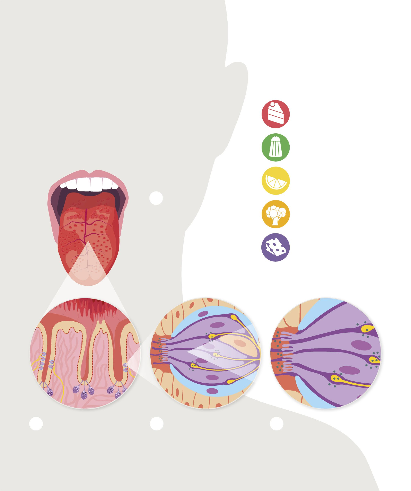
Năm vị cơ bản Vị giác là một sự thích nghi tiến hóa để sinh tồn. Việc có thể xác định liệu một thứ có dinh dưỡng hay có thể độc hại trước khi đưa vào cơ thể là vô cùng quan trọng. Cho đến nay, chỉ năm vị cơ bản đã được phát hiện, dù có thể còn những vị khác.
Cung cấp năng lượng cho cơ thể đòi hỏi việc nạp vào các loại thực phẩm và chất lỏng bổ dưỡng. Việc chọn lựa những gì an toàn để ăn chịu ảnh hưởng lớn từ vị giác và khứu giác của chúng ta.
Nhận biết vị
Ngọt
Báo hiệu sự hiện diện của carbohydrate, vốn là nguồn cung cấp đường thiết yếu.
Thực ra vị giác là một giác quan hạn chế; chỉ có năm vị cơ bản có thể được phát hiện (xem bên phải). Giống như khứu giác, vị giác là một giác quan hóa học. Các chất hóa học trong thức ăn được chổi vị (taste buds) bắt lấy, chủ yếu nằm trên lưỡi. Các tế bào thụ thể, nằm trong cấu trúc gọi là vi nhung mao (microvilli) bên trong chổi vị, phát hiện các chất hóa học này và gửi tín hiệu đến não để xử lý.
Mặn
Phát hiện các muối khoáng và khoáng chất hóa học cần thiết cho cơ thể.
Chua
Cảnh báo về thực phẩm có thể chưa chín hoặc đang hư hỏng.
Lưỡi Lưỡi là một cơ khỏe,
1
Đắng
cơ linh hoạt. Nó được dùng để đẩy thức ăn quanh miệng và để nói. Bề mặt trên của lưỡi phủ đầy các gai nhỏ gọi là nhúm (papillae). Hầu hết các nhúm là cấu trúc dạng sợi, hay hình chỉ, và không chứa chổi vị. Chúng giúp giữ và mòn thức ăn trong khi nhai.
Chất độc và các độc tố khác thường có vị đắng hoặc khó ăn.
Vị umami
Phát hiện các muối glutamate và acid amin, có trong thịt, phô mai và các thực phẩm ủ chín hoặc lên men khác.
Nhúm có rãnh
Vi nhung mao chứa protein thụ thể, liên kết với các hóa chất trong thức ăn
Sợi thần kinh
Bề mặt lưỡi
Lỗ chổi vị
Phân tử thức ăn
Nhúm dạng sợi
Chổi vị
Tế bào thần kinh
Tế bào thụ thể vị giác
Tế bào đệm
Nhúm Ngoài các nhúm dạng sợi, lưỡi còn có
Chổi vị Chổi vị là tập hợp của 50–100
Tế bào chổi vị Khi các phân tử thức ăn chạm vào tế bào,
2
3
4
lưỡi còn có nhúm hình nấm (fungiform), nhúm hình lá (foliate) và nhúm có rãnh (circumvallate), tất cả đều chứa chổi vị. Hầu hết chổi vị nằm ở các nhúm hình lá trên mặt sau và hai bên lưỡi.
tế bào xếp chùm lại với nhau như các múi trong một quả cam. Chúng nằm ở thành của các nhúm. Một đầu của mỗi tế bào nhô ra khỏi chổi, nơi nó được nước bọt chứa các phân tử thức ăn rửa trôi.
chúng tương tác với các protein thụ thể hoặc các protein giống lỗ gọi là kênh ion. Điều này gây ra những thay đổi điện trong tế bào, khiến các nơ-ron ở đáy tế bào gửi tín hiệu đến não.
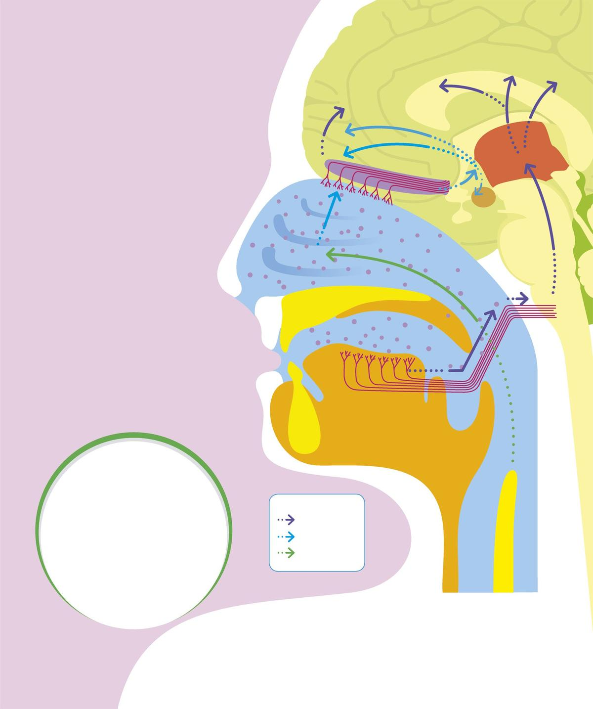
Tín hiệu truyền đến vùng vị giác thứ cấp, nằm ở vỏ não hốc mắt trán
S
VỎ NÃO HỐC MẮT TRÁN
Vùng vị giác chính, nằm ở hải đảo (insula) vùng lưỡi của vỏ não cảm giác cơ thể
Vị giác và khứu giác
Việc nhận biết hương vị phụ thuộc vào mũi cũng nhiều như vào chổi vị. Mũi bắt lấy mùi bên ngoài từ thức ăn (xem tr.78–79), nhưng điều này tăng lên đáng kể nhờ mùi của các hạt thức ăn được đưa ngược lên khoang mũi bởi khí thở ra từ phổi (khứu giác ngược dòng, retronasal olfaction). Một số thụ thể khứu giác cũng được tìm thấy trong chổi vị. Não kết hợp thông tin từ mũi và chổi vị để cảm nhận tất cả hương vị khác nhau trong thức ăn. Đây không phải là những cảm giác duy nhất góp phần vào trải nghiệm vị giác — vỏ não cảm giác cơ thể phát hiện kết cấu và nhiệt độ của thức ăn, thêm bối cảnh cho hương vị.
Tín hiệu từ vỏ não khứu giác được gửi đến vỏ não hốc mắt trán
ĐỒI THỊ
Vỏ não khứu giác
HÀNH KHỨU GIÁC
HẠCH HẠNH NHÂN
KHOANG MŨI
Hạch hạnh nhân gán giá trị tích cực hoặc tiêu cực cho vị và mùi
TỦY HÀNH
Mùi từ các hạt thức ăn đã nuốt được gửi đến hành khứu giác để xử lý
Đường dẫn vị giác Thông tin từ chổi vị truyền đến não qua các dây thần kinh sọ ở hàm và cổ họng. Các xung động đi lên thân não đến đồi thị, rồi được chuyển tiếp đến các vùng vị giác của vỏ não trán và hải đảo, một nếp gấp của vỏ não sâu trong não.
Hạt thức ăn
Dây thần kinh sinh ba và dây thần kinh lưỡi hầu mang tín hiệu đến tủy hành trong thân não
Khí thở ra từ phổi đẩy các hạt thức ăn từ miệng vào khoang mũi
TẠI SAO TRẺ SƠ SINH KHÔNG THÍCH THỨC ĂN ĐẮNG?
CHÚ GIẢI
Trẻ sơ sinh có nhiều chổi vị hơn người lớn nên cảm nhận vị đắng mạnh hơn. Chúng bản năng từ chối những thực phẩm không ngọt hoặc béo như sữa mẹ.
Tín hiệu vị giác
Mùi ngược dòng
Khí thở ra
NGƯỜI LỚN TRUNG BÌNH CÓ TỪ 2.000 ĐẾN 8.000 CHỔI VỊ
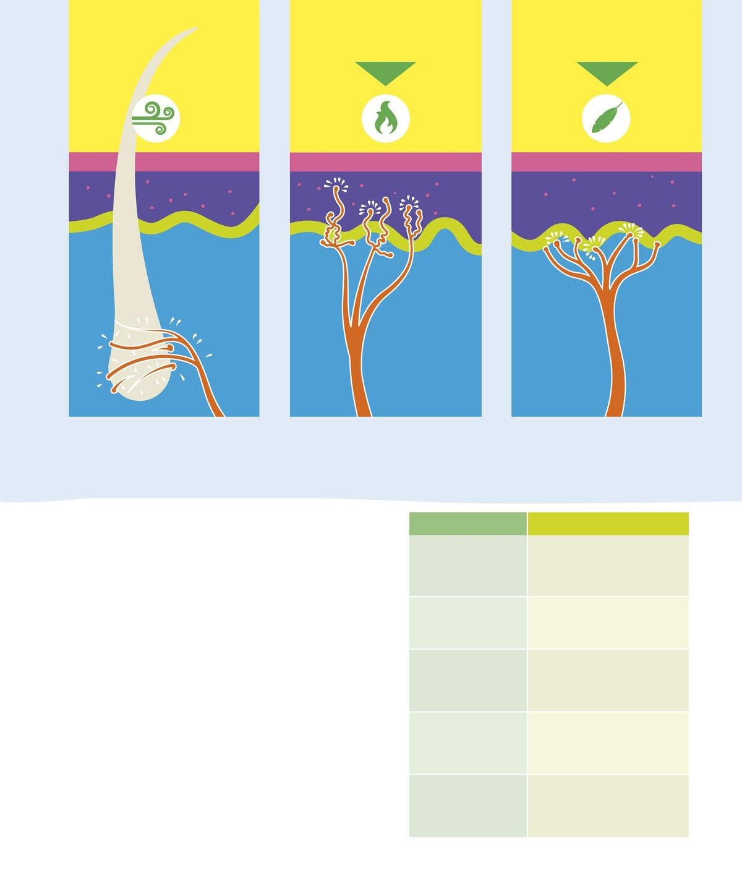
GIÓ NHẸ
THAY ĐỔI NHIỆT ĐỘ
LỚP TRÊN CÙNG, LỚP BIỂU BÌ CHẾT LỚP GAI
BIỂU BÌ
LỚP ĐÁY
Mạng lưới các đầu sợi thần kinh quấn quanh gốc của thân lông
THÂN LÔNG
TRUNG BÌ (LỚP SÂU CỦA DA)
LÔNG
Chuyển động của lông kích hoạt xung thần kinh
Các ranh giới rõ ràng giúp đĩa Merkel nhạy với hình dạng và cạnh
Các đầu dây thần kinh tự do vươn vào lớp bề mặt của da
Đám rối lông (root hair plexus) Các dây thần kinh quấn quanh gốc thân lông được kích hoạt bởi những thứ chưa chạm vào da, chẳng hạn như luồng không khí hoặc vật thể lướt qua lông.
Đầu dây thần kinh tự do Vươn lên tới lớp gai của biểu bì, những đầu dây thần kinh trần trụi, giống như rễ này nhạy với lạnh, nóng, chạm nhẹ và đau.
Đĩa Merkel Nằm thấp hơn một chút so với các đầu dây thần kinh tự do, đĩa Merkel đặc biệt dày đặc ở môi và đầu ngón tay. Chúng đáp ứng với cú chạm nhẹ.
Xúc giác
CÁC LOẠI THỤ THỂ CHỨC NĂNG
Các thụ thể cảm giác đáp ứng với áp lực hoặc biến dạng cơ học. Có thể là từ cú chạm nhẹ đến áp lực sâu.
Thụ thể cơ học
Da là cơ quan lớn nhất của cơ thể, đồng thời cũng là cơ quan cảm giác lớn nhất. Chứa đầy các cảm biến, da cho phép chúng ta trải nghiệm nhiều loại cảm giác, cũng như nhận biết vị trí của mình.
Thụ thể cảm giác thân thể
Các thụ thể nhận kích thích từ bên trong cơ thể, đặc biệt liên quan đến vị trí và chuyển động.
Thụ thể đau
Các nơ-ron cảm giác đáp ứng với kích thích gây tổn thương bằng cách gửi tín hiệu “mối đe dọa có thể xảy ra” đến tủy sống và não.
Thụ thể trong da
Các cảm biến trong da gồm những thụ thể được nối với nhau bằng sợi trục. Được tìm thấy ở các độ sâu khác nhau trong da, có khoảng 20 loại thụ thể đáp ứng với các kiểu kích thích khác nhau. Các thụ thể ghi nhận kích thích cơ học, nhiệt và trong một số trường hợp là hóa học, rồi chuyển chúng thành tín hiệu điện. Những tín hiệu này đi lên các dây thần kinh ngoại biên đến tủy sống, rồi đến thân não, và cuối cùng là vỏ não cảm giác cơ thể, nơi chúng được chuyển hóa thành cảm giác chạm.
Thụ thể nhiệt
Các tế bào thần kinh chuyên biệt có khả năng phát hiện sự khác biệt về nhiệt độ. Chúng được tìm thấy khắp da và ở một số vùng nội tạng.
Thụ thể hóa học
Các phần mở rộng của hệ thần kinh ngoại biên đáp ứng với những thay đổi về nồng độ trong máu để duy trì cân bằng nội môi (xem tr.90–91).

CHẠM NHẸ
RUNG ĐỘNG
XOA BÓP MẠNH
Thụ thể phình to, được bao bọc
Các thụ thể chứa đầy dịch vươn vào lớp trung bì trên
Thụ thể lớn, được che phủ ở đáy lớp trung bì
Tiểu thể Meissner Các thụ thể này thích ứng nhanh, nghĩa là chúng đáp ứng nhanh với kích thích nhưng ngừng phát tín hiệu nếu kích thích tiếp diễn. Điều này cho thông tin chính xác.
Đầu Ruffini Còn được gọi là tiểu thể hình bầu, những tế bào mềm, giống như viên nang này — nằm sâu trong lớp trung bì — đáp ứng khi da hoặc khớp bị kéo dãn hoặc biến dạng do áp lực.
Tiểu thể Pacini Loại thụ thể xúc giác sâu nhất và lớn nhất, những thụ thể cơ học tác động nhanh này đáp ứng với áp lực liên tục cũng như rung động.
Vỏ não cảm giác cơ thể
Bản đồ xúc giác Các vùng của cơ thể giàu thụ thể xúc giác, chẳng hạn như bàn tay, cần được xử lý nhiều hơn những vùng khác, nên chúng chiếm tỷ lệ lớn hơn của vỏ não cảm giác cơ thể.
Mọi thông tin từ thụ thể xúc giác đều được xử lý ở vỏ não cảm giác cơ thể. Vùng này nằm ngang qua đỉnh não như một dải tóc. Dữ liệu từ bên phải cơ thể đi sang bên trái não, và ngược lại. Mỗi bộ phận của cơ thể được ánh xạ tới một vùng riêng của vỏ não.
THÂN CHÂN
ĐẦU
CÁNH TAY
BÀN TAY
BÀN CHÂN
SỢI TRỤC
NGÓN CHÂN
CƠ QUAN SINH DỤC
MẮT MẶT
Vỏ bao myelin
Tín hiệu truyền qua bó dây thần kinh
TAY PHẢI
MÔI
TỦY SỐNG
LƯỠI
BÊN TRÁI CỦA NÃO
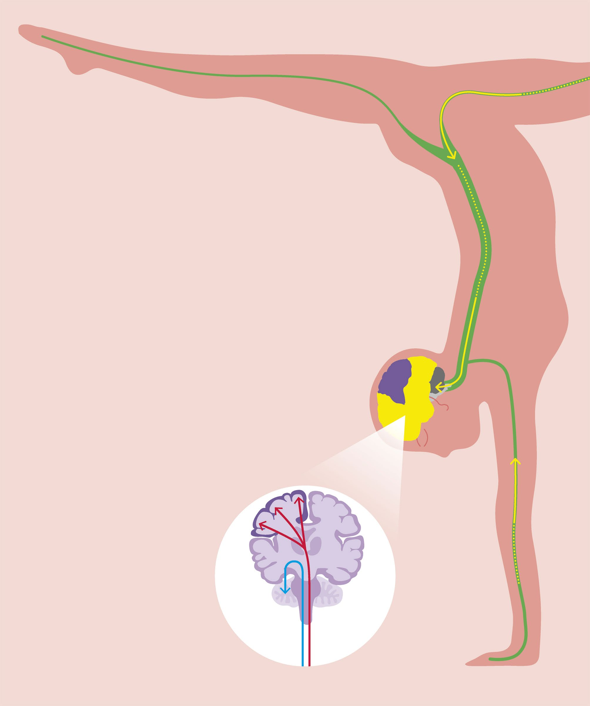
DÂY THẦN KINH NGOẠI BIÊN
THẦN KINH NGOẠI BIÊN
Cảm giác thân thể
Tín hiệu thần kinh từ các thụ thể cảm giác thân thể
Cơ thể có cảm giác riêng về vị trí của nó và cách nó di chuyển trong không gian. Quá trình này diễn ra gần như không có ý thức, khiến nó về bản chất là giác quan thứ sáu của cơ thể.
Các thụ thể co dãn trong da, cơ và khớp gửi thông tin về vị trí của các bộ phận cơ thể
Cảm giác vị trí cơ thể
Biết vị trí của mình Nhận thức về cơ thể đến từ sự kết hợp giữa cảm giác thân thể với các cảm giác khác: cảm giác lực, cảm giác nỗ lực hoặc trọng lượng, thị giác và thông tin từ các cơ quan giữ thăng bằng trong tai.
CỘT SỐNG
Bên trong cơ, gân và khớp là các thụ thể chuyển động gọi là thụ thể cảm giác thân thể (proprioceptors). Mỗi khi chúng ta di chuyển, các thụ thể này đo những thay đổi về chiều dài, sức căng và áp lực liên quan đến chuyển động đó và gửi xung động đến não. Thông tin được xử lý và một quyết định được đưa ra là dừng chuyển động hoặc đổi tư thế. Sau đó, thông điệp được chuyển ngược lại cho các cơ để thực hiện quyết định. Tất cả điều này xảy ra mà chúng ta không cần phải suy nghĩ về nó.
Tín hiệu truyền dọc cột sống đến não
Thùy đỉnh
Tai trong gửi thông tin về sự xoay, gia tốc và trọng lực
Các dạng cảm giác thân thể
Hầu hết thông tin mà não nhận được về vị trí cơ thể được xử lý không có ý thức, chẳng hạn như cách chúng ta liên tục điều chỉnh tư thế cơ thể để giữ thăng bằng. Tuy nhiên, thông tin cảm giác thân thể có thể trở nên có ý thức nếu đòi hỏi chúng ta phải đưa ra quyết định — ví dụ, tinh chỉnh chuyển động cơ để thực hiện một động tác tự ý, điêu luyện.
Mắt gửi thông tin thị giác về vị trí
Thùy đỉnh
Tín hiệu đầu vào từ các cảm biến áp lực và sức căng ở cánh tay
Đồi thị
Tiểu não
Đường dẫn cảm giác thân thể Tín hiệu cảm giác thân thể có ý thức đi lên thân não đến đồi thị và kết thúc ở thùy đỉnh, vốn là một phần của vỏ não đại não. Đường không ý thức thì vòng lại tiểu não, vùng kiểm soát chuyển động.
Đường không ý thức
Đường có ý thức
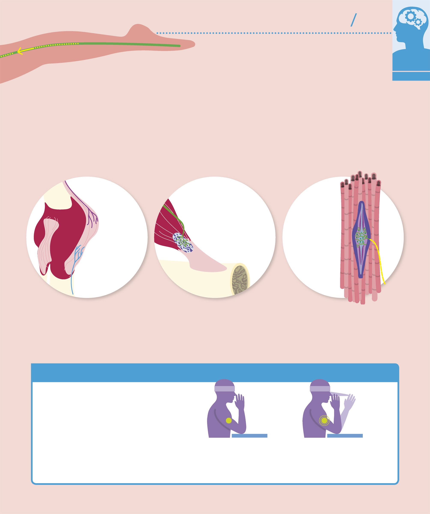
CHỨC NĂNG NÃO VÀ CÁC GIÁC QUAN
NHỮNG ĐỢT TĂNG TRƯỞNG ĐỘT BIẾN CÓ THỂ LÀM RỐI NÃO VÌ NÓ KHÔNG THEO KỊP SỰ THAY ĐỔI KÍCH THƯỚC CỦA CÁC CHI
Các loại thụ thể cảm giác thân thể
Cơ thể chứa nhiều loại thụ thể cảm giác thân thể, và thông tin kết hợp từ các thụ thể này giúp não dựng nên bức tranh tổng thể về vị trí của cơ thể. Có ba loại chính: sợi thoi cơ (muscle spindle fibers) nằm trong cơ; cơ quan gân Golgi (Golgi tendon organs) nằm tại điểm nối giữa gân và cơ; và thụ thể khớp gắn vào các khớp. Các thụ thể đặc biệt trong da cũng có thể phát hiện sự co dãn (xem tr.83).
Xương
Cơ
Cơ
Cơ quan gân Golgi cảm nhận sự thay đổi sức căng của cơ
Sợi thoi cơ
Dây thần kinh nhạy chạm Thụ thể dây chằng
Xương
Tín hiệu truyền lên sợi trục thần kinh
Dây chằng
Gân
Thụ thể khớp Các đầu dây thần kinh trong khớp phát hiện vị trí của khớp. Các thụ thể này giúp ngăn ngừa tổn thương do kéo dãn quá mức, đồng thời phát hiện vị trí trong chuyển động bình thường.
Thụ thể gân Các cơ quan gân Golgi nằm trong gân ở đầu các cơ. Chúng giám sát sức căng của cơ để đảm bảo chúng ta không kéo dãn cơ quá mức.
Thụ thể cơ Trong cơ có các cảm biến vị trí gọi là sợi thoi. Khi cơ dãn ra, các thoi gửi thông tin về vị trí của cơ đến não.
ẢO GIẢN PINOCCHIO
Não nghĩ tay đã di chuyển ra khỏi mặt Máy rung được bật
Đôi khi cảm giác thân thể có thể bị rối loạn, khiến cơ thể cảm thấy như có điều gì đó đang xảy ra nhưng thực tế không phải. Một hiệu ứng như vậy được gọi là ảo giản Pinocchio. Một máy rung được gắn vào cơ bắp tay của một người. Nếu người đó giữ mũi trong khi máy rung bật lên, cô ấy sẽ cảm thấy như cánh tay mình đang di chuyển ra khỏi mũi. Điều này xảy ra vì máy rung kích thích các sợi thoi cơ trong cơ bắp tay theo cách giống như khi cơ bị kéo dãn. Vì các ngón tay vẫn còn chạm vào mũi, nên cảm giác là mũi như đang dài ra khỏi mặt.
Tay chạm vào mũi
Máy rung
Trong lúc kích thích Các rung động báo cho não rằng cánh tay đang di chuyển, tạo ra cảm giác mũi đang dài ra phía trước.
Trước khi kích thích Khi nghỉ ngơi, não biết rằng các ngón tay đang chạm vào mũi, nhưng cánh tay không hề di chuyển.

AI CẢM NHẬN ĐAU NHIỀU NHẤT?
Dù khó chịu, đau là một tín hiệu cảnh báo hữu ích cho thấy có điều gì đó không ổn trong cơ thể và chúng ta cần hành động nhanh để tránh tổn thương thêm.
Phụ nữ cảm nhận đau dữ dội hơn nam giới vì họ có nhiều thụ thể thần kinh trong cơ thể hơn.
Tín hiệu đau
Các thụ thể đau nằm khắp cơ thể và đáp ứng với nóng, lạnh, kéo dãn quá mức, rung động và các hóa chất do vết thương giải phóng. Tín hiệu điện được gửi từ chỗ bị thương đến tủy sống, tại đây chúng vắt sang và đi đến phía não đối diện với bên bị thương. Nếu cảm nhận cơn đau đột ngột, dữ dội, một phản xạ sẽ xảy ra (xem tr.101) trong tủy sống để kéo chi tránh khỏi nguồn gây đau, thậm chí trước cả khi chúng ta kịp nhận biết.
TÍN HIỆU TỦY SỐNG
Sợi C chậm
Bó dây thần kinh chứa nhiều sợi trục, hay sợi thần kinh
BÓ DÂY THẦN KINH
BÓ DÂY THẦN KINH
TÍN HIỆU ĐAU
Sợi A nhanh
Tín hiệu đau truyền lên các bó dây thần kinh Các tín hiệu từ chỗ bị thương truyền dọc theo
Các sợi C chậm phân bố rộng khắp da
2
các bó dây thần kinh về phía tủy sống. Tín hiệu sợi A đến đó trong vài mili-giây và kích hoạt phản xạ rút lui khỏi nguồn gây đau.
Sợi trục
Tế bào thần kinh
Thụ thể đau được kích hoạt
1
Vết thương khiến các tế bào bị tổn thương giải phóng hóa chất gọi là prostaglandin. Những chất này kích thích sợi trục thần kinh gửi xung động đến não.
Sợi A nhanh được bao phủ bởi vỏ myelin
Phân tử prostaglandin do tế bào giải phóng
Sợi đau Có hai loại sợi thần kinh, hay sợi trục. Sợi A nhanh truyền cơn đau nhọn, khu trú từ vết thương như vết cắt. Sợi C chậm hơn truyền cảm giác âm ỉ kéo dài hơn từ vùng quanh vết thương.
Tế bào bị tổn thương
BẦM TÍM
DA
VẾT CẮT
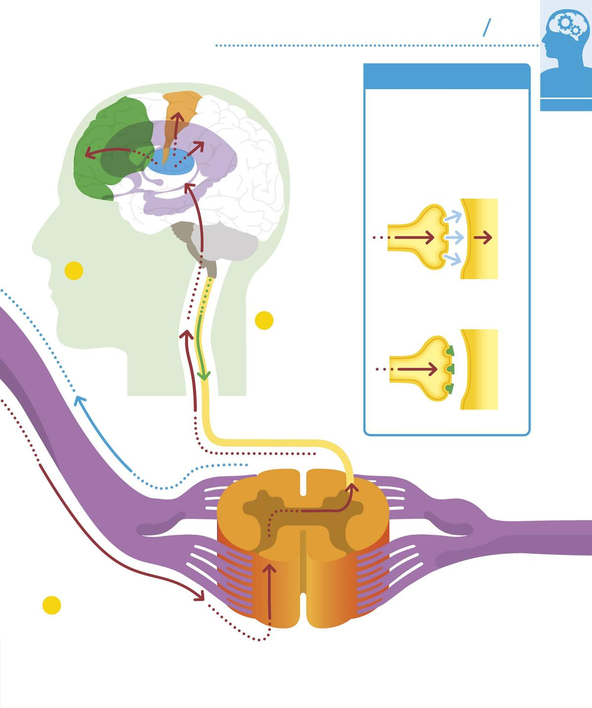
CHỨC NĂNG NÃO VÀ CÁC GIÁC QUAN
Vỏ não trán đóng vai trò trong việc dự báo và kiểm soát cơn đau
Vỏ não cảm giác cơ thể xác định cường độ, vị trí và loại đau Hệ viền não chịu trách nhiệm về phản ứng cảm xúc và hành vi với cơn đau
GIẢM ĐAU TỰ NHIÊN
Cơ thể giải phóng chính hóa chất của mình, gọi là endorphin và enkephalin, để làm dịu các tín hiệu đau. Chúng liên kết với thụ thể trên các đầu dây thần kinh, ngăn không cho tín hiệu đau truyền tiếp.
Hệ lưới điều chỉnh tín hiệu đau
Nơ-ron nhận tín hiệu
Truyền tín hiệu
Nơ-ron gửi tín hiệu
Đồi thị chuyển tín hiệu đến các vùng khác nhau của não
Các sợi thần kinh đi xuống từ não chặn và điều chỉnh tín hiệu đau đi lên
Tín hiệu đau
Xử lý tín hiệu đau Tín hiệu tiếp tục đến đồi thị, nơi phân phối xung động đến vỏ não và các vùng khác chịu trách nhiệm về cảm xúc, sự chú ý và đánh giá mức độ quan trọng của cơn đau.
4
TÍN HIỆU ĐAU ĐƯỢC TRUYỀN ĐI
Endorphin chặn tín hiệu đau trước khi đến nơ-ron nhận
Giảm nhẹ cơn đau Tín hiệu đi xuống
5
đi ngược xuống từ não để chặn các tín hiệu đau (xem ô bên phải). Những tín hiệu này kích thích thân não và tủy sống giải phóng các chất giảm đau tự nhiên làm giảm tín hiệu đau.
Tín hiệu đau truyền lên tủy sống
Tín hiệu tủy sống bỏ qua não
TÍN HIỆU ĐAU BỊ CHẶN
TỦY SỐNG
SỪNG SAU
Tín hiệu đau đến cột sống
3
Bó dây thần kinh đi vào tủy sống qua sừng sau. Tín hiệu đau vắt sang phía bên kia của tủy sống để tiếp tục hành trình lên não.
Hầu hết các bó dây thần kinh đi vào phía sau cột sống, gọi là sừng sau

Cách Dùng Não Bộ Để Kiểm Soát Cơn Đau
Khi đang bị đau, cách xử lý thường thấy là dùng phương pháp điều trị y tế hoặc thuốc giảm đau. Tuy nhiên, chúng ta cũng có thể tự giúp kiểm soát cơn đau bằng cách điều chỉnh phản ứng tinh thần của mình—cả đối với cơn đau lẫn căng thẳng mà nó gây ra.
Đau là phản ứng mang tính cảm xúc cũng như thể chất trước một chấn thương hoặc bệnh tật. Sợ hãi tột độ hoặc anxiety (lo âu) là những phản ứng tức thì quan trọng, khiến bạn tránh né các nguồn gây đau bất cứ khi nào có thể. Đôi khi, tuy nhiên, cơn đau vẫn kéo dài ngay cả khi chấn thương hoặc bệnh tật không còn nữa. Cảm giác đau có thể trở nên liên kết với căng thẳng liên tục, với những ký ức khó chịu lặp đi lặp lại về nguyên nhân gây đau, hoặc với nỗi sợ thường trực rằng nó sẽ kéo dài hoặc tái phát. Những cảm xúc này có thể rất mạnh mẽ và gây bối rối. Dù bạn luôn nên tìm lời khuyên y tế nếu cơn đau nghiêm trọng hoặc kéo dài, bạn vẫn có thể dùng một số kỹ thuật để điều chỉnh nó bằng cách rèn luyện tâm trí của mình.
(các) tác dụng phụ, bao gồm loét dạ dày và bệnh gan. Cơ thể bạn cũng có thể tăng mức dung nạp đối với một loại thuốc, khiến bạn thu được ít lợi ích hơn từ thuốc theo thời gian.
một quả cầu năng lượng lớn bên ngoài cơ thể bạn, rồi “co nhỏ” nó trong tâm trí. Liệu pháp hành vi nhận thức (CBT) dùng một cách tiếp cận tương tự, bằng cách huấn luyện bạn thay thế những suy nghĩ tiêu cực như “Cơn đau này không thể chịu nổi,” hay “Tôi không thể ngăn được cơn đau này,” bằng những suy nghĩ tích cực như “Cơn đau này chỉ là tạm thời.” Tập chánh niệm giúp giảm căng thẳng, giúp bạn đối phó với cơn đau tốt hơn. Trong thực hành này — được điều chỉnh từ giáo lý Phật giáo — bạn chỉ cần thừa nhận cơn đau, thay vì để nó chi phối suy nghĩ của bạn hoặc làm bạn kiệt sức vì chủ động chống cự lại nó. Tóm lại, não bộ của bạn có thể là một công cụ mạnh mẽ để kiểm soát cơn đau nếu bạn: • Tập các kỹ thuật thư giãn và hít thở sâu để giảm mức căng thẳng. • Dùng các bài tập tinh thần để chuyển sự chú ý ra khỏi cơn đau. • Dùng các kỹ thuật CBT để tập trung vào suy nghĩ tích cực. • Tập chánh niệm.
Các Liệu Pháp Tâm - Thể
Ngoài thuốc men, bạn có thể dùng các kỹ thuật tâm - thể như thư giãn và hình dung để giảm hoặc giúp kiểm soát cơn đau — mà không có nguy cơ tác dụng phụ. Hầu hết các kỹ thuật này dùng sự thư giãn và hít thở sâu, có kiểm soát để giảm căng thẳng đi kèm với cơn đau và thường làm nó tệ hơn. Hãy thử nằm yên trong một căn phòng tối; hít vào thật sâu trong khi đếm đến 10, giữ hơi trong một lát, rồi thở ra chậm trong khi đếm đến 10. Tiếp tục điều này trong 10–20 phút. Việc chuyển sự chú ý thường làm giảm mức độ nghiêm trọng của cơn đau. Hãy thử chuyển sự chú ý ra khỏi vùng đau, thay vào đó tập trung vào một bộ phận không đau trên cơ thể bạn. Hoặc, hãy tưởng tượng cơn đau như
Vấn Đề Thuốc Giảm Đau
Dùng thuốc thường là cần thiết để kiểm soát cơn đau trong ngắn hạn, nhưng dùng thuốc giảm đau trong thời gian dài có thể dẫn đến các vấn đề như nghiện ngập hoặc các tác dụng phụ nghiêm trọng về thể chất
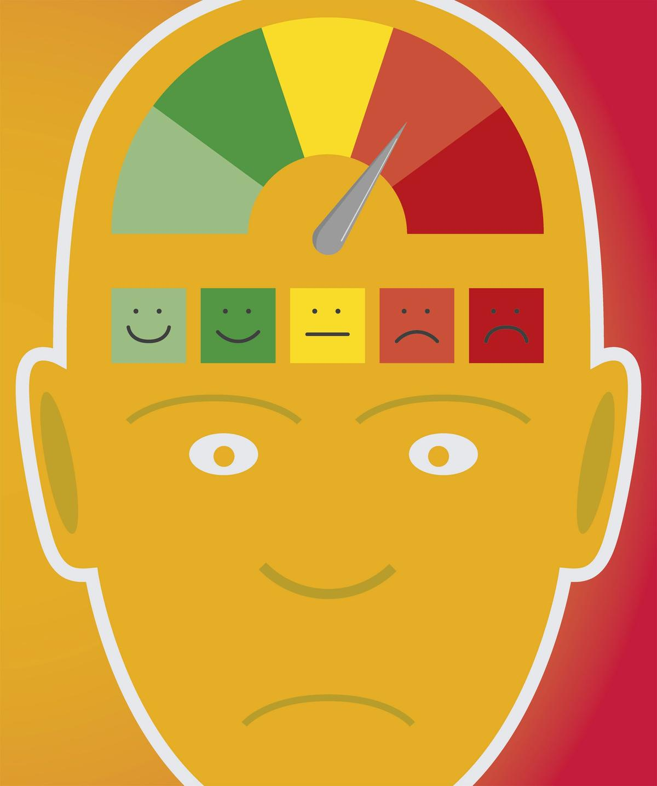

GÂY MÊ TOÀN THÂN
Hệ thống
Là một phần thiết yếu của phẫu thuật hiện đại, cách thức hoạt động của gây mê toàn thân vẫn chưa được hiểu đầy đủ. Điều đã biết là chúng tác động lên hệ thống kích hoạt lưới (gồm cấu trúc lưới và các kết nối của nó) để ức chế ý thức, và lên hippocampus (hải mã) để tạm thời đình chỉ việc hình thành trí nhớ. Thuốc mê cũng ảnh hưởng đến các nhân của thalamus (đồi thị), ngăn cản dòng thông tin cảm giác từ cơ thể truyền lên não.
Cơ thể người là một cộng đồng gồm 38 nghìn tỷ tế bào được tổ chức thành các hệ thống khác nhau. Giữ cho chúng hoạt động ở mức tốt nhất là một hệ thống các cơ chế phản hồi do não bộ kiểm soát.
Duy trì sự ổn định
Quá trình duy trì một môi trường nội bộ ổn định được gọi là homeostasis (cân bằng nội môi). Các chức năng then chốt như hô hấp, nhịp tim, độ pH, nhiệt độ và cân bằng ion phải được giữ trong những giới hạn hoạt động nghiêm ngặt để tránh chúng ta bị ốm. Khi cơ thể hoạt động, các hệ thống của nó liên tục bị đẩy ra khỏi điểm cân bằng hoặc điểm thiết lập (giá trị mà tại đó một hệ thống hoạt động tốt nhất). Khi sự thay đổi trở nên quá lớn, cơ thể sẽ khởi động một vòng phản hồi đưa hệ thống trở lại mức lý tưởng. Nhiều chức năng trong số này được điều khiển bởi một phần của brain stem (thân não) gọi là reticular formation (cấu trúc lưới).
Các tín hiệu truyền đến nhiều vùng của vỏ não
Tín hiệu được chuyển tiếp Các tín hiệu sau đó được gửi trực tiếp
3
đến đồi thị và vùng dưới đồi, cũng như đến các vùng thích hợp của vỏ não để đưa ra quyết định và phản ứng với kích thích.
Vùng dưới đồi điều hòa giấc ngủ, cảm giác đói và nhiệt độ cơ thể
ĐỒI THỊ
Vùng kích thích của cấu trúc lưới khuếch đại các tín hiệu quan trọng
Đồi thị chuyển tiếp tín hiệu cảm giác đến vỏ não
Tín hiệu được xử lý Trong cấu trúc lưới,
2
A L L EDU các tín hiệu không mong muốn bị ức chế ở vùng ức chế, trong khi các tín hiệu khác được M khuếch đại ở vùng kích thích.
CÁI GÌ LÀ
CẤU TRÚC LƯỚI?
Cấu trúc lưới gồm hơn 100 nhân chiếu đến não trước, tiểu não và thân não, điều khiển nhiều chức năng sống còn của cơ thể.
Vùng ức chế của cấu trúc lưới làm dịu các tín hiệu không mong muốn
TỦY SỐNG
Tín hiệu truyền lên cột sống
1
Các tín hiệu cảm giác đến từ khắp cơ thể truyền đến cấu trúc lưới.
Các xung động truyền lên tủy sống
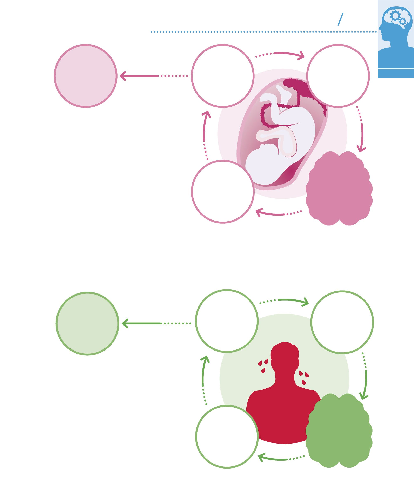
CHỨC NĂNG NÃO VÀ CÁC GIÁC QUAN
CẢM BIẾN Các thụ thể căng giãn bị kích thích và gửi tín hiệu đến vùng dưới đồi.
KÍCH THÍCH Thai nhi gây áp lực lên cổ tử cung.
KẾT QUẢ Em bé chào đời.
Hệ phản hồi dương Trong hai loại hệ phản hồi, hệ phản hồi dương ít phổ biến hơn và kém ổn định hơn, vì nó có khả năng tạo hiệu ứng dây chuyền lên các hệ khác, hình thành một quá trình “vượt tầm kiểm soát”. Một ví dụ về hệ phản hồi dương là sự tăng cường độ và tần số của các cơn co thắt khi sinh, những cơn co này dừng lại khi em bé chào đời và cổ tử cung không còn bị căng giãn nữa.
ĐIỀU KHIỂN Vùng dưới đồi kích thích tuyến yên sau, tuyến này giải phóng oxytocin.
CƠ QUAN HIỆU ỨNG Oxytocin thúc đẩy nhiều cơn co thắt hơn.
Các vòng phản hồi
Các hệ sinh học vận hành theo cơ chế đầu vào và đầu ra, mỗi cái đều do một sự kiện nhất định gây ra và lại gây ra một sự kiện nhất định. Các vòng phản hồi hoặc khuếch đại đầu ra của một hệ (phản hồi dương), hoặc ức chế đầu ra của hệ đó (phản hồi âm). Các vòng phản hồi quan trọng vì chúng cho phép các sinh vật duy trì cân bằng nội môi.
CẢM BIẾN Các thụ thể nhiệt trong da cảm nhận sự thay đổi nhiệt độ này.
KÍCH THÍCH Nhiệt độ cơ thể thay đổi.
KẾT QUẢ Đạt được nhiệt độ cơ thể bình thường.
Hệ phản hồi âm Hầu hết các hệ dùng vòng phản hồi âm, vốn rất ổn định và có tác dụng đảo ngược chiều của sự thay đổi để đưa hệ trở lại trạng thái bình thường. Chúng bao gồm điều hòa đường huyết và nhiệt độ cơ thể.
ĐIỀU KHIỂN Vùng dưới đồi so sánh với điểm đặt nhiệt độ (98,6°F/ 37°C).
CƠ QUAN HIỆU ỨNG Nếu quá nóng, não sẽ gây ra đổ mồ hôi. Nếu quá lạnh, não sẽ khởi động run rẩy.
95˚F (35˚C)
NHIỆT ĐỘ CƠ THỂ MÀ TẠI ĐÓ HẠ THÂN NHIỆT BẮT ĐẦU
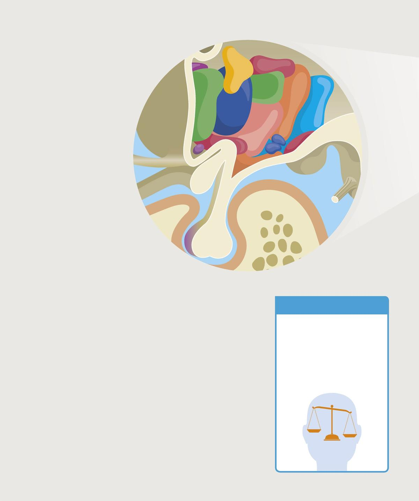
Vùng dưới đồi — hypothalamus (US M A AL H OT YP H HE T DE SI IN).
và nhịp tim
Các nhân trong vùng dưới đồi Hầu hết các nhân đều có chức năng riêng biệt. Chúng tiết ra các hormone tác động lên tuyến yên, kích thích tuyến này sản xuất hormone giúp đạt được cân bằng nội môi ở bộ phận cần thiết của cơ thể.
NHÂN CẬN NÃO THẤT
Khởi phát việc nạp nước và thức ăn
VÙNG DƯỚI ĐỒI LƯNG
NHÂN
Tham gia vào trí nhớ, sự hưng phấn, giấc ngủ và cân bằng năng lượng
TIỀN THỊ GIÁC TRONG
NHÂN DƯỚI ĐỒI SAU BÊN
NHÂN LƯNG-TRONG
NHÂN TIỀN THỊ GIÁC BÊN
NHÂN TRƯỚC NHÂN BỤNG-TRONG
VÙNG
Ức chế ăn và giảm lượng thức ăn nạp vào
NHÂN THỂ VÚ
THỂ
Điều khiển sự điều hòa nhiệt độ
VẬN NHÃN
“Đồng hồ” của cơ thể — điều khiển các nhịp sinh học ngày đêm
NHÂN TRÊN GIAO THỊ
NHÂN TRÊN THỊ GIÁC
CÁC NHÂN CỦ BÊN
DÂY
TUYẾN YÊN
HORMONE ĐƯỢC SẢN XUẤT BỞI HỆ NỘI TIẾT
Hệ Thần Kinh Nội Tiết
MẤT CÂN BẰNG
Khi cân bằng nội môi bị rối loạn, nó có thể dẫn đến bệnh tật, cũng như làm các tế bào của chúng ta hoạt động sai. Cơ thể nỗ lực sửa chữa vấn đề nhưng đôi khi lại làm nó tệ hơn, tùy vào yếu tố đang ảnh hưởng đến sự mất cân bằng. Di truyền, lối sống và độc tố đều có thể tác động đến cân bằng nội môi.
Duy trì cân bằng nội môi (xem tr.90) đòi hỏi não bộ và cơ thể phải trao đổi thông tin. Điều này được thực hiện nhờ các chất truyền tin hóa học gọi là hormone.
Vùng dưới đồi
Tại trung tâm của hệ cân bằng nội môi của não là hypothalamus (vùng dưới đồi) (xem tr.34). Nó chứa các cụm tế bào thần kinh, gọi là nhân, thực hiện những chức năng cụ thể, và có kết nối với hệ thần kinh tự chủ (xem tr.13), qua đó nó gửi tín hiệu để điều khiển nhịp tim, tiêu hóa và hô hấp. Khi vùng dưới đồi nhận tín hiệu từ hệ thần kinh, nó tiết ra các neurohormone, rồi đến lượt các chất này kích thích tuyến yên tiết hormone. Những hormone này tác động lên các cơ quan khắp cơ thể và thúc đẩy chúng tăng hoặc ức chế việc sản xuất hormone của chính mình.

CHỨC NĂNG NÃO VÀ CÁC GIÁC QUAN
Nhà sản xuất hormone Hormone được dùng cho hai loại trao đổi thông tin. Loại thứ nhất là giữa hai tuyến nội tiết, trong đó một hormone được giải phóng để kích thích một tuyến đích thay đổi lượng hormone mà tuyến đó đang tiết ra. Loại thứ hai là giữa một tuyến và một cơ quan đích, chẳng hạn như việc tuyến tụy giải phóng insulin thúc đẩy các tế bào cơ hấp thụ glucose.
Vùng dưới đồi liên kết hệ thần kinh với hệ nội tiết
Tuyến tùng giải phóng melatonin để đáp ứng với mức độ ánh sáng — melatonin điều khiển nhịp sinh học ngày đêm của cơ thể và điều hòa một số hormone sinh sản.
Được vùng dưới đồi kiểm soát, tuyến yên đóng vai trò là “tuyến chủ”; nó tiết ra chính hormone của mình để điều khiển các tuyến khác.
Tuyến giáp và các tuyến cận giáp điều hòa sự trao đổi chất, mức calci trong máu và nhịp tim.
TUYẾN CẬN GIÁP
TUYẾN GIÁP
Sản xuất cortisol (điều hòa trao đổi chất, đáp ứng miễn dịch và chuyển đổi năng lượng), aldosterone (kiểm soát huyết áp và cân bằng muối), và adrenaline (hormone chiến đấu hay bỏ chạy).
Sản xuất các tế bào bạch cầu bảo vệ cơ thể chống lại virus và nhiễm trùng.
TUYẾN THỤC
Giải phóng hormone gây đói ghrelin và hormone gastrin, chất kích thích sản xuất axit.
Tiết renin và angiotensin, những chất kiểm soát huyết áp, cũng như erythropoietin, chất kích thích sản xuất hồng cầu.
DẠ DÀY
TUYẾN THƯỢNG THẬN
THẬN
THẬN
Tiết insulin, glucagon và somatostatin để kiểm soát đường huyết; gastrin, chất kích thích tế bào dạ dày sản xuất axit; và một hormone kiểm soát sự tiết và hấp thụ nước trong ruột.
Sản xuất hormone
TUYẾN TỤY
Hệ nội tiết gồm các tuyến chuyên biệt tiết hormone, cũng như các cơ quan — chẳng hạn dạ dày — vốn không phải là tuyến nhưng vẫn có khả năng sản xuất, lưu trữ và giải phóng hormone. Cả hai loại đều phản ứng với tín hiệu từ não bằng cách tăng hoặc giảm sản xuất hormone; các hormone này sau đó đi theo dòng máu đến một cơ quan đích, nơi chúng khóa chặt vào các thụ thể chuyên biệt trên bề mặt tế bào. Điều này kích hoạt một thay đổi sinh lý khôi phục lại cân bằng nội môi.
Sản xuất các hormone sinh sản nữ là estrogen và progesterone, những chất chuẩn bị cho tử cung kỳ kinh nguyệt hoặc thai kỳ.
BUỒNG TRỨNG
Sản xuất testosterone, chất cần thiết cho việc sản xuất tinh trùng, duy trì khối cơ và sức mạnh, ham muốn tình dục và mật độ xương.
TINH HOÀN
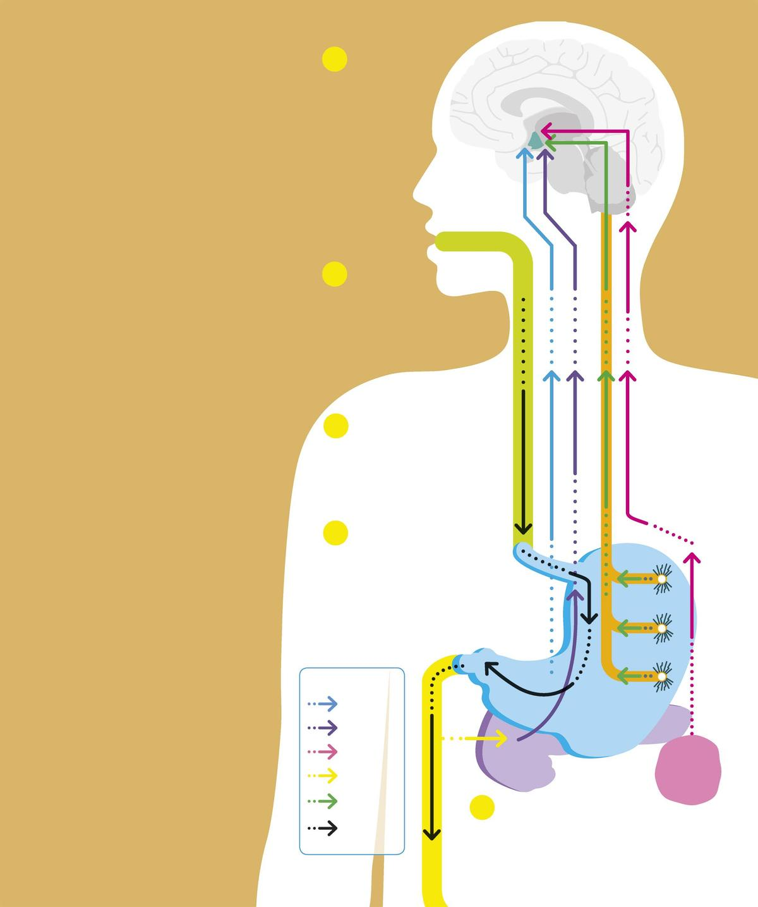
Cảm thấy no Những tín hiệu mà
5
Vùng dưới đồi đóng vai trò cơ quan điều hòa mức leptin và insulin tăng lên kích thích vùng dưới đồi sản xuất hormone melanocortin, khiến chúng ta cảm thấy no.
và Khát
VÙNG DƯỚI ĐỒI (S U M A L A H T PO HY)
Thức ăn và thức uống là thiết yếu cho sự sống còn của con người. Các thúc đẩy từ hormone nhằm nạp dưỡng chất và nước được cơ thể trải nghiệm như đói và khát.
Mức ghrelin tăng báo cho vùng dưới đồi biết dạ dày đang trống
Tín hiệu từ mô mỡ
Đói
4
Mức insulin báo cho vùng dưới đồi biết cơ thể có đủ năng lượng hay không
Có hai loại đói. Đói do ham muốn (hedonic hunger) liên quan đến việc ăn uống — đặc biệt là các thực phẩm giàu chất béo, đường và muối — ngay cả khi chúng ta đã no, trong khi đói do cân bằng nội môi (xem bên phải) là phản ứng khi các kho dự trữ năng lượng của chúng ta cạn kiệt. Sau khi thức ăn đi qua dạ dày và ruột, dạ dày lúc này đã trống rỗng giải phóng một hormone gọi là ghrelin. Chất này tác động lên các nơ-ron trong vùng dưới đồi để báo cho chúng ta biết rằng mình đang đói, thúc đẩy chúng ta ăn. Sau đó, một hormone ức chế đói gọi là leptin được mô mỡ (mô chứa chất béo) giải phóng để ngăn chúng ta ăn quá mức.
Để ngăn chúng ta ăn quá mức, các tế bào mô mỡ giải phóng một hormone ức chế đói gọi là leptin, chất này đi đến vùng dưới đồi.
Tín hiệu từ tuyến tụy Sau khi chúng ta đã ăn,
3
Mức leptin giảm báo cho vùng dưới đồi biết lượng năng lượng dự trữ thấp; mức leptin tăng giúp ức chế cảm giác thèm ăn.
ruột non giải phóng hormone incretin. Chất này, kết hợp với sự căng giãn của dạ dày và mức glucose trong máu tăng lên, khiến tuyến tụy giải phóng insulin.
Ham muốn ăn Mức ghrelin tăng lên
2
Cảm thấy đói Não bộ, hệ tiêu hóa và các kho mỡ tạo thành một hệ thống liên kết chặt chẽ điều hòa cảm giác đói của chúng ta. Cảm giác đói có thể do các yếu tố bên trong gây ra, chẳng hạn dạ dày trống rỗng hoặc mức đường huyết giảm, hoặc do các tác nhân bên ngoài, chẳng hạn nhìn hoặc ngửi thấy thức ăn.
hướng dẫn vùng dưới đồi giải phóng một tín hiệu hóa học gọi là neuropeptide Y, chất kích thích cảm giác thèm ăn của chúng ta.
Incretin do ruột sản xuất kích hoạt sản xuất insulin
CHÚ THÍCH
MẤT NƯỚC ẢNH HƯỞNG ĐẾN TRÍ NHỚ NGẮN HẠN CỦA CHÚNG TA,
Các thụ thể căng giãn phát hiện sự mở rộng của dạ dày.
- Ghrelin
- Insulin
DẠ DÀY
- Leptin
MÔ MỠ (CHỨA CHẤT BÉO)
TUYẾN TỤY
RUỘT NON
Tuyến tụy sản xuất insulin.
- Incretin
SỰ TẬP TRUNG VÀ MỨC ĐỘ LO ÂU
Tín hiệu dây thần kinh phế vị Chuyển động của thức ăn.
Dạ dày trống Sau khi dạ dày đã trống
1
trong khoảng hai giờ, mức đường và insulin trong máu giảm. Điều này khiến dạ dày sản xuất hormone ghrelin.

CHỨC NĂNG NÃO VÀ CÁC GIÁC QUAN
Lamina terminalis (LT) — màng tận cùng.
Organum vasculosum of the lamina terminalis (OVLT) — cơ quan mạch máu của màng tận cùng.
Khát
Khi lượng nước trong cơ thể giảm, mức muối trong máu tăng lên. Các vùng cảm nhận khát trong não phát hiện mức muối tăng và báo hiệu cho cơ thể tăng lượng nước bằng cách giảm lượng nước tiểu và nạp thêm chất lỏng. Sau khi uống, phải mất khoảng 15 phút trước khi nồng độ muối trong máu trở lại bình thường. Người ta cho rằng động tác nuốt ừng ực của cổ họng khi uống chất lỏng sẽ gửi tín hiệu ngăn việc uống thêm.
Subfornical organ (SFO) — cơ quan dưới màng nhện.
Các vùng cảm nhận khát trong não Hai cấu trúc, organum vasculosum of the lamina terminalis (OVLT) và subfornical organ (SFO) — cả hai đều liên kết với vùng dưới đồi — giúp tạo ra cảm giác khát. Chúng không có hàng rào máu não, nên được cho là có khả năng phát hiện mức muối trong máu.
Vùng dưới đồi.
Tuyến yên.
Các thụ thể ở tim và thận phát hiện
SFO và OVLT cũng
Vùng dưới đồi chuyển các tín hiệu này
1
2
3
sự giảm thể tích máu và tăng nồng độ muối. Chúng báo động cho não bộ.
nhận tín hiệu về thể tích máu và nồng độ muối. Chúng gửi tín hiệu đến vùng dưới đồi.
tín hiệu đến tuyến yên, rồi tuyến này sản xuất hormone chống bài niệu (ADH).
Mức ADH cao báo cho
4
thận giữ lại nước và tiết renin. Đến lượt nó tạo thành hormone angiotensin II.
Các nơ-ron ức chế trong LT thì
Vùng dưới đồi tạo ra
SFO phát hiện angiotensin II
7
6
5
được kích hoạt bởi các động tác nuốt ừng ực ở cổ họng. Các nơ-ron này ngăn việc nạp thêm nước.
cảm giác khát, thúc đẩy ham muốn uống nhằm khôi phục mức nước.
và kích thích vùng dưới đồi thúc đẩy hình thành thêm ADH.
BẠN CÓ ĐANG MẤT NƯỚC KHÔNG?
RẤT ĐẦY ĐỦ NƯỚC
BẠN CÓ THỂ SỐNG ĐƯỢC BAO LÂU NẾU KHÔNG CÓ THỨC ĂN HAY NƯỚC UỐNG?
Các triệu chứng rõ rệt nhất của mất nước là miệng và mắt khô, và có thể là một cơn đau đầu nhẹ. Một cách nhận biết tốt khác là qua màu nước tiểu. Khi cơ thể đầy đủ nước, nước tiểu có màu vàng nhạt. Màu hổ phách sẫm hơn cho thấy mất nước nghiêm trọng. Người lớn nên nạp khoảng 3½–4 pint (2–2,5 lít) chất lỏng mỗi ngày.
ĐẦY ĐỦ NƯỚC
Trung bình là ba đến bốn ngày nếu không có nước, nhưng trong một số trường hợp nhất định bạn có thể sống tới hai tháng mà không ăn.
MẤT NƯỚC VỪA PHẢI
MẤT NƯỚC NHIỀU
MẤT NƯỚC NGUY HIỂM
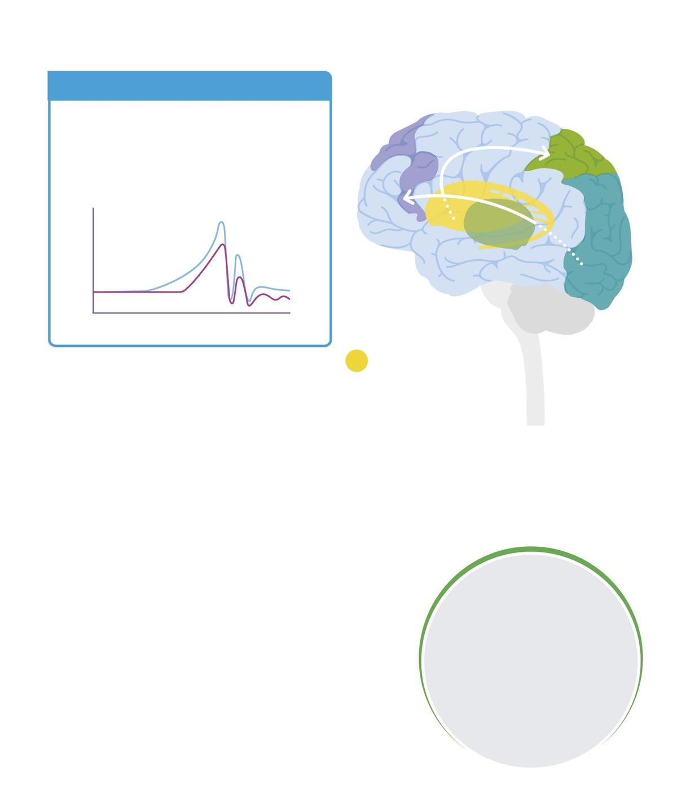
Putamen chuyển thông tin đã lưu trữ đến vỏ não đỉnh sau.
Vỏ não đỉnh sau nhận thông tin từ putamen và cũng đánh giá vị trí của cơ thể trong liên hệ với môi trường xung quanh.
ĐIỆN THẾ SẴN SÀNG
Khi chúng ta chuẩn bị cho một hành động tự nguyện, một sự tích tụ hoạt động điện, gọi là điện thế sẵn sàng, sẽ xuất hiện. Nó bắt đầu ở SMA và được tăng cường bởi hoạt động ở PMA. Hoạt động ở SMA bắt đầu trước tới 2 giây trước khi chúng ta ý thức được quyết định cử động của mình — điều này có thể cho thấy chúng ta kiểm soát hành động của mình kém hơn là chúng ta tưởng (xem tr.168).
VỎ NÃO TRÁN LƯNG-BÊN
VỎ NÃO ĐỈNH SAU
NỀN
ĐỒI THỊ HẠCH NỀN VỎ NÃO THỊ GIÁC
PUTAMEN
Hoạt động ở SMA.
Thời điểm cử động thực tế.
Hoạt động ở PMA.
Hoạt động.
- 0
Thông tin cảm giác được gửi từ vỏ não thị giác qua đồi thị đến vỏ não trán lưng-bên.
- –3
- –2
–1 Thời gian (giây).
- 0
- 1
Thu thập thông tin Các vùng cảm giác, chẳng hạn vỏ não thị giác,
1
TỦY SỐNG
TIỂU NÃO CHỨA HƠN 50 PHẦN TRĂM SỐ TẾ BÀO THẦN KINH CỦA NÃO
gửi tín hiệu đến vỏ não trán. Putamen, nơi lưu trữ các hành động đã học, gửi thông tin đến vỏ não đỉnh, vùng đánh giá liệu những hành động đã học này có thể được dùng trong tình huống mới này hay không.
Lập Kế Hoạch Chuyển Động
Các cử động có ý thức là những cử động mà chúng ta cố ý quyết định thực hiện. Chúng liên quan đến nhiều vùng của não và bao gồm cả những quá trình nằm ngoài nhận thức có ý thức của chúng ta.
Quá trình lập kế hoạch
SAO CHÚNG TA KHÔNG QUÊN CÁCH ĐẠP XE ĐẠP?
Có nhiều giai đoạn liên quan đến việc thực hiện một cử động — từ nhận biết ban đầu về môi trường, đến lập kế hoạch, rồi đến các điều chỉnh trong lúc cử động. Các giai đoạn này có sự tham gia của nhiều vùng não khác nhau cùng phối hợp để tạo ra một phản ứng. Vùng khởi phát cử động là vỏ não vận động. Các phần khác nhau của vỏ não vận động gửi tín hiệu đến các bộ phận khác nhau của cơ thể (xem tr.98). Tuy nhiên, trước khi một hành động bắt đầu, một kế hoạch hành động được tạo ra bởi vỏ não trán lưng-bên và vỏ não đỉnh sau, rồi đi qua hai vùng của vỏ não vận động: vùng vận động bổ sung (SMA) và vùng vận động tiền (PMA). Tiểu não điều phối cử động ngay khi nó đang diễn ra. Các bước ở trên cho thấy các vùng não tham gia và trình tự tín hiệu trong một cử động điển hình.
Các tế bào thần kinh trong putamen mã hóa trình tự các cử động cơ vào kho trí nhớ dài hạn của chúng ta, sao cho chúng dễ dàng được truy xuất ngay cả nhiều năm sau.

CHỨC NĂNG NÃO VÀ CÁC GIÁC QUAN
Vỏ não đỉnh sau gửi tín hiệu ý định cử động có ý thức qua hạch nền.
Vùng vận động chính có
Thân não chuyển thông tin trở lại vùng vận động chính sau khi thông tin đã được tinh chỉnh.
các liên kết mệnh lệnh - phản hồi với tiểu não và hạch nền.
SMA
VÙNG VẬN ĐỘNG CHÍNH
VỎ NÃO TRÁN LƯNG-BÊN
VỎ NÃO ĐỈNH SAU
PMA
HẠCH NỀN
NỀN
ĐỒI THỊ HẠCH NỀN
PUTAMEN
Vỏ não trán lưng-bên gửi tín hiệu đến hạch nền.
TIỂU NÃO
THÂN NÃO
Mệnh lệnh hành động được gửi qua tủy sống đến các cơ.
Đồi thị chuyển tiếp tín hiệu từ hạch nền đến PMA và SMA.
Hạch nền tăng cường hoặc làm yếu tín hiệu.
Quyết định cách cử động Vỏ não trán lưng-bên
Chuẩn bị hành động Tín hiệu truyền đến vùng vận động chính
2
3
TỦY SỐNG
TỦY SỐNG
Thông tin được trao đổi giữa tiểu não và thân não.
và vỏ não đỉnh cùng phối hợp để lập kế hoạch cử động. Thông tin này được gửi qua hạch nền (xem tr.32–33) đến PMA và SMA, những vùng xác định trình tự co cơ cần thiết.
vận động chính, rồi vùng này chuyển tiếp chỉ thị đến tiểu não và thân não để tinh chỉnh. Tín hiệu từ các vùng này quay trở lại vùng vận động chính, và vùng này gửi tín hiệu hành động đến tủy sống.
Putamen nhận tín hiệu từ các vùng trán và đỉnh.
Nhân răng cưa thực hiện các điều chỉnh tinh tế đối với kế hoạch vận động.
Vỏ não trán (N O I T C E S S S O R C T N O R F).
Sau khi tín hiệu đã
Hướng tín hiệu (N O I T C E S S S O R E D SI).
được điều chỉnh, đồi thị chuyển tiếp đến PMA và SMA.
PUTAMEN
ĐỒI THỊ
THÂN NÃO
NHÂN RĂNG CƯA
CẦU NHẠT
Chất đen kiểm soát cường độ của hành động.
Vỏ tiểu não (R A L L X E B E E T R R CE O C).
Vỏ tiểu não điều phối thời điểm.
Cầu nhạt ức chế các cử động không mong muốn. Nhân dưới đồi tham gia vào kiểm soát xung động.
CHÚ THÍCH
Điều chỉnh cử động Hạch nền là một nhóm nhân liên kết với đồi thị. Tín hiệu từ các vùng trán và đỉnh được xử lý bởi các mạch trong hạch nền, những mạch này khuếch đại hoặc ức chế tín hiệu vận động.
Thực hiện điều chỉnh Tín hiệu từ vùng vận động chính được gửi đến tiểu não, vùng đóng vai trò đo lường thời gian. Nó cũng thực hiện các điều chỉnh theo thời gian thực đối với cử động để đáp ứng với môi trường xung quanh.
Tín hiệu đến tiểu não.
Tín hiệu từ tiểu não.

AI R FB O DE SI FT LE
VỎ NÃO ĐỈNH
TIỂU NÃO
HOMUNCULUS VẬN ĐỘNG
Vùng vận động chính (A RE A R O T O M Y AR M I PR).
CÁC CỬ ĐỘNG ĐƠN GIẢN VÀ PHỨC TẠP
TỦY SỐNG
VÙNG VẬN ĐỘNG CHÍNH
NÃO TRUNG
Các sợi trục tập trung ở não trung và nối với
Các nơ-ron từ não (nơ-ron vận động trên) truyền tín hiệu xuống tủy sống.
Hầu hết tín hiệu bắt nguồn từ vùng vận động chính.
những vùng tạo ra các cử động phức tạp được biểu diễn theo tỷ lệ; các bộ phận như mặt và bàn tay chiếm nhiều chỗ hơn trên vỏ não so với những vùng tạo cử động đơn giản, như bàn chân. Các vùng cho những bộ phận kề nhau thì được nhóm lại với nhau.
Vỏ não vận động kiểm soát vùng nào của cơ thể — chẳng hạn cánh tay và bàn tay — thường
Một homunculus vận động cho thấy chẳng hạn bàn chân.
Các sợi trục vượt sang phía đối diện của cơ thể ngay bên dưới thân não.
Bó vỏ-tủy bên
Bó vận động này hỗ trợ các cử động tinh tế. Bó đỏ-tủy bắt đầu ở vỏ não và chạy qua đồi thị.
Bó lưới-tủy giúp phối hợp cử động.
Sau khi não bộ đã lập kế hoạch cho một cử động (xem tr.96–97), nó gửi tín hiệu đến các cơ thích hợp trong cơ thể, qua hệ thần kinh, để biến ý định thành hành động.
phía đối diện của cơ thể. Các bó thần kinh khác bắt nguồn từ những phần khác của thân não, để sợi trục từ một bán cầu não kết nối với dây thần kinh vận động cho các nơ-ron trong tủy sống. Hầu hết sợi trục tạo thành một phần của bó gọi là bó vỏ-tủy bên, bó này vượt chéo ở đáy não để đi qua thân não và trao đổi với các nơ-ron vận động.
Tín hiệu từ các vùng vận động và đỉnh của vỏ não được gửi dọc theo
CẦU NÃO
Thực Hiện Cử Động
của não trung và thực hiện các chức năng vận động cụ thể.
VÙNG DƯỚI ĐỒI
TỦY SỐNG
Bó tiền đình-tủy, bắt nguồn từ thân não, giúp điều hòa thăng bằng và hướng của cơ thể.
Các sợi trục vượt sang phía đối diện của cơ thể ở não trung.
BÓ TỦY
Cấu trúc lưới.
Nhân đỏ.
Từ Não Đến Tủy
các phản ứng không tự nguyện, chẳng hạn các cử động tự nguyện của chi. Các nhóm sợi trục khác đảm nhận các phản ứng không tự nguyện như thăng bằng, cũng như các cử động tinh chỉnh. Các bó thần kinh gửi tín hiệu đến những cơ nối với bộ xương để tạo ra cử động. Các sợi trục của bó vỏ-tủy bên
Bó vỏ-tủy bên
Sợi trục thần kinh vận động
Bó đỏ-tủy. Bó tiền đình-tủy
Bó lưới-tủy bó.
bó.
bó.
CHÚ THÍCH
1

CHỨC NĂNG NÃO VÀ CÁC GIÁC QUAN
Tủy sống (D R O C L A N I P S).
Các nơ-ron vận động trên và dưới gặp nhau ở sừng bụng của tủy sống. Phần ngoài của sừng bụng chứa các dây thần kinh đi đến tay và chân; phần giữa chứa dây thần kinh đi đến cánh tay trên và đùi.
cơ với tốc độ lên tới 395 ft (120 m) mỗi giây từ não đến cơ thể chúng ta.
CHẤT XÁM
MỘT TÍN HIỆU MẤT BAO LÂU ĐỂ ĐI TỪ NÃO ĐẾN CƠ? Các tín hiệu có thể truyền
Các nơ-ron vận động trên.
các nơ-ron.
CHẤT TRẮNG
SỪNG BỤNG
Các nơ-ron vận động dưới từ tủy sống đến cơ truyền tín hiệu từ
Các nơ-ron vận động dưới.
các nơ-ron.
2
DÂY THẦN KINH QUAY
được bao phủ bằng bao myelin, tạo thành chất trắng. Chất xám ở trung tâm tủy sống gồm các thân tế bào của nơ-ron vận động. Bên trong tủy sống, các sợi trục của bó vỏ-tủy, vốn được bao bọc bởi bao myelin (myelin sheath), tạo nên chất trắng. Các đầu sợi trục vỏ-tủy (gọi là nơ-ron vận động trên) tạo khớp thần kinh với các nơ-ron vận động (gọi là nơ-ron vận động dưới) ở sừng bụng của chất xám. Các sợi trục của nơ-ron dưới thoát ra khỏi tủy ... các sợi cơ. Điểm mà các đầu dây thần kinh kích hoạt sợi cơ để cột sống qua các khe hở giữa các đốt sống (xem tr.12) và kéo dài đến sừng bụng của chất xám. Các sợi trục của nơ-ron dưới thoát ra và đi đến các sợi cơ. Điểm mà các đầu dây thần kinh kích hoạt sợi cơ để
CÁNH TAY PHẢI
CƠ
hoàn tất cử động được gọi là khớp thần kinh cơ.
Cơ co lại và làm khớp cử động, khiến cánh tay gập lại.
Khớp thần kinh cơ (N O I T C N U J R A L U C S U M O R U E N).
SỢI CƠ
Acetylcholine — chất dẫn truyền thần kinh.
neurotransmitter (chất dẫn truyền thần kinh) (xem tr.24). Acetylcholine gây ra các phản ứng tạo thành màng cơ. Điều này kích hoạt chất hóa học liên kết với các thụ thể trong tế bào cơ.
nhiều hơn những cơ dùng cho cử động đơn giản. Các cử động tinh tế có nhiều đầu dây thần kinh hơn.
Hướng của tín hiệu.
Từ Tủy Đến Cơ
co lại và kéo vào khớp ngay bên cạnh nó. Những cơ dùng cho cử động tinh tế điều khiển bộ phận của chi.
KHE KHỚP THẦN KINH
sợi cơ co lại.
Tín hiệu thần kinh khiến cơ
SỢI TRỤC TẬN CÙNG
Thực Hiện Cử Động
Thụ thể cho acetylcholine.
3

TẠI SAO MỆT MỎI LÀM CHẬM THỜI GIAN PHẢN ỨNG CỦA CHÚNG TA?
Vận động
Khi chúng ta mệt mỏi, các nơ-ron trong não hoạt động chậm lại, ảnh hưởng đến tri giác thị giác và trí nhớ của chúng ta. Điều này có nghĩa là chúng ta phản ứng với các sự kiện chậm hơn.
Chúng ta thực hiện nhiều hành động tự nguyện mà không cần phải suy nghĩ về chúng vì chúng quá quen thuộc. Một loại vận động vô thức khác là phản xạ — một phản ứng bản năng trước nguy hiểm.
Đường phản ứng
Thông tin thị giác rất quan trọng trong việc giúp chúng ta lập kế hoạch cho các cử động của mình. Thông tin từ vỏ não thị giác đi theo hai đường trong não (xem tr.70–71). Đường phía trên (hay đường lưng), dẫn đến thùy đỉnh, hướng dẫn các hành động của chúng ta theo thời gian thực. Trong khi đó, đường phía dưới (hay đường bụng), kết thúc ở thùy thái dương, kích hoạt những trải nghiệm thị giác đã được lưu trữ để giúp chúng ta giải thích những gì mình thấy và phản ứng cho phù hợp.
ĐƯỜNG TRÊN (LƯNG)
Các đường thị giác trong não Đường lưng mang thông tin về vị trí của cơ thể và các vật thể khác, trong khi đường bụng dùng tri giác và trí nhớ để nhận dạng vật thể. Não dùng thông tin này để đánh giá lực và hướng cần thiết cho một cử động.
ĐƯỜNG DƯỚI (BỤNG)
VỎ NÃO THỊ GIÁC
Sự chú ý tập trung vào những gì người chơi có thể thấy, chẳng hạn như người chơi đối phương
Cơ thể chuẩn bị sẵn sàng để phản ứng
Hành động phối hợp
Bất kỳ chuỗi hành động nào cũng đòi hỏi sự phối hợp giữa các bộ phận khác nhau của não — trước tiên là tập trung sự chú ý vào nhiệm vụ, sau đó tích hợp thông tin cảm giác và trí nhớ để tạo ra một kế hoạch, rồi huy động vùng vận động để hành động. Việc học một kỹ năng mới, chẳng hạn như lái xe hoặc chơi một môn thể thao, bao gồm việc học và luyện tập các chuỗi vận động để chúng trở nên gần như vô thức. Khi chúng ta học một kỹ năng, các tế bào não tạo ra những kết nối mới. Vào thời điểm chúng ta đã thành thạo một kỹ năng (xem ô bên phải), hoạt động vỏ não liên quan đến việc thực hiện nhiệm vụ đó ít hơn nhiều so với lúc chúng ta còn là người mới bắt đầu. Kết quả là, các hành động của một người lành nghề — chẳng hạn như một tay vợt chuyên nghiệp — nhanh hơn, chính xác hơn và tinh tế hơn.
Đồi thị tập trung sự chú ý vào đối phương
Thùy trán ức chế những ý nghĩ gây phân tán
Putamen lưu trữ các hành động đã học, chẳng hạn như cách trả bóng
THÙY TRÁN
VỎ NÃO THÙY ĐỈNH PUTAMEN
ĐỒI THỊ
Chú ý — Để chuẩn bị cho hành động,
Trí nhớ — Các tín hiệu thị giác kích hoạt vỏ
1
2
đồi thị hướng sự chú ý đến khu vực nơi hoạt động sẽ diễn ra (chẳng hạn như người chơi đối phương), trong khi các thùy trán chặn những ý nghĩ gây phân tán để người chơi có thể tập trung vào các tín hiệu thị giác.
não thùy đỉnh gọi lại các ký ức về chuỗi hành động từ putamen. Vỏ não thùy đỉnh dùng thông tin này để đánh giá bối cảnh và tạo ra một mô hình nội tại cho hành động.
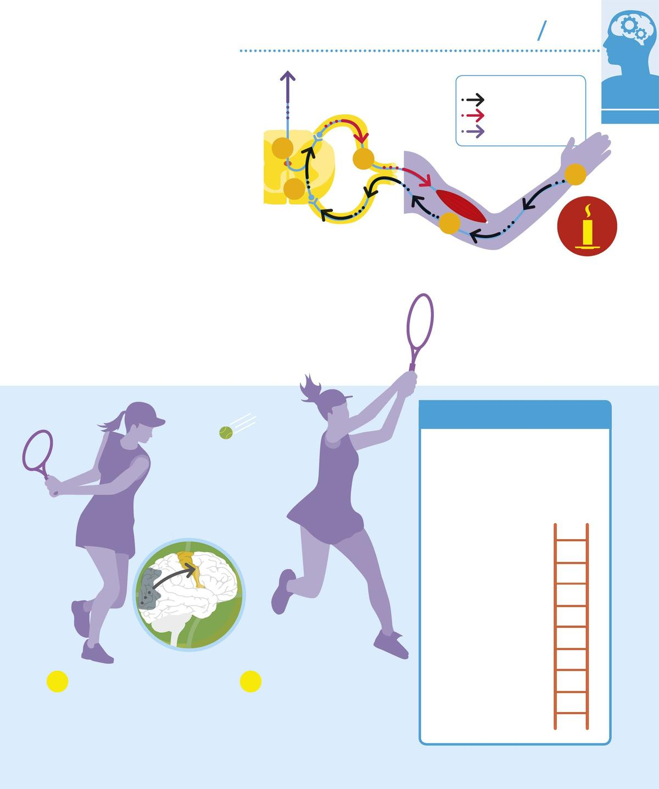
CHỨC NĂNG NÃO VÀ CÁC GIÁC QUAN
Phản xạ
Các nơ-ron trung gian bổ sung gửi tín hiệu đến não. Nơ-ron vận động gửi tín hiệu đến cơ để cơ co lại
CHÚ THÍCH
Phản xạ là những phản ứng trong tích tắc trước nguy hiểm mà chúng ta không cần học, thậm chí không cần suy nghĩ; cơ thể phản ứng tự động. Các hành động phản xạ dùng cùng những cơ được dùng trong vận động tự nguyện, nhưng phản ứng ban đầu, tức thì không liên quan đến não. Thay vào đó, tín hiệu từ các dây thần kinh cảm giác đi đến tủy sống, và tủy sống kích hoạt một phản ứng truyền dọc theo các dây thần kinh vận động. Các tín hiệu bổ sung được gửi đến não sau đó, để mã hóa trí nhớ phòng khi nguy hiểm lại tái diễn.
Tín hiệu đến tủy sống
Tín hiệu đến cơ
Tín hiệu đến não
5
TỦY SỐNG
4
Các thụ thể trong da phát hiện nhiệt từ ngọn lửa
1
3
CƠ
2
Các nơ-ron cảm giác gửi tín hiệu đến tủy sống
Các nơ-ron trung gian trong tủy sống tạo ra phản ứng
KÍCH THÍCH
Bỏ qua não Phản xạ liên quan đến một phản ứng thần kinh đơn giản gọi là cung phản xạ. Các thụ thể trong da và cơ gửi tín hiệu nguy hiểm dọc theo các nơ-ron cảm giác đến tủy sống; ở đó, các nơ-ron trung gian tạo khớp thần kinh với các nơ-ron vận động để kích hoạt một phản ứng nhanh.
CÁC NƠ-RON VÀ ĐƯỜNG DẪN THẦN KINH CỦA CHÚNG TA THAY ĐỔI LIÊN TỤC ĐỂ ĐÁP ỨNG VỚI KINH NGHIỆM
PHÁT TRIỂN NĂNG LỰC
Bất kỳ ai học một kỹ năng mới cũng trải qua vài giai đoạn. Người mới bắt đầu phải nỗ lực rất nhiều để đạt được năng lực. Nhờ luyện tập, các đường dẫn thần kinh phát triển cho đến khi người học có thể làm tốt mà không cần suy nghĩ về điều đó.
Chuỗi vận động bắt đầu
Quả bóng tiến về phía người chơi
Vùng vận động chính lập kế hoạch và thực hiện cử động
Năng lực vô thức
Vùng vận động tiền lập kế hoạch cho cử động
Thực hiện kỹ năng một cách tự động
VỎ NÃO VẬN ĐỘNG
Năng lực có ý thức
Có thể dùng kỹ năng, nhưng chỉ khi nỗ lực
VỎ NÃO THỊ GIÁC
Sự không thành thạo có ý thức
Nhận biết cần có kỹ năng nhưng còn thiếu sự thành thạo
Lập kế hoạch — Bộ não kết hợp thông tin thị giác theo thời gian thực
Hành động có ý thức — Vào thời điểm người chơi bắt đầu
3
4
Sự không thành thạo vô thức
cùng các chương trình đã lưu trữ cho các chuỗi vận động để tạo ra một kế hoạch hành động. Kế hoạch này trước tiên được diễn tập ở vùng vận động tiền, rồi được gửi đến vỏ não vận động chính.
nhận ra mình đang hành động, chuỗi vận động đã tiến triển khá xa. Hành động rất có thể sẽ hiệu quả nếu người đó có đủ kỹ năng, kiến thức đã lưu trữ và thông tin.
Không nhận biết cần có kỹ năng và cũng thiếu sự thành thạo
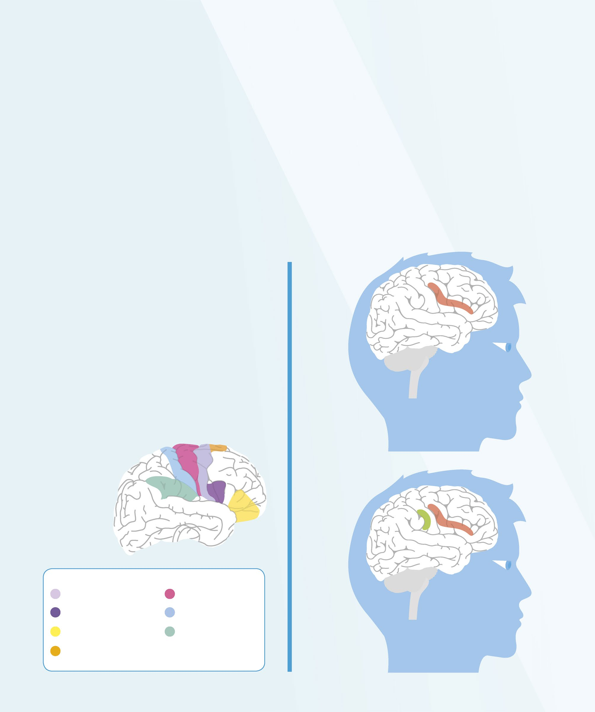
Phản chiếu vận động
Nơ-ron
Một số nhà khoa học cho rằng nơ-ron gương có thể đóng vai trò trong việc học cách bắt chước vận động. Theo giả thuyết này, thông tin về mục đích của một hành động được truyền đến các nơ-ron gương từ những vùng não như vỏ não tiền trán, vùng chịu trách nhiệm phân tích. Các nơ-ron gương ở nhiều vùng vận động sau đó mã hóa một mô phỏng của hành động đó, trở thành một phần trong chương trình vận động của chính chúng ta. Sau đó chúng ta có thể dùng “chương trình” này nếu cần tự mình thực hiện hành động ấy.
Việc học không chỉ bao gồm luyện tập một kỹ năng mới — chúng ta còn học bằng cách quan sát người khác. Kiểu học này được cho là liên quan đến các tế bào thần kinh trong não gọi là nơ-ron gương, cho phép chúng ta trải nghiệm các hành động mà không cần thực hiện chúng.
Quan sát một hành động Các nơ-ron gương phản ứng khác nhau với các hành động khác nhau của mặt và các chi. Đặc biệt, các nơ-ron ở những vùng não khác nhau được kích hoạt cho các cử động của chính cơ thể, chẳng hạn như nhai, và cho những cử động nhắm vào một vật thể nhìn thấy, chẳng hạn như cắn một quả trái cây.
Nơ-ron gương là gì?
Nơ-ron gương là các tế bào não bắn cả khi chúng ta thực hiện một hành động lẫn khi chúng ta thấy người khác thực hiện hành động đó. Chúng lần đầu được phát hiện ở khỉ, nhưng từ đó cũng đã được tìm thấy ở người. Hầu hết các nghiên cứu dùng chụp cộng hưởng từ chức năng (fMRI; xem tr.43), nhưng một nghiên cứu lại liên quan đến những người được cấy điện cực vào não. Trong trường hợp này, các tế bào nơ-ron gương được phát hiện ở vùng vận động bổ sung, nơi các chuỗi vận động được lập kế hoạch, cũng như ở hải mã, vùng quản lý trí nhớ và định hướng.
Nhiều vùng vận động được kích hoạt, bao gồm cả những vùng liên quan đến kiểm soát các cử động của miệng và hàm
NGƯỜI QUAN SÁT
Ở đâu? Nơ-ron gương đã được tìm thấy ở một số vùng vỏ não cũng như trong các cấu trúc sâu hơn bên trong não, chẳng hạn như hải mã.
Một phần thùy đỉnh được kích hoạt khi nhìn thấy hành động nhắm vào một vật thể
CHÚ THÍCH
Các phần của vùng vận động tiền và vùng Broca (vùng đóng vai trò trong việc hiểu cử động của người khác) được kích hoạt
Vùng vận động tiền
Vùng vận động chính
Một phần của vùng Broca
Vùng cảm giác cơ thể
Vùng đỉnh dưới
Hồi trán dưới
Vùng vận động bổ sung
NGƯỜI QUAN SÁT
Phần 3 — Giao Tiếp & Ngôn Ngữ
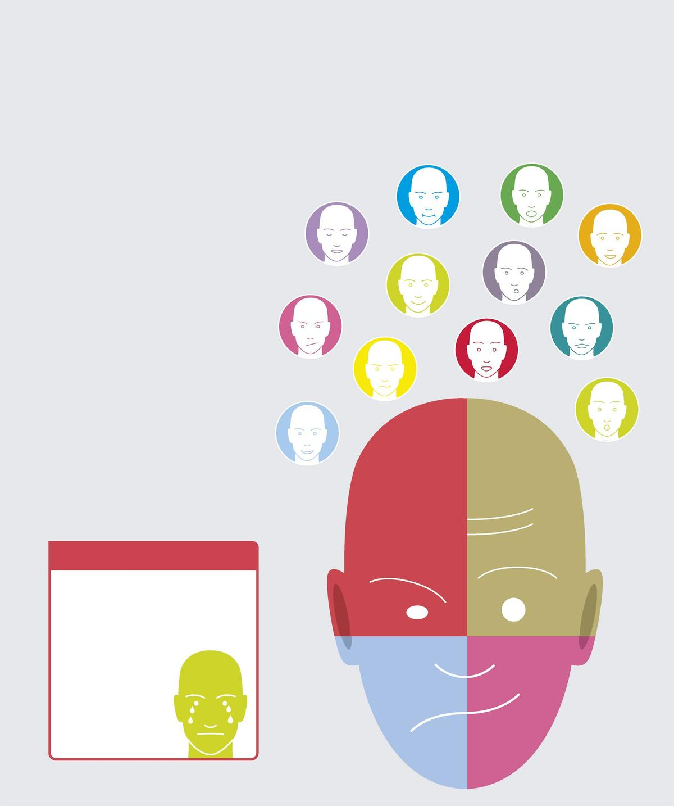
CÁC HORMONE KÍCH HOẠT PHẢN ỨNG CẢM XÚC ĐƯỢC HẤP THU TRONG 6 GIÂY
Cảm xúc là những phản ứng sinh lý trước các sự kiện bên ngoài, được định hình bởi kinh nghiệm và đi kèm với những cảm giác đặc trưng. Chúng tiến hóa để đẩy chúng ta tránh xa nguy hiểm và hướng tới phần thưởng.
Kinh ngạc
Chấp nhận
Thanh thản
Các cảm xúc cơ bản
Ngưỡng mộ
Nghiên cứu cho rằng có bốn cảm giác có ý thức khác biệt về mặt sinh lý: giận dữ, sợ hãi, hạnh phúc và buồn bã. Các khía cạnh của những cảm giác này kết hợp với nhau, cho phép chúng ta trải nghiệm một dải cảm xúc phong phú. Nhìn chung, cảm xúc là những trải nghiệm tích cực hoặc tiêu cực, mức độ mãnh liệt thì thay đổi. Mỗi trạng thái cảm xúc lại liên quan đến những thay đổi sinh lý đặc thù, ảnh hưởng đến cách một người cư xử và suy nghĩ. Ví dụ, chúng ta nhìn nhận thế giới rất khác nhau khi thư giãn và khi sợ hãi. Chính sự phối hợp giữa sinh lý, hành vi và tư duy với cảm giác là thứ giúp chúng ta điều chỉnh hành vi để đáp ứng với các sự kiện.
Nhẹ nhõm
Thỏa mãn
Bối rối
Ghê tởm
Mong đợi
Lo âu
Bất ngờ
Niềm vui
SỢ HÃI
GIẬN DỮ
Cảm xúc Nhiều trải nghiệm cảm xúc khác bắt nguồn từ bốn cảm xúc then chốt kể trên. Một nghiên cứu gần đây cho thấy có thể có tới 27 loại trải nghiệm cảm xúc, trong đó một số được thể hiện ở đây. Một số cảm xúc nằm dọc theo các dải chuyển tiếp, chẳng hạn như đi từ lo âu đến sợ hãi rồi đến khiếp sợ.
TẠI SAO CHÚNG TA KHÓC?
Chỉ có con người mới khóc, và không ai chắc chắn tại sao chúng ta lại làm vậy — nhất là khi cả buồn bã lẫn niềm vui đều có thể gợi ra nước mắt. Việc khóc có chức năng giao tiếp giữa các cá nhân, báo hiệu rằng ta đang đau khổ về mặt cảm xúc để gợi ra những phản ứng xã hội phù hợp. Nó cũng mang tính thanh thải, giúp ta buông mình hoàn toàn vào cảm xúc và xử lý chúng, điều có lợi cho sức khỏe tâm thần.
HẠNH PHÚC
BUỒN BÃ

Giải phẫu của cảm xúc
Hàm lượng serotonin thấp trong não
Não sản xuất phần lớn các hormone liên quan đến hạnh phúc
Để đáp ứng với một kích thích, não khởi phát các thay đổi nội tiết tố, rồi đến lượt mình lại kích hoạt những thay đổi sinh lý chuẩn bị cho ta phản ứng phù hợp với trạng thái cảm xúc hiện tại. Nhịp tim thay đổi, lưu lượng máu đến cơ bắp bị điều chỉnh và ra mồ hôi đều liên quan đến cảm xúc dâng cao. Những thay đổi này có thể được cảm nhận rõ ràng, làm tăng cường độ của cảm xúc.
SEROTONIN
Cảm giác cơ thể tăng nhẹ vùng cổ và ngực
Nhịp tim giảm
Lượng serotonin được sản xuất ở mức thấp
Hạnh phúc và buồn bã Serotonin, dopamine, oxytocin và endorphin là những hormone ảnh hưởng sâu sắc đến hạnh phúc của chúng ta. Cảm xúc được cảm nhận khắp cơ thể, với mỗi loại cảm xúc lại được cảm nhận ở những vị trí khác nhau. Tác động của serotonin được minh họa tại đây.
Lượng lớn serotonin được ruột già sản xuất
MỤC ĐÍCH CỦA TIẾNG CƯỜI LÀ GÌ?
Cảm giác hoạt động của các chi giảm đi
Cảm giác khỏe khoắn được ghi nhận ở khắp cơ thể
Sự thư giãn sau một tràng cười sẽ ức chế phản ứng sinh học chiến đấu hay bỏ chạy (fight-or-flight).
CHÚ GIẢI
Cảm giác tích cực được ghi nhận
Cảm giác tiêu cực được ghi nhận
BUỒN BÃ
HẠNH PHÚC
Cảm xúc vô thức
Đối với những phản ứng tự động nguyên thủy, chẳng hạn như phản xạ chiến đấu hay bỏ chạy, tốc độ là yếu tố then chốt. Những kích thích mang sức mạnh cảm xúc xuất hiện quá nhanh để có thể được nhận thức rõ ràng vẫn có thể gợi ra phản ứng cảm xúc và kích hoạt hạch hạnh nhân (amygdala). Những phản ứng ban đầu này định hình cách vỏ não xử lý thông tin. Hạch hạnh nhân tham gia vào trí nhớ cảm xúc có thể được kích hoạt tự động trong tương lai.
Vỏ não cảm giác Thông tin cảm giác được truyền đến vỏ não cảm giác sẽ được xử lý kỹ lưỡng theo hướng tri giác có ý thức và được tích hợp với thông tin đã lưu trữ. Quá trình này cần thời gian.
Hải mã Hải mã (hippocampus) xử lý thông tin được nhận thức rõ ràng để hình thành trí nhớ. Nó cũng đối chiếu các tín hiệu đầu vào với những ký ức trước đó nhằm điều chỉnh phản ứng cảm xúc.
ĐƯỜNG CHẬM MÀ CHÍNH XÁC
Hai con đường Xử lý cảm xúc có ý thức bao gồm việc tích hợp thông tin cảm giác với trí nhớ đã lưu trữ và các đánh giá lý trí về tình huống — đây là “đường chậm mà chính xác”. Ngược lại, các phản ứng vô thức đi theo “đường nhanh nhưng thô thiển” lại diễn ra nhanh hơn nhiều. Vỏ não trước trán đóng vai trò quan trọng trong việc điều tiết cảm xúc có ý thức.
Đồi thị Thông tin đầu vào được chuyển tiếp đến hạch hạnh nhân để đánh giá và hành động nhanh chóng, đồng thời cũng được gửi đến các vùng vỏ não nơi nó đi vào nhận thức có ý thức.
Hạch hạnh nhân Hạch hạnh nhân lập tức đánh giá tầm quan trọng về mặt cảm xúc của nội dung thông tin đầu vào và nhanh chóng gửi tín hiệu đến các vùng khác để cơ thể hành động ngay lập tức.
Vùng dưới đồi Tín hiệu từ hạch hạnh nhân kích hoạt các thay đổi nội tiết tố và truyền ra hệ thần kinh tự chủ nhằm chuẩn bị cho cơ thể phản ứng trước các kích thích cảm xúc.
ĐƯỜNG NHANH NHƯNG THÔ THIỂN

mối đe dọa rõ ràng hơn.
Đồng tử của chúng ta giãn ra, nên ta có thể nhìn thấy bề mặt của làn da, vì thế ta có thể trông có vẻ tái nhợt.
con đường liên quan đến vỏ não cũng đánh giá các hormone chiến đấu hay bỏ chạy. Một đường đi chậm hơn, có ý thức Tín hiệu truyền đến đồi thị và hạch hạnh nhân, kích hoạt vùng dưới đồi sản xuất
Mạch máu Dòng máu bị co thắt
Đồng tử giãn ra
Vùng dưới đồi
Đồi thị
Vỏ não thị giác
Phản ứng trước nguy hiểm
Ra mồ hôi nhiều hơn
đảm bảo ta không bị quá nóng khi cần gắng sức. Chúng ta bắt đầu ra mồ hôi, các tuyến mồ hôi được kích hoạt và làm mát cơ thể nếu có vận động thể lực.
tình huống (xem tr.107).
Hạch hạnh nhân
Tim chúng ta đập nhanh hơn ở nơi cần thiết trong cơ thể. để bơm máu giàu oxy và dưỡng chất đến những chỗ cần thiết.
Nhịp tim tăng
tuy nhiên, lo âu kéo dài có thể gây kích hoạt quá mức hệ thần kinh giao cảm và dẫn đến các vấn đề sức khỏe.
Sợ hãi và giận dữ kích hoạt giải phóng các hormone trong cơ thể, chuẩn bị cho ta đối phó với mối đe dọa. Trong thế giới hiện đại,
Nhịp thở tăng
chúng sẵn sàng hành động. Nhưng điều này cung cấp oxy cho cơ bắp, chuẩn bị
Sợ hãi và Giận dữ
gây khô miệng. Tiết nước bọt chậm lại khi ta sợ hãi. Điều này
Sản xuất nước bọt
thở quá mức. Nó cũng có thể gây ra các triệu chứng của
Giảm
tác động chung của các con đường này là khởi phát phản xạ chiến đấu hay bỏ chạy, giúp cơ thể ta sẵn sàng. Tín hiệu truyền đến tuyến yên và tuyến thượng thận, những tuyến tiết ra các hormone như cortisol và adrenaline.
(xem tr.13). Vùng dưới đồi cũng gửi hoạt động tiêu hóa suy giảm. Trong những trường hợp cực đoan, ta có thể nôn mửa để đẩy thức ăn chưa tiêu hóa ra ngoài.
Tiêu hóa chậm lại Để tránh lãng phí năng lượng, hệ tiêu hóa
cảm xúc. Thông tin đi đến hạch hạnh nhân của chúng ta, rồi hạch hạnh nhân gửi tín hiệu tới vùng dưới đồi — một phần nhỏ bé của não bộ xử lý cảm xúc — để chuẩn bị cho cơ thể phản ứng trước nguy hiểm.
Khi chúng ta nhìn thấy một mối đe dọa tiềm ẩn, thông tin thị giác hệ thần kinh giao cảm, chuẩn bị cho cơ thể tấn công hoặc bỏ chạy.
Chiến đấu hay bỏ chạy
Cơ bắp căng lên hay “căng như dây đàn”. Các cơ ở vai chuẩn bị cho cánh tay, chân và chính chúng sẵn sàng hành động. Chúng ta có thể cảm thấy căng thẳng.
Các cơ bắp ở

NỖI SỢ NHỆN (ARACHNOPHOBIA): NGƯỜI DÂN TRÊN TOÀN THẾ GIỚI ĐỀU SỢ NHỆN
giải phóng các hormone chiến đấu hay bỏ chạy.
Ban đầu, người bệnh có thể nghĩ rằng mình đang bị đau tim. Bước đầu tiên để phá vỡ vòng lặp là nhận ra rằng bạn đang trải qua một cơn hoảng loạn. tim đập dồn dập; đau ngực; thở nhanh, nông; và ra mồ hôi.
như tăng nhịp tim, để đáp ứng với các hormone. Những cảm giác cơ thể xuất hiện như một tác động vật lý.
Não bộ của bạn diễn giải cảm giác và nguy hiểm như một mối đe dọa.
Các cơn hoảng loạn là phản ứng thể chất trước nỗi sợ hãi hoặc lo âu. Triệu chứng bao gồm
Các cơn hoảng loạn có thể bắt đầu mà không báo trước, do căng thẳng và lo âu tích tụ. Chúng có thể có một tác nhân kích hoạt đơn lẻ, như một nỗi ám ảnh, hoặc
Diễn giải
CỦA MỌI NGƯỜI
tích tụ dần.
2
Tác nhân kích hoạt
3
1
Vòng lặp hoảng loạn
giúp ta nhẹ nhàng và nhanh chóng hơn, đồng thời
Điều này khiến ta cần đi tiểu; các cơ thư giãn, làm sạch cơ thể khỏi phần dư thừa.
Cơn hoảng loạn Nếu không được kiểm soát, điều này có thể
6
Bàng quang
4
leo thang thành một cơn hoảng loạn toàn diện. Người bệnh thậm chí có thể sợ rằng mình đang chết.
Lo âu tăng dần. Không nhận ra tại sao chuyện đó lại xảy ra và không chắc chắn về các tác nhân kích hoạt, sự lo âu của bạn cứ dâng cao.
Các cơn hoảng loạn
5
Triệu chứng tăng lên Nhiều hormone hơn được giải phóng,
khiến triệu chứng xấu đi, làm lo âu tăng thêm.
Máu mang dưỡng chất và oxy đến các cơ, chuẩn bị cho chúng chiến đấu hoặc bỏ chạy khỏi nguy hiểm.
Máu lưu thông
BẠN SỐNG MỘT MÌNH Không thể xác định được nguyên nhân, bạn thấy sợ hãi.
SỐNG CÙNG BẠN CÙNG PHÒNG
Một giả thuyết cho rằng nếu chúng ta biết tại sao một sự kiện tiêu cực xảy ra và ai chịu trách nhiệm, ta sẽ cảm thấy tức giận. Nếu không thể tìm ra nguyên nhân, hoặc nguyên nhân nằm ngoài tầm kiểm soát của ta, ta sẽ cảm thấy sợ hãi.
Chính cách chúng ta diễn giải các cảm giác mình trải qua là yếu tố quyết định việc ta thấy sợ hãi hay tức giận. Phản ứng cơ thể trước nỗi sợ và cơn giận là tương tự nhau.
Cảm giác bị diễn giải thành cơn giận về hành vi thiếu tế nhị của người khác.
Các kho dự trữ chất béo được gan giải phóng để cung cấp năng lượng cần thiết cho cơ bắp hoạt động. Các kho đường dự trữ cũng được huy động.
Đường huyết tăng vọt
Bạn sống một mình, nên bạn biết rằng không có ai khác ở đây.
Bạn nhớ lại rằng bạn nhận ra cô ấy đã ra ngoài rồi quay trở lại.
Việc chúng ta phản ứng bằng nỗi sợ hay cơn giận trước một kích thích cụ thể thường phụ thuộc vào bối cảnh.
Phản xạ chiến đấu hay bỏ chạy được kích hoạt
Tức giận hay sợ hãi?
hệ miễn dịch tạm ngưng hoạt động để tiết kiệm năng lượng.
Hoạt động của hệ miễn dịch suy giảm
Trong khoảnh khắc đó, việc đối phó với nhiễm trùng không phải là ưu tiên hàng đầu.
Bối cảnh là chìa khóa
Bạn bị đánh thức bởi tiếng ồn lớn ở tầng dưới vào giữa đêm.
Biểu cảm khuôn mặt theo phản xạ
Biểu cảm khuôn mặt có ý thức
Cảm xúc Những cảm xúc kéo dài được định hình bởi các giác quan, tính khí, trí nhớ, tín hiệu cơ thể và sự chú ý.
VỎ NÃO VẬN ĐỘNG
VỎ NÃO VẬN ĐỘNG
TRUNG TÂM CẢM XÚC CỦA NÃO
Sự can thiệp có ý thức Việc vỏ não trán phân tích tình huống định hình kỳ vọng và điều chỉnh quá trình xử lý cảm xúc.
Tín hiệu Các tín hiệu cơ thể như nhịp tim, ra mồ hôi, căng hay thư giãn cơ bắp, và run rẩy đều góp phần định hình cảm xúc.
Biểu cảm Nụ cười trên khuôn mặt vừa là sản phẩm vừa là yếu tố ảnh hưởng đến cảm xúc — chẳng hạn, cười làm tâm trạng phấn chấn hơn.
NỤ CƯỜI THEO PHẢN XẠ
NỤ CƯỜI CÓ Ý THỨC
Nơ-ron vận động
Nơ-ron vận động
Biểu cảm khuôn mặt theo phản xạ Cảm xúc tạo ra biểu cảm trên khuôn mặt ngoài tầm kiểm soát của chúng ta. Ví dụ, khi nghe tin tốt, ta tự động mỉm cười. Hạch hạnh nhân và các bộ phận khác của hệ viền khởi phát những hành động phản xạ này.
Biểu cảm khuôn mặt có ý thức Sau khi bắt đầu trải qua một cảm xúc, chúng ta có thể thay đổi biểu cảm để che giấu hoặc củng cố cảm xúc thật của mình. Hành động như vậy đòi hỏi sự tham gia có ý thức của vỏ não vận động.
Cảm xúc có ý thức
Sự hình thành cảm xúc Cả biểu cảm phản xạ lẫn có ý thức đều do vỏ não vận động trung gian, nhưng biểu cảm phản xạ được gửi tín hiệu trực tiếp đến vùng vận động từ hệ viền thay vì đi qua thùy trán. Chúng ta cũng có thể chủ động điều chỉnh phản ứng cơ thể trước cảm xúc.
Hình thành cảm xúc
Cảm xúc được cảm nhận rõ ràng và dù tích cực hay tiêu cực, thay đổi hay ổn định, chúng đều ảnh hưởng lớn đến chất lượng cuộc sống của chúng ta. Những cảm giác có ý thức không ngừng tương tác với các quá trình vô thức cũng định hình cảm xúc của ta.
Phản ứng cảm xúc phức tạp và luôn biến đổi. Chúng xuất hiện khi những phản ứng bẩm sinh nhanh chóng trước các kích thích tương tác với phân tích chi tiết. Các phản ứng bẩm sinh tiến hóa thành những phản ứng có lợi nhất trước các kích thích then chốt. Một khi những kích thích đó thu hút được sự chú ý của một người, thì đánh giá lý trí sẽ tiếp theo. Sau đó, cách cảm xúc của người đó thay đổi được định hình bởi tính khí, kinh nghiệm trong quá khứ và cách họ đánh giá nhiều dòng thông tin khác nhau.

Phản ứng cảm xúc
SEROTONIN
CHÚ GIẢI
Phản ứng cảm xúc tiến triển theo thời gian, từ những phản ứng bảo vệ ban đầu đến những phản ứng được cân nhắc kỹ hơn. Hãy tưởng tượng một người bạn bất ngờ nhảy ra trước mặt bạn: đầu tiên bạn giật mình hoặc sợ hãi, nhưng khi não xử lý điều đang xảy ra, bạn chuyển sang trạng thái bình tĩnh. Giai đoạn đầu tiên bao gồm việc sự chú ý bị chiếm lấy và hạch hạnh nhân phản ứng sớm để chuẩn bị cho não bộ có ý thức “kỳ vọng” một nhận thức quan trọng.
Hạch hạnh nhân
Cùng với dopamine và noradrenaline, serotonin là một chất dẫn truyền thần kinh đóng vai trò then chốt trong việc điều hòa tâm trạng. Dù vấn đề không đơn giản đến mức serotonin cao đồng nghĩa với hạnh phúc và thấp đồng nghĩa với buồn bã, thì sự suy giảm của phân tử này lại liên quan đến trầm cảm và lo âu. Nhiều thuốc chống trầm cảm hoạt động bằng cách tăng mức serotonin trong não. Vận động cũng có ích — chẳng hạn, đi bộ nhanh nhẹn hoặc nhảy múa có thể nâng cao mức serotonin.
Vỏ não thị giác chính
Vỏ não trán
Hồi fusiform (fusiform gyrus, vùng nhận diện khuôn mặt)
Vỏ não vận động
Vỏ não đỉnh
Tín hiệu truyền đến vỏ não vận động và vỏ não đỉnh
Dưới 100 mili-giây Thông tin cảm giác đi đến hạch hạnh nhân, rồi hạch hạnh nhân gửi
tín hiệu đến vỏ não đỉnh rồi đến vỏ não vận động để tạo ra phản ứng nhanh trước kích thích cảm xúc, chẳng hạn như khi bỏ chạy khỏi nguy hiểm.
Tín hiệu truyền đến hạch hạnh nhân
Tín hiệu từ các vùng cảm giác
100–200 mili-giây Thông tin sau đó đến các thùy trán, nơi nó
Đường nhận diện trở nên rõ ràng có ý thức và hành động phù hợp được lên kế hoạch.
CẢM XÚC CÓ TÍNH LÂY NHIỄM — CON NGƯỜI BẮT CHƯỚC BIỂU CẢM CỦA NHAU
Thông tin được ghi nhận ở vỏ não trán
Tín hiệu từ thùy trán đến vỏ não vận động
350 mili-giây Các phản ứng đã được cân nhắc sau đó được truyền ngược trở lại
vỏ não vận động, nơi phát tín hiệu cho các phản ứng cơ thể phù hợp.
Cảm xúc so với tâm trạng
HÀNH VI THÍCH ỨNG
Cảm xúc thường chỉ thoáng qua — phát sinh từ những ý nghĩ, hoạt động hoặc sự kiện đóng vai trò là tín hiệu cho hành vi thích ứng. Tâm trạng thì kéo dài hàng giờ, vài ngày, thậm chí vài tháng. Ví dụ, cảm xúc có thể là cơn vui bất chợt khi thấy một người bạn đang đợi chào bạn, so với tâm trạng buồn bã hoặc lo lắng kéo dài sau khi mất việc. Cảm xúc có xu hướng được bộc lộ ngay tại thời điểm đó, còn tâm trạng thì không.
CẢM XÚC
KÍCH THÍCH CÓ THỂ XẢY RA
Hành vi thách thức từ một người khác
Phản ứng “chiến đấu” thúc đẩy tư thế hoặc hành động áp chế và đe dọa
Tức giận
Mối đe dọa từ một người mạnh hơn hoặc áp chế hơn
“Bỏ chạy” để tránh mối đe dọa; hoặc hành động nhằm xoa dịu người đe dọa về mặt xã hội
Sợ hãi
Trạng thái tâm trí hướng về quá khứ và thụ động, nhằm tránh thêm thách thức
Buồn bã
Mất đi người thân yêu
Đối tượng không lành mạnh (ví dụ: thức ăn thối rữa) Hành vi tránh né — rời bỏ môi trường không sạch sẽ
Ghê tởm
Sự chú ý tập trung vào đối tượng gây bất ngờ sẽ tối đa hóa đầu vào cảm giác, dẫn dắt phản ứng
Bất ngờ
Sự kiện mới lạ hoặc bất ngờ

Dòng dopamine dồn dập báo hiệu cho não lặp lại hoạt động đó
Hệ thống phần thưởng của não tiến hóa vì giúp chúng ta tìm kiếm những thứ quan trọng cho sự sống còn. Nhưng nếu hệ thống này bị chiếm quyền, nó có thể dẫn đến nghiện ngập.
Sự chú ý tập trung vào hoạt động
Các nơ-ron dopamine được kích hoạt và chiếu sang các vùng khác của não
Các đường phần thưởng
Vỏ não trán · Nhân nằm (nucleus accumbens)
Khi chúng ta làm điều gì đó quan trọng cho sự sống còn, chẳng hạn như ăn khi đói hay giao hợp, các nơ-ron kích hoạt giải phóng chất dẫn truyền thần kinh dopamine sẽ được kích thích ở vùng vỏ não trung gian bụng (ventral tegmental area, VTA). Chúng gửi tín hiệu tới một vùng gọi là nhân nằm — sự dồn dập dopamine tại đây báo cho não biết đây là hành vi nên lặp lại. Các nơ-ron cũng gửi tín hiệu đến vỏ não trán, nơi tập trung sự chú ý vào hoạt động có lợi.
CHẤT ĐEN (SUBSTANTIA NIGRA)
HỆ VIỀN VTA
ÁNH SÁNG ĐI VÀO MẮT
Kích thích Kích thích ban đầu có thể phát sinh
1
Đường đến phần thưởng Hệ thống phần thưởng khởi đầu ở VTA trong não giữa, rồi đi tới nhân nằm ở các hạch nền và sau đó là vỏ não trán. Dopamine cũng đi từ chất đen (substantia nigra) đến các hạch nền. Con đường này ảnh hưởng đến kiểm soát vận động.
Thông tin cảm giác được ghi nhận ở hệ viền bên ngoài cơ thể, chẳng hạn như nhìn thấy thức ăn, hoặc từ bên trong, chẳng hạn như mức glucose giảm xuống.
Thúc đẩy Dopamine được giải phóng từ
Khát vọng Sự thúc đẩy có thể được ghi nhận là
2
3
VTA đến nhân nằm thúc đẩy chúng ta tìm kiếm và nỗ lực giành lấy phần thưởng liên quan đến kích thích đó.
một mong muốn có ý thức ở vỏ não, nhưng đôi khi nó không được nhận ra, thậm chí còn đối lập với mong muốn có ý thức của chúng ta.
Phần thưởng Phần thưởng kích hoạt các bộ phận của
Học tập Nếu phần thưởng tốt hơn
5
6
não được gọi là “điểm nóng khoái lạc”, giải phóng các chất dẫn truyền thần kinh giống opioid, mang lại cảm giác thích thú.
dự kiến, não sẽ giải phóng nhiều dopamine hơn, củng cố mối liên hệ giữa kích thích và phần thưởng.
Hành động Một vùng của vỏ não trán
4
cân nhắc các đầu vào và quyết định có tìm kiếm phần thưởng hay không. Sau đó cơ thể hành động để đạt được nó.

Nghiện ngập
TỚI 60% NGUY CƠ NGHIỆN NGẬP BẮT NGUỒN TỪ CÁC YẾU TỐ DI TRUYỀN
Hầu hết các chất gây nghiện khiến một lượng lớn dopamine tích tụ trong hệ thống phần thưởng — nhiều hơn hẳn so với các phần thưởng tự nhiên như thức ăn hay tình dục. Điều này tạo ra một động lực mạnh mẽ để tìm kiếm thêm chất đó. Nó cũng khiến não giảm số lượng thụ thể dopamine, nên các phần thưởng tự nhiên không còn mang lại cảm giác như trước. Người dùng vì thế mất đi ham muốn tìm kiếm những thứ như thức ăn và giao tiếp xã hội. Thay vào đó, các tín hiệu liên quan đến chất gây nghiện trở thành những tác nhân kích hoạt mạnh sự giải phóng dopamine, gây ra cơn thèm muốn dữ dội, ngay cả khi người đó ý thức muốn dừng lại và không còn thấy thích thú với chất đó nữa.
Khớp thần kinh bình thường
Giải phóng dopamine bình thường
SỰ CHỊU ĐỰNG
Các túi chứa trong tế bào thần kinh giải phóng chất dẫn truyền thần kinh
NƠ-RON TRƯỚC KHỚP
NƠ-RON TRƯỚC KHỚP
Chất dopamine
Chất dopamine
KHỚP THẦN KINH
KHỚP THẦN KINH
THỤ THỂ
THỤ THỂ
Không có nhiều thụ thể
Nhiều thụ thể
NƠ-RON SAU KHỚP
NƠ-RON SAU KHỚP
Ngập trong dopamine Một số chất gây nghiện làm tăng giải phóng dopamine, trong khi số khác ngăn không cho chất này được tái chế. Sự tích tụ trong khớp thần kinh tạo ra phản ứng lớn trong não, khơi gợi động lực tìm kiếm thêm chất đó. Các tín hiệu môi trường trở nên liên kết với chất gây nghiện và có thể kích hoạt cơn thèm trong tương lai.
Trong tình trạng chịu đựng Theo thời gian, não giảm số lượng thụ thể dopamine để đối kháng với lượng dư thừa. Giờ đây, khi một lượng dopamine bình thường được giải phóng, nó gần như không còn tác dụng. Người dùng có thể cần liều lượng ngày càng lớn để cảm nhận được hiệu ứng, trong khi ham muốn với các phần thưởng khác suy giảm.
MONG MUỐN SO VỚI THÍCH THÚ
TẠI SAO ĐỒ ĂN NHANH LẠI NGON ĐẾN THẾ?
Đường phần thưởng thường được gọi là “đường khoái lạc”, còn dopamine được gọi là “chất hóa học của niềm vui”, nhưng cách gọi này không chính xác. Dopamine trong nhân nằm thúc đẩy sự “mong muốn” phần thưởng, nhưng người nghiện thường trải qua cơn thèm dữ dội mà không hề thích tác động của chất gây nghiện. Khoái lạc nhiều khả năng do các chất dẫn truyền thần kinh khác gây ra, chẳng hạn như opioid hoặc endocannabinoid.
Hầu hết đồ ăn nhanh chứa nhiều đường, muối và chất béo, kích hoạt hệ thống phần thưởng của chúng ta. Điều này từng giúp ta sống sót khi thức ăn còn khan hiếm.

Sinh sản hữu tính là nền tảng để truyền lại các gen của chúng ta. Nhiều cảm xúc đã tiến hóa để đi cùng và hỗ trợ quá trình này, và cùng nhau chúng có thể tạo nên cảm giác yêu.
DOPAMINE
Não sản xuất dopamine
Yêu và hấp dẫn
Việc nghiên cứu khoa học về tình yêu và hành vi tình dục đã xác định ba thành phần chính: sự hấp dẫn, sự gắn bó và ham muốn tình dục. Các trạng thái này diễn ra trên những khung thời gian khác nhau và liên quan đến các vùng khác nhau của não sản xuất nhiều chất trung gian hóa học — chất dẫn truyền thần kinh và hormone. Ham muốn và sự hấp dẫn đan xen chặt chẽ, cả hai đều thoáng qua và trôi đi trong một thời gian tương đối ngắn. Để mối quan hệ bền vững, những trạng thái này phải chuyển hóa thành sự gắn bó sâu sắc, vốn liên quan đến những thay đổi lâu dài trong não.
Đường phần thưởng trong não được kích hoạt
Cảm giác hứng khởi và phấn khích
SEROTONIN
Não sản xuất ít serotonin hơn
Mức serotonin giảm xuống
Mất cảm giác thèm ăn, mất ngủ, cảm giác ám ảnh
CHÚ GIẢI
NORADRENALINE
Vỏ não trước trán
Vùng dưới đồi
Tuyến yên
Não sản xuất noradrenaline
Các vùng não Vùng dưới đồi và tuyến yên kiểm soát các giai đoạn đầu của sự gắn bó do hormone dẫn dắt. Sau đó, vỏ não trước trán trung gian cho việc kiểm soát cảm xúc liên quan đến sự gắn bó.
Mức noradrenaline tăng lên
Mức năng lượng tăng lên, tim đập nhanh, ăn uống kém đi, mất ngủ
CHẤT THUỐC TÌNH YÊU
Oxytocin do vùng dưới đồi giải phóng từ lâu đã được biết đến như hormone gây chuyển dạ ở động vật có vú. Sau đó người ta phát hiện nó then chốt cho sự gắn bó giữa mẹ và con, rồi về sau lại là trung tâm của việc hình thành mối gắn bó lâu dài trong các mối quan hệ tình dục và xã hội.
Sự hấp dẫn Những đợt giải phóng dồn dập của các chất trung gian dopamine và noradrenaline kết hợp với mức serotonin giảm xuống tạo nên cảm giác hấp dẫn cấp bách. Trong trạng thái đầy năng lượng — tim đập nhanh, lòng bàn tay ra mồ hôi và ăn uống kém — chúng ta liên tục nghĩ về người mình yêu, khao khát được ở bên họ.
Tính đối xứng của khuôn mặt
OXYTOCIN GIẢM HOẠT ĐỘNG CỦA TRUNG TÂM SỢ HÃI TRONG NÃO
Khuôn mặt của một người là chìa khóa quyết định mức độ hấp dẫn của họ trong mắt người khác. Con người và khỉ đều ưa chuộng khuôn mặt đối xứng — tính đối xứng là dấu hiệu của sức khỏe tốt và di truyền lành mạnh. Nhiều loài cũng ưa chuộng khuôn mặt có sự khác biệt giới tính rõ rệt: nam giới thích khuôn mặt nữ tính và ngược lại. Các yếu tố này tương tác với nhau: đối xứng cao hơn khiến khuôn mặt được cảm nhận là nữ tính hoặc nam tính hơn.
OXYTOCIN
Não sản xuất oxytocin
Mức oxytocin tăng lên
CÁC HORMONE
CHÚ GIẢI
Cảm giác gắn bó và viên mãn
Khuôn mặt đối xứng
Khuôn mặt không đối xứng
NỮ
NAM
Vùng dưới đồi kích hoạt tinh hoàn hoặc buồng trứng sản xuất hormone giới tính
Tỷ lệ người thấy khuôn mặt mang đặc điểm giới tính điển hình
Mức testosterone và estrogen tăng lên
69%
85%
Ham muốn tình dục tăng lên
Não sản xuất vasopressin
31%
15%
Mức vasopressin tăng lên
Người châu Âu Khi được xem những khuôn mặt tổng hợp có mức đối xứng cao hoặc thấp, người quan sát châu Âu đánh giá những khuôn mặt đối xứng cao trông nữ tính hoặc nam tính hơn.
Cảm giác gắn bó và chú ý đến người khác
62%
60%
VASOPRESSIN
HORMONE VASOPRESSIN
Tỷ lệ người thấy khuôn mặt mang đặc điểm giới tính điển hình
37%
39%
Sự gắn bó Các hormone oxytocin và vasopressin có nhiều tác động — trong đó có việc khiến chúng ta cảm thấy bảo vệ đối tượng mình hấp dẫn và chú ý đến nhu cầu của họ. Chúng kích thích hình thành mối gắn bó lâu dài nhưng cũng có thể làm tăng sự không tin tưởng với người khác.
Ham muốn tình dục Ham muốn là xung lực nguyên thủy muốn tham gia vào các mối quan hệ tình dục, do các hormone giới tính testosterone và estrogen thúc đẩy. Dù chúng lần lượt làm tăng ham muốn ở nam và nữ, riêng chúng không tạo ra được mối liên kết bền lâu.
Người Hadza Những kết quả tương tự cũng được ghi nhận ở người Hadza, một nhóm sắc tộc bản địa tại Tanzania. Điều này gợi ý rằng mối liên hệ giữa tính đối xứng và sức hấp dẫn là phổ quát.
Giai đoạn đầu của biểu cảm tức giận hoặc ghê tởm là tương tự nhau
NỖI BUỒN
SỰ GHÊ TỞM
SỰ TỨC GIẬN
Mũi nhăn lại
Lông mày trong nhướn lên
Lông mày hạ xuống
Miệng cong xuống
Môi mím lại
Môi trên nhếch lên
Cơn giận khiến lông mày hạ xuống, môi mím lại và mắt lồi ra. Người quan sát sẽ dè chừng với người đang biểu lộ cơn giận.
Sự ghê tởm đi cùng với mũi nhăn lại, má và môi trên nhếch lên. Việc nhăn mũi ngăn người đó hít phải mùi khó chịu.
Người buồn sẽ kéo khóe môi xuống, đồng thời nhướn lông mày ở trong và hạ lông mày ở ngoài. Biểu cảm này có thể gợi ra sự thông cảm.
Biểu cảm phổ quát
VIỂU CẢM SIÊU NHỎ
Các nhà tâm lý học đã phát hiện có sáu cảm xúc phổ quát: tức giận, ghê tởm, buồn bã, hạnh phúc, sợ hãi và bất ngờ. Giống như các màu cơ bản, chúng kết hợp với nhau để tạo ra vô số cảm xúc mà chúng ta trải nghiệm. Mỗi cảm xúc gắn với một biểu cảm khuôn mặt đặc trưng, tương tự ở mọi nền văn hóa. Biểu cảm vừa do sinh học vừa do xã hội chi phối. Ví dụ, khi bất ngờ hoặc sợ hãi, việc mở to mắt giúp thu nhận nhiều ánh sáng hơn để quan sát tình huống rõ hơn. Nhưng những khía cạnh khác của biểu cảm lại tiến hóa để truyền tín hiệu xã hội tới các thành viên cùng loài.
Biểu cảm siêu nhỏ là những biểu cảm trên khuôn mặt cực kỳ nhỏ, không tự chủ và thường khó nhận ra. Chúng chỉ kéo dài nửa giây hoặc ít hơn, và người biểu lộ có thể không hề hay biết rằng hình thức “rò rỉ cảm xúc” này đang bộc lộ cảm xúc thật của họ.
Biểu cảm
Biểu cảm là sự nối dài của cảm xúc. Chúng cho phép chúng ta truyền đạt cảm xúc của mình tới người khác và suy ra suy nghĩ, cảm xúc của những người xung quanh. Các nhà tâm lý học tin rằng có sáu cảm xúc cơ bản, mỗi cảm xúc đi kèm với một biểu cảm tương ứng.

HẠNH PHÚC
BẤT NGỜ
SỢ HÃI
Má nhướn lên
Lông mày nhướn lên
Mắt mở to và các đặc điểm khác thường thấy ở giai đoạn đầu của biểu cảm sợ hãi hoặc bất ngờ
Hàm rơi xuống
Khi vui, chúng ta nhếch khóe môi lên và nâng má lên — da dưới mắt nhăn lại và người ta nói rằng mắt long lanh.
Biểu cảm sợ hãi đặc trưng gồm lông mày nhướn cao, mắt mở to và miệng há ra. Điều này báo hiệu cho người khác phải cảnh giác cao độ.
Khi bất ngờ, người ta nhanh chóng mở to mắt và cong lông mày lên, đồng thời hàm dưới rơi xuống, để miệng há hốc.
Vỏ não vận động
Vỏ não vận động
Cười
Vỏ não trán
Nụ cười có thể là biểu cảm chân thực của tâm trạng tích cực, hoặc một hành động có ý thức vì lý do xã hội. Nụ cười thật là hành động vô thức, dùng những nhóm cơ khác với nụ cười xã giao. Dù cả hai đều làm miệng giãn ra với khóe môi nhếch lên, người cười thật sẽ co thắt các cơ nâng má, tạo ra “vết chân quạ” quanh mắt. Nụ cười có ý thức thì cấu trúc chính xác thay đổi và được dùng trong nhiều tương tác xã hội — chúng có thể gắn kết mọi người nhưng cũng được dùng để thể hiện vị thế áp chế, và đôi khi người ta cười để che giấu sự ngượng ngùng.
Hạch hạnh nhân
Tín hiệu khiến cơ quanh miệng co lại và kéo môi sang hai bên ở cả hai loại nụ cười
Tín hiệu khiến các cơ nhỏ quanh hốc mắt co lại
Nụ cười thật Sự co cơ liên quan đến nụ cười thật được kích hoạt bởi tín hiệu từ các trung tâm cảm xúc của não, chẳng hạn như hạch hạnh nhân, thường hoạt động ngoài nhận thức của chúng ta.
Nụ cười có ý thức Việc kiểm soát có ý thức nụ cười xã giao liên quan đến kích hoạt vỏ não trán và tín hiệu từ vỏ não vận động. Cơ miệng co lại, nhưng chúng ta không thể điều khiển cơ mắt.
HẠNH PHÚC
Từ một điểm nghỉ ngơi, đồng tử (pupil) có thể co lại hoặc giãn ra.
Ngôn ngữ
Ngôn ngữ cơ thể (body language) là hình thức giao tiếp phi ngôn ngữ, trong đó suy nghĩ, ý định hoặc cảm xúc của chúng ta được thể hiện qua các hành vi cơ thể như tư thế, cử chỉ, cử động mắt và biểu cảm khuôn mặt.
BÌNH THƯỜNG
Các cơ mống mắt co lại để phóng to đồng tử.
GIÃN TO
Giao tiếp không có ý thức
Tín hiệu từ mắt Đồng tử thường xuyên thay đổi kích thước và có thể báo hiệu nhiều điều. Đồng tử giãn to có thể cho thấy sự ngạc nhiên hoặc hấp dẫn. Đồng tử co lại liên quan đến các cảm xúc tiêu cực như giận dữ.
Các tương tác xã hội giữa người với người bao hàm những dòng giao tiếp phi ngôn ngữ phức tạp được xử lý song song với lời nói. Nhiều khía cạnh của ngôn ngữ cơ thể hình thành một cách bản năng — chẳng hạn cử động mắt, biểu cảm khuôn mặt và tư thế đều thay đổi mà không cần kiểm soát có ý thức. Vì vậy, những cử động này có thể bộc lộ những ý định không thành lời. Ngôn ngữ cơ thể cũng được dùng để báo hiệu công khai các ý định xã hội, chẳng hạn như khi gửi nụ hôn gió. Sự phong phú của hình thức giao tiếp này liên quan đến toàn bộ cơ thể, và não bộ chúng ta rất nhạy bén với nó.
HƯNG HĂNG
HƠN 50 PHẦN TRĂM CỦA GIAO TIẾP DỰA TRÊN NGÔN NGỮ CƠ THỂ
Hồi thái dương trên; vỏ não quỹ đạo trán.
CỬ CHỈ CÓ CÙNG Ý NGHĨA Ở MỌI NƯỚC TRÊN THẾ GIỚI KHÔNG?
Không. Nhiều cử chỉ mang tính đặc thù văn hóa. Một cử chỉ tay đơn giản có thể có ý nghĩa khác nhau đối với các xã hội khác nhau.
Hạch hạnh nhân.
Xử lý của não Việc xử lý ngôn ngữ cơ thể liên quan đến các vùng như hạch hạnh nhân, vùng tiếp nhận nội dung cảm xúc; một phần của hồi thái dương trên, vùng phản ứng với việc nhìn thấy chuyển động của con người; và vỏ não quỹ đạo trán, vùng phân tích ý nghĩa. Những tế bào đặc biệt gọi là tế bào thần kinh gương (mirror neurons) cũng được kích hoạt khi bạn nhìn thấy người khác cử động.
BUỒN
Cử chỉ
Hầu hết ngôn ngữ cơ thể được thực hiện mà không cần ý thức, nhưng chúng ta có quyền kiểm soát có ý thức lớn hơn đối với cử chỉ của mình — những cử động của cơ thể được dùng để truyền đạt ý nghĩa. Có bốn loại cử chỉ: mang tính biểu tượng (hay biểu trưng), mang tính chỉ dẫn (hay chỉ số), mang tính vận động (hay nhịp điệu), và mang tính từ vựng (hay biểu tượng hình ảnh). Chúng có thể được dùng thay cho lời nói hoặc đi cùng lời nói để nhấn mạnh. Một số nhà khoa học cho rằng các cử chỉ ngày càng phức tạp đã tiến hóa như những tiền chất của lời nói — thứ hiện đang định nghĩa loài người chúng ta.
Biểu cảm khuôn mặt Biểu cảm khuôn mặt bộc lộ nhiều điều về cảm xúc của một người (xem tr.116–117). Đặc biệt, mắt và miệng tự động phản ứng với những cảm xúc mạnh, dù con người có thể cố ý thay đổi biểu cảm để che giấu cảm xúc.
Mang tính biểu tượng
Đây là những cử chỉ có thể được dịch sát nghĩa thành lời — chẳng hạn vẫy tay chào hoặc làm dấu “okay”. Chúng được công nhận rộng rãi trong một nền văn hóa nhất định nhưng có thể không được nhận biết ở ngoài nền văn hóa đó.
PHÒNG THỦ
Mang tính chỉ dẫn
Các cử chỉ chỉ dẫn bao gồm chỉ tay hoặc dùng cách khác để chỉ một vật cụ thể, một người, hay một đối tượng trừu tượng hơn. Dùng kèm hay không kèm lời nói, chúng hoạt động như các đại từ, mang nghĩa “cái này” hoặc “cái kia”.
CÁC LOẠI CỬ CHỈ
Tư thế Một tư thế hưng hăng có xu hướng làm tăng kích thước của một người. Nó có thể bao gồm duỗi tay, đặt hai chân xa nhau và nhô ngực ra. Những tư thế tương tự cũng có thể được dùng để xâm lấn không gian cá nhân của người khác. Ngược lại, tư thế phòng thủ thì khép kín — chẳng hạn khoanh tay là một dấu hiệu điển hình.
Mang tính vận động
Loại cử chỉ này thì ngắn gọn và gắn liền với nhịp điệu lời nói, chẳng hạn cử động tay theo nhịp nói, và được dùng để nhấn mạnh. Các cử chỉ vận động không chứa ý nghĩa cố hữu và trở nên vô nghĩa nếu không có âm thanh đi kèm.
Mang tính từ vựng
Những cử chỉ này mô tả hành động, con người hoặc vật thể, chẳng hạn làm ra vẻ ném bóng khi kể chuyện ném bóng, hoặc dùng tay để mô tả kích thước của một vật. Chúng thường đi kèm lời nói nhưng vẫn chứa ý nghĩa độc lập.
NGÔN NGỮ KÝ HIỆU
Ngôn ngữ ký hiệu có vẻ như một dạng tinh vi của ngôn ngữ cơ thể, nhưng thực ra nó giống lời nói hơn. Các nghiên cứu cho thấy khi người ta dùng ký hiệu, những vùng não giống nhau (xem bên phải) lại sáng lên như khi họ nói. Ngôn ngữ ký hiệu có ngữ pháp, và mỗi cử chỉ có một ý nghĩa cụ thể, trong khi ngôn ngữ cơ thể thì được hiểu theo nghĩa rộng.
Vùng Broca.
Vỏ não vận động.
Vùng thính giác.
Vùng Wernicke.
Làm thế nào để biết ai đó đang nói dối
Việc phân biệt sự thật và dối trá một phần phụ thuộc vào việc bạn có hiểu rõ một người hay không, để bạn có thể đánh giá xem họ có cư xử khác thường hay không. Với một người nói chuyện tự tin và thuyết phục, đặc biệt là người bạn không quen biết, thì việc nhận ra một lời nói dối dễ dàng đến mức nào?
Dấu hiệu từ lời nói
Câu trả lời ngắn gọn là: rất khó. Những dấu hiệu truyền thống được cho là biểu lộ sự nói dối gồm dời ánh mắt để tránh giao tiếp bằng mắt, khoanh rồi lại mở tay, nhún vai, và tay chân bồn chồn. Tuy nhiên, các nghiên cứu khoa học không ủng hộ những niềm tin này. Một số người thành thật vốn đã hay lo lắng và ngượng ngùng. Ở những người khác, các dấu hiệu đó cho thấy họ đang tập trung tỏ ra đáng tin cậy. Máy đo đa nghi, hay “máy phát hiện nói dối”, ghi lại nhịp mạch, nhịp thở, huyết áp và mồ hôi, có một lịch sử đầy nghi vấn. Một phần là do áp lực khi sử dụng chúng. Những người vô tội nhưng lo âu có thể bị cho là gian dối, trong khi những kẻ nói dối điềm tĩnh và tài tình lại dễ dàng vượt qua.
sự hợp tác hoàn toàn của người đó. Một số vùng nhất định của não bộ hoạt động mạnh hơn khi nói dối và cùng xuất hiện trên màn hình. Đó là các vỏ não trước trán, đỉnh và đai trước, cùng với nhân đuôi, đồi thị và hạch hạnh nhân. Tóm lại: • Hết sức thận trọng khi đánh giá một người bạn không quen biết rõ. • Đừng dựa vào những dấu hiệu truyền thống như bồn chồn hay thiếu giao tiếp bằng mắt. • Những dấu hiệu từ lời nói, chẳng hạn sự do dự và lặp lại, có thể đáng tin hơn một chút. • Trong nhiều cuộc thử nghiệm, một “cảm giác ruột gan” đơn giản cũng thành công như hầu hết các phương pháp khác.
Lời nói có thể đáng tin hơn một chút. Do dự, lặp lại từ hoặc cụm từ, ngắt quãng câu, thay đổi giọng điệu hoặc tốc độ nói, nói mơ hồ, và kể lể những tiết nhỏ nhặt trong khi lảng tránh chủ đề chính — tất cả là những chiến lược để giúp não có “thời gian suy nghĩ” và xác định lời nói dối nào có vẻ đáng tin nhất. Điều này đặc biệt đúng với những kẻ nói dối thường xuyên, vì chúng phải truy cập trí nhớ để không tự mâu thuẫn khi những lời dối trá chồng chất ngày càng rối ren. Một phương pháp đáng tin hơn là dùng chụp cộng hưởng từ chức năng (fMRI) (xem tr.43), một loại quét não đòi hỏi sự

Hầu hết người sống trong môi trường bình thường đều hình thành cảm nhận bản năng về đúng và sai. Đạo đức dường như một phần được “cài sẵn”, phát sinh từ sự kết hợp giữa lý trí và cảm xúc.
Đúng và sai đến từ đâu?
Các chuẩn mực xã hội dựa trên đạo đức chung tồn tại ở mọi nền văn hóa, giúp gắn kết xã hội. Khi đưa ra quyết định đạo đức, hai hệ thống não bộ cùng tham gia: một hệ thống “lý trí” dùng công sức và rõ ràng cân nhắc mặt lợi và hại của các hành động có thể có; và một hệ thống nhanh chóng tạo ra những cảm giác đúng sai mang tính cảm xúc, trực quan. Sự tương tác giữa lý trí và cảm xúc rất phức tạp, nhưng việc nghiên cứu hoạt động não khi người ta phải vật lộn với các tình huống đạo đức đã xác định được những vùng then chốt liên quan.
Phán xét đạo đức Khi đưa ra quyết định, cảm xúc của chúng ta đóng vai trò then chốt. Để cân nhắc các vấn đề đạo đức, những vùng não liên quan đến trải nghiệm cảm xúc phối hợp với những vùng ghi nhận sự thật và xem xét những hành động cùng hệ quả có thể có.
CHÚ GIẢI
Mạch lý trí.
Mạch cảm xúc.
Vỏ não trước trán lưng ngoài
Thùy đỉnh
Tham gia vào trí nhớ làm việc và kiểm soát nhận thức, vùng vỏ não này cung cấp thông tin cần thiết giúp chúng ta nhận biết các tín hiệu xã hội, tìm hiểu niềm tin và ý định của người khác — chẳng hạn một hành động có mang tính hưng hăng hay một bối cảnh xã hội nên ảnh hưởng thế nào đến hành vi.
Vùng này tích hợp thông tin lý trí và cảm xúc. Nó cũng có thể đối kháng với vùng trước trán bụng giữa để kìm nén các thôi thúc cảm xúc khi xử lý những tình huống đạo đức phức tạp mà ưa chuộng giải pháp nhận thức dùng trí nhớ hoặc dữ liệu khác.
Hạch hạnh nhân.
Vỏ não trước trán bụng giữa Vùng này là một cấu trúc quan trọng cho phép các phản ứng cảm xúc ảnh hưởng đến những quyết định đạo đức đã được lý trí hóa. Ở những người tâm thần phản xã, kết nối giữa vùng này với cả hạch hạnh nhân lẫn các đường dẫn phần thưởng đều bị gián đoạn.
Rãnh thái dương trên sau Phần vỏ não này hoạt động cùng thùy đỉnh, cung cấp thông tin để hướng dẫn trực giác đạo đức và gán niềm tin cho người khác, đồng thời tích hợp dữ liệu này với những kết quả có thể có của hành động. Nó cũng giúp đánh giá xem một người có đang nói dối hay không.
NHÌN TỪ BÊN NGOÀI
Cực thái dương
Cực thái dương thực hiện cả chức năng xử lý xã hội, chẳng hạn nhận diện khuôn mặt và tìm hiểu trạng thái tinh thần của người khác, lẫn chức năng xử lý cảm xúc. Nó cũng có thể giúp kết hợp các dữ liệu tri giác phức tạp với những phản ứng cảm xúc trực quan.
Lòng vị tha
TÂM THẦN PHẢN XÃ
Lòng vị tha — khi một người hành động vì lợi ích của người khác dù phải trả giá hoặc chịu rủi ro về mặt cá nhân — bao gồm việc cảm thông với nỗi đau của người khác rồi hành động giúp đỡ. Nó liên quan đến những quá trình riêng biệt. Ảnh quét não cho thấy hành động vị tha kích hoạt các đường dẫn phần thưởng (reward pathways) (xem tr.112–113), củng cố hành vi và dập tắt sự khó chịu về cảm xúc. Sự quên mình là một đặc điểm nổi bật của hành vi con người và là một bí ẩn tiến hóa, xét đến những nguy hiểm mà người vị tha phải đối mặt.
Những người tâm thần phản xã có thể hiểu đạo đức và vì thế có thể bắt chước các tương tác xã hội bình thường. Điều này có nghĩa là dù họ cư xử tàn ác, họ vẫn rất khó bị nhận diện. Nguyên nhân sâu xa có thể là sự đứt gãy giữa các vùng não liên kết việc ra quyết định logic với cảm xúc, khiến họ không thể nắm bắt hậu quả từ hành vi của mình.
BẮT CHƯỚC CẢM XÚC
Vỏ não đai sau Vùng này hoạt động khi môi trường của chúng ta thay đổi và khi chúng ta nghĩ về bản thân. Nó có thể giúp đánh giá mức độ nghiêm trọng của các hành vi vi phạm và phản ứng phù hợp bằng cách đóng vai trò trung tâm tích hợp những trực giác về trạng thái tinh thần của người khác.
Hồi trán giữa Vùng não này quan trọng cho việc ra quyết định và lựa chọn giữa các hành động tiềm năng thay thế. Điều này đặc biệt đúng khi có xung đột giữa nhiều lựa chọn.
Nhân accumbens.
NHÌN TỪ BÊN TRONG
TỔN THƯƠNG NÃO CÓ ẢNH HƯỞNG ĐẾN ĐẠO ĐỨC KHÔNG?
NHÌN THẤY AI ĐÓ BỊ TỔN THƯƠNG DO TAI NẠN TẠO RA HOẠT ĐỘNG NÃO TƯƠNG TỰ NHƯ CHÍNH NGƯỜI NHÌN BỊ TỔN THƯƠNG
Vỏ não trước trán quỹ đạo Vùng này được kích hoạt khi xem các cảnh mang tính đạo đức, xử lý các kích thích cảm xúc. Nó hỗ trợ biểu diễn những phần thưởng và hình phạt công bằng cho hành vi quan sát được, cũng như đưa ra các lựa chọn đạo đức do cảm xúc thúc đẩy.
Điều đó phụ thuộc vào vùng bị ảnh hưởng. Chẳng hạn, tổn thương ở những vùng liên kết cảm xúc với lựa chọn đạo đức có thể khiến người ta đưa ra những quyết định “lạnh lùng”.
Học nói
Một ngôn ngữ
Sự ưu tiên bẩm sinh của chúng ta đối với việc nhìn vào khuôn mặt giúp trẻ sơ sinh tập trung chú ý vào những người đang nói chuyện với trẻ. Sau đó, việc giao tiếp bằng mắt và theo dõi ánh mắt cho phép trẻ liên kết những từ nghe được với điều đang được nói đến. Khi học từ mới, trẻ sơ sinh mắc lỗi “mở rộng quá mức” bằng cách dùng một từ để gọi nhiều vật, chẳng hạn dùng từ “ruồi” để chỉ bất cứ thứ gì nhỏ và tối.
Khác với các loài khác, con người có bộ não với những vùng chuyên biệt riêng cho ngôn ngữ. Trẻ sinh ra đã sẵn sàng học ngôn ngữ, tiếp thu nó thông qua sự tương tác giữa những vùng chuyên biệt này của não và chính những trải nghiệm riêng của trẻ. Để học ngôn ngữ, chúng ta cũng phải tương tác với người khác.
Mốc phát triển lời nói Khung thời gian chính xác để thành thạo ngôn ngữ khác nhau giữa các trẻ, nhưng tất cả đều tiến triển qua các giai đoạn chính theo một trình tự tương tự — từ tiếng rì rầm và bập bẹ đến những từ đầu tiên và cuối cùng là câu hoàn chỉnh.
Phụ âm đầu tiên: c và g.
Thêm ngữ điệu vào âm thanh, cộng thêm nhiều phụ âm, ví dụ các từ nói “ma-ma”, “da-da” (chưa phải từ thật).
NÓI
Những từ thật sự đầu tiên.
Tiếng rì rầm (chỉ có nguyên âm) Tiếng cười bắt đầu từ 6 tuần tuổi.
Bập bẹ, ví dụ “ba-ba”, “ga-ga” (những âm tiết thật).
HIỂU
10–12 tháng
Hiểu một số từ thông dụng chỉ vật hoặc người.
Có thể phân biệt giữa âm nguyên âm và phụ âm.
Ưu tiên âm thanh giọng nói của mẹ.
Hiểu những chỉ dẫn đơn giản, ví dụ “đưa bóng cho mẹ”.
Phản ứng với tên của mình.
Trẻ bắt đầu theo dõi ánh mắt của người chăm sóc và bắt đầu liên kết những từ nghe được với vật mà trẻ đang nhìn.
Cấu trúc giải phẫu cổ họng thay đổi để tạo ra âm nói.
CHUẨN BỊ
10–12 tháng
Ưu tiên nhìn vào khuôn mặt (từ khi sinh) — trước đó, nhu cầu thở khi đang bú mẹ cản trở điều này.
Bắt đầu hiểu việc chỉ tay.
Bán cầu trái của não trở nên chuyên biệt cho lời nói.
TRƯỚC KHI SINH
ĐẾN 4
4
5
KHOẢNG 6
ĐẾN 6–8
9–10
10–11 10–12
THÁNG
Bộ não song ngữ
Chất trắng (white matter) được bảo tồn ở người lớn tuổi nói song ngữ.
RƯỢU VÀ NGÔN NGỮ
Trong não của người nói song ngữ, các ngôn ngữ “cạnh tranh” nhau để giành sự chú ý. Điều này tạo ra sự luyện tập vô thức trong việc bỏ qua thông tin không liên quan, và các nghiên cứu cho thấy người song ngữ làm điều này tốt hơn người chỉ nói một ngôn ngữ. Khả năng học ngôn ngữ thứ hai như người bản xứ thường biến mất sau khoảng bốn tuổi, đặc biệt là về phát âm. Não của người song ngữ cao tuổi cho thấy chất trắng được bảo tồn tốt hơn, điều có thể bảo vệ họ khỏi tác động của suy giảm nhận thức.
Một nghiên cứu trên người học ngôn ngữ thứ hai đã xem xét liệu đồ uống có cồn có cải thiện lời nói và phát âm bằng cách giảm sự tự ý thức hay không. Cách này có hiệu quả đến một mức độ nhất định — nhưng sau quá nhiều ly, hiệu suất suy giảm nhanh chóng.
BÁN CẦU PHẢI
Vùng chất xám được kích hoạt.
BÁN CẦU TRÁI
BONJOUR, ÇA VA?
BHLEES CHIDEVSSSS
Các vùng song ngữ Những vùng chất xám (thể hiện bằng màu xanh) được kích hoạt ở người nói song ngữ khi họ chuyển đổi giữa các ngôn ngữ.
Giai đoạn “điện tín” của những phát ngôn hơn hai từ. Trẻ cũng bắt đầu dùng từ nghi vấn (ví dụ “sách của tôi ở đâu?”) và các câu phủ định (ví dụ “không làm thế”).
Bắt đầu lời nói giống câu, gồm nhiều từ: ví dụ “giày ướt hết”. Cũng bắt đầu dùng “ở đâu”, “tại sao” và đảo ngữ, ví dụ “con đi đâu thế?” Việc dùng ngữ pháp, số nhiều và thì quá khứ ngày càng tăng.
Vốn từ thường khoảng 3.000 từ và
Giai đoạn một từ: có thể dùng từ đơn để gọi những vật quen thuộc, ví dụ sữa, mèo, cốc. Giai đoạn hai từ bắt đầu, ví dụ “mẹ ăn”, “bố hư”, “gấu bông lớn”.
Sử dụng ngôn ngữ đầy đủ — dù nhiều sắc thái tinh tế của nghĩa vẫn còn phải học hỏi thêm.
Có thể hiểu khoảng 50 từ. Trở nên chuyên biệt trong việc nghe các âm nói trong ngôn ngữ của mình.
Có thể hiểu số từ nhiều hơn khoảng năm lần so với vốn từ biết nói.
VÀO KHOẢNG 18 THÁNG TUỔI, XUẤT HIỆN SỰ BÙNG NỔ VỐN TỪ — TỐC ĐỘ HỌC TỪ TĂNG LÊN KHOẢNG 40 TỪ MỖI TUẦN
Bắt đầu tự chỉ tay, thực chất là “xin” tên gọi của các từ.
KHOẢNG 12
TỪ 12
12–18
18 THÁNG
2 NĂM
2–2½
TỪ 3 TRỞ ĐI
5
NĂM
Các vùng
Bộ não người, khác với bất kỳ loài động vật nào khác, có những vùng chuyên biệt riêng cho ngôn ngữ, thường nằm ở bán cầu trái. Khả năng độc đáo của con người trong việc giao tiếp bằng ngôn ngữ được cho là một lợi thế tiến hóa.
Vỏ não vận động
Vỏ não vận động cho phép thực hiện các cử động cơ thể cần thiết để tạo ra ngôn ngữ — chẳng hạn cử động lưỡi, môi và hàm. Vỏ não vận động được kích hoạt khi nghe hoặc nói những từ có liên quan ngữ nghĩa đến các bộ phận cơ thể. Ví dụ, từ “nhảy múa” có thể liên quan đến đôi chân của bạn.
Các vùng Broca và Wernicke
Hai vùng ngôn ngữ chính là vùng Broca và vùng Wernicke. Vùng Broca liên quan đến việc cử động miệng để phát âm thành từ. Khi học ngôn ngữ mới, những phần riêng biệt của vùng Broca được kích hoạt khi chúng ta nói bằng tiếng mẹ đẻ hoặc tiếng không bản xứ. Ở vùng Wernicke, những từ ta nghe hoặc đọc được hiểu và được chọn để phát âm thành lời nói. Tổn thương ở phần này của não có thể khiến người ta nói một cách kỳ lạ, tạo ra những câu vô nghĩa.
Lời nói truyền qua không khí dưới dạng sóng âm.
TỔN THƯƠNG NÃO VÀ THAY ĐỔI NGÔN NGỮ
HELLO
BONJOUR
SHWMAE ASALAAM ALAIKUM
Đã có những trường hợp bệnh nhân bị tổn thương não dường như tỉnh dậy và nói một ngôn ngữ khác hoặc với giọng khác. Hội chứng giọng nước ngoài là một ví dụ về tình trạng y khoa như vậy. Những trường hợp này rất hiếm, và chưa có đủ nghiên cứu khoa học được tiến hành để hiểu rõ chúng.
GUTEN TAG
PRIVET
OLÁ
KONNICHIWA
CIAO
HOLA
- # & @ å ž ø ï ¿ œ » § ë
Nói và hiểu Việc xử lý ngôn ngữ là một nhiệm vụ phức tạp. Ngay cả việc phát âm hay giải mã một lời chào đơn giản như “xin chào” cũng đòi hỏi nhiều vùng khác nhau của não phải phối hợp cùng nhau.
Mất ngôn ngữ
Mất ngôn ngữ (aphasia) là tình trạng y khoa trong đó người bệnh không thể hiểu hoặc tạo ra ngôn ngữ, đọc, hoặc viết do tổn thương gây ra cho não — chẳng hạn như hậu quả của chấn thương, đột quỵ (stroke) hoặc khối u. Tình trạng này có thể tương đối nhẹ hoặc nặng. Có nhiều loại mất ngôn ngữ (xem một số ví dụ trong bảng dưới đây). Một số được đặt tên theo vùng não bị ảnh hưởng hoặc loại lời nói được tạo ra. Tuy nhiên, chứng mất ngôn ngữ có thể ảnh hưởng đến ngôn ngữ, đọc và viết theo nhiều cách khác nhau, và một số khó khăn đó có thể không thuộc vào một loại hay phạm trù cụ thể nào.
Hồi trên bờ
Dù không được coi là một trong những vùng ngôn ngữ chính, hồi trên bờ vẫn làm việc cùng hồi góc để nhận biết và xử lý ngôn ngữ nhằm gán ý nghĩa cho các từ.
VỎ NÃO
ORCO
VẬN ĐỘNG
AL ARGIN
S
HỒI TRÊN BỜ
Hồi góc · Vùng Wernicke.
VÙNG BROCA
EX CORT ORY WERN
THÍNH GIÁC
CÁC LOẠI MẤT NGÔN NGỮ
Hồi góc
LOẠI
TRIỆU CHỨNG
Hồi góc (angular gyrus) liên quan đến ngôn ngữ phức tạp. Nó phối hợp thông tin thính giác, cảm giác và thị giác để giúp chúng ta hiểu các từ và khái niệm. Hồi góc cho phép liên kết những từ cụ thể với các hình ảnh, ý tưởng hoặc cảm giác khác nhau.
Toàn thể
Dạng nặng nhất của mất ngôn ngữ, gây suy giảm chung trong việc hiểu, nhận thức và tạo ra ngôn ngữ.
Broca
Việc tạo ra lời nói bị ảnh hưởng và có thể giảm còn chỉ vài từ, vốn có thể bị ngắt quãng hoặc “không trôi chảy” trong bản chất.
Vỏ não thính giác Vỏ não thính giác là một phần của thùy thái dương ở bên của não. Vùng này xử lý thông tin thính giác ở người và các động vật có xương sống khác để thông tin có thể được nghe thấy. Vỏ não thính giác được chia thành các phần (xem tr.76), giúp con người nghe được những âm thanh phức tạp, chẳng hạn các từ trong một cuộc trò chuyện.
Wernicke
Không có khả năng hiểu ý nghĩa của các từ. Việc tạo ra lời nói không bị ảnh hưởng, nhưng có thể dùng những từ không liên quan, tạo thành các cụm từ vô nghĩa.
Khó khăn trong việc tìm từ khi nói hoặc viết. Điều này có thể dẫn đến ngôn ngữ mơ hồ, gây ra sự bực bội đáng kể.
Vô danh
Tiến triển nguyên phát
Khả năng ngôn ngữ suy giảm dần dần, từng bước. Dạng này có thể do các bệnh như sa sút trí tuệ gây ra.
CÓ KHOẢNG 6.500 NGÔN NGỮ KHÁC NHAU ĐƯỢC NÓI TRÊN THẾ GIỚI
Dẫn truyền
Một dạng hiếm của mất ngôn ngữ gây khó khăn khi lặp lại các cụm từ, đặc biệt là khi cụm từ hoặc câu dài và phức tạp.

Biểu cảm khuôn mặt Chúng ta liên tục dùng biểu cảm khuôn mặt trong trò chuyện. Với tư cách người nói, chúng ta nhướng mày để nhấn mạnh một ý hoặc báo hiệu một câu hỏi; và với tư cách người nghe, chúng ta dùng biểu cảm để thể hiện sự quan tâm đối với điều đang được nói. Một nghiên cứu đã xem xét những lý do hàng đầu khiến người ta dùng biểu cảm khuôn mặt trong trò chuyện.
CÚ NHÚN MẶT
ĐANG SUY NGHĨ
NHẤN MẠNH
ĐỒNG CẢM
CHÚ GIẢI
Người nói.
Cả hai.
Người nghe.
CÂU HỎI
KỂ LẠI
PHẢN ỨNG CÁ NHÂN
TÔI ĐANG NGHE
R KE EA SP E TH
Ý tưởng thông điệp Điểm khởi đầu của
1
một cuộc trò chuyện là một ý tưởng mà người nói muốn thể hiện và ý định thể hiện nó.
KHÔNG, CẢM ƠN
Xây dựng Người nói chọn lọc
2
LUÊN PHIÊN
những từ có nghĩa phù hợp (ngữ nghĩa) rồi đưa chúng vào hình thức và trật tự đúng (cú pháp) để tạo nên ý nghĩa. Ví dụ, “Bạn có muốn uống gì không?” là một câu hỏi; “Bạn muốn uống một ly” là một câu khẳng định; còn “Uống bạn muốn ly một” là vô nghĩa. Vùng Broca (xem tr.126) đóng vai trò then chốt trong hai quá trình này.
THÍCH
BẠN CÓ MUỐN
SẼ
BẠN
NGỮ NGHĨA
CÚ PHÁP
Phát âm Để nói thông điệp, người nói
3
người nói cử động miệng, lưỡi, môi và cổ họng, được kiểm soát bởi vỏ não vận động, để tạo ra các âm nói với ngữ điệu phù hợp.
CÂU ĐƯỜNG VƯỜN
Chúng ta có thể bị lạc hướng nếu phần đầu của một thông điệp gợi ra ý tưởng bị phần sau mâu thuẫn lại. Ví dụ: “Chiếc xe dừng lại tại hiện trường tai nạn đã sớm bị cảnh sát bao vây.” Ban đầu chúng ta hiểu “dừng lại” là việc chiếc xe đã làm; nhưng khi nghe “đã sớm”, rõ ràng là chiếc xe đã bị cảnh sát chặn lại. Chúng ta phải quay lại đầu thông điệp để hiểu nó. Loại câu này được gọi là câu đường vườn (garden path sentence).
BẠN CÓ MUỐN UỐNG GÌ KHÔNG?

Tiến hành một cuộc trò chuyện
Vượt ra ngoài lời nói
Chúng ta liên tục dùng các tín hiệu phi ngôn ngữ bên cạnh lời nói trong trò chuyện. Ngoài việc thêm sự nhấn mạnh (qua biểu cảm khuôn mặt) hoặc hiệu ứng thị giác (qua cử chỉ), những tín hiệu này cho phép người không nói có một vai trò trong sự hợp tác trò chuyện, khuyến khích người nói mà không ngắt lời hay giành quyền nói.
Một cuộc trò chuyện là nỗ lực chung giữa người nói và người nghe, liên quan đến nhiều hơn việc tạo ra và hiểu các từ. Chúng ta luân phiên, báo hiệu sự hiểu biết và điều chỉnh suy nghĩ cho cùng nhịp.
NGƯỜI NGHE
CÁC YẾU TỐ CỦA TRÒ CHUYỆN
Nhìn
Người nghe nhìn vào người đối thoại nhiều hơn hẳn người nói. Họ làm vậy để thể hiện sự quan tâm — vì nếu thiếu điều đó, người nói thường ngập ngừng. Ngược lại, người nói chỉ thỉnh thoảng nhìn người nghe.
Phản hồi Giờ đây người nghe có thể đáp lại
4
và đến lượt mình trở thành người nói.
Giải mã thông điệp Thường thì người nghe thêm vào
3
trải nghiệm của bản thân để hiểu thông điệp. Ví dụ, nếu có người hỏi “Bạn có muốn uống gì không?” lúc 9 giờ sáng, chúng ta có thể nghĩ đến cà phê, nhưng vào 9 giờ tối, rất có thể lời mời là một loại đồ uống khác.
Cử chỉ
Chúng ta dùng nhiều loại cử chỉ tay (xem tr.119), gồm cả các dấu hiệu quy ước — chẳng hạn “giơ ngón tay cái lên”, chỉ tay và những cử động tay biểu cảm — để nhấn mạnh thông điệp.
Giải mã thông điệp Người nghe nhận ra các từ và
2
Các tín hiệu “tôi đang nghe”
hiểu cấu trúc thông điệp bằng cách phân tích cú pháp (parsing). Việc phân tích cú pháp bao gồm rút ý nghĩa từ trật tự của các từ. Ví dụ, “chó cắn người” có cùng các từ nhưng ý nghĩa khác với “người cắn chó”. Vùng Wernicke (xem tr.126) đóng vai trò then chốt trong việc hiểu lời nói.
Người nghe dùng âm thanh và cử chỉ phi ngôn ngữ, chẳng hạn nói “mmm” hoặc gật đầu, để cho thấy họ đang tham gia cuộc trò chuyện dù không nói.
PHÂN TÍCH CÚ PHÁP
NHẬN DIỆN TỪ
Luân phiên
Trò chuyện đòi hỏi phải luân phiên, và chúng ta bắt đầu học điều này từ lúc còn sơ sinh. Những người đối thoại hiếm khi cắt ngang nhau, dù khoảng cách trung bình giữa các lượt chỉ là vài phần mười giây.
Nghe âm nói Lời nói của người nói
1
được nghe qua đường thính giác trong não của người nghe.
Nói và nghe
Người nói và người nghe đổi vai nhiều lần trong một cuộc trò chuyện — và với tư cách người nói, chúng ta cũng theo dõi chính đầu ra lời nói của mình. Dù cả hai vai trò đều liên quan đến nhiều bước, mọi thứ có thể diễn ra rất nhanh — mất từ 0,25 giây từ lúc có ý tưởng đến lúc nói ra, và từ 0,5 giây để hiểu. Sự ngập ngừng xảy ra khi người nói cần thời gian để “bắt kịp” quá trình lên kế hoạch và tạo ra lời nói phức tạp.
MỌI NGƯỜI CẮT NGANG NHAU ÍT HƠN 5% THỜI GIAN TRÒ CHUYỆN

TỪ LÚC SINH TRỞ ĐI
TỪ 3 TUỔI
Học đọc và viết
Khả năng đọc và viết là điều mà hầu hết mọi người bắt đầu học từ khi còn nhỏ. Khi não bộ chúng ta phát triển, ta học được những kỹ năng đọc và viết quan trọng. Đến khi trưởng thành, chúng ta có thể đọc trung bình 200 từ mỗi phút. Việc đọc đòi hỏi nhiều vùng của não và cơ thể phải phối hợp cùng nhau. Ví dụ, khi bạn đọc, mắt bạn cần nhận ra các từ trên trang giấy, rồi não bạn xử lý ý nghĩa của từ đó. Viết sử dụng các vùng ngôn ngữ của não (xem tr.126–127), các vùng thị giác, và các vùng vận động liên quan đến sự khéo léo của bàn tay để thực hiện các cử động cần thiết.
Trẻ có thể bắt đầu nhận ra các ký hiệu khi chơi.
Trẻ sơ sinh bắt chước các âm thanh mà người lớn tạo ra.
Tạo âm thanh Trẻ sơ sinh tạo ra các âm thanh bắt chước
Nhận ra ký hiệu Trẻ bắt đầu hiểu rằng
1
2
người lớn nhưng thường không được nhận ra thành những từ. các ký hiệu nghĩa là gì khi chúng nằm trong văn bản. Trẻ Đây là nền tảng để học phát triển dùng vỏ não thị giác (visual cortex) và trí nhớ để các kỹ năng ngôn ngữ. Trẻ sơ sinh nhìn và xử lý các biểu cảm chuyển các ký hiệu mà trẻ thấy thành âm thanh. khuôn mặt bằng vỏ não thị giác và các vùng khác. Khi trẻ lớn lên, trẻ kết nối những âm thanh này Khi ấy trẻ học cách liên tưởng âm thanh với ý nghĩa của các từ và bắt đầu cùng biểu cảm khuôn mặt với các sự vật trong thế giới. liên hệ ngôn ngữ với văn bản viết.
Đọc và viết
ĐIỀU GÌ GÂY RA CHỨNG KHÓ ĐỌC (DYSLEXIA)?
Nghiên cứu cho thấy trẻ mắc chứng khó đọc gặp khó khăn trong việc hiểu các âm thanh do chữ cái tạo ra, nhưng chứng khó đọc cũng được thấy ở những nền văn hóa nơi các ký hiệu đại diện cho một ý tưởng thay vì một âm thanh.
Não bộ chúng ta được thiết kế sẵn để nói, nhưng khả năng đọc và viết thì không phải là bẩm sinh. Chúng ta phải bắt đầu huấn luyện não ngay từ khi còn là trẻ sơ sinh để phát triển những kỹ năng phức tạp này.
CHỨNG KHÓ VIẾT (DYSGRAPHIA)
NGƯỜI ĐỌC NHANH CÓ THỂ ĐỌC HƠN 700 TỪ MỖI PHÚT
Chứng khó viết là không có khả năng viết rõ ràng. Đây có thể là triệu chứng của một số tình trạng não bộ, chẳng hạn như bệnh Parkinson, ảnh hưởng đến các kỹ năng vận động tinh (fine motor skills). Chữ viết có thể run rẩy và không rõ ràng, hoặc hoàn toàn méo mó.
đÂy Là mỘT cÂu văn đƯợC VIẾt bỞi MỘt ngƯời BỊ chỨNG khó VIẾt

TỪ 13 TUỔI
TỪ 11 TUỔI
TỪ 5 TUỔI
Khi các kỹ năng vận động tinh tiến bộ, chữ viết trở nên trôi chảy hơn.
Đọc cho trẻ nghe giúp trẻ liên hệ âm thanh với văn bản.
Chúng ta ngày càng đọc văn bản trên màn hình và gõ từ trên bàn phím.
Bắt đầu đọc Đọc to có thể cải thiện khả năng đọc của trẻ
Mở rộng vốn từ Khi lớn lên, chúng ta trải nghiệm
Tiếp tục học hỏi Khi trưởng thành, chúng ta tiếp tục học và
3
4
5
khả năng đọc. Nghe một câu chuyện kích hoạt vỏ não thính giác (auditory cortex) để nghe các từ, sau đó các từ này được thùy trán (frontal lobe) xử lý. Sách tranh giúp trẻ luyện tập liên hệ từ ngữ với hình ảnh, và việc mời trẻ cùng đọc giúp xây dựng vốn từ vựng và khả năng hiểu.
nhiều hơn về thế giới quanh ta, từ đó ta học và luyện tập các kỹ năng đọc và viết. Vốn thấy những điều mới, bổ sung vào vốn từ vựng. từ vựng của chúng ta không ngừng được mở rộng. Sự thông hiểu, khả năng hiểu được Học đọc và viết mới chỉ là khởi đầu cách sử dụng từ ngữ, đòi hỏi mọi thùy của câu chuyện. Toàn bộ não bộ được yêu cầu để não (xem tr.30) và tiểu não (cerebellum) để hiểu và sử dụng ngôn ngữ thành công. sức khỏe não bộ rất quan trọng cho cả việc đọc và viết.
Chứng khó đọc
NGUYÊN TẮC BẢNG CHỮ CÁI (ALPHABETIC PRINCIPLE)
Chứng khó đọc có nhiều dạng khác nhau, ảnh hưởng đến khả năng đọc, viết, hoặc cả hai của một người. Người ta cho rằng tới một trong năm người mắc chứng khó đọc. Hiện vẫn chưa có được một giải thích thần kinh học đầy đủ về nguyên nhân của chứng khó đọc. Các nghiên cứu đã gợi ý rằng một số cấu trúc nhất định của não hoạt động khác đi ở người mắc chứng khó đọc (xem bên phải). Vì trẻ mắc chứng khó đọc thường gặp khó khăn với khả năng đọc của mình, nên khó xác định liệu chính não đang phát triển có ảnh hưởng đến chứng khó đọc hay bản thân chứng khó đọc có tác động đến não đang phát triển.
Nguyên tắc bảng chữ cái là ý tưởng rằng từng chữ cái riêng lẻ hoặc các nhóm chữ cái đại diện cho các âm thanh khi được phát âm thành tiếng. Nguyên tắc bảng chữ cái gồm hai phần:
Đọc ở não không mắc chứng khó đọc Vùng Broca (Broca's area) giúp tạo và phát âm lời nói. Vỏ não đỉnh-thái dương (parietal-temporal cortex) làm việc để phân tích và hiểu các từ mới. Vùng chẩm-thái dương (occipital-temporal area) tạo ra các từ và hỗ trợ ý nghĩa, chính tả và phát âm.
1. Hiểu biết bảng chữ cái Học rằng các từ được tạo thành từ những chữ cái đại diện cho các âm thanh phát ra khi đọc to các chữ cái đó.
Lượng hoạt động giảm
Lượng hoạt động tăng
2. Mã hóa lại ngữ âm (phonological recoding) Hiểu cách các chuỗi chữ cái trong từ viết kết hợp lại để tạo thành âm thanh, nhờ đó mà có thể viết đúng chính tả và phát âm.
Đọc ở não mắc chứng khó đọc Vùng Broca được kích hoạt để tạo và phát âm các từ, nhưng các vùng đỉnh-thái dương và chẩm-thái dương lại ít hoạt động hơn. Vùng Broca có thể bị kích hoạt quá mức để bù đắp cho sự thiếu kích thích của các vùng khác.
CHÚ THÍCH
Vùng đỉnh-thái dương
Hồi trán dưới (vùng Broca)
Vùng chẩm-thái dương
Phần 4 — Trí Nhớ, Học Tập & Tư Duy
Trí nhớ cho phép chúng ta học hỏi từ kinh nghiệm và định hình nên mỗi cá thể riêng biệt. Trí nhớ không phải là một chức năng não bộ duy nhất, riêng lẻ; có nhiều loại trí nhớ khác nhau, liên quan đến các vùng và quá trình khác nhau trong não.
Trí nhớ trong não bộ
Các loại trí nhớ
Trí nhớ bao gồm cả những quá trình bản năng mà bạn không hề hay biết, lẫn những phần rõ ràng hơn giúp bạn nhớ đã ăn gì vào bữa trưa hôm qua hay tên của sếp. Mỗi loại trí nhớ sử dụng một loạt các vùng não khác nhau. Các nhà khoa học từng nghĩ rằng hải mã (hippocampus) là yếu tố sống còn để mọi trí nhớ mới hình thành, nhưng hiện nay người ta cho rằng điều đó chỉ đúng với trí nhớ tập tính. Các loại trí nhớ khác dùng những vùng khác, phân bố khắp não bộ.
Để hiểu rõ hơn về cách hoạt động của trí nhớ, các nhà khoa học chia nó thành nhiều loại. Nhiều loại trong số đó dựa vào các mạng lưới khác nhau bên trong não, dù cũng có rất nhiều điểm chồng lấp giữa các vùng não liên quan đến từng loại.
Thùy trán tham gia vào trí nhớ làm việc.
Vỏ não đai có thể tham gia vào việc truy xuất trí nhớ.
Vỏ lưới (putamen) tham gia vào việc học các kỹ năng trình tự.
Nhân đuôi (caudate nucleus) liên quan đến trí nhớ tập tính và các kỹ năng bản năng.
Thùy đỉnh quan trọng đối với trí nhớ không gian.
Thể vú (mammillary body) tham gia vào trí nhớ tập tính.
Đồi thị giúp định hướng sự chú ý.
Trí nhớ ngắn hạn
Củng khứu giác nối với hạch hạnh nhân, vì thế mùi hương là tác nhân mạnh mẽ gợi lại những trí nhớ cảm xúc.
Trí nhớ ngắn hạn rất hạn chế — chỉ lưu giữ khoảng 5–9 mục, nhưng con số này thay đổi giữa các cá nhân và với các loại thông tin khác nhau. Để giữ một điều gì đó trong trí nhớ ngắn hạn, chúng ta thường tự nhắc lại nó, nhưng nếu bị phân tâm, ta sẽ quên ngay lập tức.
Hải mã biến trải nghiệm thành trí nhớ tập tính.
Thùy thái dương chứa đựng kiến thức chung.
Các vùng não Vùng trí nhớ thường liên quan đến thông tin được lưu giữ. Chẳng hạn, trí nhớ về cử động sử dụng vỏ não vận động. Các vùng hệ viền (limbic), liên quan đến cảm xúc, cũng tham gia vào trí nhớ.
Tiểu não là yếu tố sống còn đối với “trí nhớ cơ bắp”.
Hạch hạnh nhân đóng vai trò thiết yếu trong việc hình thành các trí nhớ cảm xúc.
Học không liên kết
Điều kiện hóa kinh điển đơn giản Được nhà sinh lý học người Nga Ivan Pavlov và những con chó của ông làm nên tên tuổi, trong điều kiện hóa kinh điển, sự lặp lại khiến một cái gì đó trung tính được liên kết với một phản ứng. Ví dụ là miệng bạn chảy nước khi bước vào sảnh rạp chiếu phim, vì bạn đã học cách mong đợi bỏng ngô trong môi trường đó.
Khởi động và học tri giác Trong các thí nghiệm khởi động (priming), bạn được cho xem một từ hoặc hình ảnh nhanh đến mức bạn không “thấy” nó một cách có ý thức — nhưng nó vẫn có thể ảnh hưởng đến hành vi của bạn. Ví dụ, người được khởi động bằng từ “chó” sẽ nhận ra từ “mèo” nhanh hơn một từ hoàn toàn không liên quan như “vòi nước”.
Khi bạn liên tục tiếp xúc với cùng một kích thích, chẳng hạn như ánh sáng, âm thanh hoặc một cảm giác, phản ứng của bạn sẽ thay đổi. Ví dụ, khi về nhà, bạn ngửi thấy mùi bữa tối đang nấu, nhưng dần dần mùi đó dường như phai nhạt. Điều này được gọi là sự quen (habituation), một dạng của học không liên kết.
TRÍ NHỚ, HỌC TẬP VÀ TƯ DUY
TRÍ NHỚ LÀM VIỆC
Để nhân 50 x 20, bạn phải thao tác với các con số được lưu trong trí nhớ ngắn hạn. Điều này sử dụng một quá trình gọi là trí nhớ làm việc. Năng lực trí nhớ làm việc là một trong những yếu tố dự báo tốt nhất về thành công trong học tập của trẻ nhỏ.
Các hệ thống trí nhớ Trí nhớ được chia thành hai loại chính: trí nhớ ngắn hạn và dài hạn. Các trí nhớ ngắn hạn chỉ tồn tại thoáng qua, nhưng thông tin quan trọng có thể được chuyển sang trí nhớ dài hạn để lưu giữ. Trí nhớ dài hạn có thể kéo dài suốt cả cuộc đời và được chia tiếp thành nhiều loại khác nhau.
50 x 20
CẦN LÀM
5 x 20 = 100 100 x 10 = 1.000
ĐANG THỰC HIỆN
Trí nhớ dài hạn
Trí nhớ dài hạn cho phép chúng ta lưu trữ — về mặt lý thuyết — gần như vô số trí nhớ trong phần lớn cuộc đời. Các trí nhớ dài hạn được lưu dưới dạng những mạng lưới phân tán gồm các tế bào thần kinh trải rộng khắp lớp ngoài cùng của não, tức vỏ não. Việc hồi tưởng lại trí nhớ khiến mạng lưới đó lại phát tín hiệu.
Không tường minh (ngầm định)
Tường minh (rõ ràng)
Các trí nhớ không tường minh là vô thức, vì thế không thể truyền từ người này sang người khác bằng lời nói. Chẳng hạn, bạn có thể cố giải thích cho ai đó cách buộc dây giày hoặc đi xe đạp, nhưng người đó có thể vẫn làm chưa được hoặc ngã ngay lần đầu tự thử.
Các trí nhớ tường minh có thể được kể cho người khác. Chúng có tính ý thức và đôi khi được học qua lặp lại và nỗ lực, dù một số lại có thể được lưu giữ mà ta không nhận biết được quá trình đó. Chúng gồm trí nhớ về các sự kiện đã xảy ra trong đời bạn (tập tính) và các sự thật (ngữ nghĩa).
Trình tự
Tập tính
Ngữ nghĩa
Các kỹ năng hoặc năng lực, chẳng hạn như đi xe đạp hay nhảy múa, được gọi là trí nhớ trình tự. Lúc mới học, chúng đòi hỏi sự tập trung và nỗ lực có ý thức, nhưng theo thời gian trở thành thói quen. Thường được gọi là “trí nhớ cơ bắp,” trên thực tế trí nhớ trình tự được lưu trong một mạng lưới não bộ liên quan đến tiểu não.
Trí nhớ tập tính có thể là nhớ lại một sự kiện lớn như sinh nhật lần thứ 18 của bạn, hoặc một chuyện bình thường như bữa sáng hôm qua. Đó là những điều bạn thực sự nhớ đã xảy ra: hồi tưởng một trí nhớ tập tính gần như là sống lại sự kiện đó. Hải mã đóng vai trò thiết yếu trong việc lưu giữ các trí nhớ tập tính mới.
Trí nhớ ngữ nghĩa mang tính sự thật — nghĩa là chúng là những điều bạn biết thay vì những điều bạn nhớ. Chẳng hạn, có thể là nhớ thủ đô của Pháp hoặc ba chữ số đầu của Pi. Trí nhớ ngữ nghĩa dựa vào một mạng lưới lớn gồm nhiều vùng não và có thể hoàn toàn không liên quan đến hải mã.
Sự hình thành trí nhớ
DẤU VẾT TRÍ NHỚ
Gần đây, các nhà khoa học đã có thể xác định chính xác một dấu vết trí nhớ (memory trace) trong não của một người. Nhìn chung, trí nhớ có xu hướng được lưu trữ gần vùng não liên quan đến cách nó được hình thành. Ví dụ, trí nhớ về giọng nói nằm gần các trung tâm ngôn ngữ, còn những điều bạn đã thấy được lưu giữ, ít nhất là một phần, gần vỏ não thị giác.
Khi các mạng lưới tế bào thần kinh trong não được kích hoạt lặp đi lặp lại, những thay đổi trong các tế bào sẽ củng cố kết nối của chúng, giúp mỗi tế bào dễ dàng kích hoạt tế bào kế tiếp hơn (xem tr.26–27). Quá trình này được gọi là tăng cường dài hạn (long-term potentiation).
Củng cố các kết nối
Khi bạn liên tục kích hoạt một nhóm tế bào thần kinh — chẳng hạn bằng cách luyện tập một kỹ năng hay ôn lại các sự thật — các tế bào này bắt đầu thay đổi. Đó là cách chúng ta hình thành trí nhớ dài hạn (xem tr.135) thông qua một quá trình gọi là tăng cường dài hạn, phụ thuộc vào nhiều cơ chế khác nhau diễn ra trong các tế bào não. Tế bào thần kinh thứ nhất (tiền khớp) giải phóng nhiều chất dẫn truyền thần kinh hơn khi tín hiệu đến nơi, còn tế bào thứ hai chèn thêm nhiều thụ thể vào màng của nó. Điều này làm tăng tốc độ truyền dẫn tại khớp thần kinh. Một việc như lái xe, thoạt đầu có vẻ phức tạp, có thể trở nên dễ dàng khi các đường dẫn thần kinh liên quan trở nên hiệu quả hơn. Nếu sự kích hoạt theo cặp này được lặp lại đủ nhiều, các sợi nhánh mới có thể mọc ra, nối hai tế bào thần kinh qua các khớp thần kinh mới, tạo cho thông tin những đường đi thay thế và giúp nó truyền đi còn nhanh hơn.
VỎ NÃO THÍNH GIÁC
VỎ NÃO THỊ GIÁC
Các trí nhớ về âm thanh được lưu giữ một phần trong hoặc gần vỏ não thính giác.
TRƯỚC KHI HỌC
Tín hiệu điện truyền dọc theo sợi trục của tế bào thần kinh gửi tín hiệu.
ĐÃ XÁC ĐỊNH ĐƯỢC HƠN 100 LOẠI CHẤT DẪN TRUYỀN THẦN KINH KHÁC NHAU
SỢI TRỤC
Tế bào thần kinh trong hải mã phát tín hiệu tới một tế bào nhận.
Điện thế hoạt động kích hoạt giải phóng chất dẫn truyền thần kinh.
KHỚP THẦN KINH
Bóng chứa các chất dẫn truyền thần kinh.
Tế bào thần kinh thứ hai.
THÂN TẾ BÀO THẦN KINH
SỢI NHÁNH
KHỚP THẦN KINH CỦA SỢI TRỤC
Phát tín hiệu cùng nhau Tăng cường dài hạn diễn ra khắp não bộ nhưng được nghiên cứu kỹ nhất ở hải mã. Các tín hiệu điện truyền dọc theo sợi trục của tế bào thần kinh đến khớp thần kinh, nơi các chất trung gian hóa học được giải phóng.
Trước khi học, chỉ có một kết nối yếu giữa các tế bào thần kinh. Một điện thế hoạt động (xung dòng điện)
1
từ tế bào thứ nhất chỉ giải phóng một lượng nhỏ chất dẫn truyền thần kinh, và lượng này có thể đủ hoặc không đủ để kích hoạt tế bào thần kinh kế tiếp, vốn chỉ có rất ít thụ thể.
TRÍ NHỚ, HỌC TẬP VÀ TƯ DUY
Trí nhớ cảm xúc
Khi một điều gì đó mang tính cảm xúc mạnh mẽ xảy ra, dù là tốt hay xấu, các hóa chất gây căng thẳng như adrenaline và noradrenaline được giải phóng. Những chất này giúp tăng cường dài hạn diễn ra dễ dàng hơn với ít lần lặp lại hơn. Điều này giải thích lý do vì sao những trí nhớ gợi cảm xúc được lưu trữ nhanh hơn trong não và dễ hồi tưởng hơn so với trí nhớ không mang cảm xúc.
CHÚ GIẢI
Chất dẫn truyền thần kinh.
Phốt phát.
Điện thế hoạt động trong tế bào thần kinh tiền khớp kích hoạt giải phóng chất dẫn truyền thần kinh.
Những thay đổi được kích hoạt trong tế bào thần kinh hải mã.
Chất dẫn truyền thần kinh được giải phóng.
Noradrenaline được giải phóng bởi các tế bào thần kinh ở đồi xanh (locus coeruleus), nằm trong cầu não (pons).
Các phốt phát dẫn các thụ thể chèn chúng vào ngay cạnh khớp thần kinh.
HẢI MÃ
ĐỒI XANH – CẦU NÃO
Hormone được giải phóng Noradrenaline được giải phóng
Kết nối mạnh Một enzyme thêm
1
2
Tế bào thần kinh đã sẵn sàng cho kết nối.
từ các tế bào thần kinh bắt nguồn ở đồi xanh kích hoạt một chuỗi thay đổi bên trong các tế bào ở hải mã.
các nhóm phốt phát vào thụ thể trên tế bào thần kinh hậu khớp. Điều này giúp dễ dàng chèn thêm nhiều thụ thể vào màng tế bào hơn, nhờ đó kết nối được củng cố và trí nhớ dễ dàng hình thành.
Điện thế hoạt động dễ dàng được kích hoạt.
TRONG QUÁ TRÌNH HỌC
SAU KHI HỌC
Nhiều chất dẫn truyền thần kinh hơn được tạo ra và giải phóng.
Sự kích hoạt lặp đi lặp lại khiến nhiều chất dẫn truyền thần kinh hơn được giải phóng.
Kết nối mạnh cho phép tín hiệu đi qua nhanh chóng.
Nhiều thụ thể hơn di chuyển lên bề mặt màng.
Nhiều thụ thể hơn trên tế bào nhận.
Điện thế hoạt động được kích hoạt trong tế bào thần kinh thứ hai.
Giờ đây, chỉ một điện thế hoạt động cũng gây giải phóng nhiều chất dẫn truyền thần kinh hơn, mang thông điệp đi nhanh chóng
Việc cả hai tế bào thần kinh cùng phát tín hiệu lặp đi lặp lại cùng lúc gây ra một chuỗi phản ứng hóa học trong tế bào thứ hai (xem tr.26), từ đó
2
3
và truyền hiệu quả qua khớp thần kinh, nơi nó được nhiều thụ thể tiếp nhận. Điều này giúp tế bào thần kinh thứ hai dễ dàng được kích hoạt hơn, gửi tín hiệu điện của nó tiếp về phía trước.
khiến nó nhạy cảm hơn với chất dẫn truyền thần kinh và làm các thụ thể bổ sung di chuyển đến mép của khớp thần kinh. Một tín hiệu đi ngược trở lại tế bào thứ nhất, báo cho nó tạo ra nhiều chất dẫn truyền thần kinh hơn.
VỎ NÃO
Sau khi được hải mã mã hóa, các trí nhớ được củng cố và chuyển sang vỏ não để lưu trữ dài hạn. Những trí nhớ này được hình thành bằng cách củng cố các kết nối, một quá trình gọi là tăng cường dài hạn (xem tr.136–137).
VỎ NÃO TRƯỚC TRÁN
Lưu trữ ở vỏ não
VÌ SAO TÔI QUÊN ĐỂ CHÌA KHÓA Ở ĐÂU?
Để chuyển trí nhớ sang lưu trữ dài hạn, hải mã liên tục kích hoạt một mạng lưới các kết nối trong vỏ não. Mỗi lần kích hoạt lại củng cố các kết nối cho đến khi chúng đủ bền vững để lưu giữ trí nhớ. Người ta từng cho rằng trí nhớ hình thành trước tiên ở hải mã, rồi dấu vết trí nhớ ở vỏ não mới hình thành sau đó, nhưng các nghiên cứu gần đây trên chuột cho thấy chúng có thể hình thành đồng thời, dù trí nhớ ở vỏ não ban đầu chưa ổn định. Việc tái kích hoạt lặp đi lặp lại mạng lưới này bằng cách nào đó làm “chín muồi” trí nhớ vỏ não, nghĩa là chúng ta có thể sử dụng được nó.
Thường thì những điều chúng ta “quên” thực ra đã không được lưu giữ thành trí nhớ ngay từ đầu, vì chúng ta không chú ý khi làm những việc đó.
Ngân hàng trí nhớ Các trí nhớ được lưu dưới dạng mạng lưới kết nối trong vỏ não. Số lượng tế bào thần kinh ở đây tạo ra gần như vô số tổ hợp có thể — về mặt lý thuyết, trí nhớ dài hạn gần như không có giới hạn.
CỦNG CỐ Giấc ngủ Khi bạn ngủ, thông tin mới được củng cố. Trí nhớ trở nên ít phụ thuộc vào hải mã hơn và ít bị ảnh hưởng bởi sự can thiệp từ các tín hiệu khác hoặc chấn thương não.
HỌC TẬP Khi bạn học điều gì đó mới, não của bạn tiếp nhận thông tin đó và hình thành các kết nối mới, hoặc củng cố các khớp thần kinh đã tồn tại.
Củng cố
Quá trình lưu trữ này, gọi là sự củng cố (consolidation), diễn ra chủ yếu khi chúng ta ngủ. Trong thời gian này, não bạn không xử lý thông tin từ thế giới bên ngoài, vì thế nó có thể thực hiện các công việc “dọn dẹp” này. Các trí nhớ được phân loại, sắp xếp theo mức ưu tiên và trích xuất phần cốt lõi. Chúng cũng được liên kết với những trí nhớ cũ đã được lưu giữ. Điều này giúp việc truy xuất các trí nhớ quan trọng trong tương lai dễ dàng hơn. Các nghiên cứu đã chỉ ra rằng ngủ trưa sau khi học điều gì đó mới tốt hơn là tiếp tục học!
1
2

TRÍ NHỚ, HỌC TẬP VÀ TƯ DUY
Một tổ hợp nhất định gồm các tế bào thần kinh phát tín hiệu lặp đi lặp lại để củng cố trí nhớ
Trí nhớ được lưu trong vỏ não Các mạng lưới khắp vỏ não
2
lưu giữ trí nhớ về những sự việc xảy ra ít gần đây hơn. Các loại trí nhớ khác nhau có thể được lưu trong những tổ hợp vùng khác nhau. VỎ NÃO CẢM GIÁC
DẤU VẾT TRÍ NHỚ
VỎ NÃO THÍNH GIÁC
Các khớp thần kinh củng cố, lưu giữ trí nhớ dưới dạng một dấu vết.
HẢI MÃ
CHẤN THƯƠNG HẢI MÃ CÓ THỂ KHIẾN VIỆC HÌNH THÀNH TRÍ NHỚ DÀI HẠN MỚI TRỞ NÊN BẤT KHẢ THI
VỎ NÃO THỊ GIÁC
Trí nhớ được hải mã mã hóa Những trải nghiệm được ghi nhận bởi
1
hải mã, và một số trong đó — những cái sẽ trở thành trí nhớ — được mã hóa tại đó. Tăng cường dài hạn làm thay đổi các kết nối giữa các tế bào thần kinh trong hải mã để tạo ra trí nhớ. Vùng này đóng vai trò thiết yếu đối với trí nhớ mới.
TRUY XUẤT Khi bạn thức dậy, trí nhớ về những gì đã học được lưu giữ chắc chắn hơn. Nó cũng được liên kết với các sự thật khác, giúp dễ hồi tưởng hơn, và bạn có thể thấy mình hiểu rõ hơn các khái niệm cơ bản bên dưới.
LUYỆN TẬP LÀM NÊN SỰ HOÀN HẢO
Nếu bạn chỉ học một điều gì đó một lần, theo thời gian dấu vết trí nhớ đó sẽ phai nhạt khi các kết nối suy yếu. Bạn càng luyện tập hay ôn lại điều gì đó nhiều lần, các kết nối giữa các tế bào thần kinh càng trở nên mạnh mẽ và bạn càng có khả năng nhớ được nó trong tương lai.
3
CHÚ GIẢI
Độ bền của dấu vết trí nhớ.
Nghỉ ngơi.
Học tập.
Thời gian.

Hồi tưởng một trí nhớ không phải là quá trình thụ động như chúng ta từng nghĩ, giống như phát lại một bản ghi trong điện thoại. Ngược lại, não chúng ta tái tạo chủ động trải nghiệm của mình từ thông tin đã lưu giữ. Điều này mở ra khả năng sai sót, nghĩa là trí nhớ của chúng ta có thể thay đổi theo thời gian.
Kết nối giữa các tế bào thần kinh được kích hoạt trong lúc hồi tưởng.
Trí nhớ trong vỏ não Mỗi lần chúng ta hồi tưởng một
1
trí nhớ dài hạn, mạng lưới tế bào thần kinh vỏ não lưu giữ nó được kích hoạt. Điều này củng cố các kết nối giữa các tế bào, vì thế trí nhớ ít có khả năng bị lãng quên trong tương lai.
Tế bào thần kinh trong vỏ não.
Kết nối giữa các tế bào thần kinh được củng cố.
Cảm xúc mạnh mẽ giúp các kết nối dễ củng cố hơn.
Vỏ não.
TRÍ NHỚ ĐÃ LƯU
Kết nối mạnh Nếu chúng ta không hồi tưởng một trí nhớ
2
thường xuyên, các kết nối giữa các tế bào sẽ suy yếu và trí nhớ sẽ phai nhạt. Tuy nhiên, những trí nhớ gắn với cảm xúc mạnh mẽ ít có khả năng bị suy giảm theo thời gian.
ĐÃ PHAI NHẠT
CUỘC SỐNG GIA ĐÌNH
Tái kích hoạt một trí nhớ
Khi chúng ta hồi tưởng một trí nhớ, chúng ta kích hoạt cùng một mạng lưới tế bào thần kinh đã phát tín hiệu trong trải nghiệm ban đầu, đưa nó trở lại trong tâm trí. Trong lúc được hồi tưởng, trí nhớ bước vào trạng thái linh hoạt, hay còn gọi là dễ biến đổi. Điều này có nghĩa là sau khi chúng ta ngừng nghĩ về trí nhớ đó, nó phải được củng cố lại và lưu trữ lại. Nếu thông tin mới xuất hiện trong lúc trí nhớ đang dễ biến đổi, nó có thể được lưu cùng với thông tin cũ. Điều này cho phép trí nhớ được thay đổi và cập nhật.
KÍCH HOẠT LẠI
CÁC TRÍ NHỚ ĐƯỢC LƯU GIỮ
Trí nhớ được lưu giữ Hầu hết các trí nhớ được lưu giữ dài hạn ở vỏ não, nhưng bạn không thể chỉ ra vùng tương ứng với sinh nhật lần thứ 18 của mình, chẳng hạn. Mỗi trí nhớ được biểu diễn bằng một mạng lưới tế bào thần kinh trải rộng khắp não bộ.
TRÍ NHỚ, HỌC TẬP VÀ TƯ DUY TRÍ NHỚ, HỌC TẬP VÀ TƯ DUY
Trí nhớ sai
Khi một trí nhớ được củng cố lại, thông tin mới được lưu cùng với thông tin cũ. Nhưng khi chúng ta hồi tưởng trí nhớ đó lần sau, không thể phân biệt được cái nào là cái nào. Điều này có nghĩa là chúng ta có thể có những trí nhớ sai. Chỉ việc nói về một sự kiện cũng có thể làm thay đổi trí nhớ của ta về nó, vì thế trong các vụ kiện, nhân chứng phải được thẩm vấn cẩn thận để tránh làm sai lệch trí nhớ của họ.
Trí nhớ đúng Các nhà khoa học yêu cầu người tham gia xem
1
các đoạn phim về tai nạn ô tô. Sau mỗi đoạn, họ phải mô tả điều đã xảy ra và trả lời các câu hỏi. Điều này có nghĩa là họ đang hồi tưởng và tái kích hoạt trí nhớ.
DÉJÀ VU LÀ GÌ?
Thông tin mới Một số người tham gia được hỏi về tốc độ của những chiếc xe
2
khi chúng “chạm” nhau, trong khi những người khác được hỏi về tốc độ khi các xe “đâm tung”. Nhóm đầu đánh giá xe chậm hơn nhóm sau.
Cảm giác déjà vu có thể xuất hiện vì chúng ta nhận ra một điều gì đó trong môi trường nhưng không thể nhớ ra đó là gì. Điều này tạo ra một cảm giác quen thuộc mơ hồ.
THÔNG TIN MỚI ĐƯỢC LƯU CÙNG THÔNG TIN CŨ
SAU MỘT THỜI GIAN
THỜI ĐIỂM HỒI TƯỞNG
Trí nhớ sai được hồi tưởng Một tuần sau, những người tham gia lại hồi tưởng đoạn phim
3
và được hỏi xem có mảnh kính vỡ nào không (thực ra không có). Đáng chú ý là nhiều người hơn trong nhóm “đâm tung” đã “nhớ” thấy kính vỡ. Những từ ngữ được dùng đã làm thay đổi trí nhớ của họ về sự kiện.
SO SÁNH
HỒI TƯỞNG SO VỚI NHẬN RA
Việc nhận ra một điều gì đó là quen thuộc khi được cho xem dễ dàng hơn nhiều so với việc hồi tưởng các chi tiết mà không có bất kỳ gợi ý nào. Chẳng hạn, chúng ta đều biết đồng xu 25 cent trông như thế nào, nhưng bạn có thể vẽ nó từ trí nhớ không?

Cải thiện trí nhớ của bạn
Khi đã hiểu về học tập và hồi tưởng, nghiên cứu cho thấy chúng ta có thể tìm ra cách tăng cường các quá trình này và cải thiện trí nhớ của mình. Một số kỹ thuật ghi nhớ tốt nhất, chẳng hạn như cung điện trí nhớ, thực ra lại là những kỹ thuật cổ xưa nhất.
Thường thì khi chúng ta “quên” một điều gì đó, thực ra chúng ta đã không lưu giữ nó đúng cách ngay từ đầu. Để tránh điều này, chúng ta phải xử lý thông tin một cách sâu sắc — chú ý hoàn toàn vào điều đang học, suy nghĩ về nó và xem nó liên quan thế nào đến những điều đã biết. Sau khi được lưu giữ, chúng ta cần đảm bảo thông tin ở lại đó, bằng cách luyện tập hoặc lặp lại điều mà chúng ta đang cố học. Chúng ta càng thường xuyên kích hoạt các cặp tế bào thần kinh cùng nhau, kết nối đó càng trở nên mạnh mẽ và chúng ta càng có khả năng nhớ được nó trong tương lai. Khoảng cách giữa các lần lặp lại cũng quan trọng — ôn tập 10 phút mỗi ngày trong sáu ngày tốt hơn là một tiếng đồng hồ trong một ngày.
bên ngoài — chẳng hạn như mùi hoa freesia đưa bạn trở lại ngày cưới của mình. Kỹ thuật cung điện trí nhớ dùng các liên tưởng và tác nhân gợi nhớ để giúp hồi tưởng các danh sách thông tin dài theo đúng thứ tự. Có lẽ điều quan trọng nhất chúng ta có thể làm cho trí nhớ của mình là ngủ đủ giấc. Nếu mệt mỏi, sự tập trung và chú ý của chúng ta suy giảm, và não bộ đơn giản là không ở trạng thái phù hợp để học. Giấc ngủ cũng rất cần thiết sau khi học để các trí nhớ được củng cố, phân loại và lưu trữ. Dưới đây là tóm tắt nhanh về cách tăng cường trí nhớ: • Xử lý thông tin một cách sâu sắc. • Ôn luyện thường xuyên. • Dùng các tín hiệu gợi nhớ và liên tưởng. • Ngủ thật nhiều.
Sức mạnh của tín hiệu gợi nhớ và sự nghỉ ngơi
Có những kỹ thuật chúng ta có thể dùng để hỗ trợ hồi tưởng thông tin, và nhiều kỹ thuật trong số đó dựa vào tín hiệu gợi nhớ. Những tác nhân gợi nhớ này có thể bên trong, chẳng hạn như các phương pháp ghi nhớ (mnemonics) cung cấp chữ cái đầu tiên của một danh sách các mục, từ đó gợi lại chính các mục đó. Hoặc chúng có thể
Dùng cung điện trí nhớ Hãy tưởng tượng bạn đang đi bộ qua một nơi quen thuộc, chẳng hạn như ngôi nhà của bạn. Tại những điểm then chốt, hãy hình dung các vật liên quan đến những từ bạn muốn nhớ, chẳng hạn như các món trong danh sách mua sắm. Để hồi tưởng danh sách đó, chỉ cần “đi” lại tuyến đường cũ — các vật này đóng vai trò như tác nhân gợi nhớ.


Có nhiều thuyết giải thích tại sao chúng ta quên mọi thứ. Một số nhà khoa học cho rằng tất cả trí nhớ của chúng ta vẫn còn trong não, nhưng đôi khi chúng ta mất khả năng truy cập vào chúng. Các trí nhớ của chúng ta cũng có thể can thiệp lẫn nhau.
Dấu vết trí nhớ vẫn tồn tại trong não; thường thì sự chặn đứng đó sau đó được gỡ bỏ và trí nhớ có thể được hồi tưởng.
TRÍ NHỚ
TRÍ NHỚ
Sự lãng quên trong não bộ
Có nhiều tình trạng khiến chúng ta quên (xem tr.146–147). Nhìn chung, có hai khả năng về điều xảy ra trong não khi ta quên. Ý nghĩ đơn giản nhất là theo thời gian các trí nhớ phai nhạt đi; thông tin bị mất vì dấu vết đã hình thành không còn nữa. Nhưng bằng chứng cho điều này rất khó tìm, vì có thể có các yếu tố khác tham gia. Hầu hết chúng ta đều đã từng vật lộn để nhớ một thông tin mà sau đó lại bất ngờ hiện ra trong đầu — điều này cho thấy trí nhớ vẫn có thể tồn tại nhưng không thể truy cập được. Đó có thể là vì những trí nhớ tương tự khác đang can thiệp vào chúng, hoặc vì trong môi trường của chúng ta không có tín hiệu gợi nhớ nào để kích hoạt sự hồi tưởng đó. Người ta vẫn chưa biết liệu các kết nối giữa các tế bào thần kinh của một trí nhớ có biến mất hay chúng vẫn còn tồn tại nhưng chúng ta không thể truy cập được.
Trí nhớ không thể được truy cập hoặc đưa vào tâm trí, có thể tạo ra cảm giác “nằm ở đầu lưỡi”.
HỒI TƯỞNG TRÍ NHỚ
VÌ SAO TÔI QUÊN MÌNH LÊN TẦNG TRÊN ĐỂ LÀM GÌ?
Việc rời khỏi một phòng thay đổi các tín hiệu môi trường giúp chúng ta ghi nhớ. Khi bạn quay lại chỗ cũ, trí nhớ thường được tái kích hoạt.
Trí nhớ được truy xuất Khi chúng ta hồi tưởng một điều gì đó, chúng ta phải tái kích hoạt mạng lưới tế bào thần kinh lưu giữ nó. Nếu điều này thành công, chúng ta nhớ được sự thật hay sự kiện đó.
Thất bại trong việc truy xuất Nếu việc hồi tưởng không thành công, có thể trí nhớ vẫn nằm trong vỏ não, chúng ta chỉ là không thể truy cập được nó (như trên). Hoặc các kết nối có thể đã bị mất (xem bên phải).
TRÍ NHỚ, HỌC TẬP VÀ TƯ DUY
Các trí nhớ can thiệp
QUÊN CHỦ ĐỘNG
Não bộ chúng ta gặp phải sự can thiệp, đặc biệt là khi các thông tin tương tự nhau. Việc học thông tin mới có thể chặn việc hồi tưởng thông tin cũ, và thông tin cũ cũng có thể ảnh hưởng đến thông tin mới. Những vấn đề này có thể phát sinh vì dấu vết trí nhớ sai được kích hoạt khi bạn cố hồi tưởng thông tin, chặn quyền truy cập vào dấu vết đúng. Hoặc có thể thông tin cũ làm gián đoạn quá trình củng cố thông tin mới, và nếu thành công, trí nhớ mới thực sự có thể thay thế trí nhớ cũ.
Việc quên có vẻ thụ động, nhưng bạn có thể chọn cách quên. Trong một nghiên cứu, vỏ não trước trán (prefrontal cortex) của những người tham gia — vùng liên quan đến sự ức chế — đã được kích hoạt khi họ được yêu cầu quên một từ cụ thể.
Can thiệp chủ động Những trí nhớ cũ có thể làm gián đoạn trí nhớ mới. Chẳng hạn, khi mới bắt đầu học tiếng Tây Ban Nha, bạn có thể bị can thiệp bởi các từ tiếng Pháp đã học từ nhỏ.
HOLA, ¿CÓMO ESTÁS?
BONJOUR, ÇA VA?
Vỏ não trước trán.
CHÚNG TA CÓ THỂ ÍT CÓ KHẢ NĂNG HỒI TƯỞNG THÔNG TIN MÀ TA CÓ THỂ DỄ DÀNG TÌM THẤY TRÊN MẠNG; ĐÓ LÀ HIỆU ỨNG GOOGLE
Can thiệp hồi tưởng Nếu sau đó bạn định nói tiếng Pháp lại nói tiếng Tây Ban Nha, đó là những trí nhớ mới làm gián đoạn việc hồi tưởng trí nhớ cũ.
BONJOUR, ÇA VA?
HOLA, ¿CÓMO ESTÁS?
THÁNG
THẬP KỶ
NĂM
Lưu trữ Các trí nhớ dài hạn được lưu
Trí nhớ phai nhạt Nếu vài tháng hay vài năm trôi qua trước khi bạn
Mất đi một trí nhớ Một thuyết về sự lãng quên cho rằng
1
2
3
trong vỏ não dưới dạng mạng lưới các kết nối. Chúng hình thành và củng cố qua vài tuần hoặc vài tháng. Việc hồi tưởng một trí nhớ sẽ kích hoạt nó, củng cố các khớp thần kinh và giúp trí nhớ dễ truy xuất hơn về sau.
hồi tưởng một trí nhớ, nó có thể bắt đầu phai nhạt. Nếu không được tái kích hoạt, các kết nối giữa các tế bào thần kinh không được củng cố. Những chi tiết cụ thể về các sự kiện đặc biệt, chẳng hạn như món ăn bạn đã ăn trong đám cưới của mình, có thể bị lãng quên.
các khớp thần kinh không được sử dụng sẽ trở nên yếu hơn và cuối cùng bị cắt bỏ, mang theo trí nhớ đó. Trí nhớ càng lâu không hoạt động thì càng có khả năng bị mất qua quá trình này.
Các vấn đề
Mất trí nhớ ngược chiều (retrograde amnesia)
Mọi người thường quên những khoảnh khắc ngay trước một tai nạn, nhưng có thể mất đi hàng tuần, thậm chí hàng năm. Một số ký ức, đặc biệt là những ký ức cũ hơn, sẽ trở lại chậm rãi.
Các vấn đề về trí nhớ tăng lên theo tuổi tác, và chứng sa sút trí tuệ ảnh hưởng đến một trong sáu người trên 80 tuổi. Đôi khi, tổn thương não, căng thẳng hoặc các yếu tố khác có thể khiến chúng ta không thể nhớ lại được (mất trí nhớ).
Mất trí nhớ xuôi chiều (anterograde amnesia)
Những người bị mất trí nhớ xuôi chiều không thể tạo ra ký ức mới. Họ vẫn nhớ mình là ai và giữ lại những ký ức từ trước khi bị tổn thương.
Mất trí nhớ toàn thể thoáng qua (transient global amnesia)
Mất trí nhớ (amnesia)
Đây là một đợt mất trí nhớ đột ngột, thường kéo dài vài giờ. Không có triệu chứng khác hay nguyên nhân rõ ràng.
Nếu ai đó bị chấn thương não làm tổn thương hải mã và các vùng lân cận, điều đó có thể gây ra chứng mất trí nhớ. Có hai loại chính, tùy thuộc vào việc bệnh nhân quên những ký ức đã lưu trữ trước sự kiện (mất trí nhớ ngược chiều) hay không thể tạo ra ký ức mới (mất trí nhớ xuôi chiều). Cũng có những trường hợp mất trí nhớ mà không có dấu hiệu tổn thương rõ ràng, chẳng hạn sau khi trải qua một sang chấn tâm lý. Thuốc và rượu có thể gây mất trí nhớ tạm thời, dù tình trạng này có thể trở thành vĩnh viễn nếu dùng một lượng lớn trong thời gian dài. Cũng có thể bị mất trí nhớ xuôi chiều và ngược chiều cùng lúc, đặc biệt khi hải mã bị tổn thương đáng kể. Tình trạng này được gọi là mất trí nhớ toàn thể.
Mất trí nhớ thời thơ ấu (infantile amnesia)
Mất trí nhớ thời thơ ấu là việc người ta thường không thể truy xuất những ký ức về các tình huống hay sự kiện trước độ tuổi từ hai đến bốn.
Mất trí nhớ phân liệt (dissociative amnesia)
Tình trạng này có thể được kích hoạt bởi căng thẳng hoặc sang chấn tâm lý. Bệnh nhân quên những ngày hoặc tuần quanh thời điểm sang chấn, hoặc trong những “trạng thái fugue” (fugue states) hiếm hoi, quên cả mình là ai.
Lão hóa và trí nhớ
ĐẾN THỜI ĐIỂM MỌI NGƯỜI BƯỚC VÀO TUỔI 80, HỌ CÓ THỂ ĐÃ MẤT TỚI 20 PHẦN TRĂM CÁC KẾT NỐI THẦN KINH TRONG HẢI MÃ CỦA MÌNH
Khi chúng ta già đi, việc đôi lúc quên và gặp khó khăn hơn trong việc học điều mới là bình thường. Việc tập trung chú ý và bỏ qua các yếu tố gây phân tâm trở nên khó khăn hơn, và bạn có thể quên những chuyện hằng ngày, chẳng hạn như tại sao lại lên lầu, thường xuyên hơn. Những trải nghiệm này khác với triệu chứng của chứng sa sút trí tuệ (xem tr.200), có thể bao gồm việc bị lạc ngay trong chính ngôi nhà của mình hoặc quên tên người bạn đời.
Mất niềm tin vào trí nhớ Người lớn tuổi thường bắt đầu
Ít dùng trí nhớ Các năng lực của não cũng như cơ bắp, ngày càng rơi vào một vòng lặp suy giảm nhận thức. Việc khuyến khích người lớn tuổi sử dụng trí nhớ, bằng cách đưa ra phản hồi cho thấy nó vẫn hoạt động tốt, có thể giúp ích.
Trí nhớ ngày càng kém Việc không rèn luyện trí nhớ có thể dẫn đến một
1
2
3
nghi ngờ trí nhớ của mình, coi những lần quên bình thường là dấu hiệu của sự suy giảm. Điều này có thể khiến họ ít dùng đến trí nhớ hơn.
khỏe hơn khi được sử dụng. Việc ghi chép lại hoặc tra cứu thay vì rèn luyện trí nhớ có thể làm cho nó kém đi.

TRÍ NHỚ, HỌC TẬP VÀ TƯ DUY
Một trường hợp kỳ lạ Henry Molaison (1926–2008) là một công nhân lắp ráp người Mỹ bị các cơn động kinh dữ dội. Năm 1953, ông đã phẫu thuật để cắt bỏ một số đoạn của thùy thái dương trung gian (medial temporal lobe), gồm cả hai hải mã, nhằm điều trị chứng động kinh nặng. Ca mổ đã kiểm soát được các cơn động kinh, nhưng ông quên mất nhiều năm trước đó và bị mất trí nhớ xuôi chiều. Ông chỉ giữ được những ký ức khai báo mới (declarative memories) (xem tr.135) trong vài giây, nhưng vẫn có thể học các kỹ năng mới.
“SỐC ĐẠN” LÀ GÌ?
T H Ù Y T R Á N
Cụm từ này được đặt ra trong Thế chiến I để mô tả một tác động người ta cho là do tiếng đạn nổ gây ra. Thực tế, những người lính đang chịu đựng chứng rối loạn căng thẳng sau sang chấn (PTSD), do sang chấn của chiến tranh gây ra.
H Ả I M Ã
T IỂU N Ã O
Những vùng lớn của thùy thái dương trung gian đã được cắt bỏ khỏi não ở mỗi bán cầu
NHÌN TỪ BÊN DƯỚI
Các vấn đề khác về trí nhớ
Nhiều yếu tố ảnh hưởng đến trí nhớ, từ căng thẳng ngắn hạn đến các sự kiện trong đời, chẳng hạn như có con. Những thay đổi về trí nhớ có thể liên quan đến sự thay đổi trong hóa sinh thần kinh của chúng ta. Ví dụ, cortisol được giải phóng khi chúng ta lo lắng, và các hormone tăng vọt ở phụ nữ mang thai vào khoảng thời gian sinh con. Những thay đổi lối sống như thiếu ngủ cũng đóng một vai trò.
RỐI LOẠN CĂNG THẲNG SAU SANG CHẤN
Thông thường, khi lưu trữ ký ức, cảm xúc dần phai nhạt theo thời gian, nên chúng ta nhớ lại các sự kiện trong quá khứ mà không phải sống lại chúng. Trong chứng rối loạn căng thẳng sau sang chấn (PTSD), người bệnh không thể tách rời ký ức khỏi cảm xúc, và những ký ức xâm lấn đưa nỗi sợ hãi tràn về. Những ký ức này có thể được kích hoạt bởi cảnh vật hay âm thanh, và thường thì bệnh nhân không nhận biết được các yếu tố kích hoạt đó.
NGUYÊN NHÂN
GIẢI THÍCH
Căng thẳng
Căng thẳng vừa phải, ngắn hạn có thể giúp hình thành ký ức dễ dàng hơn, nhưng lại khó nhớ lại những điều đã học. Điều này có thể giải thích tại sao cảm giác “đầu óc trống rỗng” trong kỳ thi lại phổ biến đến vậy.
Lo âu
Căng thẳng kéo dài hay mạn tính, như ở những người bị rối loạn lo âu, có thể làm tổn thương hải mã và các cấu trúc trí nhớ khác của não, gây ra các vấn đề về trí nhớ.
Trầm cảm
Trầm cảm có thể ảnh hưởng đến trí nhớ ngắn hạn và khiến người ta khó nhớ lại chi tiết của những sự kiện đã trải qua. Người khỏe mạnh có xu hướng nhớ điều tích cực tốt hơn điều tiêu cực. Ở người trầm cảm, điều này bị đảo ngược.
“Não bộ thời kỳ mang thai”
Phụ nữ mang thai có thể bị suy giảm nhẹ ở một loạt khả năng nhận thức, dù những thay đổi này có lẽ chỉ bản thân họ nhận ra. Sau khi con chào đời, thiếu ngủ có thể làm các vấn đề về trí nhớ nặng thêm.
Các loại trí nhớ
Hải mã sau, tham gia vào việc định hướng không gian
Mặc dù một số trẻ em thể hiện những kỹ năng đáng kinh ngạc, hầu hết những người có trí nhớ phi thường không sinh ra đã như vậy. Thay vào đó, họ sử dụng các kỹ thuật đặc biệt và luyện tập rất nhiều, đôi khi dẫn đến những thay đổi vật lý trong não.
Rèn luyện trí nhớ phi thường
Các nhà khoa học nghiên cứu những tài xế taxi Luân Đôn đang học the Knowledge (“kiến thức”, một mạng lưới khổng lồ gồm các con đường và địa danh) đã nhận thấy thể tích hải mã sau của họ tăng lên khi khả năng định hướng được cải thiện. Điều này có thể xảy ra nhờ sự ra đời của các nơ-ron mới hoặc sự phát triển của các sợi nhánh hiện có (xem tr.20). Tuy nhiên, trong các bài kiểm tra trí nhớ không liên quan đến địa danh Luân Đôn, các tài xế lại làm kém hơn nhóm đối chứng. Điều này gợi ý rằng trí nhớ là có hạn, và việc cải thiện một lĩnh vực có thể phải đánh đổi bằng lĩnh vực khác.
Cấu trúc hải mã Hai hải mã của chúng ta — mỗi bên một cái ở hai phía não — rất quan trọng cho việc học và trí nhớ. Chúng có thể được chia thành phần sau (phía sau) và phần trước (phía trước), trong đó phần sau đặc biệt quan trọng cho việc định hướng không gian.
Hải mã trước
10% MẮC PHẢI Ở NGƯỜI ĐẶC TÀI
Hội chứng savant (savant syndrome)
TRÍ NHỚ CHỚP SÁNG
Những người bị khuyết tật trí tuệ đôi khi thể hiện những khả năng đáng kinh ngạc trong một lĩnh vực cụ thể, thường liên quan đến trí nhớ. Đây được gọi là hội chứng savant. Nhiều người đặc tài bị tự kỷ, nhưng hội chứng cũng có thể được kích hoạt bởi chấn thương đầu nặng. Một số người có thể tính được thứ trong tuần của bất kỳ ngày nào. Những người khác thì nhớ mọi thứ họ đọc hoặc có thể vẽ những bức tranh chi tiết về cảnh họ chỉ nhìn thấy một lần. Các nhà khoa học cho rằng những tài năng này phát triển nhờ sự tập trung và hứng thú cực độ vào một lĩnh vực. Cũng có bằng chứng họ nhìn thế giới như những khối xây dựng chứ không phải những bức tranh toàn chỉnh, bằng cách truy cập thông tin tri giác mà hầu hết chúng ta không nhận biết được một cách có ý thức.
Mọi người thường nhớ mình đang ở đâu khi nhận được tin tức gây xúc động mạnh, và ký ức ấy dường như cực kỳ sống động và chi tiết. Đó được gọi là trí nhớ chớp sáng (flashbulb memories). Tuy nhiên, các nghiên cứu cho thấy chúng ta cũng dễ nhầm về những “bức ảnh chụp tức thời” này như về bất kỳ ký ức nào khác.
90% BẨM SINH
79% NAM, 21% NỮ — ĐA SỐ BẨM SINH
Theo một cơ sở dữ liệu về những người đặc tài do cha mẹ hoặc người chăm sóc họ cung cấp, đại đa số (90 phần trăm) sinh ra đã như vậy, và trong số đó, đa số là nam giới.
TRÍ NHỚ, HỌC TẬP VÀ TƯ DUY
CHÚ GIẢI
Hải mã của tài xế taxi
Hải mã sau của tài xế taxi
Hải mã sau tăng thể tích
Hải mã sau trở lại kích thước ban đầu
Trước khi huấn luyện, tài xế taxi có hải mã với các vùng có kích thước bình thường
Kích thước như nhau Ở thời điểm bắt đầu nghiên cứu, các nhà khoa học
Thay đổi giải phẫu Những tài xế taxi đang huấn luyện đã vượt qua
Trở lại bình thường Não của những tài xế taxi đã nghỉ hưu trông
1
2
3
đã quét não của những người tham gia để đo kích thước hải mã của họ. Không có sự khác biệt giữa các tài xế taxi đang huấn luyện và nhóm đối chứng.
“the Knowledge” có hải mã sau lớn hơn so với nhóm đối chứng hoặc những người huấn luyện không đậu. Một số nghiên cứu thấy phần trước hải mã của họ nhỏ hơn.
giống của nhóm đối chứng hơn nhiều. Điều này gợi ý rằng những thay đổi ở hải mã đảo ngược lại khi tài xế taxi ngừng dùng “the Knowledge” hằng ngày.
Trí nhớ “chụp ảnh”
CON NGƯỜI CÓ THỂ NHỚ MỌI THỨ KHÔNG?
Không hề có thứ gọi là trí nhớ chụp ảnh — không ai có thể nhớ từng trang chữ hay hình ảnh như thể chúng đang ở ngay trước mắt. Gần nhất là trí nhớ eidetic (eidetic memory), xuất hiện ở 2–10 phần trăm trẻ em. Sau khi nhìn vào một hình ảnh, những người “eidetiker” (eidetikers) tiếp tục “nhìn thấy” nó trong trường thị giác của mình, cho đến khi nó dần phai nhạt hoặc biến mất khi họ chớp mắt.
Trí nhớ hoàn hảo không tồn tại, nhưng một số ít người có trí nhớ tự truyện vượt trội (superior autobiographical memory), giúp họ nhớ đặc biệt rõ các sự kiện trong cuộc đời mình.
Hình ảnh không trọn vẹn Các nghiên cứu đã chỉ ra rằng hình ảnh eidetic không hoàn hảo. Trẻ có thể không nhớ được tất cả các chữ cái trong một từ được cho xem, hoặc chúng có thể bịa ra chi tiết, ví dụ “nhớ” lại một thứ trong bức tranh vốn không có ở đó.
TRÍ NHỚ
NHỮNG NGƯỜI CÓ KHẢ NĂNG NHỚ KHUÔN MẶT ĐÁNG KINH NGẠC ĐƯỢC GỌI LÀ SIÊU NHẬN DIỆN
Đôi khi, những người có trí nhớ eidetic nhớ rất rõ những chi tiết vốn không có trong cảnh ban đầu, chẳng hạn như màu của mái nhà này
ẢNH CHỤP
TRẺ EM
Mạng lưới liên quan đến việc kiểm tra giả thuyết — một thành phần không thể thiếu của trí thông minh
Có nhiều thuyết khác nhau về cách trí thông minh tiến hóa, về bản chất thực sự của nó, và về những yếu tố then chốt tạo nên trí thông minh cao.
Trí thông minh là gì?
Thu thập thông tin
1
Trí thông minh là khả năng của chúng ta trong việc thu thập thông tin từ môi trường xung quanh, đưa thông tin đó vào một kho tri thức, rồi áp dụng nó vào những tình huống và ngữ cảnh mới. Dù có nhiều mô hình về cách trí thông minh của con người tiến hóa, ngôn ngữ và đời sống xã hội chắc chắn đã đóng một vai trò, vì chúng cho phép tri thức được truyền lại từ thế hệ này sang thế hệ khác. Sự tiến hóa của trí thông minh con người đã dẫn đến thành công của chúng ta như một loài, giúp ta thích nghi và sinh sống ở gần như mọi môi trường trên Trái Đất.
được thu thập qua nhiều trải nghiệm khác nhau, được hiểu và được lưu giữ để xử lý.
Xử lý thông tin mới
2
thông tin được phân tích một cách phê phán, so sánh với tri thức hiện có và đặt vào đúng ngữ cảnh.
Thùy trán chứa các mạng lưới quy mô lớn liên quan đến trí thông minh
CÓ HƠN 1.000 GEN Ở NGƯỜI ĐÃ ĐƯỢC LIÊN KẾT VỚI TRÍ THÔNG MINH
Các thuyết về trí thông minh Một số nghiên cứu cho rằng sự kết nối giữa vỏ não trước trán và vỏ não đỉnh, cùng những vùng nhỏ của tế bào thần kinh (mạng lưới), là chìa khóa của trí thông minh cao (phía trên). Những giải thích khác (bên phải) cũng đã được đưa ra, cho rằng trí thông minh liên quan đến sự kết nối trên toàn bộ não.
Áp dụng điều đã có
3
tri thức được áp dụng vào một tình huống hay vấn đề mới, thay vì chỉ được lặp lại từ trí nhớ.
Các loại trí thông minh
Tự nhiên
Hiện sinh
Nhận ra các đặc điểm của thực vật và động vật, rồi suy ra những hiểu biết dựa trên điều đã biết về thế giới tự nhiên.
Dùng quan sát, thấu thị và tri thức để giải thích thế giới bên ngoài cùng vai trò của con người trong đó.
Người ta thường nói về trí thông minh theo nghĩa rộng, nhưng có một thuyết cho rằng tồn tại nhiều loại trí thông minh. Thuyết này thừa nhận rằng con người có thể có năng lực thu thập và áp dụng tri thức trong những lĩnh vực cụ thể. Chẳng hạn, một người có thể gặp khó khi giải bài toán nhưng lại tái hiện được một bản nhạc chỉ sau một lần nghe. Một số người cho rằng thuyết này đưa ra định nghĩa thực tế hơn về trí thông minh, trong khi người chỉ trích lại cho rằng những “trí thông minh” ấy chỉ là năng khiếu.
Âm nhạc
Giao tiếp giữa các cá nhân
Nhạy cảm với nhịp, cao độ, âm sắc, giai điệu và chất âm, rồi áp dụng điều đó vào việc chơi và sáng tác nhạc.
Nhạy cảm với tâm trạng, cảm xúc và động cơ của người khác. Áp dụng điều đó vào các mối quan hệ và vào việc giúp nhóm vận hành.
Lôgic – toán học
Cơ thể – vận động
Nhanh với con số và dễ dàng lượng hóa sự vật. Giải quyết vấn đề một cách có hệ thống và tư duy phê phán về các vấn đề.
Dùng nhận thức cơ thể nhạy bén, sự phối hợp và cảm giác thời gian để làm chủ các hoạt động thể chất như thể thao.

TRÍ NHỚ, HỌC TẬP VÀ TƯ DUY
Bó cung (arcuate fasciculus) là một kết nối quan trọng giữa các vùng não liên quan đến trí thông minh
Sóng gamma và sóng beta là các dao động thần kinh
Sóng não Khi sóng gamma và sóng beta xuất hiện cùng nhau, sự truyền tín hiệu thần kinh diễn ra hiệu quả và ít bị phân tâm hơn.
Mạng lưới liên quan đến các thành phần của trí thông minh, bao gồm cả tư duy trừu tượng
Toàn bộ não bộ đều tham gia vào trí thông minh
Thuyết thần kinh học mạng lưới Trí thông minh không nằm ở các vùng cụ thể, mà nằm ở cách toàn bộ não bộ trao đổi thông tin.
Tính dẻo (plasticity) là khả năng tổ chức lại của não bộ
Tính dẻo Trí thông minh cao hơn liên quan đến khả năng thiết lập các kết nối thay thế và bổ sung trong não.
Thùy đỉnh có nhiều chức năng liên quan đến trí thông minh, bao gồm cả nhận thức không gian
Ngôn ngữ
TRÍ THÔNG MINH ĐƯỢC DI TRUYỀN
Có cách dùng từ tài tình và dùng sự hiểu đó để sáng tác truyện, truyền đạt các khái niệm phức tạp và học ngôn ngữ.
Các đặc điểm cơ thể không phải là những đặc tính duy nhất được truyền từ thế hệ này sang thế hệ khác. Trên thực tế, trí thông minh được cho là một trong những đặc tính hành vi có tính di truyền cao nhất ở con người. Người ta ước tính rằng từ 50 đến 85 phần trăm sự khác biệt về trí thông minh ở người trưởng thành có thể giải thích bằng di truyền.
Nội tâm
Sự hiểu biết sâu sắc về bản thân, có thể dùng để dự đoán phản ứng và cảm xúc của chính mình trước những tình huống mới.
MẸ
CHA
Thị giác – không gian
Có thể dễ dàng đánh giá khoảng cách, nhận ra những chi tiết nhỏ và giải quyết các vấn đề không gian bằng cách hình dung thế giới trong 3-D.
TRẺ EM

Các thước đo trí thông minh đã được dùng từ hơn một thế kỷ trước, nhưng phương pháp sử dụng và cách người ta dùng kết quả vẫn còn đang bị tranh cãi gay gắt, ngay cả ngày nay.
Điểm IQ được chuẩn hóa nên đường cong luôn tập trung quanh điểm 100
Phân bố chuẩn (normal distribution) Khi điểm từ các bài kiểm tra IQ được vẽ lên biểu đồ tần suất, kết quả là một đường cong hình chuông, hay còn gọi là phân bố chuẩn, trong đó điểm của hầu hết mọi người tập trung đối xứng quanh giá trị trung bình. Trong mỗi 100 người, 68 người có điểm IQ nằm giữa 85 và 115.Ở cả hai đầu cao và thấp của thang điểm, tần suất giảm rất nhanh.
ĐIỂM IQ CỦA MỘT NGƯỜI CÓ THỂ THAY ĐỔI 20 ĐIỂM TRỞ LÊN TÙY THEO BÀI KIỂM TRA ĐƯỢC DÙNG
ĐIỂM IQ CỦA MỘT NGƯỜI CÓ GIỮ NGUYÊN KHÔNG?
Điểm IQ của trẻ em có thể thay đổi khá nhiều, với những biến động mạnh có thể xảy ra trong những khoảng thời gian tương đối ngắn. Điểm IQ có xu hướng ổn định khi trưởng thành.
TẦN SUẤT
IQ
Thương số thông minh (intelligence quotient, IQ) là tổng điểm lấy từ một bài kiểm tra chuẩn hóa đo lường các khía cạnh của trí thông minh, bao gồm tư duy phân tích và nhận diện không gian. Có hơn một chục bài kiểm tra cho ra điểm IQ, và chúng đã được dùng để phân luồng học sinh và tuyển chọn vào các nghề như quân đội. Dù các bài kiểm tra IQ đáng tin cậy về mặt thống kê, người ta vẫn cho rằng chúng thiên vị về các nền văn hóa nơi chúng ra đời.
Sau một phán quyết của tòa án Hoa Kỳ năm 2002, tù nhân có IQ dưới 70 không thể bị xem xét cho án tử hình
0,1%
2,1%
34,1%
34,1%
13,6%
DANH MỤC
55
70
85
100
115
TRUNG BÌNH CAO
TRUNG BÌNH
CỰC THẤP
XA DƯỚI MỨC TRUNG BÌNH
TRUNG BÌNH THẤP

Các phương án thay thế IQ
KỶ LỤC IQ
IQ không phải là thước đo duy nhất của trí thông minh. Có một số phương án thay thế, nhiều phương án trong số đó dựa chủ yếu vào hình ảnh, với tranh, ảo giác thị giác hay chuỗi mẫu hình làm nền tảng. Kiểm tra tâm lý (psychometric testing) là cách tiếp cận thường được dùng trong tuyển dụng để đánh giá năng khiếu của một người — chẳng hạn, để đánh giá sự đồng cảm khi chọn người chăm sóc. Những người làm tốt bài kiểm tra IQ cũng có khả năng làm tốt các bài kiểm tra khác. Điều này có thể cho thấy mức độ cao của năng lực nhận thức tổng thể, đôi khi được gọi là yếu tố thông minh chung (g).
Những tuyên bố về IQ phi thường (gồm cả điểm trên 200) thường được đưa ra nhưng hiếm khi được kiểm chứng. Người Mỹ Marilyn vos Savant từng giữ kỷ lục IQ (228) trong Sách Kỷ lục Guinness từ 1986 đến 1989, sau đó Guinness bỏ hạng mục này vì kết luận rằng các bài kiểm tra không đủ đáng tin cậy. Người ta cũng từng cố đo IQ của những người không thể làm kiểm tra được nữa. Chẳng hạn, Albert Einstein được ước tính có IQ trên 160.
Trí thông minh chung Khả năng làm tốt ở nhiều lĩnh vực trí thông minh cụ thể được thể hiện qua yếu tố thông minh chung.
CƠ KHÍ
IQ CÓ ĐANG TĂNG LÊN KHÔNG?
Có bằng chứng cho thấy IQ tăng lên trên diện rộng. Khi các bài kiểm tra IQ được chỉnh sửa lại sau mỗi 10–20 năm, những người làm bài để chuẩn hóa bài kiểm tra mới cũng được yêu cầu làm bài kiểm tra cũ, và họ luôn ghi điểm cao hơn ở bài cũ. Nói cách khác, nếu người lớn Mỹ ngày nay làm một bài kiểm tra IQ từ những năm 1920, đại đa số sẽ đạt mức cực cao, trên 130. Điều này được ủng hộ bởi bằng chứng từ khắp nơi trên thế giới, dù tốc độ tăng nhanh nhất ở các nước đang phát triển. Bằng chứng gần đây cho thấy sự gia tăng này, được gọi là hiệu ứng Flynn (Flynn effect), đã bắt đầu đi vào ổn định.
TRÍ THÔNG MINH CHUNG (g)
NGÔN NGỮ
KHÔNG GIAN
SỐ HỌC
- 30
Hiệu ứng Flynn Tại Hoa Kỳ, điểm IQ trung bình đã tăng 3 điểm mỗi thập kỷ kể từ giữa thế kỷ 20.
Các thành viên của tổ chức Mensa có IQ khoảng 132 trở lên
- 25
Mức tăng điểm IQ 20
13,6%
2,1%
0,1%
- 15
- 10
130
145
XA TRÊN MỨC TRUNG BÌNH
- 5
CỰC CAO
- 0
- 1940
- 1950
- 1960
- 1970
- 1980
- 1990
- 2000
- 2010
M Ạ N G L Ư Ớ I C H Ế Đ Ộ M Ặ C Đ Ị N H
Mạng lưới này được kích hoạt khi tâm trí lang thang
Tất cả chúng ta đôi lúc có một tia sáng sáng tạo, nhưng điều khiến một số người sáng tạo hơn người khác liên quan đến các kết nối và sự phối hợp giữa ba mạng lưới não khác nhau.
Khoa học của sự sáng tạo
Sự sáng tạo — khả năng đưa ra những ý tưởng mới và hữu ích — liên quan đến ba mạng lưới não riêng biệt: mạng lưới chế độ mặc định (default mode network), mạng lưới nổi bật (salience network) và mạng lưới điều hành trung ương (central executive network). Dù các mạng lưới này có liên hệ với nhau, chúng thường không hoạt động cùng lúc. Tuy nhiên, các nghiên cứu chụp cộng hưởng từ chức năng (fMRI) ở những người được yêu cầu thực hiện nhiệm vụ cụ thể cho thấy những người có thể chuyển đổi nhanh giữa các mạng lưới này vào thời điểm thích hợp có phản ứng sáng tạo hơn với nhiệm vụ. Mối tương quan mạnh đến mức, trên thực tế, người ta có thể dự đoán sự sáng tạo của một người dựa trên độ bền của kết nối giữa các mạng lưới này.
Mơ mộng Khi tâm trí lang thang,
1
mạng lưới chế độ mặc định hoạt động. Mạng lưới này gồm các vùng não liên quan đến tự xét mình, nghĩ về người khác, và suy nghĩ về quá khứ hay tương lai — tất cả những điều ta nghĩ đến khi mơ mộng.
NHÀ PHÁT MINH NGƯỜI NHẬT SHUNPEI YAMAZAKI ĐƯỢC CHO LÀ CÓ 5.255 BẰNG SÁNG CHẾ ĐỨNG TÊN MÌNH
Bộ não sáng tạo
Dù di truyền đóng một vai trò trong sự sáng tạo, các yếu tố khác cũng quan trọng không kém. Mức thấp của noradrenaline có thể hỗ trợ sự sáng tạo, vì chất dẫn truyền thần kinh này chuyển hướng chú ý từ bên trong ra các kích thích bên ngoài. Dù điều đó có thể giúp ích cho phản ứng chiến hay chạy, những ý tưởng sáng tạo nói chung lại nảy sinh từ các nguồn bên trong. Sự sáng tạo cũng có thể cần một nền tảng tri thức vững chắc — chẳng hạn, các nhà soạn nhạc thường viết những tác phẩm hay nhất sau nhiều thập kỷ sáng tác.

TRÍ NHỚ, HỌC TẬP VÀ TƯ DUY
M Ạ N G L Ư Ớ I Đ I Ề U H À N H T R U N G Ư Ơ N G
Triển khai các mạng lưới khác dựa trên thông tin nhận được
Các vùng được kích hoạt để duy trì sự chú ý vào một nhiệm vụ cụ thể
M Ạ N G L Ư Ớ I N Ổ I B Ậ T
Chuyển đổi Mạng lưới nổi bật
Tập trung Mạng lưới điều hành trung ương
2
3
phát hiện thông tin cảm giác để xác định xem mạng lưới điều hành trung ương có nên hoạt động hay không. Ví dụ, khi nghe thấy tên mình trong lúc mơ mộng, mạng lưới nổi bật kích hoạt một sự chuyển đổi.
huy động bộ não có ý thức để suy nghĩ và duy trì sự tập trung vào một nhiệm vụ. Các nghiên cứu cho thấy mạng lưới chế độ mặc định được kích hoạt lại trong vòng một phần nhỏ của giây sau khi nhiệm vụ hoàn tất.
BỘ NÃO KHI CHƠI NHẠC JAZZ
TẠI SAO Ý TƯỞNG THƯỜNG TUÔN CHẢY KHI CHÚNG TA KHÔNG TẬP TRUNG VÀO MỘT NHIỆM VỤ?
Hoạt động ở vỏ não trước trán bên
Sự ngừng hoạt động ở vỏ não trước trán bên
Trong một nghiên cứu, các nhạc công jazz được yêu cầu chơi piano bên trong máy chụp cộng hưởng từ chức năng. Hoạt động não của họ được ghi lại khi họ chuyển từ chơi nhạc đã học thuộc sang jazz ngẫu hứng. Kết quả cho thấy các vùng não chịu trách nhiệm đánh giá hành động của chính chúng ta và sự ức chế ít hoạt động hơn trong lúc ngẫu hứng.
Bộ não đặc biệt giỏi trong việc cấu hình lại và kết nối thông tin khi nó không ở chế độ hướng theo nhiệm vụ.
NHẠC ĐÃ HỌC THUỘC
NHẠC NGẪU HỨNG
Cách thúc đẩy sự sáng tạo của bạn
Cũng như việc tập thể hình giúp cơ bắp phát triển và cải thiện sức khỏe tim mạch, có những hoạt động có thể cải thiện “thể lực sáng tạo” của bạn bằng cách khiến các vùng não phối hợp với nhau theo cách mới.
Để thúc đẩy sự sáng tạo, trước hết bạn phải dỡ bỏ các rào cản với nó. Căng thẳng, áp lực thời gian và thiếu ngủ hay thiếu vận động được biết đến là những kẻ thù của sự sáng tạo. Mọi người thường sáng tạo khi họ được nghỉ ngơi, vui vẻ và có thể để tâm trí lang thang tự do. Nhiều người cho rằng những ý tưởng hay nhất của họ đến khi đang tắm sáng hoặc đi bộ đến chỗ làm. Có vẻ ý tưởng tuôn chảy tự do nhất trong não khi nó không ở trạng thái hướng theo nhiệm vụ, mà ở một tình trạng gọi là trạng thái nghỉ ngơi (resting state).
Các hoạt động thân thiện với sự sáng tạo tạo ra những kết nối thần kinh mới. Chẳng hạn, học chơi một nhạc cụ mở ra và củng cố các liên kết giữa những vùng não khác nhau. Chỉ đơn giản là thay đổi thói quen cũng có thể nuôi dưỡng sự sáng tạo, vì thế hãy chọn một đường đi làm thú vị hơn, một màu bạn thường không mặc, hoặc một công thức nấu ăn mới. Hãy ở bên những người cùng chí hướng và sáng tạo nhiều nhất có thể. Dù ở trong một phòng triển lãm hay một nhà kho vườn, những đầu vào mới kích thích những ý tưởng mới. Những thử thách không thể giải quyết khuyến khích cách tư duy mới lạ. Chẳng hạn, bạn nghĩ được bao nhiêu cách dùng một cái kẹp giấy? Nếu bạn bị kẹt ở một vấn đề, hãy tạo một chút khoảng cách về tinh thần với nó. Hãy tưởng tượng một người đến từ quốc gia, thời kỳ hoặc nhóm tuổi khác sẽ giải quyết vấn đề đó thế nào. Cho phép bản thân ngắt kết nối. Nếu bạn đang đứng xếp hàng, đừng mặc định lấy điện thoại ra xem email hay mạng xã hội; thay vào đó, hãy để đầu óc thả lỏng và để ý tưởng tuôn chảy. Lần tới khi bạn bí ý tưởng, hãy thử một trong những điều sau: • Ngủ đủ, giảm căng thẳng và vận động. • Học một kỹ năng mới. Dành thời gian với những người sáng tạo khác. • Tư duy ngoài khuôn khổ. Nghĩ cách mới để giải quyết vấn đề cũ. • Tắt các thiết bị số để não có thời gian nghỉ ngơi.
Bồi dưỡng những kết nối mới
Thói quen giúp điều chỉnh cuộc sống hằng ngày, nhưng chúng cũng củng cố các đường dẫn thần kinh hiện có.

Niềm tin
Não bộ của chúng ta có thể chắt lọc thông tin phức tạp, tiếp nhận những quan sát không thể giải thích được rồi đánh giá và phân loại chúng. Từ đó, chúng ta hình thành các mệnh đề— đúng hay sai—để dẫn dắt mình trong cuộc sống.
Niềm tin của chúng ta hình thành như thế nào?
Sự kiện
Tri thức
Niềm tin của chúng ta phát triển từ những gì ta nghe, thấy và trải nghiệm, từ sự tương tác với người khác và với môi trường xung quanh. Chúng đan xen với cảm xúc của ta, và đó là lý do phản ứng cảm xúc thường được gợi ra khi những niềm tin đó bị thách thức. Niềm tin được chấp nhận như là chân lý, dù có bằng chứng hay không. Sau đó, niềm tin trở thành một bộ lọc, trong đó thông tin không ủng hộ những niềm tin đó bị loại bỏ, có thể làm hạn hẹp tri giác của ta về thế giới. Tuy nhiên, niềm tin không phải là bất biến—mỗi người trong chúng ta đều có quyền lựa chọn và thay đổi niềm tin của mình.
Cả sự kiện tích cực lẫn tiêu cực đều định hình cách bạn nhìn nhận thế giới.
Điều bạn biết ảnh hưởng đến niềm tin và thách thức những niềm tin đang có.
Môi trường
Tầm nhìn tương lai
Nơi chỗ, cách thức và người đã nuôi dưỡng bạn là nền tảng của nhiều niềm tin.
Cách bạn tưởng tượng cuộc sống sẽ như thế nào có liên hệ chặt chẽ với niềm tin của bạn.
Các mặt của niềm tin Chúng ta xử lý thông tin từ nhiều khía cạnh của cuộc sống để hình thành niềm tin. Đồng thời, niềm tin của ta cũng định hình cách ta xử lý thông tin đó.
Kết quả quá khứ
Thành công và thất bại định hình niềm tin của bạn về những điều có thể.
Vỏ não trước trán trung bụng (ventromedial prefrontal cortex) được kích hoạt khi có niềm tin
Hải đảo (insula) ghi nhận sự không tin
Vùng não Những bộ phận của não liên quan đến
Hành vi xấu Não người đặc biệt giỏi
2
1
cảm xúc đóng vai trò quan trọng trong việc thiết lập niềm tin. Cơ sở sinh hóa của niềm tin là một lĩnh vực nghiên cứu sôi động, vì bằng chứng, bao gồm cả hiệu ứng giả dược (placebo effect), cho thấy niềm tin có thể gây ra các phản ứng sinh hóa trong cơ thể.
nhận ra các khuôn mẫu ngay cả trong những hiện tượng ngẫu nhiên. Ví dụ, trước khi con người hiểu sét là gì, họ đã tìm kiếm các khuôn mẫu, và nhiều nền văn hóa trên thế giới tin rằng sét trùng hợp với hành vi xấu.

Các tầng lớp của niềm tin
TẠI SAO MỘT SỐ NGƯỜI LẠI CÓ NIỀM TIN CỰC ĐOAN?
Tầng sâu nhất của niềm tin, và cũng là niềm tin cốt lõi (core beliefs), chính là những nguyên tắc dẫn dắt hành động của ta (các quá trình). Chính hành động của ta sau đó quyết định kết quả nhận được. Khi muốn thay đổi cuộc sống, ta thường tập trung vào kết quả vì đó là thứ dễ thay đổi nhất trong ngắn hạn. Tuy nhiên, để thúc đẩy sự thay đổi lâu dài, ta cần thay đổi thói quen, và để làm được điều đó, ta có thể cần xem xét lại niềm tin cốt lõi của mình.
Những người có niềm tin cực đoan có thể không dễ dàng chuyển từ khái niệm này sang khái niệm khác—một cách tư duy được gọi là sự cứng nhắc nhận thức (cognitive inflexibility).
Niềm tin cốt lõi Niềm tin cốt lõi của bạn đan xen với cách bạn nhìn nhận bản thân và thế giới quanh mình, vì thế chúng là niềm tin được giữ chặt nhất và khó thay đổi nhất.
K Ế T Q U Ả Q U Á T R Ì N H
NIỀM TIN CỐT LÕI ĐƯỢC HÌNH THÀNH VÀO KHOẢNG TUỔI 7
N I Ề M T I N C Ố T L Õ I
NIỀM TIN LẬP LUẬN
Có ba loại niềm tin: niềm tin sự thật, niềm tin sở thích và niềm tin hệ tư tưởng. Nếu hai người tranh luận về niềm tin sự thật, chỉ một trong hai có thể đúng, trong khi với niềm tin sở thích thì cả hai đều có thể đúng. Niềm tin hệ tư tưởng rút ra yếu tố từ cả sự thật lẫn sở thích. Trẻ mầm non có thể phân biệt được các loại niềm tin này và nhận ra rằng trong một số trường hợp, cả hai người đều có thể đúng.
SỞ THÍCH
SỞ THÍCH
Màu xanh lá cây là màu đẹp nhất
Màu cam là màu đẹp nhất
SỰ THẬT
SỰ THẬT
- 2 + 2 = 4
- 2 + 2 = 5
Giải thích siêu nhiên Bên cạnh việc nhận ra các khuôn mẫu,
3
não người ưu tiên ý định hơn là sự ngẫu nhiên. Vì vậy, ý nghĩ rằng sét được các vị thần cố ý dùng để trừng phạt hành vi xấu nghe thỏa mãn hơn là việc nó chỉ là một sự kiện tự nhiên ngẫu nhiên.
HỆ TƯ TƯỞNG
HỆ TƯ TƯỞNG
Không có Chúa
Chỉ có một Chúa

Phần 5 — Ý Thức & Bản Ngã

Ý thức là gì?
Ý thức là nhận thức của chúng ta về các kích thích bên ngoài (chẳng hạn như môi trường xung quanh) và các sự kiện bên trong (chẳng hạn như suy nghĩ và cảm xúc của chúng ta). Chúng ta có thể xác định hoạt động não bộ tạo ra nhận thức có ý thức, nhưng hiện tượng này phát sinh từ một cơ quan vật chất như thế nào vẫn còn là một bí ẩn.
Xác định vị trí của ý thức
Suy nghĩ, cảm xúc và ý tưởng của chúng ta đều là những hoạt động của não bộ—những sản phẩm có cơ sở thần kinh. Tuy nhiên, người ta vẫn chưa rõ liệu chính hoạt động thần kinh đó có tạo thành ý thức (hay “tâm trí”), hay nó chỉ đơn thuần liên quan đến ý thức. Đây là điểm khác biệt căn bản giữa hai thuyết về ý thức. Thuyết thứ nhất, chủ nghĩa đơn nguyên (monism), đồng nhất tâm trí với não bộ, trong khi thuyết thứ hai, chủ nghĩa song nguyên (dualism), xem tâm trí là tách biệt với não bộ và cơ thể.
Chủ nghĩa đơn nguyên Theo chủ nghĩa đơn nguyên, mọi suy nghĩ, cảm xúc và ý tưởng đều là sản phẩm của hoạt động não bộ diễn ra như kết quả của một kích thích. Chính hoạt động não bộ này là tri giác có ý thức về đối tượng. Nói cách khác, não bộ chính là tâm trí, và ngược lại.
Đ Ơ N N G U Y Ê N
T Â M T R Í
S O N G N G U Y Ê N
Á N H S Á N G
Ở đâu là tâm trí? Khi chúng ta nhìn thấy một vật, đó là kết quả của việc não bộ tri giác một kích thích ánh sáng. Tuy nhiên, liệu hoạt động này trong não có trực tiếp dẫn đến ý thức, hay hoạt động đó liên kết với một tâm trí bên ngoài, vẫn còn đang được tranh luận.
CHẾT DO THÂN NÃO
THỰC TẾ ẢO
Ở một số nơi trên thế giới, định nghĩa pháp lý về cái chết là chết do thân não. Tổn thương không hồi phục ở thân não (xem tr.36) khiến nó không thể điều chỉnh các chức năng tự động cần thiết cho sự sống. Những chức năng này có thể được duy trì nhờ thiết bị y tế, nhưng người đó sẽ không bao giờ lấy lại được ý thức.
Thực tế ảo và thực tế tăng cường không còn bị giới hạn trong những cốt truyện khoa học viễn tưởng. Máy tính hiện được dùng để mô phỏng các kích thích bên ngoài—chẳng hạn như hình ảnh hay âm thanh—vốn cung cấp cho não bộ một thực tế thay thế.
Ý THỨC VÀ BẢN NGÃ
LIỆU TRÍ TUỆ NHÂN TẠO CÓ THỂ CÓ Ý THỨC KHÔNG?
Chủ nghĩa song nguyên Thuyết song nguyên lập luận rằng tâm trí (vốn phi vật chất) tồn tại bên ngoài não bộ (vốn là vật chất), nhưng hai bên tương tác với nhau. Hoạt động não bộ diễn ra như kết quả của kích thích thì liên quan đến tri giác có ý thức, còn bản thân tâm trí thì tách biệt.
Một số nhà khoa học thực sự tin rằng trí tuệ nhân tạo có thể được lập trình để có ý thức; số khác lại tin rằng ý thức không phải là thứ mà máy móc có thể học được.
Những điều kiện cần để có ý thức
Cơ sở thần kinh của ý thức vẫn là một lĩnh vực nghiên cứu, nhằm xác định các cấu trúc và quá trình trong não cần thiết để tạo ra một trải nghiệm có ý thức. Người ta cho rằng quá trình ý thức diễn ra ở mức độ của từng nơ-ron riêng lẻ chứ không phải ở mức độ của từng phân tử hay nguyên tử. Nhiều khả năng là để ý thức xuất hiện, phải có bốn yếu tố dưới đây.
P H Á T X U N G Đ Ồ N G B Ộ Ý thức có thể phụ thuộc vào tính đồng bộ của các nơ-ron. Các cụm nơ-ron phát xung cùng lúc sẽ “gắn kết” những tri giác riêng lẻ—chẳng hạn như thị giác, thính giác và khứu giác—để tạo nên một tri giác duy nhất.
T Ố C Đ Ô P H Á T X U N G C A O — S Ó N G N Ã O B E T A Một trạng thái ý thức bình thường xảy ra khi các nơ-ron phát xung ở tốc độ khá cao. Sóng beta (xem tr.42) xuất hiện khi các nơ-ron phát xung với tốc độ cao, và cho thấy sự cảnh giác cùng tư duy logic, phân tích.
TRONG 1 HOẶC 2 TRONG MỖI 1.000 CA THỦ THUẬT Y KHOA CÓ GÂY MÊ TOÀN THÂN, MỘT BỆNH NHÂN CÓ THỂ TRỞ LẠI Ý THỨC
H O Ạ T Đ Ô N G V Ù N G T R Á N Thùy trán có thể đóng vai trò quan trọng trong các khía cạnh của ý thức, bao gồm cả cảm giác suy ngẫm, cũng như việc điều phối các mức độ ý thức.
T H Ờ I Đ I Ể M
Não bộ ở trạng thái vô thức có thể mất nửa giây để xử lý các kích thích thành những tri giác có ý thức—nhưng não ta có khả năng khiến ta nghĩ rằng mình trải nghiệm mọi sự ngay lập tức.

Thùy đỉnh chứa các bản đồ không gian
Thùy trán chứa vùng mắt trán
Dành sự chú ý
Sự chú ý điều hướng ý thức của chúng ta (xem tr.162–163) để tập trung mãnh liệt hơn vào một đầu vào cảm giác cụ thể, chẳng hạn như hình ảnh hay âm thanh, và lờ đi những thông tin cạnh tranh. Quá trình chú ý bắt đầu từ các cơ quan cảm giác, vốn kích hoạt nhiều vùng khác nhau của não, bao gồm thùy trán và thùy đỉnh. Thùy đỉnh xử lý thông tin không gian, hướng sự chú ý đến một vùng không gian, trong khi thùy trán điều khiển mắt tập trung vào những vật thể cụ thể.
TI C N OP ER V E
Colliculus trên (superior colliculus) đóng vai trò như một hệ thống theo dõi, hướng đầu và mắt theo dõi một vật thể
Các vùng chú ý Chìa khóa để chú ý vào các kích thích thị giác là vùng mắt trán (frontal eye field), nằm ở thùy trán, và colliculus trên. Cùng nhau, chúng điều khiển mắt chúng ta tập trung vào một vật thể.
Chú ý
Chú ý là quá trình tập trung hoặc dồn sự chú ý vào một thông tin cụ thể. Não là cơ quan chính xử lý cả thông tin hành vi lẫn thông tin nhận thức, dù các bộ phận khác của cơ thể, chẳng hạn như mắt và tai, cũng cần thiết.
CÁC NGHIÊN CỨU CHO RẤNG THỜI GIAN CHÚ Ý TRUNG BÌNH CỦA CON NGƯỜI CHỈ LÀ 8 GIÂY
RỐI LOẠN TĂNG ĐỘNG – THIỂU CHÚ Ý
Rối loạn tăng động – thiểu chú ý (ADHD) là một rối loạn hành vi (xem tr.216) với các triệu chứng như mất chú ý và tăng động. Nguyên nhân chính xác của ADHD vẫn chưa được hiểu đầy đủ. Nghiên cứu cho thấy có thể có sự mất cân bằng chất dẫn truyền thần kinh hoặc nguyên nhân di truyền. Tuy nhiên, bất kỳ nguyên nhân di truyền tiềm ẩn nào của ADHD cũng được cho là phức tạp và khó có thể do chỉ một gen đơn lẻ gây ra.
THỜI GIAN CHÚ Ý CỦA CHÚNG TA CÓ ĐANG NGẮN LẠI KHÔNG?
Không có bằng chứng cho thấy thời gian chú ý cá nhân của chúng ta đang ngắn lại, nhưng một nghiên cứu gần đây gợi ý rằng thời gian chú ý tập thể của chúng ta—chẳng hạn như về mặt xã hội, chúng ta theo dõi một tin tức hay một chủ đề đang thịnh hành trong bao lâu—đang giảm xuống.

Ý THỨC VÀ BẢN NGÃ
C H Ú Ý B Ề N B Ỉ
C H Ú Ý C H Ọ N L Ọ C
Chú ý bền bỉ là khả năng tập trung vào một nhiệm vụ cụ thể, chẳng hạn như đọc một cuốn sách, trong một thời gian dài. Các nghiên cứu chụp ảnh não cho thấy các vùng vỏ não ở thùy trán và thùy đỉnh, đặc biệt là ở bán cầu não phải, có liên quan đến sự chú ý bền bỉ.
Chú ý chọn lọc là quá trình dồn sự chú ý vào một điều cụ thể, chẳng hạn như một vật thể hay âm thanh, đồng thời lờ đi môi trường xung quanh. Việc phớt lờ tiếng xe hơi trong khi chú ý vào điện thoại là một ví dụ về chú ý chọn lọc.
C H Ú Ý L U Â N P H I Ê N
Các loại chú ý
Có nhiều loại chú ý khác nhau, và loại chú ý cần thiết thì phụ thuộc vào hoàn cảnh chúng ta đang ở. Chú ý bền bỉ và chú ý chọn lọc đều được dùng khi chúng ta cần tập trung hoàn toàn vào một kích thích. Chú ý luân phiên và chú ý chia sẻ được dùng khi có nhiều đầu vào mà chúng ta cần tập trung cùng lúc. Sự chú ý không phải là nguồn tài nguyên vô hạn, và việc dồn sự chú ý vào một điều gì đó có thể gây mệt mỏi, vì nó đòi hỏi một lượng năng lượng đáng kể.
C H Ú Ý C H I A S Ẻ
Chú ý luân phiên là khả năng chuyển đổi nhanh sự chú ý giữa các nhiệm vụ đòi hỏi phản ứng nhận thức rất khác nhau. Việc nấu bữa tối trong khi thỉnh thoảng xem công thức trong sách là một ví dụ về chú ý luân phiên giữa các nhiệm vụ khác nhau.
Chú ý chia sẻ được dùng để chúng ta có thể thực hiện hai hay nhiều hoạt động cùng lúc—chẳng hạn như đi xe đạp trong khi nghe nhạc. Loại chú ý này đôi khi được gọi là làm nhiều việc cùng lúc (multitasking).
Sự xao nhãng
Trong những giai đoạn xao nhãng, não quét môi trường
Não bộ không thể giữ cho sự chú ý của chúng ta liên tục. Thay vào đó, nó luân chuyển nhanh giữa hai trạng thái: chú ý và xao nhãng. Trong những giai đoạn xao nhãng, não quét môi trường để kiểm tra xem có điều gì quan trọng hơn mà nó nên chú ý hay không. Chu kỳ này được cho là mang lại lợi thế tiến hóa cho con người, cho phép chúng ta phản ứng nhanh với những cơ hội hay mối đe dọa mới.
Đi tìm rắc rối Ngay cả khi chúng ta nghĩ mình đang tập trung vào một nhiệm vụ, não vẫn kiểm tra môi trường để có thể chuyển hướng chú ý khi cần thiết.

Làm thế nào để tập trung sự chú ý
Việc tập trung sự chú ý đòi hỏi não của bạn phải xử lý thông tin cụ thể. Học cách làm điều này trong một thế giới có quá nhiều yếu tố gây xao nhãng là rất quan trọng để bạn có thể học tập, hiểu biết và hoạt động đúng cách.
phản ứng, và việc truy xuất những ký ức dài hạn. Nghiên cứu cho thấy rằng một khi sự chú ý của bạn bị lệch khỏi việc hoàn thành một nhiệm vụ, trung bình có thể mất 25 phút để quay lại với công việc ban đầu. Vì vậy, lần tới khi bạn bị xao nhãng, hãy thử một trong những cách sau để tập trung sự chú ý: • Tránh xa những yếu tố có thể gây xao nhãng. Tắt mọi thiết bị điện tử và chuyển đến một nơi yên tĩnh. • Nếu nhiệm vụ trước mắt không tránh khỏi sự đơn điệu, hãy nhắc nhở bản thân lý do tại sao bạn lại làm nó. • Hãy tưởng tượng cảm giác thành đạt mà bạn sẽ có khi hoàn thành nhiệm vụ. Điều này có thể tạo thêm động lực. • Tăng dần và chậm rãi thời gian bạn cố gắng tập trung sự chú ý. Điều này có thể cải thiện khả năng tập trung của bạn.
Sự chú ý là một nguồn tài nguyên hạn chế, và việc tập trung nó phải được quản lý cẩn thận nếu bạn muốn hạn chế xao nhãng và tập trung vào các nhiệm vụ cụ thể. Khả năng tập trung sự chú ý khác nhau giữa các cá nhân. Nó chịu ảnh hưởng của cả sự quan tâm của bạn đối với nhiệm vụ trước mắt lẫn số lượng yếu tố gây xao nhãng mà bạn gặp phải. Nếu bạn thực sự quan tâm đến một điều gì đó, bạn thậm chí có thể không nhận thấy những yếu tố xao nhãng khác xuất hiện quanh mình. Đơn giản là vì bạn dễ tập trung sự chú ý vào một điều hơn khi bạn thấy gắn bó với nó. Vậy làm thế nào để bạn tăng khả năng tập trung sự chú ý của mình?
các yếu tố xao nhãng bên ngoài và bên trong. Khi bạn đọc cuốn sách này, hy vọng là bạn đang dồn sự chú ý vào những con chữ được viết trong văn bản. Tuy nhiên, não của bạn sẽ bị dội bom bởi một loạt yếu tố gây xao nhãng. Những yếu tố này có thể phát ra từ nhiều nguồn bên ngoài. Chẳng hạn, tivi có thể đang mở ở phía sau hay mọi người có thể đang trò chuyện quanh bạn. Bạn cũng có thể đối mặt với những yếu tố xao nhãng bên trong. Cơn đói có thể khiến bạn bắt đầu nghĩ về bữa tối sẽ ăn gì. Bạn có thể bỗng nhớ ra một nhiệm vụ quan trọng đã lọt khỏi tâm trí. Những kiểu suy nghĩ bên trong này được điều khiển bởi một vùng của não gọi là vỏ não trước trán trung gian (medial prefrontal cortex) (xem tr.30–31), vùng có liên quan đến việc ra quyết định, cảm xúc
Xao nhãng, xao nhãng, xao nhãng
Tập trung sự chú ý của bạn bao gồm việc dồn tâm trí vào một điều cụ thể, đồng thời lờ đi cả

LIỆU VÔ THỨC CỦA BẠN CÓ THỂ
Cái vô thức
GIÚP BẠN GIẢI QUYẾT VẤN ĐỀ?
Nếu bạn đang bế tắc với một vấn đề, việc để tâm trí lang thang có thể cho phép não thu thập thông tin từ vô thức của bạn và có thể đưa ra một giải pháp.
Nhiều hoạt động trong cuộc sống hàng ngày—từ cử động đến cảm xúc của chúng ta—không được kiểm soát một cách có ý thức. Thay vào đó, hoạt động vô thức trong não đứng sau rất nhiều hành động, suy nghĩ và hành vi của chúng ta.
Ý chí tự do
Khả năng lựa chọn một hướng hành động mà không bị giới hạn được gọi là ý chí tự do (free will), và có vẻ như chúng ta dùng tâm trí có ý thức để đưa ra những quyết định này. Tuy nhiên, nghiên cứu gợi ý rằng chúng ta có thể có ít quyền kiểm soát có ý thức đối với hành động của mình hơn là ta nghĩ. Các thí nghiệm cho thấy não bắt đầu lên kế hoạch cho một cử động trước một phần năm giây so với thời điểm chúng ta quyết định có ý thức là sẽ cử động.
Thí nghiệm của Benjamin Libet Nhà khoa học Benjamin Libet yêu cầu các đối tượng ghi lại thời điểm họ trở nên có ý thức về quyết định giơ một ngón tay. Đồng thời, sóng não và cử động cơ của họ được ghi âm lại.
Suy nghĩ có ý thức
Hoạt động não
2
Ngón tay được giơ lên
3
1
Đối tượng ghi lại thời điểm chính xác khi họ nhận ra rằng mình muốn giơ ngón tay.
Điện não đồ (EEG, xem tr.42) cho thấy hoạt động não tăng lên trước một phần năm giây so với suy nghĩ có ý thức.
Điện cơ đồ (EMG), một thiết bị đo cử động cơ, ghi lại khoảnh khắc đối tượng giơ ngón tay.
Đối tượng nghỉ ngơi, với ngón tay nằm phẳng trên bàn
Hoạt động não vô thức lên kế hoạch cho cử động ngón tay
Khoảnh khắc đối tượng đưa ra quyết định có ý thức là giơ ngón tay
EMG ghi lại cử động cơ từ việc ngón tay được giơ lên
Thời điểm hoạt động não vô thức gửi tín hiệu đến cơ để giơ ngón tay
ĐỌC KẾT QUẢ
EEG
Hành động đã được lên kế hoạch
ĐỌC KẾT QUẢ EMG
–500
–200
0
Thời gian (mili giây)
Ý THỨC VÀ BẢN NGÃ
Các tầng của ý thức
Vào đầu thế kỷ XX, nhà thần kinh học Sigmund Freud đã phổ biến ý nghĩ rằng tâm trí được chia thành ba tầng ý thức: tâm trí có ý thức (những quá trình tinh thần mà ta nhận biết), tiền ý thức (những quá trình mà ta không nhận biết nhưng có thể đưa vào ý thức), và vô thức (những quá trình tinh thần không thể tiếp cận nhưng ảnh hưởng đến hành vi của chúng ta). Cách nghĩ hiện đại hơn cho rằng có nhiều tầng ý thức, từ sự tự soi chiếu mãnh liệt đến giấc ngủ sâu nhất.
Nội quan Chúng ta xem xét suy nghĩ, hành động và cảm xúc của mình—chẳng hạn, chúng ta có thể suy đi nghĩ lại về một hành động mình đã làm.
Ý thức bình thường Chúng ta có cảm giác về quyền tự quyết—chúng ta tin rằng mình kiểm soát suy nghĩ và rằng chúng ảnh hưởng đến việc ta làm.
95 PHẦN TRĂM
CỦA CÁC QUYẾT ĐỊNH CỦA CHÚNG TA ĐƯỢC ĐƯA RA BỞI VÔ THỨC
Hiểu biết vô thức Chúng ta có thể thực hiện những nhiệm vụ phức tạp, dù có thể không nhớ là mình đã làm vậy—chẳng hạn như không nhớ chuyến xe về nhà.
Thiếu ý thức Khi ngủ, chúng ta không tri giác thế giới quanh mình, cũng không có cảm giác về bản thân để trải nghiệm những điều như thời gian trôi qua.
ĐƯA RA QUYẾT ĐỊNH
Thuyết quá trình nghịch lý (ironic process theory)
Nếu được yêu cầu đừng nghĩ về một con gấu trắng, chúng ta gần như chắc chắn sẽ nghĩ về một con gấu trắng. Đó là vì một nỗ lực có chủ đích nhằm dập tắt một suy nghĩ lại khiến suy nghĩ đó dễ xuất hiện hơn. Hiện tượng này được giải thích bằng một ý tưởng gọi là thuyết quá trình nghịch lý. Ý tưởng cho rằng não vô thức tự giám sát để phát hiện sự xuất hiện của suy nghĩ không mong muốn—và, một cách nghịch lý, điều đó lại khiến ta nhận biết được suy nghĩ ấy. Đây là một lý do khiến việc bỏ thuốc lá trở nên khó khăn, hoặc khiến việc cố quên một ký ức tồi tệ hiếm khi có tác dụng—vô thức nhắc ta nhớ về những điều ta đang cố quên.
Năm 2006, hai nhà nghiên cứu người Hà Lan yêu cầu các đối tượng đưa ra một quyết định phức tạp trong một trong ba điều kiện: ít thời gian để cân nhắc; nhiều thời gian; hoặc nhiều thời gian nhưng có những yếu tố gây xao nhãng ngăn không cho họ suy nghĩ có ý thức về quyết định đó. Trong mọi trường hợp, những đối tượng bị xao nhãng đều làm tốt nhất. Kết quả gợi ý rằng con người có thể đưa ra quyết định tốt hơn khi vô thức hơn là khi có ý thức—dù thí nghiệm cũng cho thấy điều này chỉ đúng khi chúng ta đang đưa ra những quyết định phức tạp.
Vật lý và sinh lý Những điều kiện môi trường cực đoan, chẳng hạn như độ cao lớn hay trọng lực yếu hơn trong không gian, có thể gây ra các trạng thái biến đổi, cũng như việc nhịn ăn kéo dài và thao tác với hơi thở.
Một trạng thái ý thức biến đổi là bất kỳ tình trạng nào khác biệt đáng kể so với trạng thái ý thức bình thường của chúng ta (xem tr.162–163). Nó hầu như luôn tạm thời và luôn có thể đảo ngược.
Các loại trạng thái biến đổi Các trạng thái biến đổi có thể được xếp thành nhiều nhóm dựa trên cách chúng được gây ra. Tuy nhiên, tất cả các trạng thái biến đổi đều làm gián đoạn chức năng não theo một cách nào đó.
Tâm lý
Một trạng thái biến đổi có thể được gây ra thông qua một số tập tục văn hóa hay tôn giáo, chẳng hạn như thiền định hoặc các trạng thái xuất thần do nhảy múa hay đánh trống. Những ví dụ khác là tước đoạt cảm giác và thôi miên.
Do bệnh gây ra
Tự phát
Bệnh tật và ốm đau có thể làm thay đổi trải nghiệm ý thức ở các mức độ khác nhau. Ví dụ gồm các rối loạn lo âu thần kinh như tâm thần phân liệt (xem tr.211), cũng như các cơn động kinh và hôn mê.
Các trạng thái biến đổi tự phát gồm buồn ngủ, mơ mộng ban ngày, trải nghiệm cận tử, và trạng thái ý thức xảy ra ngay trước khi bạn chìm vào giấc ngủ (gọi là trạng thái tiền giấc ngủ).
Dược lý Các thuốc hướng thần (làm thay đổi tâm trí), chẳng hạn như rượu, cần sa hay thuốc phiện, làm gián đoạn cách các chất dẫn truyền thần kinh của não hoạt động, từ đó thay đổi mức độ nhận biết và ý thức của người dùng.
Trạng thái biến đổi là gì?
TRẢI NGHIỆM CẬN TỬ CÓ PHẢI LÀ MỘT TRẠNG THÁI BIẾN ĐỔI KHÔNG?
Khi ở trạng thái ý thức bình thường, chúng ta nhận biết các kích thích bên ngoài (chẳng hạn như môi trường xung quanh) và các sự kiện bên trong (chẳng hạn như suy nghĩ của mình). Tuy nhiên, não có thể tạo ra nhiều trải nghiệm có ý thức phong phú hơn nhiều, bao gồm cả các trạng thái biến đổi. Bất cứ khi nào chúng ta bước vào một trạng thái biến đổi, các kiểu hoạt động của não thay đổi. Sự gián đoạn chức năng não này có thể do nhiều cách gây ra, bao gồm thay đổi lưu lượng máu và oxy đến não, hoặc cản trở chức năng của chất dẫn truyền thần kinh.
Điều này còn đang bị tranh cãi gay gắt, nhưng những người đã có trải nghiệm như vậy mô tả các yếu tố, chẳng hạn như cảm giác thời gian ngừng trôi, vốn phổ biến ở các trạng thái biến đổi khác.
Ý THỨC VÀ BẢN NGÃ
Quá trình có kiểm soát và tự động Cách chúng ta thực hiện các quá trình có kiểm soát (những nhiệm vụ đòi hỏi sự nhận biết đầy đủ, chẳng hạn như giải một câu đố) và các quá trình tự động (những nhiệm vụ đòi hỏi rất ít sự chú ý, chẳng hạn như đọc sách) bị suy giảm.
Tự kiểm soát Chúng ta có thể gặp khó khăn trong việc kiểm soát hành động và cử động của mình, chẳng hạn như đi một đường thẳng khi say rượu. Việc kìm nén cảm xúc cũng có thể trở nên khó khăn, thường dẫn đến những cơn bật khóc hay hung hăng.
Nhận diện một trạng thái biến đổi
Ý thức là một dải liên tục từ mức cảnh giác cao đến hoàn toàn không nhận biết, với trạng thái “bình thường” nằm ở đâu đó ở giữa. Trong khi đó, các trạng thái biến đổi có thể nằm ở một trong hai phía của thang đo, với mức nhận biết cao hơn hoặc thấp hơn bình thường. Một trạng thái biến đổi có thể được nhận diện bằng nhiều tiêu chí khác nhau.
Mức độ nhận biết Trong một trạng thái biến đổi, mức độ nhận biết của chúng ta về các sự kiện đang diễn ra quanh mình—cũng như bên trong—có thể tăng hoặc giảm so với ý thức thức bình thường. Thường thì mức độ nhận biết của chúng ta bị giảm trong một trạng thái biến đổi.
Nhận biết cảm xúc Thường thì trong một trạng thái biến đổi, chúng ta có ít nhận biết cảm xúc hơn (trải nghiệm về cảm xúc), đồng thời thấy khó kiểm soát những cảm xúc đó. Điều này có thể khiến ta trở nên dịu dàng hơn hay hung hăng hơn, hoặc lo âu hơn.
Bóp méo tri giác và nhận thức Tri giác có thể bị thay đổi. Các quá trình bình thường để lưu trữ và truy xuất ký ức có thể trở nên rời rạc hơn hoặc kém chính xác hơn. Các quá trình tư duy có thể trở nên rối ren và kém logic hơn.
Định hướng thời gian Trong một trạng thái biến đổi, cảm giác về thời gian của chúng ta (xem tr.174–175) có thể bị bóp méo; thời gian có thể dường như chậm lại hoặc nhanh lên. Đó là vì ta ít nhận biết hơn về thời gian trôi qua, cũng như ta không nhận biết thời gian khi đang ngủ.
NGÀY
THỜI GIAN NHỊN ĂN THỨC ĂN RẮN DÀI NHẤT ĐƯỢC GHI NHẬN
Các trạng thái biến đổi trong não
Sự giảm hoạt động ở thùy trán làm giảm khả năng lập luận và đưa ra quyết định
Hoạt động bị thay đổi ở thùy đỉnh bóp méo các phán đoán không gian và tri giác thời gian
Các trạng thái biến đổi có thể dẫn đến một loạt trải nghiệm, từ cảm giác hạnh phúc tột độ đến cảm giác kinh hãi. Những trải nghiệm này được tạo ra bởi một loạt hoạt động thần kinh đa dạng tương tự ở nhiều vùng khác nhau của não. Sự thay đổi chức năng não bình thường có thể khiến não ta bóp méo thông tin đầu vào, dẫn đến ảo giác thính giác hay thị giác, bóp méo trí nhớ, hoặc các ý tưởng hoang tưởng.
Đồi thị—vốn đóng vai trò cổng giữa hệ viền và vỏ não trán—có thể bị ức chế
Những thay đổi trong chức năng thùy thái dương dẫn đến những trải nghiệm không thể giải thích như ảo giác
Xác định vị trí các trạng thái biến đổi Trong một trạng thái biến đổi, hoạt động ở các vùng khác nhau của não có thể tăng hoặc giảm, làm bóp méo cách chúng ta tri giác thế giới.
Tín hiệu từ thành lưới, vốn đóng vai trò quan trọng trong ý thức, có thể bị giảm
nhưng thanh thiếu niên và trẻ em 7–9 giờ ngủ mỗi đêm, (đặc biệt là trẻ nhỏ) Hầu hết người lớn cần cần nhiều hơn.
CHÚNG TA CẦN BAO NHIÊU GIỜ NGỦ MỖI ĐÊM?
NGỦ NÔNG
6 GIỜ SÁNG
Nếu bị đánh thức trong giấc ngủ REM, chúng ta có nhiều khả năng nhớ được những giấc mơ của mình hơn
5 GIỜ SÁNG
NGỦ SÂU
nhịp tim và hơi thở
Trong giai đoạn ngủ cấp 2,
4 GIỜ SÁNG
trở nên thậm chí còn
Giai đoạn thức trong đêm
Khi chúng ta ngủ, có vẻ như não của chúng ta đang nghỉ ngơi yên tĩnh, nhưng thực tế chúng đang bận rộn xử lý và lưu trữ
Giấc ngủ và Những giấc mơ
3 GIỜ SÁNG
thông tin mà chúng ta đã học được trong suốt cả ngày.
Trong suốt đêm, chúng ta đi qua các giai đoạn ngủ khác nhau, chuyển từ ngủ nông sang ngủ sâu rồi sang giấc ngủ chuyển động mắt nhanh (REM). Các sóng não, được tạo ra bởi hoạt động điện của các nơ-ron ở vỏ não (xem tr.42), thay đổi ở mỗi giai đoạn. Khi giấc ngủ trở nên sâu hơn, các sóng trở nên chậm hơn (tần số thấp hơn) và có tổ chức hơn. Chúng ta lặp lại chu kỳ ngủ này sau mỗi vài giờ, nhưng tỷ lệ thì thay đổi; chúng ta có nhiều giấc ngủ sóng chậm hơn vào đầu đêm và nhiều REM hơn
Cấp 1 là giai đoạn ngủ nhẹ nhất
2 GIỜ SÁNG
Những đoạn ngủ sâu dài nhất là vào đầu đêm
Sóng não trong giấc ngủ cấp 3 thì chậm và không đều
1 GIỜ SÁNG
Trong giấc ngủ REM, cơ thể bị tê liệt, nhưng mắt thì lướt đi lại dưới mí
Ý thức Thức Não đang thức Tương tự như não lúc thức Ngủ nhẹ Cấp 1 Sóng chậm hơn Cấp 2 Mẫu hình giống lúc thức Ngủ REM Sóng không đều Sóng beta ngủ vào sáng sớm.
Các giai đoạn của giấc ngủ
Có bốn giai đoạn riêng biệt của giấc ngủ, và chúng ta đi qua mỗi giai đoạn nhiều lần trong một đêm. Trong giấc ngủ nhẹ, chúng ta dễ bị đánh thức. Một đêm không yên tĩnh.
12 GIỜ ĐÊM
Ở giấc ngủ sâu thì khó đánh thức hơn nhiều.
11 GIỜ TỐI
Ý THỨC VÀ BẢN NGÃ
H Ệ T H Ố N G B Ạ C H H U Y Ệ T
ỐNG BẠCH HUYỆT
Có bằng chứng cho thấy rằng khi chúng ta ngủ, một số tế bào não của chúng ta co lại, cho phép dịch não tủy chảy dễ dàng hơn giữa chúng. Dịch này mang đi bất kỳ chất thải nào đã tích tụ đến các ống bạch huyết,
Hải mã gửi những ký ức mới đến vỏ não tạo ra mảnh vụn về bản thân, thì không hoạt động
Các nơ-ron
Vỏ não đỉnh, vốn kiểm soát nhận thức về
Mảnh vụn bị cuốn trôi bởi dịch não tủy
Vỏ não thị giác tạo ra hình ảnh nơi nó được đưa ra khỏi
Thần kinh lưới chuyển đổi giữa giấc ngủ và sự thức cho phép dịch đi qua Các tế bào đệm hình sao co lại, cơ thể.
Dòng chảy của dịch não tủy
Đồi thị truyền tín hiệu đến vỏ não
MẠCH MÁU
THỜI GIAN CỐ GẮNG THỨC LIÊN TỤC ĐƯỢC GHI NHẬN LÀ 264 GIỜ
Các vùng não cảm xúc rất hoạt động trong giấc ngủ REM, cũng như hầu hết vỏ não. Các thùy trán, vốn liên quan đến tư duy lý trí, thì ít hoạt động hơn nhiều.
Trong suốt ngày, hoạt động não của chúng ta tạo ra các sản phẩm phụ có thể trở nên độc hại nếu chúng tích tụ. Các nghiên cứu gần đây sử dụng chuột đã chỉ ra rằng giấc ngủ cho não một cơ hội để dọn sạch các sản phẩm phụ đó. Có vẻ như một điều tương tự cũng xảy ra ở người, điều này có thể giải thích một số tác động tiêu cực mà việc thiếu ngủ có thể gây ra đối với khả năng học tập, ghi nhớ và quản lý cảm xúc của chúng ta.
Làm sạch não bộ
DÀI NHẤT
Hoạt động trong giấc ngủ REM
Không hoạt động
Các vùng của vỏ não trước trán không hoạt động, nên lý trí không được áp dụng cho giấc mơ Hạch hạnh nhân tạo ra cảm xúc
Hoạt động
CHÚ GIẢI
thường căng thẳng hoặc tiêu cực. Một ý tưởng khác là những giấc mơ chỉ là “màn hình chờ” (screen savers) cho
Các nhà khoa học đã đưa ra giả thuyết rằng giấc mơ giúp chúng ta xử lý thông tin và cảm xúc gặp phải trong ngày và lưu trữ chúng vào trí nhớ dài hạn (xem tr.138–139). Một giấc mơ cũng có thể giống như một buổi diễn tập—não đang thử nghiệm các phản ứng trước những sự kiện cực đoan trong an toàn để chúng ta được chuẩn bị nếu sự kiện đó xảy ra trong cuộc sống thực.
Các nhà khoa học không biết tại sao chúng ta mơ, nhưng tâm trí, mà hoàn toàn không có mục đích thực sự nào.
Những vấn đề như mộng du, nói khi ngủ và tê liệt xảy ra khi não không chuyển tiếp sạch sẽ giữa các trạng thái ngủ. Điều này khiến một phần não thức trong khi các phần khác ngủ say.
Khi một người mộng du, các vùng vận động của não thức và hoạt động, nhưng nhận thức có ý thức và các vùng trí nhớ thì đang ngủ. Mọi người thậm chí còn có thể thực hiện những nhiệm vụ phức tạp như lái xe trong khi đang ngủ say.
Bộ não khi mơ
RỐI LOẠN GIẤC NGỦ
đang ngủ. Khi một người
Chúng ta có thể đo lường thời gian một cách khách quan—bằng giờ, phút và giây—với đồng hồ, nhưng não bộ cũng giúp chúng ta theo dõi sự trôi qua của thời gian. Các đồng hồ nội tại của chúng ta đều được đặt ở những tốc độ khác nhau và thậm chí còn thay đổi trong suốt cuộc đời ta.
Hướng dòng chảy của dopamine
Não bộ—người giữ thời gian
Khái niệm của chúng ta về thời gian liên quan đến một mạng lưới thần kinh dính líu đến trí nhớ và sự chú ý. Các nơ-ron trong mạng lưới này phát xung, hay “dao động”, và não bộ dùng điều đó để giữ thời gian. Càng có nhiều dao động trong một giây được đo, chúng ta càng nghĩ rằng thời gian kéo dài lâu hơn. Các sự kiện (chẳng hạn như trải nghiệm cận tử), trạng thái tâm trí (chẳng hạn như trầm cảm), các chất kích thích (chẳng hạn như caffeine), và bệnh tật (chẳng hạn như bệnh Parkinson) đều có thể ảnh hưởng đến tốc độ phát xung của các nơ-ron, làm sai lệch tri giác về thời gian của chúng ta.
Phần trước của vỏ não trước trán
Đồng hồ dopamine Một trong những đồng hồ khác của não bộ được tạo thành từ sự dao động, hay chu kỳ, của dopamine chảy giữa chất đen (substantia nigra), các hạch nền (basal ganglia), và vỏ não trước trán (prefrontal cortex).
Các hạch nền
Chất đen
KHUNG HÌNH 1
KHUNG HÌNH 2
KHUNG HÌNH 3
KHUNG HÌNH 4
Các khung hình 1 và 2 được xem như một gói, nên chúng ta chỉ thấy một sự kiện
Các khung hình 3 và 4 nằm trong những gói riêng biệt, nên chuyển động được xem như hai sự kiện
Các gói thời gian Một chu kỳ của đồng hồ não bộ bằng một “gói” thời gian, mà chúng ta ghi nhận như một sự kiện duy nhất. Cũng giống như một máy ảnh với tốc độ khung hình cao hơn sẽ ghi lại nhiều chi tiết hơn trong một chuỗi sự kiện, tốc độ phát xung thần kinh nhanh hơn sẽ tạo ra nhiều gói thời gian hơn, ghi nhận thêm 0,1 sự kiện.
Chu kỳ dopamine tăng gấp đôi tốc độ
GÓI THỜI GIAN 1
GÓI THỜI GIAN 2
GÓI THỜI GIAN 3 0,3
0,2
0,25
Thời gian (giây)
ẢO ẢNH THỜI GIAN
Khoảng cách có thể làm sai lệch tri giác về thời gian của chúng ta. Nếu ba đèn nhấp nháy liên tiếp nhau với những khoảng thời gian bằng nhau (chẳng hạn 10 giây), nhưng khoảng cách giữa đèn “B” và “C” lớn hơn khoảng cách giữa “A” và “B,” thì sẽ tạo ra ảo ảnh rằng thời gian giữa lúc “B” và “C” nháy là dài hơn 10 giây.
“B” nháy 10 giây sau “A”
“C” nháy 10 giây sau “B”
A
B
C
4 IN (10 CM)
8 IN (20 CM)
Ý THỨC VÀ BẢN NGÃ
Thời gian và tuổi tác
Có thể cảm thấy thời gian trôi nhanh hơn khi chúng ta già đi—một chuyến đi mà thời thơ ấu cảm thấy như vô tận thì trôi qua nhanh chóng khi trưởng thành. Một phần lý do cho điều này là tri giác về thời gian của chúng ta phát triển khi ta lớn lên. Khi còn là trẻ sơ sinh, chúng ta sống trong khoảnh khắc—chúng ta khóc nếu không được cho ăn đúng giờ, nhưng chúng ta không nhận biết được sự trôi qua của thời gian. Khi mới biết đi, chúng ta được dạy nhận biết về thời gian, và học được bao lâu để thực hiện các công việc hàng ngày, chẳng hạn như đánh răng. Đến khi lên sáu tuổi, chúng ta có thể ước lượng thời gian, áp dụng kiến thức của mình về độ dài của một việc vào những tình huống mới.
Các yếu tố ảnh hưởng đến tri giác thời gian
Khi trưởng thành, chúng ta ý thức hơn về thời gian, vì chúng ta có trách nhiệm và lịch trình. Những thói quen chuyển từ sự kiện này sang sự kiện khác có thể làm nhanh tri giác về thời gian của chúng ta. Tuy nhiên, cũng có các thuyết sinh học, tỷ lệ và tri giác giải thích tại sao thời gian dường như trôi nhanh hơn khi ta già đi.
THUỐC ẢNH HƯỞNG
THẾ NÀO ĐẾN TRI GIÁC THỜI GIAN?
Dopamine là chất dẫn truyền thần kinh chính tham gia vào việc xử lý thời gian. Một số loại thuốc, chẳng hạn như methamphetamine, kích hoạt các thụ thể dopamine, làm tăng tốc tri giác về thời gian.
Sự trao đổi chất
Trong khoảng thời gian 24 giờ, tim của một trẻ bốn tuổi sẽ thực hiện 125 phần trăm số nhịp của tim người lớn. Các dấu chỉ sinh học khác, chẳng hạn như hơi thở, cũng nhanh hơn. Điều này có nghĩa là trẻ em tiếp nhận nhiều thông tin hơn, nên thời gian dường như trôi chậm hơn.
TRI GIÁC THỜI GIAN BỊ TẠM NGƯNG KHI CHÚNG TA NGỦ
Thuyết tỷ lệ
Khi chúng ta già đi, các khoảng thời gian chiếm những phần nhỏ hơn trong toàn bộ cuộc đời chúng ta. Ví dụ, một năm chiếm 10 phần trăm cuộc đời của một trẻ mười tuổi nhưng chỉ chiếm 2 phần trăm cuộc đời của một người năm mươi tuổi.
Thuyết tri giác
Càng hấp thụ và xử lý nhiều thông tin, chúng ta càng cảm nhận thời gian trôi chậm hơn. Trẻ em, những người đang trải nghiệm nhiều thứ lần đầu tiên, chú ý hơn đến những chi tiết mà người lớn bỏ qua, điều này có thể kéo dài thời gian.
Các đường dẫn trong não bộ
Khi chúng ta già đi, các đường dẫn trong não bộ trở nên phức tạp hơn, nên tín hiệu mất nhiều thời gian hơn để truyền đi dọc theo chúng. Điều này có nghĩa là người già nhìn thấy ít hình ảnh hơn trong cùng một lượng thời gian khách quan, nên thời gian dường như trôi qua nhanh hơn.
Tính cách của chúng ta tạo nên con người chúng ta. Đó là một tập hợp các đặc điểm hành vi định hình những lựa chọn ta đưa ra trong cuộc sống và cách ta phản ứng với thế giới. Nhiều hệ thống đã được tạo ra để đánh giá và phân loại tính cách.
Tính cách có thể thay đổi
Ngay từ khoảnh khắc chúng ta được thụ thai, DNA bắt đầu định hình tính cách của chúng ta, khiến ta tạo ra nhiều hơn một chất dẫn truyền thần kinh này so với chất khác, chẳng hạn, hoặc làm ta kém nhạy cảm hơn với một hormone so với người khác. Điều này ảnh hưởng đến khí chất căn bản của chúng ta, và thậm chí cả tính cách cuối cùng của ta ở một mức độ nào đó. Tuy nhiên, bên cạnh di truyền, con người chúng ta cũng được định hình bởi trải nghiệm và môi trường.
TRẺ EM
BẠN BÈ
Ngôn ngữ cơ thể khép kín có thể gợi ý một tính cách nhát gan
Trở thành chính mình Khi chúng ta lớn lên, não bộ của chúng ta trưởng thành theo những khuôn mẫu định sẵn và thay đổi qua trải nghiệm. Các đường dẫn thần kinh được sử dụng thường xuyên trở nên mạnh hơn, và chúng ta có thể trở nên nhạy cảm hơn hoặc kém nhạy cảm hơn với các chất dẫn truyền thần kinh và hormone. Điều này làm thay đổi tính cách của chúng ta.
CHA MẸ
TRƯỜNG HỌC
Phát triển tính cách
2
Trong suốt thời thơ ấu, não bộ chúng ta thay đổi nhanh chóng, và trải nghiệm ảnh hưởng đến tính cách của ta. Cuộc sống gia đình có tác động lớn, cũng như bạn bè và các tương tác ở nhà trẻ hay trường học.
GIA ĐÌNH
TRẺ SƠ SINH
NHÀ TRẺ
GIA ĐÌNH
DNA
LIỆU SONG SINH ĐỒNG TRỨNG
CÓ CÙNG TÍNH CÁCH KHÔNG?
Song sinh đồng trứng, với cùng một DNA, có tính cách giống nhau hơn so với song sinh khác trứng. Nhưng cũng có những khác biệt, do trải nghiệm cá nhân của mỗi người.
Khí chất sớm Do vai trò của di truyền trong việc
1
định hình tính cách, ngay cả trẻ sơ sinh cũng cư xử khác nhau. Ví dụ, một số dường như rất nhạy cảm với tiếng ồn hay sự quấy rầy—ngược lại, số khác gần như không để ý đến chúng.

Ý THỨC VÀ BẢN NGÃ
TÍNH CÁCH TRONG NÃO BỘ
Khoanh tay có thể cho thấy sự phòng thủ hay thiếu an toàn
Các nhà khoa học đã cố gắng liên kết các loại tính cách khác nhau với cấu trúc não bộ, nhưng kết quả còn trái ngược. Chúng ta biết rằng tổn thương não, đặc biệt là ở các vùng trán, có thể ảnh hưởng đến tính cách của một người, và các nghiên cứu đã liên kết một số đặc điểm nhất định với sự khác biệt về cấu trúc hay hoạt động của não. Tuy nhiên, cho đến nay, sự phức tạp của cả não người và hành vi của chúng ta đã khiến những mối liên hệ này khó được làm rõ.
Lựa chọn thời trang từng phản ánh tính cách
NGƯỜI LỚN
Tính cách người lớn Bên cạnh các yếu tố môi trường
3
như trường học hay bạn bè, tính cách của chúng ta thay đổi do thực tế là não bộ của chúng ta không hoàn tất quá trình trưởng thành cho đến đầu tuổi 20. Tính cách của chúng ta tiếp tục thay đổi một cách tinh tế trong suốt tuổi trưởng thành.
Đánh giá tính cách
Bài đánh giá tính cách phổ biến nhất, bài kiểm tra Big Five, xác định điểm của một người theo năm đặc điểm: cởi mở, tận tâm, hướng ngoại, dễ hòa hợp, và tính thần kinh. Một người được xếp trên các thang đo cho từng đặc điểm, với một đầu là mức ít khả năng thể hiện đặc điểm này nhất, và đầu kia là nhiều nhất.
ĐẶC ĐIỂM CỦA NGƯỜI ĐIỂM THẤP
ĐẶC ĐIỂM CỦA NGƯỜI ĐIỂM CAO
Sự cởi mở là xu hướng trân trọng những ý tưởng, cảm xúc và hành vi mới.
Thực tế; cứng nhắc; thích thói quen; theo thông lệ, tập trung
Tò mò; sáng tạo; thích phiêu lưu; khó đoán
SỰ CỞI MỞ
Sự tận tâm liên quan đến các đặc điểm như tuân theo quy tắc và chăm chỉ.
Bốc đồng; thiếu tổ chức; không thích cấu trúc; linh hoạt, tự phát
Đáng tin cậy; chăm chỉ; có tổ chức; bướng bỉnh
SỰ TẬN TÂM
Hướng ngoại là xu hướng hòa đồng, quyết đoán và biểu đạt.
Yên lặng; thu mình; kín đáo; thích ở một mình
Hòa đồng; nói rõ ràng; chi phối; thân thiện; hay nói
SỰ HƯỚNG NGOẠI
Sự dễ hòa hợp liên quan đến việc hợp tác, đáng tin cậy và tử tế.
Chỉ trích; nghi ngờ; không hợp tác; xúc phạm; thao túng
Giúp đỡ; thấu cảm; tin tưởng; quan tâm; lịch sự; dễ mến; hiền lành
SỰ DỄ HÒA HỢP
Tính thần kinh liên quan đến sự ổn định cảm xúc và xu hướng hướng tới các cảm xúc tiêu cực.
Lo âu; dễ bối rối; không hạnh phúc; căng thẳng; hay thay đổi tâm trạng
Bình tĩnh; an toàn; ổn định cảm xúc; thư giãn
TÍNH THẦN KINH

Bản ngã là sự tích lũy các khái niệm về chúng ta là ai, chúng ta đã từng là ai, và chúng ta muốn trở thành ai. Chúng ta rút ra cảm nhận về bản ngã theo những cách khác nhau, thông qua nhận thức về mình như những sinh thể vật chất, như những chủ thể của hành động, và như một phần của xã hội.
Phát hiện các tương tác vật chất; xác nhận cơ thể; liên tục nhắc nhở về ranh giới cơ thể, về bản ngã vật chất
Phát hiện các cảm giác từ
Lập bản đồ cơ thể và mối quan hệ của nó với thế giới bên ngoài
Bản ngã là gì?
Bản ngã là cảm nhận nội tại của chúng ta về việc chúng ta là ai, phát triển thông qua việc chúng ta đánh giá những trải nghiệm của mình về thế giới. Nó được tạo thành từ hai khía cạnh: bản ngã vật chất (chúng ta là ai với tư cách những sinh thể hữu hình) và bản ngã tinh thần (có thể xem như trí nhớ tự truyện của chúng ta). Có một số vùng liên kết của não bộ góp phần tạo nên cảm nhận về bản ngã của chúng ta. Cảm nhận bản ngã vật chất được tạo ra bởi các vùng cho chúng ta biết cơ thể mình chiếm không gian như thế nào, trong khi các vùng cho phép ta suy ngẫm về trạng thái tinh thần và truy xuất trí nhớ thì góp phần tạo nên bản ngã tinh thần.
VỎ NÃO CẢM GIÁC THÂN THỂ VỎ NÃO VẬN ĐỘNG VỎ NÃO ĐỈNH VỎ NÃO
PHÍA TRƯỚC
Vỏ não đai trước (anterior cingulate cortex) và vỏ não trước trán (prefrontal cortex)
Giám sát các hành động của chúng ta
Cho phép nhận biết về trạng thái tinh thần và tính cách
Hoạt động trong việc truy xuất trí nhớ cá nhân và nhận biết các tương tác xã hội
Phép thử gương Để xác định liệu một người (hay động vật) có khả năng nhận ra chính mình trong gương hay không, người ta dùng một phép thử gọi là phép thử gương. Một vệt đánh dấu được vẽ lên mặt của đối tượng để xem họ có lau nó đi không; nếu có, điều đó cho thấy họ có cảm nhận về bản ngã. Ở người, khả năng này phát triển khi khoảng hai tuổi.
Người lớn hiểu rằng hình phản chiếu chính là mình nên chỉ vào mũi của chính cô ấy
Em bé không nhận ra hình phản chiếu là mình, nên chỉ vào em bé “khác” với vệt đánh dấu trên mũi
Ý THỨC VÀ BẢN NGÃ
Bản ngã thực tế và bản ngã lý tưởng
BẢN NGÃ VÀ BẢN SẮC
Đôi khi có thể có sự khác biệt giữa việc chúng ta tin mình là ai (bản ngã thực tế của chúng ta) và việc chúng ta khao khát trở thành ai (bản ngã lý tưởng của chúng ta). Cách chúng ta tri giác bản ngã thực tế của mình thay đổi để đáp lại phản hồi và thách thức từ môi trường xã hội. Một số nhà tâm lý học tin rằng khi bản ngã thực tế của chúng ta gần với bản ngã lý tưởng, chúng ta có khả năng sống một cuộc đời cân bằng, hạnh phúc hơn.
Bản ngã là một lời kể ở ngôi thứ nhất về cách chúng ta tri giác và đánh giá chính mình. Bản sắc liên quan đến những niềm tin và đặc điểm cụ thể có thể dùng để định nghĩa một người và phân biệt họ với những người khác.
Sự phù hợp Khi sự khác biệt giữa bản ngã thực tế và bản ngã lý tưởng của chúng ta là nhỏ, ta được cho là “phù hợp.”
Sự chồng chéo lớn gợi ý rằng bản ngã thực tế của chúng ta giống với con người ta khao khát trở thành
Sự chồng chéo nhỏ cho thấy bản ngã thực tế của chúng ta không phản ánh con người ta khao khát trở thành
Bản ngã thực tế
Bản ngã lý tưởng
Bản ngã thực tế
Bản ngã lý tưởng
SỰ KHÔNG PHÙ HỢP
SỰ PHÙ HỢP
Sự phát triển của bản ngã
Khái niệm về bản ngã bắt đầu ngay khi chúng ta có thể nhận ra rằng mình là một sinh thể cá nhân khác biệt với các vật thể và người khác. Cảm nhận cơ bản về bản ngã này xuất hiện ngay sau khi sinh, nhưng phải đến năm thứ hai của cuộc đời chúng ta mới bắt đầu phát triển một cái nhìn phức tạp hơn về việc chúng ta là ai.
LIỆU CHÓ CÓ NHẬN RA CHÍNH MÌNH TRONG GƯƠNG KHÔNG?
Mình có được yêu thích không?
Chó không vượt qua được phép thử gương, nhưng một số nhà khoa học cho rằng phép thử này có thể không phù hợp với những động vật không dựa vào thị giác làm giác quan chính.
Mình 3 tuổi.
Mình ngoan.
60 PHẦN TRĂM NGƯỜI DÙNG MẠNG XÃ HỘI NÓI ĐIỀU ĐÓ ẢNH HƯỞNG TIÊU CỰC ĐẾN CẢM NHẬN CỦA HỌ VỀ CHÍNH MÌNH
2 TUỔI
3–4 TUỔI
6 TUỔI
Tự mô tả Đến hai tuổi, trẻ mới biết đi bắt đầu gọi mình là “con.” Chúng thường mô tả bản thân như cách người khác có thể nhìn nhận chúng.
Cảm nhận bản ngã theo phạm trù Trẻ nhỏ định nghĩa bản thân theo các thuộc tính và phạm trù—thường thì những điều này cụ thể, chẳng hạn như tuổi hoặc màu tóc.
Định nghĩa bản ngã so với bạn bè Đến tuổi đi học, trẻ bắt đầu so sánh mình với bạn bè. Nhiều niềm tin về bản ngã của trẻ bắt nguồn từ cách người khác phản ứng với chúng.
Phần 6 — Bộ Não Của Tương Lai

L A N T
Giác quan
Các thiết bị điện tử mới nhất gần như sánh ngang với mắt và các giác quan khác của chúng ta. Những phiên bản trong tương lai không chỉ có thể khôi phục chức năng cảm giác đã mất mà còn mở rộng phạm vi cảm nhận của chúng ta.
Mảng vi điện cực cấy ghép trong võng mạc
Truyền tải thị giác và thính giác
Y SOR SEN TEX ATO COR SOM
Ốc tai nhân tạo (cochlear implant) được giới thiệu vào những năm 1970, còn implant võng mạc lần đầu xuất hiện năm 2011, nhằm giúp người bị suy giảm thính lực và thị lực nặng. Camera và micro “bắt” ánh sáng và âm thanh, rồi chuyển chúng thành tín hiệu truyền đến một đơn vị xử lý. Quá trình này tạo ra một “bản đồ” kỹ thuật số, được chuyển tiếp qua tín hiệu không dây tới một thiết bị cấy ghép. Thiết bị cấy ghép gửi dữ liệu qua các xung thần kinh đến vùng cảm giác tương ứng trong não bộ.
Dữ liệu truyền tới thiết bị cấy ghép Bộ chuyển tiếp gửi tín hiệu không dây
3
tới ăn-ten của một thiết bị giả trên thành cầu mắt. Ăn-ten truyền tín hiệu qua dây dẫn tới một mảng điện cực cấy bên trong mắt.
Các điện cực kích thích hành khứu giác
VIDE OCA MERA
EX ORT
AUDIT ORYC
Camera ghi lại hình ảnh
A N N E T N A
ESP
Dây dẫn tới các điện cực cấy trong lỗ mũi
Một số người cho rằng họ nhận được thông tin hay nhận thức không thể có nguồn gốc từ các đầu vào cảm giác đã biết. Những trường hợp này có thể được gọi là cảm giác ngoại cảm (extrasensory perception, ESP), nhưng thường có thể giải thích bằng sự hồi tưởng đột ngột một trải nghiệm đã quên hay sự trùng hợp. Nghiên cứu trong tương lai cũng có thể hé lộ khả năng tự nhiên của con người trong việc phát hiện từ trường và các hiện tượng khác.
Implant võng mạc
ST OELECTRODE CT E N N O C E R Electrosniffers I W Một số “mũi điện tử” dùng protein người được sao chép, hoạt động như các thụ thể, tạo ra xung điện truyền dọc theo dây dẫn khi tiếp xúc với một chất nhất định.
Bộ phát chuyển tiếp gửi tín hiệu không dây tới ăn-ten trên cầu mắt
Dây thần kinh thị giác truyền xung từ các tế bào võng mạc sâu hơn đến vỏ não thị giác
Camera video Một hoặc hai camera nhỏ
Dữ liệu video Loại có kích thước bằng điện thoại thông minh
Các bản quét cho thấy hoạt động ở bán cầu não phải mạnh hơn ở những người được cho là có ESP
1
2
được đeo trên gọng kính tạo hình ảnh từ các tia sáng đi vào. Các hình ảnh này được chuyển đổi thành tín hiệu điện rồi gửi qua dây dẫn tới một đơn vị xử lý video di động (VPU).
VPU, đeo trên người nhưng có khả năng cấy ghép, chuyển tín hiệu video của camera thành một “bản đồ” kỹ thuật số gồm các chấm hay điểm ảnh. Thiết bị này gửi dữ liệu qua dây dẫn tới một bộ chuyển tiếp thu-phát lắp trên kính.
Các phân tử mùi và hương vị trong không khí đi vào khoang mũi
NÃO BỘ CỦA TƯƠNG LAI
Implant gửi dữ liệu tới não Mảng điện cực võng mạc là một mạng điện tử
4
DA NHÂN TẠO
gồm một lưới điện tử gửi tín hiệu tới các lớp tế bào sâu hơn trong võng mạc, bỏ qua các tế bào dò tìm ánh sáng bị hỏng. Các tế bào sâu hơn này sinh ra xung thần kinh truyền đến vỏ não thị giác.
Da nhân tạo trong quá trình phát triển chứa các tấm graphene với cảm biến điện tử dạng vòm. Những thay đổi vật lý như nhiệt độ và áp lực làm giãn hoặc ép các cảm biến này để tạo ra tín hiệu điện, sau đó được truyền tới vỏ não cảm giác cơ thể trong não bộ.
Bề mặt bảo vệ chống trượt
Lớp biểu bì chết
Điện tích chuyển động
Cảm biến siêu nhỏ ở lớp trên phát hiện chạm nhẹ và đau
Vùng chạm của não nhận tín hiệu từ da nhân tạo
Tấm graphene với cảm biến dạng vòm
Vùng thính giác của não nhận tín hiệu từ ốc tai nhân tạo
Cảm biến siêu nhỏ ở lớp dưới phát hiện áp lực và nhiệt độ
Điện tích chuyển động
VIS UAL
DA ĐẦU NGÓN TAY
DA ĐIỆN TỬ
CO RTE
X
Bộ thu
Tín hiệu camera truyền tới VPU
Bộ phát
Tín hiệu từ bộ phát truyền không dây tới bộ thu bên trong hộp sọ
Tín hiệu từ bộ thu đi dọc theo dây dẫn tới ốc tai
DÂY DẪN
DÂY THẦN KINH ỐC TAI
Micro chuyển sóng âm thành tín hiệu điện
A E L H C O C
ỐNG TAI
Tín hiệu truyền dọc dây dẫn từ VPU đeo trên người
Các điện cực kích thích trực tiếp sợi thần kinh ốc tai
MÁY ĐÁNH HƠI ĐIỆN TỬ PHÁT HIỆN MÙI VỚI ĐỘ CHÍNH XÁC KHOẢNG 97 PHẦN TRĂM
Ốc tai nhân tạo Nhiều thiết kế ốc tai nhân tạo bỏ qua các phần bị tổn thương của tai ngoài và tai giữa cùng các tế bào cảm giác trong ốc tai của tai trong. Chúng hoạt động bằng cách cung cấp các tín hiệu điện rất nhỏ trực tiếp cho sợi thần kinh ốc tai.
Vỏ não vận động Bộ não
1
Cho đến gần đây, chỉ có não bộ điều khiển cơ và tuyến của cơ thể. Nhưng các thiết bị điện, cơ khí và rô-bốt thế hệ mới—thường được phát triển sau khi mất chi—đang mở rộng khả năng của não.
chính là trung tâm vận động, tạo ra các khuôn mẫu xung thần kinh vận động phối hợp tự nhiên hàng chục cơ để di chuyển cánh tay và bàn tay.
Vỏ não vận động
Vỏ não cảm giác cơ thể
Chân tay giả sinh học
Hiện đã có các chi giả sinh học có động cơ phản ứng với hoạt động của vỏ não vận động, đáp ứng các chỉ thị được gửi dưới dạng xung điện cực nhỏ dọc theo dây thần kinh vận động. Những thiết bị giả ngày càng mạnh mẽ này cũng có thể cung cấp phản hồi cảm giác, giúp hệ thống điều khiển của não duy trì sự điều khiển tinh vi liên tục, mô phỏng sát hơn chi tự nhiên hay bộ phận cơ thể khác.
Tủy sống liên kết với dây thần kinh cánh tay
Dây dẫn truyền tín hiệu số tới cơ chấp hành trong bàn tay
Bàn tay giả sinh học Tới 10 cơ chấp hành
4
Truyền xung Xung thần kinh vận động
Bộ vi xử lý Vi mạch thay đổi
2
3
(các mô-tơ nhỏ, nhẹ) điều khiển cử động của bàn tay và các ngón tay, xoay tại các khớp tự cảm biến.
truyền từ não qua tủy sống dọc các dây thần kinh ngoại biên tới cánh tay và bàn tay.
chuyển các xung thần kinh thành tín hiệu số mà mạch điện và mô-tơ của bộ phận giả sinh học hiểu được.
Xung được chuyển thành tín hiệu số
Bàn tay nhận tín hiệu đã xử lý và chuyển thành cử động
Khuôn mẫu hoạt động thần kinh
Dây thần kinh giữa, quay và trụ
Giao tiếp hai chiều Vỏ não vận động là nơi chủ trì các cử động của bộ phận giả sinh học. Như với chi tự nhiên, các cử động này liên tục được điều chỉnh qua trao đổi với vỏ não cảm giác cơ thể.
Nhận thức tỉnh táo
Dữ liệu cảm giác Các thụ thể trong
5
6
Xung vận động tới bàn tay giả sinh học
Xử lý tiếp theo chuyển các tín hiệu cảm giác sang dạng tự nhiên hơn, có thể được trung tâm xúc giác của não—vỏ não cảm giác cơ thể—giải mã.
mô-tơ, khớp và da nhân tạo của bàn tay tạo ra các phản ứng.
Tín hiệu phản hồi do bàn tay robot tạo ra dưới dạng số
Các xung điện
Tín hiệu cảm giác từ bàn tay giả sinh học

NÃO BỘ CỦA TƯƠNG LAI
Kích thích não sâu (DBS)
Trong DBS, các dây điện cực được cấy vào nhiều vùng khác nhau của não (xem bên dưới) để điều trị nhiều rối loạn. Chúng truyền các xung điện từ một máy phát và pin đặt ở ngực, nối với các điện cực. Một điều khiển từ xa điều chỉnh các xung. Trong DBS thích ứng, các điện cực có cảm biến và máy phát tự động đáp ứng với hoạt động điện của não.
PIN DÙNG TRONG MÁY PHÁT XUNG KÍCH THÍCH NÃO SÂU CÓ THỂ KÉO DÀI ĐẾN KHOẢNG CHÍN NĂM
Đồi thị
Cầu nhạt
Vùng đai dưới thể chai
Vòm não
Vỏ não hốc mắt-trán
KHI NÀO CHI GIẢ SINH HỌC ĐẦU TIÊN ĐƯỢC TẠO RA?
Năm 1993, một nhóm kỹ sư sinh học tại Bệnh viện Margaret Rose ở Edinburgh đã chế tạo cánh tay giả sinh học đầu tiên cho bệnh nhân cụt chi Robert Campbell Aird.
Hạt nhân dưới đồi thị
Hạt nhân đuôi voi
Rối loạn vận động DBS đã được thiết lập vững chắc trong điều trị các vấn đề vận động, chẳng hạn như run và hiện tượng “đông cứng” trong bệnh Parkinson cùng các cơn co giật và co rút ở chứng loạn trương lực cơ.
Rối loạn tâm thần DBS có thể được dùng trong lo âu nặng, trầm cảm và rối loạn ám ảnh cưỡng chế, khi các phương pháp điều trị khác như dùng thuốc đã chứng minh không hiệu quả.
Rối loạn nhận thức Nghiên cứu đang khám phá dùng DBS cho các vấn đề như bệnh Alzheimer, nhắm vào các cấu trúc cụ thể liên quan đến trí nhớ và mạng lưới thần kinh nhận thức.
Kích thích dây thần kinh lang thang
Não giải phóng chất dẫn truyền thần kinh khi bị kích thích
Dây thần kinh lang thang, một trong các dây thần kinh sọ (xem tr.12), kết nối não với các cơ quan trong ngực và bụng. Trong kích thích dây thần kinh lang thang (VNS), một máy phát tín hiệu nhỏ ở ngực, giống như máy tạo nhịp tim, được nối bằng dây với các điện cực quanh dây thần kinh lang thang bên trái ở cổ. Các sợi cảm giác của dây thần kinh được kích thích gửi xung vào não, nơi chúng được phân bổ dọc theo nhiều đường thần kinh khác nhau. VNS chủ yếu được dùng để điều trị các dạng động kinh và trầm cảm.
DÂY THẦN KINH LANG THANG
TỦY SỐNG
Cáp dẫn xung để kích thích dây thần kinh
BAO ĐỘNG MẠCH CẢNH
TỦY SỐNG
Điện cực quấn quanh dây thần kinh
Máy phát tín hiệu gửi xung dọc theo cáp
MÁY PHÁT TÍN HIỆU

Nghiên cứu mới đang hé lộ rằng một số vùng nổi tiếng của não bộ có chức năng bất ngờ. Điều này đặc biệt đúng với các vùng “não thấp”, chẳng hạn như thân não và đồi thị—những vùng từng được cho là phần lớn thụ động và chỉ thực hiện các vai trò tự động.
Khám phá tiềm năng
Các phương pháp quét tiên phong có thể thăm dò những vùng não nằm bên dưới vỏ não, nhằm hiểu đóng góp của chúng vào tư duy và hành vi có ý thức. Các kỹ thuật này gồm đo từ trường não (magnetoencephalography, MEG), phát hiện từ trường do tế bào thần kinh tạo ra (xem tr.43), và chụp cộng hưởng từ chức năng (fMRI) cùng quang phổ hồng ngoại gần (NIRS), giám sát hoạt động não bằng cách phát hiện thay đổi về lưu lượng máu và mức oxy hóa tại chỗ.
Thân não và cảm xúc
Trái với suy nghĩ rằng đây chỉ là vùng duy trì sự sống thông thường, thân não (xem tr.36–37) lại hoạt động tích cực trong hành vi của chúng ta, đặc biệt là cảm xúc. Tâm trạng và cảm giác thậm chí còn được định vị ở các hạt nhân cụ thể (cụm tế bào thần kinh). Những vùng này có thể được tác động bằng điện cực hoặc hóa chất để điều trị các vấn đề như trầm cảm, lo âu và cơn hoảng loạn.
EM ST N AI BR
HẠT NHÂN GAI LƯNG
A R I N B D I M
Gai lưng Hạt nhân này là nguồn chính của serotonin. Vấn đề tại đây có thể dẫn đến lo âu, bồn chồn và tâm trạng chán nản.
HẠT NHÂN CHÂN CẦU
CHẤT XÁM QUANH ỐNG DẪN NÃO
Đốm xanh Sự rối loạn của nơi sản xuất noradrenaline chính này có thể gây cảm xúc dữ dội, căng thẳng và trí nhớ kém.
ĐỐM XANH
S N O P
TIỂU NÃO
CHÂN NÃO BỤNG
Hạt nhân chân cầu Hạt nhân này có vai trò trong chú ý tập trung, sự chú tâm lẫn các nhiệm vụ thể chất, chẳng hạn như cử động các chi.
A L L U D E M
Chất xám quanh ống dẫn não Bao quanh kênh dẫn nước của não, hạt nhân này là một phần chính của hệ thống đối phó với đau.
Chân não bụng Hạt nhân này có chức năng trung tâm trong động lực, học tập và phần thưởng, đồng thời liên quan đến các tình trạng như ADHD.
NÃO BỘ CỦA TƯƠNG LAI
US M A AL TH
Trạm chuyển tiếp của não bộ
Người ta đã biết rõ đồi thị đóng vai trò trạm chuyển tiếp cho mọi thông tin cảm giác đi vào (trừ khứu giác), nhưng hiện nay người ta còn phát hiện thêm cách nó tiền xử lý thông tin này một cách phức tạp và có chọn lọc trước khi truyền đến các vùng cảm giác ở vỏ não. Đồi thị cũng giữ vai trò trung tâm trong điều hòa trạng thái tỉnh táo và, nhờ liên kết với hải mã, đóng góp quan trọng vào trí nhớ. Kích thích não sâu (xem tr.185) ở đồi thị đã được dùng để điều trị các tình trạng như run.
Các hạt nhân của thùy trước, liên quan đến học tập và trí nhớ
Hạt nhân lưng giữa, liên quan đến trí nhớ
Lá tủy trong, một lớp chất trắng
Các hạt nhân bên (đệm), then chốt cho nhận thức thị giác
Hạt nhân sinh đôi giữa liên quan đến thính giác
Hạt nhân trước bụng, liên quan đến vận động tự ý
Các hạt nhân nội lá, liên quan đến ý thức, sự cảnh giác và cảm giác đau
Hạt nhân sinh đôi bên liên quan đến thị giác
Các hạt nhân đồi thị
DÙ CÓ TÁC ĐỘNG KHẮP CƠ THỂ, SCN CHỈ CHỨA 20.000 NƠ-RON VÀ NHỎ HƠN CHỮ O NÀY
Các cuộc điều tra về những hạt nhân ít được biết đến đang hé lộ nhiều bất ngờ. Ví dụ, hạt nhân đệm giúp các trung tâm thị giác lập bản đồ và đo lường một cảnh, cũng như cách chúng ta với lấy các vật thể ở đó.
SCN
ĐÃ PHÁT HIỆN HẾT MỌI BỘ PHẬN CỦA NÃO CHƯA?
Nằm ở vùng dưới đồi, hạt nhân siêu chiasm nhỏ bé (suprachiasmatic nucleus, SCN) thiết lập nhịp sinh học ngày-đêm của cơ thể—chu kỳ ngủ-thức 24 giờ của chúng ta. Đồng hồ sinh học này điều khiển các chức năng cân bằng nội môi thiết yếu, gồm nhiệt độ cơ thể, ăn uống và mức hormone. SCN cũng điều phối hoạt động của nhiều cơ quan. Một ngày nào đó, điện cực hay tia laser siêu nhỏ có thể điều chỉnh các chu kỳ và khuôn mẫu này.
Hạt nhân SCN
Trái tim
Chưa. Năm 2018, kính hiển vi được cải tiến đã phát hiện một vùng nhỏ tại điểm nối giữa não và tủy sống, được đặt tên là hạt nhân endorestiform.
Lá gan
Dạ dày
Buồng trứng
Khi máy tính ngày càng tinh vi, mục tiêu tối hậu là phát triển một cỗ máy vượt qua phép thử Turing, trong đó người trò chuyện với máy không thể nhận ra họ không đang nói chuyện với một con người khác.
Loại bỏ (dropout) Nhiều mạng thần kinh điện tử phân tích và xử lý theo từng giai đoạn. Trong dropout, xác suất một thông tin cụ thể sẽ hữu ích hay không được đánh giá. Nếu không, thông tin đó bị loại bỏ.
Nơ-ron nhân tạo
Mô phỏng não bộ
MẠNG THẦN KINH TIÊU CHUẨN
Các chương trình máy tính gọi là mạng thần kinh cố sao chép cách não hoạt động bằng cách dùng các nơ-ron nhân tạo xếp thành từng lớp. Lấy cảm hứng từ cách con người học, mạng thần kinh có thể thích ứng và thay đổi phản ứng theo thời gian (xem bên phải), một đặc điểm gọi là học máy (machine learning). Để tái tạo sát hơn trí thông minh tổng quát, linh hoạt cao của não người, một cách tiếp cận tiên tiến hơn gồm truy vấn, chỉnh sửa và xóa dữ liệu, một kỹ thuật gọi là quên thích ứng (adaptive forgetting). Ví dụ, dữ liệu ít được dùng ở các tầng sau của mạng, như phản hồi qua hệ thống cho thấy, có thể được cắt bớt hay xóa. Đây gọi là dropout. Giảm dữ liệu dư thừa này tạo ra hệ thống nhanh hơn, nhỏ gọn và đáp ứng nhạy hơn.
ĐẦU VÀO
CÁC LỚP ẨN
ĐẦU RA
Lớp đầu ra Sau khi được
Lớp đầu vào Mạng nhận
Các lớp ẩn Các lớp ẩn
3
1
2
xử lý, dữ liệu đi tới lớp đầu ra. Trong hệ thống nhận diện hình ảnh, đầu ra sẽ là “dự đoán” của ứng dụng về nội dung bức ảnh.
các đầu vào dưới dạng số hoặc giá trị. Ví dụ, trong hệ thống nhận diện hình ảnh, một đầu vào có thể là độ sáng của một điểm ảnh riêng lẻ trong hình ảnh số. Các lớp ẩn xử lý dữ liệu nhận từ lớp đầu vào. Theo thời gian, mạng “học”, điều chỉnh kết quả bằng cách gán trọng số khác nhau cho các giá trị.
HỆ THỐNG DROPOUT
LIỆU RÔ-BỐT CÓ THỐNG TRỊ THẾ GIỚI?
GIỮ LẠI DỮ LIỆU LIÊN QUAN
“AI chiếm quyền” nghe như chuyện khoa học viễn tưởng, nhưng về mặt giả định là có thể. Điều này phần lớn phụ thuộc vào việc máy tính thân thiện ngăn cản những máy tự tiến hóa vượt qua con người.
LOẠI BỎ DỮ LIỆU KHÔNG DÙNG
ĐẦU VÀO
CÁC LỚP ẨN
ĐẦU RA
NÃO BỘ CỦA TƯƠNG LAI
Hình thành mạch trí nhớ
NĂM 2019, MỘT CHƯƠNG TRÌNH AI TÊN PLURIBUS ĐÃ ĐÁNH BẠI 5 KY NHÂN POKER HÀNG ĐẦU
Mô phỏng mạch điện tử số theo não bộ có nghĩa là lưu trữ và gọi lại thông tin. Trong não, việc ghi nhớ liên quan đến việc lặp lại sử dụng các đường dẫn cụ thể giữa các nơ-ron, làm mạnh thêm các điểm nối (khớp thần kinh) để hình thành “mạch trí nhớ”. Trong điện tử, một thiết bị đang được phát triển gọi là điện trở nhớ hay memristor có chức năng tương tự.
CHÚ THÍCH
Điện trở lớn
Điện trở nhỏ
Đầu vào nghỉ ngẫu nhiên
CÁC NƠ-RON
CÁC MEMRISTOR
Trạng thái nghỉ Các xung thần kinh
Trạng thái nghỉ Một tập hợp
1
1
ĐẦU VÀO
Đầu vào nghỉ ngẫu nhiên truyền ngẫu nhiên giữa một nhóm nơ-ron—chỉ ba nơ-ron được thể hiện ở đây, nhưng có thể có hàng nghìn. Một số điểm nối khớp thần kinh truyền chúng dễ dàng, số khác kém hơn. Không có khuôn mẫu tổng thể cũng như kết quả xác định.
các memristor điện nhận đầu vào bằng nhau và cho tín hiệu đi qua ngay khi chúng đến. Giống như các nơ-ron, không có khuôn mẫu tổng thể và mạch gần như không thay đổi.
NƠ-RON
NƠ-RON
CÁC MEMRISTOR
Các khớp thần kinh truyền các xung thỉnh thoảng
NƠ-RON
R IS M T O E R M
Điện trở lớn
Hoạt động không đều tiếp diễn
Dòng đầu ra bằng đầu vào
ĐẦU RA NGHỈ
ĐẦU RA NGHỈ
Đầu vào có tổ chức
Đầu vào có tổ chức, thường xuyên hơn
ĐẦU VÀO
Sử dụng nhiều hơn củng cố khớp thần kinh
Đường dẫn trí nhớ Lặp lại, ngày càng
Đường dẫn memristor
2
2
các xung thường xuyên theo khuôn mẫu cụ thể biểu thị một cử động hay một dữ kiện đang được ghi nhớ. Các khớp thần kinh được dùng lặp đi lặp lại củng cố liên kết của chúng theo thời gian, đặc điểm gọi là tăng cường dài hạn (long-term potentiation, LTP; xem tr.26–27 và tr.136–137).
Đầu vào mạnh hơn đến một số memristor nhất định, làm thay đổi điện trở của chúng—tương đương điện tử của LTP. Theo thời gian, một khuôn mẫu được nhận diện hình thành khi tín hiệu củng cố đường dẫn này.
CÁC MEMRISTOR
Đầu vào tăng làm giảm điện trở Dòng đầu ra lớn hơn đầu vào
Sử dụng liên tục
Sử dụng liên tục
ĐẦU RA TĂNG
ĐẦU RA TĂNG
củng cố đường dẫn củng cố đường dẫn
THẦN GIAO ĐIỆN TỬ
Thần giao là sự giao tiếp trực tiếp giả định giữa các não bộ, bỏ qua các giác quan như thị giác. Trong một thí nghiệm dùng trò chơi máy tính xếp khối, chỉ thị xoay khối được thu từ não của hai người chơi dưới dạng kết quả điện não đồ (EEG), rồi truyền qua mũ kích thích từ xuyên sọ (TMS) cho người chơi thứ ba để thực hiện nước đi.
Khối được xoay
EEG
XOAY
TMS
TRÒ CHƠI MÁY TÍNH
NGƯỜI GỬI 1
NGƯỜI GỬI 2
NGƯỜI NHẬN

Y học dùng màng cấy điện cực, từ trường, sóng vô tuyến và hóa chất để điều trị các vấn đề về não. Những công nghệ này cũng có khả năng tăng cường chức năng não bình thường.
QUE TMS
Que đặt gần (nhưng không chạm) hộp sọ của bệnh nhân
TỪ TRƯỜNG
Tăng cường não bộ
“Ép xung” là việc tăng tốc đồng hồ bên trong của máy tính—bộ phối hợp mọi mạch—để đẩy các linh kiện hoạt động nhanh và căng hơn. Giống như máy tính, não dùng các tín hiệu điện rất nhỏ dưới dạng xung thần kinh, làm nảy sinh khả năng não cũng có thể bị ép xung tương tự. Tùy vùng được kích thích, điều này có thể cải thiện sự chú ý và tập trung, xử lý thông tin và trí nhớ.
CÓ AN TOÀN KHI TĂNG TỐC NÃO BỘ KHÔNG?
Cho đến nay, bằng chứng cho thấy tDCS an toàn. Hàng nghìn người khỏe mạnh đã tham gia các thí nghiệm dùng tDCS và không ghi nhận tác dụng phụ nào.
X TE OR C AL R B E R E C
Điện cực tích điện âm có thể ức chế hoạt động thần kinh
ÂM CỰC
RO-BỐT THẦN KINH NANO
Kích thích dòng điện một chiều xuyên sọ
Các nhà nghiên cứu đang phát triển những thiết bị cấy ghép gần bằng kích thước phân tử, giống rô-bốt, để chẳng hạn đưa thuốc y tế. Thế hệ rô-bốt thần kinh chuyên phát các tín hiệu điện được lập trình trong tương lai cũng có thể tăng tốc cả cách nơ-ron hoạt động lẫn cách chúng xử lý xung thần kinh.
Trong kích thích dòng điện một chiều xuyên sọ (tDCS), một dòng điện một chiều cường độ thấp không đổi được dẫn qua não giữa các điện cực dạng miếng dán trên da. Các đợt tDCS đã giúp điều trị trầm cảm và giảm đau. Khả năng tDCS tăng cường nhiều chức năng nhận thức, từ sáng tạo đến suy luận logic, đang được nghiên cứu. Ở đây, tDCS được minh họa dùng đồng thời với TMS, dù trên thực tế hai kỹ thuật này không được dùng cùng lúc.
Dây dẫn tạo thành mạch kín
Ức chế não Trong tDCS cực âm, dòng điện mang tính âm so với hoạt động điện tự nhiên của não. Điều này có tác dụng làm chậm hoặc ức chế tế bào thần kinh, chẳng hạn để giảm hoạt động quá mức.
MỘT THIẾT BỊ GIẢ HẢI MÃ CÓ THỂ CẢI THIỆN HIỆU NĂNG TRÍ NHỚ TỚI 37 PHẦN TRĂM

NÃO BỘ CỦA TƯƠNG LAI
Cuộn dây được bọc trong vỏ nhựa
B Ê N T R O N G V Ỏ N Ã O
Các nơ-ron được kích hoạt
Kích thích từ xuyên sọ
Trong kích thích từ xuyên sọ (TMS), các xung dòng điện đi qua cuộn dây và tạo ra từ tính xuyên qua hộp sọ để tác động lên tế bào não và xung của chúng. Vị trí và chuyển động của cuộn dây, cường độ và thời điểm của xung được điều chỉnh để tác động lên các vùng não cụ thể. TMS đang được thử nghiệm cho nhiều loại tình trạng não và hành vi, cũng như có thể dùng để tăng cường tư duy và các quá trình tinh thần khác.
Xung từ Khi hoạt động, các cuộn từ thay đổi cực tính và tạo ra xung từ xuyên qua da đầu. Điều này tạo ra hoạt động điện ở các nơ-ron xung quanh.
Từ trường
Các nơ-ron nghỉ
Vùng não đang được kích thích
M Ạ N G H Ạ T T H Ầ N K I N H
Sóng vô tuyến cung cấp năng lượng
Điện cực tích điện dương có thể kích thích hoạt động thần kinh trong não
Các hạt thần kinh trên bề mặt vỏ não tạo liên kết với nơ-ron
Miếng dán da để cấp năng lượng và giám sát không dây
Các hạt, màng lưới hay chuỗi thần kinh được cấy ghép
DƯƠNG CỰC
HẢI MÃ NHÂN TẠO
Hạt thần kinh Các nhà khoa học đang phát triển kỹ thuật trong đó hàng chục nghìn “hạt thần kinh” mỗi hạt độc lập kết nối với một nơ-ron đơn lẻ và gửi dữ liệu tới một miếng dán điện tử trên da đầu.
Bộ vi xử lý và chip nhớ được nhúng
Dòng điện không đổi được cung cấp từ pin
Chip nhớ
Khả năng của thiết bị điện tử có thể được mở rộng bằng cách thêm bộ nhớ, thường dưới dạng vi mạch. Não bộ cũng có thể được nâng cấp tương tự. Các thiết bị siêu nhỏ nhận, lưu và gửi dữ liệu đang được tạo hình dạng màng lưới, chuỗi và hạt cực mịn. Được cấy trên hoặc trong vỏ não, chúng có thể phát triển liên kết với từng tế bào thần kinh và hỗ trợ tư duy cùng trí nhớ. Hiện nay, chip đã có thể cải thiện các nhiệm vụ trí nhớ của hải mã như nhớ lại dài hạn.
Kích thích não tDCS cực dương dùng dòng điện dương để tăng tốc hoạt động của tế bào thần kinh. Vị trí các điện cực trên da quyết định vùng não nào được kích thích. Thí nghiệm cho thấy hiệu ứng có thể kéo dài ngay cả sau khi dòng điện ngừng.
Não bộ
Việc công chúng sử dụng World Wide Web bắt đầu từ năm 1991. Giờ đây, việc phát triển một hệ thống có thể cho phép não bộ chúng ta kết nối với Đám mây là một khả năng.
Giao diện Não/Đám mây
Công nghệ đang chạy đua để kết nối não người vào mạng lưới điện tử khổng lồ của Đám mây thông qua giao diện Não/Đám mây (B/CI). Một ngày nào đó, con người có thể truy cập một kho kiến thức khổng lồ của nhân loại và điện tử, nhưng nhiều thách thức phải được vượt qua. Chẳng hạn, tốc độ truyền dữ liệu phải được kiểm soát, nếu không thông tin đầu vào có thể quá lớn đến mức làm quá tải hoàn toàn ý thức của chúng ta. Và ngay từ đầu, việc bảo vệ trọn vẹn từng bộ não con người là điều thiết yếu.
Các “nông trại” chứa giá máy chủ lớn hơn nhiều thị trấn
Đám mây Đám mây gồm các cơ sở dữ liệu khổng lồ,
1
các nông trại máy chủ, bộ vi xử lý siêu lớn và siêu máy tính. Chúng phối hợp theo thời gian thực để nhận, lưu trữ, quản lý và gửi thông tin tới hàng triệu máy tính cá nhân cùng các thiết bị khác được liên kết.
TRUNG TÂM DỮ LIỆU
Thách thức thiết kế Việc thiết kế B/CI đòi hỏi nhiều yếu tố then chốt: kết nối trực tiếp với não người, phương pháp truyền hoạt động thần kinh của não không dây vào một mạng máy tính cục bộ, và xác định cách mạng này tương tác với Đám mây.
Việc dùng máy tính cá nhân có thể phai nhạt khi giao diện Não/Đám mây cá nhân chiếm lĩnh
ĐÁM MÂY LÀ GÌ?
Đám mây là một mạng lưới khổng lồ, đan xen toàn cầu gồm các thiết bị điện tử lớn. Thông qua nó, phần mềm và dịch vụ có thể chạy trên internet thay vì trên máy tính của bạn.
Giao tiếp với Đám mây Máy tính và thiết bị thông minh,
2
có thể kết nối với nhau và với internet, giao tiếp với Đám mây. Số thiết bị thông minh được nối với internet hiện nhiều hơn gấp hơn hai lần số người trên thế giới. Nếu não người cũng có thể tham gia Đám mây, nơi đây sẽ trở thành một không gian còn nhộn nhịp hơn.
Phần 7 — Các Rối Loạn Thần Kinh
Đau đầu và đau nửa đầu
Tín hiệu được truyền tiếp từ vùng dưới đồi và đồi thị đến vỏ não
Vỏ não nhận các xung đau, tạo ra cảm giác đau
Đau đầu (headache) có thể là cơn đau âm ỉ, đau nhói hoặc đau nhức dữ dội, xuất hiện từ từ hoặc đột ngột và kéo dài từ chưa đầy một giờ đến vài ngày. Người bị đau nửa đầu (migraine) thường có những đợt đau đầu dữ dội, kèm theo rối loạn cảm giác, buồn nôn và nôn mửa.
V Ỏ N Ã O
Đau đầu là một triệu chứng với nhiều nguyên nhân có thể. Có lẽ dạng phổ biến nhất là đau đầu căng thẳng (tension headache), trong đó cơn đau thường liên tục, ở trán hoặc nói chung khắp đầu. Nó có thể đi kèm cảm giác áp lực sau mắt và/hoặc căng tức quanh đầu. Thường thì căng thẳng gây ra tình trạng này, làm căng cơ ở cổ và da đầu. Điều này lại được cho là kích thích các thụ thể đau ở những vùng đó, gửi tín hiệu đau đến vỏ não cảm giác, gây ra đau đầu. Một dạng khác là đau đầu cụm (cluster headache), gồm các cơn đau dữ dội tương đối ngắn.
Một cơn đau nửa đầu thường gồm tối đa bốn giai đoạn, khác nhau về cường độ và thời gian (xem bảng bên dưới). Nguyên nhân gốc rễ chưa được biết, nhưng nghiên cứu cho rằng có thể do sự bùng lên của hoạt động thần kinh trong não, cuối cùng kích thích vỏ não cảm giác, gây ra cảm giác đau. Các yếu tố khởi phát cơn đau nửa đầu gồm sốc cảm xúc hoặc căng thẳng; mệt mỏi hoặc thiếu ngủ; bỏ bữa, mất nước và một số thực phẩm như phô mai hoặc sô-cô-la; thay đổi nội tiết tố (với nhiều phụ nữ, đau nửa đầu liên quan đến kinh nguyệt); và thay đổi thời tiết hoặc không khí ngột ngạt.
ĐỒI THỊ
VÙNG DƯỚI ĐỒI
HÀNH NÃO
Tín hiệu đau từ màng não (meninges) được tiếp nhận ở hành não
Đường truyền của cơn đau nửa đầu Khi một cơn đau nửa đầu đang diễn ra, các tín hiệu đau phát sinh từ màng não được chuyển đến một nhân trong màng não, rồi được truyền tiếp, qua vùng dưới đồi và đồi thị, đến nhiều vùng khác nhau của vỏ não.
Cơn đau nửa đầu
CƠN ĐAU NỬA ĐẦU
Đau nửa đầu thường xuất hiện ở vùng trên một mắt, ở thái dương hoặc ở một bên đầu, dù vùng đau có thể di chuyển trong suốt cơn đau. Một cơn đau nửa đầu có thể bắt đầu bằng một giai đoạn sớm, gọi là tiền triệu (prodrome), với các triệu chứng như lo âu, thay đổi tâm trạng và mệt mỏi hoặc năng lượng dư thừa. Đôi khi sau đó là hào quang (aura), giai đoạn báo trước có thể gồm chớp sáng và các méo mó thị giác khác; cứng, tê hoặc ngứa ran; khó nói; và phối hợp kém. Giai đoạn chính gồm đau đầu dữ dội, đập nhịp, nặng thêm khi vận động, buồn nôn và/hoặc nôn mửa, và ghét ánh sáng chói hoặc tiếng ồn lớn. Sau đó thường là giai đoạn hồi phục (postdrome) với mệt mỏi, tập trung kém và tăng nhạy cảm kéo dài.
ĐAU NỬA ĐẦU CÓ PHẢI LÀ RỐI LOẠN DI TRUYỀN KHÔNG?
1. Giai đoạn tiền triệu có thể kéo dài vài giờ hoặc vài ngày
Đau nửa đầu thường có tính gia đình. Một số gen kết hợp làm tăng khuynh hướng bị đau nửa đầu, nhưng các yếu tố môi trường như căng thẳng hay nội tiết tố cũng tham gia.
3. Cơn đau đầu có thể kéo dài vài giờ hoặc vài ngày
Cường độ
2. Hào quang thường kéo dài khoảng một giờ
4. Giai đoạn hồi phục có thể kéo dài vài giờ hoặc vài ngày
Thời gian

Chấn thương đầu
Những cú va chạm nhẹ vào đầu hoặc tổn thương chỉ ở da đầu không gây hậu quả lâu dài. Tuy nhiên, tổn thương não lại có thể cực kỳ nghiêm trọng và gây tử vong.
NÃO
HỘP SỌ
Tổn thương trực tiếp não có thể xảy ra khi cả da đầu và hộp sọ đều bị xuyên thủng. Tổn thương gián tiếp xảy ra do cú đập vào đầu mà không làm hỏng hộp sọ. Trong cả hai trường hợp, chấn thương đầu có thể làm vỡ mạch máu, gây xuất huyết não. Chấn thương đầu nhẹ thường chỉ gây triệu chứng nhẹ, tồn tại ngắn, chẳng hạn như bầm tím. Trong một số trường hợp, có thể xảy ra chấn động não (concussion), gây lú lẫn, chóng mặt và mờ mắt, kéo dài đến vài ngày. Có thể xảy ra mất trí nhớ sau chấn động. Chấn động lặp lại dẫn đến tổn thương não có thể nhận thấy, chẳng hạn như suy giảm khả năng nhận thức, run và động kinh (epilepsy). Chấn thương đầu nặng có thể gây bất tỉnh hoặc hôn mê và thường gây tổn thương não. Trong các trường hợp không tử vong, hậu quả của tổn thương não có thể gồm yếu, liệt, trí nhớ và/hoặc khả năng tập trung kém, suy giảm trí tuệ, thậm chí thay đổi tính cách. Những hậu quả này có thể kéo dài hoặc vĩnh viễn.
Chuyển động nhanh Khi một người đang di chuyển nhanh—ví dụ
1
như trên xe đạp hoặc trong ô tô—hộp sọ và não di chuyển với cùng tốc độ.
Não va chạm 2
Cú đập vào đầu
Não va chạm 1
Dừng đột ngột Khi va chạm, não lao mạnh vào
2
phía trước hộp sọ, bật lại và bị tổn thương thêm khi chạm vào phía sau hộp sọ.
Động kinh
CÓ KHOẢNG 60 LOẠI CƠN ĐỘNG KINH
Động kinh là một rối loạn chức năng não, từ nhẹ đến đe dọa tính mạng, trong đó có các cơn động kinh lặp đi lặp lại hoặc các đợt ý thức thay đổi, do hoạt động điện bất thường trong não gây ra.
Nguyên nhân của động kinh thường không rõ, nhưng trong một số trường hợp có thể do một tình trạng não như khối u hoặc áp-xe, chấn thương đầu, đột quỵ hay mất cân bằng hóa chất. Cơn động kinh (seizures) có thể toàn thể (generalized) hoặc cục bộ (partial), tùy theo mức độ hoạt động điện bất thường ảnh hưởng đến bao nhiêu phần của não.
Có một số loại cơn động kinh. Trong cơn co giật toàn thân (tonic-clonic, hay còn gọi là grand mal), nạn nhân mất ý thức, dù cơ thể cứng lại trước khi các cử động không kiểm soát của tay chân bắt đầu, kéo dài đến vài phút. Một dạng khác là cơn động kinh vắng mặt (absence, hay petit mal).
Hầu hết hoặc toàn bộ não bị ảnh hưởng
Cơn động kinh cục bộ có thể chuyển thành toàn thể
Cơn động kinh cục bộ Người bệnh vẫn giữ ý thức, đầu và mắt có thể quay sang một bên, và một bàn tay, cánh tay hoặc má có thể tê ngứa hoặc giật.
Cơn động kinh toàn thể Người bệnh có thể mất nhận thức hoặc bất tỉnh. Các cơn co giật ngắn ngủi nhưng có thể lặp lại nhanh chóng hoặc nhiều lần trong ngày.
Chỉ một phần của não bị ảnh hưởng

1 TRIỆU
Viêm màng não và viêm não
Viêm màng não (meningitis) và viêm não (encephalitis) là các bệnh viêm chủ yếu do nhiễm trùng gây ra. Cả hai đều có thể gây các triệu chứng như sốt đột ngột, cứng gáy, nhạy cảm với ánh sáng, đau đầu, buồn ngủ, nôn mửa, lú lẫn và co giật.
SỐ NGƯỜI TRÊN TOÀN THẾ GIỚI BỊ VIÊM MÀNG NÃO MỖI NĂM
Viêm màng não là nhiễm trùng màng não—các màng bảo vệ não và tủy sống, chứa dịch não tủy lưu thông khắp toàn bộ hệ thần kinh. Khi nhiễm trùng làm các màng này sưng lên, tình trạng viêm cuối cùng có thể ảnh hưởng đến mọi bộ phận của cơ thể. Trẻ nhỏ có hệ miễn dịch chưa phát triển đầy đủ dễ bị nhất, dù bệnh có thể tấn công người ở mọi lứa tuổi. Nguyên nhân chính của viêm màng não là vi trùng xâm nhập cơ thể, dưới dạng vi khuẩn—cũng có thể gây nhiễm khuẩn huyết, hay ngộ độc máu—virus hoặc nhiễm nấm. Viêm não là tình trạng viêm chính bản thân não, do nhiễm trùng hoặc do hệ miễn dịch tấn công nhầm vào não. Người ở bất kỳ lứa tuổi nào cũng có thể mắc viêm não, gây các triệu chứng nghiêm trọng như yếu cơ, sa sút trí tuệ đột ngột, mất ý thức, co giật, thậm chí tử vong.
Tuy nhiên, một số loại thuốc, chẳng hạn như thuốc gây mê, chứa chất có thể kích thích màng não, gây viêm màng não.
Viêm não
Màng cứng
D A Đ Ầ U · H Ộ P S Ọ · M À N G N H Ệ N
Màng mềm
M À N G N H Ệ N
Vị trí nhiễm trùng Màng não gồm màng cứng ở ngoài, màng nhện ở giữa và màng mềm ở trong. Trong mọi dạng viêm màng não, các màng này bị viêm và làm suy giảm chức năng não.
NÃO
Áp-xe não
Áp-xe não (brain abscess), còn gọi là áp-xe não bộ (cerebral abscess), là những khối sưng chứa mủ trong não, thường hình thành sau nhiễm trùng hoặc chấn thương đầu nặng làm vi khuẩn hoặc nấm xâm nhập vào mô não.
DỊ TẬT TIM BẨM SINH
Áp-xe não cũng có thể là biến chứng hiếm gặp của một nhóm bệnh gọi là bệnh tim xanh (cyanotic heart disease), vốn là dị tật bẩm sinh (có mặt từ khi sinh). Những bệnh này gây dòng chảy bất thường qua tim và phổi, khiến máu ít oxy được bơm đi khắp cơ thể. Máu thiếu oxy này làm da của trẻ bị ảnh hưởng trở nên xanh, hay xanh tím, và hạn chế nghiêm trọng hoạt động thể chất.
Triệu chứng của áp-xe não có thể phát triển chậm hoặc nhanh. Chúng có thể gồm đau đầu khu trú không giảm khi dùng thuốc giảm đau, các vấn đề thần kinh như yếu cơ và nói lắp, thay đổi trạng thái tinh thần, sốt cao, co giật, buồn nôn, cứng gáy và thay đổi thị giác. Áp-xe não thường do nhiễm trùng ở một bộ phận khác trong hộp sọ, chẳng hạn như nhiễm trùng tai hoặc viêm xoang; nhiễm trùng ở bộ phận khác của cơ thể—ví dụ, viêm phổi lan qua đường máu; hoặc chấn thương, chẳng hạn như chấn thương đầu nặng làm nứt hộp sọ. Việc đánh giá và chẩn đoán áp-xe não được thực hiện qua xét nghiệm máu và chụp CT hoặc MRI. Thuốc và phẫu thuật là các phương pháp điều trị phổ biến nhất.

TIA
Tắc nghẽn tạm thời
1
Cục máu đông hình thành khi một số thành phần của máu đông lại. Các yếu tố khởi phát gồm chấn thương đầu, độ cao hoặc lối sống.
Cơn thiếu máu não thoáng qua (transient ischemic attack), hay TIA, giống như đột quỵ (xem bên dưới), xảy ra khi nguồn cung cấp máu đến não bị gián đoạn. Tuy nhiên, khác với đột quỵ, TIA chỉ kéo dài trong thời gian ngắn.
Tắc nghẽn
Dòng máu bị tắc
TIA thường được gọi là “đột quỵ nhỏ” và có thể là dấu hiệu báo trước. Các dấu hiệu của TIA thường biến mất trong vòng một giờ và giống với những dấu hiệu thấy ở giai đoạn sớm của đột quỵ. Triệu chứng gồm yếu, liệt hoặc tê đột ngột ở mặt, tay hoặc chân, thường ở một bên cơ thể; nói lắp và khó hiểu lời người khác; mù hoặc nhìn đôi; chóng mặt hoặc mất thăng bằng hay phối hợp; và đau đầu dữ dội đột ngột không rõ nguyên nhân. Tùy theo vùng não bị ảnh hưởng, triệu chứng có thể giống hoặc khác nhau.
Động mạch cảnh cung cấp máu cho não
Động mạch nách
Tìm kiếm điều trị
Dòng máu lưu thông lại
TIA thường xảy ra vài giờ hoặc vài ngày trước cơn đột quỵ, vì vậy điều cực kỳ quan trọng là phải tìm kiếm sự chăm sóc y tế ngay sau khi bị TIA. Khoảng một trong ba người bị TIA sẽ bị đột quỵ, và khoảng một nửa trong số đó xảy ra trong vòng một năm kể từ TIA ban đầu.
Tiêu tan tắc nghẽn
2
Thuốc làm loãng máu hoặc phẫu thuật lấy cục máu đông có thể giải quyết tắc nghẽn, giúp máu lưu thông bình thường.
Tắc nghẽn tiêu tan
Đột quỵ và xuất huyết
TẠI HOA KỲ, CÓ NGƯỜI BỊ ĐỘT QUỴ MỖI 40 GIÂY
Đột quỵ (stroke) là tình trạng đe dọa tính mạng xảy ra khi nguồn cung cấp máu đến não bị cắt đứt. Có hai loại chính: đột quỵ thiếu máu (ischemic) và đột quỵ xuất huyết (hemorrhagic), mỗi loại ảnh hưởng đến não theo cách khác nhau.
Nếu nguồn cung cấp máu đến não bị giảm hoặc gián đoạn, mô não bị thiếu oxy và dưỡng chất. Khi điều này xảy ra, tế bào não bắt đầu chết trong vài phút. Đột quỵ có thể do tắc nghẽn, thường là cục máu đông (thiếu máu), hoặc do máu tràn vào não hay các mô bao quanh (xuất huyết), thường vì mạch máu hoặc động mạch bị vỡ. Các triệu chứng có thể gồm nói lắp; liệt (sụp) hoặc tê mặt, tay hoặc chân, thường chỉ ở một bên cơ thể; khó nhìn bằng một hoặc cả hai mắt; và đau đầu dữ dội đột ngột, chóng mặt và mất phối hợp.
Xuất huyết não có thể do những điểm yếu trên mạch máu tạo thành chỗ phình động mạch (aneurysm) bị vỡ, thường do huyết áp cao. Nếu hiện tượng này xảy ra giữa hai màng trong bao quanh não, được gọi là xuất huyết dưới nhện (subarachnoid hemorrhage). Nguyên nhân xuất huyết trong mô não (intracerebral hemorrhage) gồm chấn thương, khối u hoặc dùng thuốc.
Màng nhện · Màng mềm
Máu trong não
D A Đ Ầ U · H Ộ P S Ọ · M Á U
Màng cứng
NÃO
Tụ máu dưới màng cứng (subdural hematoma, xuất huyết) Chảy máu giữa các lớp bảo vệ ngoài của não, tức màng não, tạo thành cục máu đông gây áp lực lên não, dẫn đến đột quỵ.
Khối u não
Khối u não (brain tumor) do các tế bào nhân lên bất thường. Nó có thể xuất hiện ở bất kỳ vị trí nào trong não, từ khoảng sọ giữa não và hộp sọ đến sâu bên trong não. Khối u có thể lành tính hoặc ác tính, và cách điều trị vì thế mà khác nhau.
NÃO
Khối u
Có khoảng 130 loại khối u não, được phân loại theo loại khối u hoặc vùng não nơi chúng phát triển. Một số mất nhiều năm để hình thành, trong khi số khác phát triển nhanh hơn và hung hăng hơn. Khối u não có thể xuất hiện ở người ở mọi lứa tuổi hoặc giai đoạn cuộc đời.
phần trăm khối u bắt đầu ở màng não—các màng bao quanh và bảo vệ não và tủy sống. Những khối u này thường dễ điều trị hơn nếu phát hiện sớm. Khoảng 10% khối u não xuất hiện ở tuyến yên hoặc tuyến tùng, được bao quanh bởi mô não. Ở trẻ em, tình hình hơi khác. Khoảng 60% khối u thời thơ ấu xuất hiện ở tiểu não hoặc thân não. Chỉ 40% khối u phát sinh ở đại não.
HỐNG MŨI
N Ộ I S O I
Vị trí và loại
Phẫu thuật não qua đường mũi Các bác sĩ hiện có thể mổ một số khối u não qua mũi. Thủ thuật này ít xâm lấn hơn nhiều so với mở hộp sọ (craniotomy), trong đó hộp sọ được mở và não được phơi bày.
Các loại khối u não phổ biến nhất ở người lớn được tìm thấy ở đại não (xem tr.28–29). Khoảng 24
Sa sút trí tuệ
NGUYÊN NHÂN THƯỜNG GẶP CỦA SA SÚT TRÍ TUỆ
Sa sút trí tuệ (dementia) là thuật ngữ chỉ một nhóm bệnh liên quan đến suy giảm chức năng tinh thần, thường gặp nhất ở người lớn trên 65 tuổi. Có nhiều loại sa sút trí tuệ khác nhau.
Sa sút trí tuệ có thể do nhiều rối loạn khác nhau gây ra. Dưới đây là một số nguyên nhân phổ biến nhất.
Bệnh Alzheimer
Tình trạng tiến triển, trong đó các khối protein, gọi là mảng bám (plaques), làm tổn thương não.
Dù do lượng máu đến não giảm, sự tích tụ các lắng đọng protein, hay các dạng tổn thương khác, sa sút trí tuệ ở mọi dạng đều là rối loạn tiến triển. Các triệu chứng thường gồm đãng trí nhẹ, có thể phát triển thành thờ ơ hoặc trầm cảm, giảm giao tiếp xã hội và mất kiểm soát cảm xúc. Ở giai đoạn muộn, người bị sa sút trí tuệ có thể mất khả năng thông cảm hoặc đồng cảm, hoặc không tự tổ chức được hoạt động hàng ngày. Họ thường rất lú lẫn, không nhận ra người thân hoặc không biết mình đang ở đâu. Họ có thể ảo giác, gặp khó khăn trong ngôn ngữ và cần giúp đỡ cho những hoạt động cơ bản như tự ăn hoặc tự mặc đồ. Dù không có cách chữa khỏi sa sút trí tuệ, chẩn đoán và điều trị sớm có thể làm chậm tốc độ suy giảm tinh thần. Chụp não làm nổi bật những vùng não bị ảnh hưởng nhiều nhất ở từng người, từ đó điều trị có thể được điều chỉnh phù hợp. Ví dụ, vùng bị ảnh hưởng nhiều nhất trong bệnh Alzheimer là vỏ não. Bộ phận này của não bao gồm hải mã, nơi hình thành những ký ức mới.
Sa sút trí tuệ mạch máu
Lưu lượng máu đến não suy giảm, chẳng hạn như do đột quỵ, dẫn đến suy giảm chức năng.
Chẩn đoán
Sa sút trí tuệ thể Lewy
Các lắng đọng protein trong tế bào thần kinh của não ảnh hưởng đến tư duy, trí nhớ và kiểm soát vận động.
Sa sút trí tuệ thùy trán-thùy thái dương
Dạng xuất hiện ở phía trước và hai bên não, ảnh hưởng đến hành vi và ngôn ngữ.
Bệnh Parkinson
Hầu hết người bị bệnh Parkinson phát triển chứng sa sút trí tuệ, được cho là liên quan đến các thể Lewy.
Bệnh Creutzfeldt-Jakob (CJD)
Hiếm gặp, tiến triển nhanh và gây tử vong, bệnh này do một protein lây nhiễm gọi là prion gây ra.

Bệnh Parkinson
Bệnh Parkinson (Parkinson's disease) là bệnh thoái hóa phổ biến thứ hai sau bệnh Alzheimer (xem tr.50), một rối loạn thần kinh ảnh hưởng đến vận động và di chuyển bằng cách phá hủy các tế bào sản xuất dopamine ở chất đen (substantia nigra), nằm ở phần trên cùng của thân não.
Số trung bình nơ-ron có sắc tố
NÃO KHỎE MẠNH
Các triệu chứng biểu hiện dần dần, đôi khi bắt đầu bằng run nhẹ ở một bàn tay. Các dấu hiệu khác gồm cứng cơ, nói lắp và chậm chạp chung trong vận động. Giai đoạn sớm của bệnh thường ảnh hưởng một bên cơ thể, nhưng khi 80% chất đen chết đi, tình trạng tàn phế nặng xảy ra. Người bệnh giai đoạn cuối cần hỗ trợ cho mọi công việc hàng ngày. Parkinson chủ yếu tấn công người lớn từ 60 tuổi trở lên và ảnh hưởng đến nam nhiều hơn nữ.
CÓ THỂ DÙNG PHẪU THUẬT ĐỂ ĐIỀU TRỊ BỆNH PARKINSON KHÔNG?
Giảm rõ rệt số nơ-ron có sắc tố
Kích thích não sâu (deep-brain stimulation, DBS) liên quan đến việc cấy điện cực vào não bằng phẫu thuật, có thể kiểm soát nhưng không chữa khỏi các triệu chứng vận động của bệnh Parkinson.
NÃO BỆNH
Thay đổi ở chất đen Parkinson ảnh hưởng đến các tế bào thần kinh ở chất đen, vốn sản xuất chất dẫn truyền thần kinh dopamine. Khi các tế bào chết đi, mức dopamine giảm, làm rối loạn kiểm soát vận động.
Bệnh Huntington
CHA MẸ ẢNH HƯỞNG · CHA MẸ KHÔNG ẢNH HƯỞNG
Bệnh Huntington (Huntington's disease) là rối loạn não tiến triển do đột biến gen gây ra. Các dấu hiệu sớm gồm cáu kỉnh, trầm cảm, cử động không tự ý, phối hợp kém và khó ra quyết định hoặc học thông tin mới.
Huntington thể người lớn là dạng phổ biến nhất của bệnh, thường xuất hiện ở người 30 đến 40 tuổi. Bệnh ảnh hưởng đến 3 đến 7 trên 100.000 người gốc châu Âu. Ít phổ biến hơn, bệnh bắt đầu ở tuổi thơ hoặc thanh thiếu niên, gây vấn đề vận động và thay đổi tinh thần, cảm xúc. Nhiều người bị Huntington phát triển các cử động giật không tự ý gọi là múa giật (chorea), trở nên rõ rệt hơn khi bệnh tiến triển. Tiên lượng cho người bị Huntington thể người lớn là tuổi thọ 15 đến 20 năm sau khi triệu chứng bắt đầu. Các triệu chứng bổ sung của Huntington thể thiếu niên gồm vận động chậm, vụng về, té ngã thường xuyên, cứng đờ, nói lắp và chảy nước dãi. Họ có thể khó đi lại, nói và nuốt, cũng như thay đổi tính cách và suy giảm xử lý suy nghĩ. Khả năng tư duy và lập luận bị suy giảm, ảnh hưởng đến kết quả học tập. Co giật xảy ra ở 30 đến 50% trẻ bị bệnh này. Huntington thể thiếu niên có xu hướng tiến triển nhanh.
Có gen Huntington
Chỉ có gen bình thường
Múa giật Huntington
TRẺ ẢNH HƯỞNG
TRẺ KHÔNG ẢNH HƯỞNG
Kiểu di truyền Huntington được xếp vào bệnh di truyền. Bệnh xảy ra khi một gen khiếm khuyết duy nhất được truyền từ cha mẹ bị ảnh hưởng.

Xơ cứng đa ổ
Xơ cứng đa ổ (multiple sclerosis), hay MS, là tình trạng ảnh hưởng đến cả não và tủy sống. Người ta cho rằng bệnh xảy ra khi hệ miễn dịch của cơ thể nhầm làm tổn thương các vỏ bọc thần kinh bảo vệ.
Thân tế bào
Đại thực bào
Vùng mất bao myelin
Các tế bào bao myelin, làm từ protein và chất béo, bao quanh nơ-ron trong hệ thần kinh trung ương, giúp thông điệp đi lại nhanh và êm giữa não và phần còn lại của cơ thể. Khi MS phát triển, hệ miễn dịch—vốn chống nhiễm trùng và viêm—dường như nhầm bao myelin thành vật lạ và tấn công bằng đại thực bào, làm tổn thương và bóc nó đi. Những sẹo, hay mảng bám, mà hành động này để lại làm gián đoạn các xung thường truyền dọc theo sợi thần kinh hay sợi trục. Thông điệp thần kinh chậm lại, bị méo hoặc hoàn toàn không đến nơi. MS có thể xảy ra ở mọi lứa tuổi nhưng thường được chẩn đoán ở người 20 hoặc 30 tuổi. Triệu chứng sớm gồm chóng mặt, thay đổi thị giác và yếu cơ. Ở giai đoạn muộn, nói, vận động và nhận thức có thể bị ảnh hưởng. Dạng tiến triển của bệnh dẫn đến tàn phế.
Lớp bao myelin
Sợi trục thần kinh
Mô sẹo
GIAI ĐOẠN SỚM
GIAI ĐOẠN MUỘN
Số lượng đại thực bào và các giai đoạn MS Khi MS bắt đầu, đại thực bào loại bỏ mô tổn thương nhưng cũng giúp sửa chữa nó. Tuy nhiên, ở giai đoạn muộn, số lượng của chúng tăng lên và thực sự làm tăng mất bao myelin, khiến triệu chứng nặng hơn.
Bệnh thần kinh vận động
NHÀ VẬT LÝ STEPHEN HAWKING SỐNG THÊM 55 NĂM SAU KHI ĐƯỢC CHẨN ĐOÁN MND
Bệnh thần kinh vận động (motor neuron disease), hay MND, là thuật ngữ chung để mô tả một nhóm bệnh ảnh hưởng đến nơ-ron vận động—các dây thần kinh ở não và tủy sống báo cho mọi cơ trong cơ thể phải làm gì.
Dù nguyên nhân là gì, hầu hết các dạng MND gây triệu chứng gồm yếu và teo cơ chung, chuột rút, khó nuốt, mất dần khả năng nói và yếu tay chân. Chẩn đoán gồm chụp MRI, sinh thiết cơ và xét nghiệm máu, nước tiểu. Dù hiện chưa có cách chữa khỏi MND, các triệu chứng có thể được quản lý để mang lại chất lượng sống tốt nhất cho người bệnh.
Yếu tố di truyền, môi trường và lối sống được cho là góp phần gây MND. Tiếp xúc với kim loại nặng hoặc hóa chất nông nghiệp, chấn thương điện hoặc cơ học, phục vụ quân đội hay tập luyện quá mức đều đã được điều tra như nguyên nhân có thể, với kết quả trái ngược. Tuy nhiên, một số dạng MND có cơ sở di truyền. Teo hành não tiến triển (progressive bulbar atrophy), còn gọi là bệnh Kennedy, do gen đột biến gây ra và chủ yếu ảnh hưởng nam giới. Bệnh Kennedy đặc biệt làm tổn thương phần thân não dưới hình dạng củ hành, nơi có các nơ-ron kiểm soát cơ ở mặt và họng.
Dây thần kinh ở sừng lưng (sau) mang tín hiệu cảm giác từ cơ thể đến não
Dây thần kinh ở sừng bên kiểm soát các cơ quan nội tạng
Dây thần kinh ở sừng bụng (trước) kiểm soát cơ xương
CHÚ GIẢI
Các bó đi lên mang tín hiệu cảm giác
Các bó tủy sống Các dạng MND khác nhau liên quan đến các bó nơ-ron khác nhau, nằm ở sừng lưng, sừng bên và sừng bụng của tủy sống.
Các bó đi xuống kiểm soát thân và tay chân

Liệt
Triệu chứng chính của liệt là mất khả năng kiểm soát ý muốn đối với vận động ở một phần cơ thể. Bệnh được phân loại theo vùng cơ thể bị ảnh hưởng. Đôi khi chỉ một cơ hoặc một nhóm cơ nhỏ bị ảnh hưởng, nhưng liệt cũng có thể toàn thể, dẫn đến mất hoàn toàn chức năng vận động. Nó có thể ngắt quãng hoặc gây tàn phế vĩnh viễn.
NGUYÊN NHÂN PHỔ BIẾN NHẤT CỦA LIỆT LÀ GÌ?
Liệt có thể ảnh hưởng đến bất kỳ bộ phận nào của cơ thể, gồm mặt, bàn tay, một cánh tay hoặc một chân (liệt một chi), một bên cơ thể (liệt nửa người), cả hai chân (liệt hai chân) và cả hai tay chân (liệt bốn chi). Cơ thể cũng có thể trở nên cứng hoặc đơ (liệt co thắt) với các cơn co cơ thỉnh thoảng, hoặc mềm nhũn (liệt mềm). Liệt có thể do chấn thương, hoặc do nhiều rối loạn khác nhau, mỗi loại đều cần đánh giá của chuyên gia. Đột quỵ hoặc cơn thiếu máu não thoáng qua (xem tr.199) có thể gây yếu đột ngột ở một bên mặt, yếu ở một cánh tay hoặc nói lắp. Liệt Bell (Bell's palsy) là yếu đột ngột ảnh hưởng một bên mặt, kèm đau tai hoặc đau mặt. Ngoài ra, chấn thương nặng ở đầu hoặc tủy sống có thể gây liệt, cũng như khối u, hội chứng Guillain-Barré, bại não và nứt đốt sống. Bệnh Lyme do ve truyền gây liệt có thể bắt đầu vài tuần, vài tháng hoặc vài năm sau vết cắn ban đầu. Các nguyên nhân khác của liệt gồm rối loạn não.
Tại Hoa Kỳ, nguyên nhân phổ biến nhất là đột quỵ, tiếp theo là chấn thương tủy sống và xơ cứng đa ổ.
Nguyên nhân chính của liệt
NHÌN TỪ TRÊN XUỐNG
Đốt sống cổ 4
Đốt sống ngực 1
Đốt sống cổ 7
Phía trước não
Đốt sống thắt lưng 1
Vỏ não vận động bị ảnh hưởng
Bên kia của cơ thể bị liệt
Liệt nửa người Liệt ảnh hưởng một bên cơ thể, thường thấy như hệ quả của đột quỵ hoặc khối u não ảnh hưởng đến vỏ não vận động. Liệt nửa người cũng có thể do chấn thương não.
Liệt hai chân Liệt ảnh hưởng hai chân, đôi khi cả một phần thân, thường do chấn thương tủy sống, nhưng có thể phát sinh từ tổn thương não do chấn thương hoặc một bệnh lý như khối u tủy, khối u não hoặc nứt đốt sống.
Liệt bốn chi Còn gọi là liệt tứ chi, cả hai tay và chân bị liệt một phần hoặc hoàn toàn, cũng như cơ thể từ cổ trở xuống, thường là hệ quả của gãy phần dưới của cổ.

Hội chứng Down (Down syndrome)
CÁC XÉT NGHIỆM SÀNG LỌC
Hội chứng Down ảnh hưởng đến cả phát triển thể chất lẫn tinh thần, xuất hiện khi một bản sao thừa của nhiễm sắc thể được tạo ra một cách ngẫu nhiên do quá trình phân chia tế bào bất thường. Trẻ sinh ra với tình trạng này có những đặc điểm khuôn mặt dễ nhận biết và sự chậm trễ phát triển rõ rệt ngay từ đầu thời kỳ sơ sinh.
Các xét nghiệm sàng lọc trước sinh như xét nghiệm máu và siêu âm giúp dự đoán liệu một đứa trẻ có thể có nguy cơ mắc hội chứng Down hay không. Nếu nguy cơ cao, có thể tiến hành thêm hai xét nghiệm chẩn đoán: lấy mẫu lông màng đệm (chorionic villus sampling) và chọc dò nước ối (amniocentesis), phân tích các tế bào thai và dịch ối để phát hiện bất thường nhiễm sắc thể.
Hội chứng Down còn được gọi là tam nhiễm sắc thể 21 (trisomy 21), vì nó tạo ra bản sao thứ ba của nhiễm sắc thể 21. Các thí nghiệm trên chuột đã cho thấy sự hiện diện của nhiễm sắc thể thừa này làm gián đoạn chức năng của các mạch não liên quan đến trí nhớ và học tập, chủ yếu ở vùng hải mã (hippocampus). Khả năng một đứa trẻ mắc hội chứng Down tăng lên theo tuổi của người mẹ khi mang thai.
Mọi người sinh ra với tình trạng này đều có một mức độ khuyết tật học tập nào đó. Một số vấn đề sức khỏe như bệnh tim, khiếm thính và các vấn đề về thị lực phổ biến hơn ở người mắc hội chứng Down.
Bộ nhiễm sắc thể bình thường và bộ nhiễm sắc thể 21 thừa: Hai kiểu nhân (karyotype), tức ảnh chụp toàn bộ bộ nhiễm sắc thể, cho thấy một nam giới bình thường có hai bản sao nhiễm sắc thể 21 và một nam giới mắc hội chứng Down có ba bản sao.
BỘ NHIỄM SẮC THỂ BÌNH THƯỜNG
BỘ NHIỄM SẮC THỂ TAM NHIỄM 21
Bại não (Cerebral palsy)
Bại não, hay CP, là nhóm rối loạn làm suy giảm vận động, phối hợp và nhận thức. Đây là dạng khuyết tật vận động phổ biến nhất ở trẻ em và được định nghĩa rộng rãi là bẩm sinh hoặc mắc phải.
CÁC LOẠI BẠI NÃO
Bại não được phân loại theo rối loạn vận động liên quan. Một số loại được liệt kê dưới đây.
Bại não co cứng (hay liệt hai bên) (Spastic CP)
Hầu hết trẻ được chẩn đoán mắc bại não bẩm sinh, xảy ra trước hoặc trong lúc sinh do tổn thương não, chẳng hạn như một ca sinh khó khiến não bị thiếu oxy. Tuy nhiên, nhiễm trùng não hoặc chấn thương đầu nghiêm trọng cũng có thể gây bại não mắc phải sau hơn 28 ngày kể từ khi sinh. Tính chất của các triệu chứng bại não phụ thuộc vào vị trí tổn thương não, nhưng tổn thương thường nằm ở vỏ não vận động (motor cortex), vùng kiểm soát vận động.
Các triệu chứng và mức độ nghiêm trọng khác nhau rất nhiều và trở nên rõ rệt hơn khi trẻ lớn lên. Nhiều dấu hiệu của bại não thậm chí không dễ nhận thấy ở trẻ sơ sinh. Một số trẻ bị bại não có khả năng vận động, nói và trí tuệ suy giảm, có thể cần xe lăn hoặc cần hỗ trợ trong các hoạt động hằng ngày. Những trẻ khác có thể mềm nhũn hoặc cứng đơ, chi yếu hoặc đi lại khó khăn. Tùy vào loại bại não và cách điều trị, người bệnh có thể sống được từ 30 đến 70 năm.
Người mắc loại này rất cứng đơ và không thể thư giãn tay chân cùng cơ bắp. Họ có thể đi bằng đầu ngón chân hoặc với chân hướng vào trong.
Bại không định hình (hay loạn vận động) (Athetoid CP)
Người mắc dạng này không thể kiểm soát nhiều bộ phận trên cơ thể và thực hiện các cử động vặn vẹo hoặc giật không tự chủ.
Bại não thất điều (Ataxic cerebral palsy)
Khả năng giữ thăng bằng và phối hợp bị ảnh hưởng, và thường mất khả năng kiểm soát cơ theo ý muốn khi thực hiện các kỹ năng vận động tinh như viết.
Bại não hỗn hợp (Mixed cerebral palsy)
Bại não hỗn hợp gồm sự kết hợp các triệu chứng của nhiều dạng bại não, do một số trung tâm kiểm soát vận động trong não bị tổn thương.

Não úng thủy (Hydrocephalus)
Hộp sọ
Não úng thủy là tình trạng dịch tích tụ trong não, có thể làm tổn thương mô não. Bệnh do dịch não tủy (cerebrospinal fluid) dư thừa hoặc dịch không thoát ra bình thường gây ra. Não úng thủy mắc phải và não úng thủy áp lực bình thường (normal-pressure hydrocephalus) là hai dạng khởi phát ở người lớn, nhưng bệnh cũng có thể xảy ra ở trẻ em.
Đám rối màng mạch
Não thất bên
Não úng thủy mắc phải do tổn thương não sau đột quỵ, xuất huyết, khối u não hoặc viêm màng não. Các hốc não giãn to chứa đầy dịch não tủy dư thừa hoặc chặn những vùng nơi dịch được hấp thụ lại vào máu.
Các triệu chứng chính thường là đau đầu, buồn nôn, mờ mắt và lú lẫn. Ở trẻ em, não úng thủy có thể phát triển sau sinh non, chảy máu trong não hoặc trong trường hợp nứt đốt sống (spina bifida). Ở trẻ sơ sinh và trẻ nhỏ, triệu chứng gồm đầu phình to, nhưng ở trẻ lớn hơn, bệnh có thể biểu hiện bằng những cơn đau đầu dữ dội. Tổn thương do áp lực gây ra có thể dẫn đến mất các kỹ năng phát triển như đi và nói.
Não thất ba Cùng não
Não thất tư
Tiểu não
Nguyên nhân của các dạng khác
Nguyên nhân của não úng thủy áp lực bình thường thường không rõ, nhưng có thể do các bệnh lý nền như bệnh tim hoặc cholesterol cao.
Dịch trong não Dịch não tủy do đám rối màng mạch tạo ra, một màng tế bào lót các não thất hay hốc của não. Nếu dịch không được hấp thụ lại, nó gây áp lực lên não và gây ra các triệu chứng não úng thủy.
Chứng ngủ rũ (Narcolepsy)
Chứng ngủ rũ là một rối loạn thần kinh hiếm gặp, kéo dài, đặc trưng bởi những cơn ngủ đột ngột. Người bệnh không thể điều chỉnh chu kỳ ngủ – thức bình thường.
Hạt xanh (locus coeruleus)
Giải phóng hypocretin
Chứng ngủ rũ thường khởi phát quanh tuổi dậy thì và ảnh hưởng như nhau ở cả hai giới. Triệu chứng gồm buồn ngủ quá mức vào ban ngày, ngủ thiếp đi đột ngột, đôi khi đang làm việc gì đó nhưng không nhớ đã làm. Bệnh có thể kèm theo chứng liệt khi ngủ—không thể cử động hoặc nói tạm thời, kèm theo những cơn ác mộng đáng sợ. Thiếu ngủ là tác dụng phụ thường gặp.
Vùng dưới đồi
Hệ hypocretin Chứng ngủ rũ có thể do mức chất hypocretin trong não thấp bất thường; chất này do các tế bào ở vùng dưới đồi tiết ra. Sau khi được giải phóng, hypocretin gửi tín hiệu đến các nơ-ron trong não kiểm soát sự tỉnh táo.
Các nhân raphe
Giải phóng hypocretin
Người bị mất trương lực cơ đột ngột (cataplexy) thấy yếu cơ khi phản ứng với cảm xúc mạnh như vui vẻ, giận dữ hoặc đau đớn. Không có mất ý thức, nhưng người bệnh có thể gục xuống do mất trương lực cơ và thường không nói hay cử động được.
CHỨNG MẤT TRƯƠNG LỰC CƠ CÓ THỂ BỊ KÍCH HOẠT BỞI PHẢN ỨNG CẢM XÚC NHƯ CƯỜI
Mất trương lực cơ đột ngột
Khoảng 60 phần trăm người bệnh được xếp vào loại 1, nghĩa là họ cũng bị mất trương lực cơ đột ngột.

Hôn mê (Coma)
CÁC RỐI LOẠN VỀ Ý THỨC
Có nhiều loại hôn mê, một số được mô tả ở đây. Một vài rối loạn khác cũng có điểm tương đồng với hôn mê.
Hôn mê là trạng thái mất ý thức sâu kéo dài, dù do chấn thương hay được tạo ra để điều trị một bệnh lý. Bệnh nhân hôn mê không đáp ứng và có thể trông như đang ngủ. Tuy nhiên, khác với giấc ngủ sâu, người trong trạng thái hôn mê không thể được đánh thức bằng bất kỳ kích thích nào, kể cả đau.
Tổn thương não do thiếu oxy (Anoxic brain injury)
Trong tình trạng thiếu oxy não (anoxia), não bị đói oxy. Điều này dẫn đến lú lẫn, kích thích hoặc buồn ngủ, xanh tím da (da ngả xanh do oxy trong máu thấp) và mất ý thức hoặc hôn mê.
Hôn mê chủ yếu do chấn thương đầu làm tổn thương não, thường gây sưng, rồi đến lượt nó làm tăng áp lực lên não và tổn thương hệ thống hoạt hóa lưới—vùng não chịu trách nhiệm về sự tỉnh táo và nhận thức. Chảy máu não, thiếu oxy, nhiễm trùng, quá liều thuốc, mất cân bằng hóa học hoặc tích tụ độc tố cũng có thể gây hôn mê, cũng như tác dụng phụ của nhiều tình trạng khác. Việc điều trị hôn mê phụ thuộc vào nguyên nhân cụ thể nhưng nhìn chung gồm các biện pháp hỗ trợ: bệnh nhân được đưa vào phòng chăm sóc tích cực và thường cần hỗ trợ sự sống đầy đủ cho đến khi tình trạng cải thiện. Một cơn hôn mê tạm thời và có thể hồi phục xảy ra trong bệnh tiểu đường, chẳng hạn khi đường huyết duy trì ở mức cực cao hoặc quá thấp. Hơn 50 phần trăm ca hôn mê liên quan đến chấn thương đầu hoặc rối loạn trong hệ tuần hoàn của não.
Hôn mê do y khoa (Medically induced coma)
Hôn mê do thuốc gây ra tình trạng mất ý thức sâu, giúp não hồi phục sau sưng do đột quỵ hoặc chấn thương.
Hội chứng bị khóa (Locked-in syndrome)
Điều trị
Người mắc hội chứng bị khóa vẫn có ý thức, nhưng tổn thương não gây gần như hoàn toàn liệt. Họ hầu như luôn giao tiếp bằng cử động mắt.
Trạng thái thực vật (Vegetative state)
Người ở trạng thái thực vật không có phản ứng cảm xúc có ý nghĩa, không dùng mắt theo dõi vật thể hay đáp ứng với giọng nói. Khả năng hồi phục thường rất thấp.
Trầm cảm (Depression)
NGUYÊN NHÂN BÊN NGOÀI
Không chỉ đơn thuần là cảm thấy buồn, trầm cảm gồm những cảm giác kéo dài về nỗi buồn, tuyệt vọng và thờ ơ, kèm theo rối loạn giấc ngủ, mệt mỏi và thay đổi khẩu vị.
Nghèo đói & nợ nần
Vấn đề quan hệ
Căng thẳng
Trầm cảm tác động lên mỗi người theo những cách và mức độ khác nhau. Triệu chứng có thể từ nhẹ đến nặng—mức nặng đôi khi được gọi là “trầm cảm lâm sàng” (clinical depression)—và dao động từ cảm giác buồn bã liên tục, dễ khóc và mất hứng thú với các hoạt động bình thường đến không thể thực hiện công việc hằng ngày và nghĩ đến tự tử.
mệt mỏi, mất ngủ hoặc ngủ quá nhiều, sụt cân hoặc tăng cân, giảm ham muốn tình dục và đau đớn cơ thể. Dù có nhiều nguyên nhân, trầm cảm là một căn bệnh thực sự có thể ảnh hưởng đến mọi khía cạnh cuộc sống của một người. Một trong 10 người từng trải qua trầm cảm vào một thời điểm nào đó trong đời, và bệnh có thể ảnh hưởng đến trẻ em cùng vị thành niên. Tùy mức độ nghiêm trọng, điều trị có thể gồm thuốc và liệu pháp tâm lý.
NGUYÊN NHÂN BÊN TRONG • Đặc điểm tính cách • Trải nghiệm thời thơ ấu • Tiền sử gia đình • Các vấn đề sức khỏe kéo dài • Nỗi đau mất người thân
Mang thai & sinh con
Rượu & ma túy
Cô đơn
Vấn đề công việc
Bắt nạt
Triệu chứng cơ thể
Trầm cảm và lo âu thường đi cùng nhau. Rối loạn này cũng có thể gây ra các triệu chứng cơ thể, chẳng hạn như
Nguyên nhân của trầm cảm Những sự kiện căng thẳng trong cuộc sống có thể đóng vai trò là yếu tố kích hoạt bên ngoài gây trầm cảm. Chúng tương tác với các nguyên nhân bên trong, bao gồm tiền sử gia đình.

Rối loạn lưỡng cực (Bipolar disorder)
Trước đây được gọi là trầm cảm hưng cảm (manic depression), rối loạn lưỡng cực là tình trạng tâm thần đặc trưng bởi những giai đoạn phấn khích thái quá và trầm cảm xen kẽ, trong đó tâm trạng của người bệnh thay đổi đột ngột từ thái cực này sang thái cực kia.
Các giai đoạn của rối loạn lưỡng cực Mọi người thường trải qua một giai đoạn hưng cảm hoặc hưng cảm nhẹ với cảm giác phấn chấn, rồi một giai đoạn bình ổn, tĩnh lặng, sau đó là các đợt trầm cảm nhẹ hoặc cực kỳ nặng.
Sự thay đổi tâm trạng trong rối loạn lưỡng cực rất khác nhau, và những người mắc bệnh này cũng có thể có tâm trạng “bình thường”. Tuy nhiên, các kiểu biểu hiện không phải lúc nào cũng giống nhau; một số người có thể trải qua chu kỳ nhanh từ phấn chấn sang chán nản, hoặc một dạng trạng thái hỗn hợp. Việc điều trị rối loạn lưỡng cực nhằm giảm mức độ nghiêm trọng và số lượng các đợt đối lập, để người bệnh sống cuộc đời bình thường nhất có thể. Các loại thuốc như thuốc ổn định tâm trạng (mood stabilizers), việc nhận diện các yếu tố kích hoạt và dấu hiệu báo trước, liệu pháp tâm lý như liệu pháp hành vi nhận thức (cognitive behavioral therapy) cùng lời khuyên về lối sống đều được dùng để điều trị. Khi điều trị hiệu quả, các đợt bệnh thường thuyên giảm trong vòng vài tháng.
Hưng cảm Các triệu chứng hưng cảm gồm phấn khích quá mức, nói nhanh, chú ý ngắn hạn, mất ngủ hoặc mất ăn, đôi khi có rối loạn tâm thần (psychosis).
Hưng cảm nhẹ Đây là dạng nhẹ hơn của hưng cảm, kéo dài vài ngày, thường kèm kích thích và hành vi liều lĩnh trong các vấn đề xã hội hoặc tài chính.
Tâm trạng cân bằng Euthymia là thuật ngữ dùng để chỉ trạng thái tâm trạng tương đối ổn định, khi một người không hưng cảm cũng không trầm cảm.
Trầm cảm nhẹ Triệu chứng có thể gồm cảm thấy buồn, tuyệt vọng hoặc dễ cáu; thiếu năng lượng; khó tập trung; và cảm giác tội lỗi.
Trầm cảm Giai đoạn này gây đau đớn về cảm xúc, có thể đặc trưng bởi tâm trạng phẳng lặng, lạm dụng thuốc và rượu, tự làm hại bản thân và ý nghĩ tự tử.
K I Ể U S A D M Ù A Đ Ô N G (Winter SAD pattern)
Rối loạn cảm xúc theo mùa (Seasonal affective disorder)
M Ù A X U Â N
Rối loạn cảm xúc theo mùa, hay SAD, là dạng trầm cảm xuất hiện và biến mất theo chu kỳ mùa. Đôi khi nó được gọi là “trầm cảm mùa đông” (winter depression), vì đó là thời điểm các triệu chứng thường nặng hơn.
M Ù A Đ Ô N G
M Ù A H È
Nguyên nhân chính xác của SAD vẫn chưa được hiểu đầy đủ, nhưng đối với những người bị SAD mùa đông—khi thời tiết lạnh bắt đầu kích hoạt triệu chứng—bệnh thường liên quan đến việc tiếp xúc với ánh sáng mặt trời bị giảm, làm hạn chế chức năng của vùng dưới đồi. Đây là bộ phận của não kiểm soát tâm trạng. Tuy nhiên, một số người lại xuất hiện triệu chứng khi thời tiết ấm hơn bắt đầu—được gọi là SAD mùa hè.
Các nguyên nhân khác có thể gồm “đồng hồ sinh học” (body clock) hoạt động sai, vốn điều chỉnh chu kỳ ngủ, hoặc mức melatonin cao bất thường. Triệu chứng gồm trầm cảm, mất hứng thú với các hoạt động hằng ngày, dễ cáu, cảm giác tuyệt vọng, tội lỗi hoặc vô dụng, và thiếu năng lượng. Việc ghi chép triệu chứng vào nhật ký, tập thể dục, liệu pháp ánh sáng (light therapy) và các nhóm hỗ trợ là một số phương pháp tự giúp đỡ mà người bệnh áp dụng.
M Ù A T H U
Kiểu mùa đông Kiểu mùa hè Các triệu chứng bắt đầu khi chuyển từ cuối mùa thu sang đầu mùa đông, với mức năng lượng thấp và tâm trạng kém. Các triệu chứng giảm bớt hoặc biến mất vào mùa xuân. Năng lượng và chu kỳ ngủ bình thường trở lại.

Rối loạn lo âu (Anxiety disorders)
Để đáp ứng với căng thẳng,
1
vùng dưới đồi kích thích tuyến yên sản xuất hormone adrenocorticotropic (ACTH).
Rối loạn lo âu là nhóm bệnh tâm thần đặc trưng bởi cảm giác bị đe dọa và sợ hãi mạnh mẽ, gồm cả các cơn hoảng loạn và việc đánh giá sai mức độ nguy hiểm. Dù có nhiều loại rối loạn lo âu, chúng thường có những triệu chứng tương tự nhau.
VÙNG DƯỚI ĐỒI
TUYẾN YÊN TRƯỚC
Các rối loạn lo âu thường gặp gồm rối loạn lo âu tổng quát (GAD), rối loạn lo âu xã hội, rối loạn hoảng loạn và rối loạn căng thẳng sau sang chấn (PTSD). Bên cạnh cảm giác sợ hãi, các triệu chứng cơ thể do mức hormone căng thẳng quá cao như cortisol và adrenaline gây ra. Triệu chứng gồm run rẩy; rối loạn giấc ngủ; tay chân lạnh, đổ mồ hôi, tê hoặc ngứa ran; khó thở; hồi hộp; buồn nôn và chóng mặt. Nhiều yếu tố ảnh hưởng đến rối loạn lo âu, gồm căng thẳng môi trường và khuynh hướng di truyền; nếu rối loạn chạy trong gia đình, chúng cũng có thể được học hỏi. Một số có thể liên quan đến thay đổi ở các vùng não kiểm soát nỗi sợ và các cảm xúc khác. Những người mắc GAD dễ có cảm giác lo lắng dữ dội, trong khi rối loạn hoảng loạn phát sinh từ phản ứng cơ thể cực độ trước căng thẳng.
Người mắc rối loạn lo âu xã hội cảm thấy lo lắng, có hình ảnh bản thân tiêu cực quá mức và luôn cảm thấy bị quan sát, đánh giá. Người bị PTSD có cảm giác bị đe dọa và luôn trong trạng thái căng thẳng, được kích hoạt bởi việc trải qua hoặc chứng kiến một sự kiện sang chấn.
Tuyến thượng thận
ACTH kích thích
2
sản xuất adrenaline và cortisol bởi các tuyến thượng thận.
THẬN
Các yếu tố góp phần
Adrenaline và cortisol
3
kích hoạt nhiều phản ứng sinh lý khác nhau, chẳng hạn như nhịp tim nhanh hơn và tăng căng cơ.
ADRENALINE VÀ CORTISOL
Ám ảnh sợ hãi (Phobias)
CÁC CHỨNG ÁM ẢNH SỢ HÃI THƯỜNG GẶP
Nỗi sợ áp đảo, gây suy nhược đối với một vật, nơi chốn, tình huống, cảm giác hay con vật được gọi là ám ảnh sợ hãi. Ám ảnh sợ hãi gây ra những phản ứng cực đoan và liên quan đến cảm giác nguy hiểm mãnh liệt, không thực tế.
ÁM ẢNH SỢ HÃI
MÔ TẢ
Ám ảnh sợ nhện (Arachnophobia)
Sợ nhện
Ám ảnh sợ bay (Aviophobia)
Sợ đi máy bay
Ám ảnh sợ hãi là một dạng rối loạn lo âu đặc trưng bởi phản ứng quá mức trước một tác nhân kích hoạt cụ thể. Trong một số trường hợp, chỉ nghĩ đến mối đe dọa cũng có thể khiến người ta thấy lo âu—tình trạng gọi là lo âu dự báo (anticipatory anxiety). Triệu chứng gồm chóng mặt, buồn nôn hoặc nôn, đổ mồ hôi, hồi hộp, khó thở và run rẩy. Nhìn chung ám ảnh sợ hãi được chia thành hai loại chính: ám ảnh cụ thể hay đơn giản; và ám ảnh phức tạp. Ám ảnh cụ thể tập trung vào một vật, con vật, tình huống hoặc hoạt động riêng biệt. Ví dụ gồm sợ độ cao (acrophobia) và sợ máu (hemophobia). Các tác nhân động vật thường gặp là rắn (ophidiophobia) và nhện (arachnophobia). Ám ảnh đơn giản thường bắt đầu trong thời thơ ấu hoặc vị thành niên nhưng có xu hướng giảm dần theo thời gian. Ám ảnh phức tạp thì gây suy nhược hơn, gồm ám ảnh xã hội hay rối loạn lo âu xã hội—nỗi sợ các tình huống xã hội.
Ám ảnh sợ không gian kín (Claustrophobia)
Sợ những nơi chật hẹp, kín
Ám ảnh sợ hề (Coulrophobia)
Sợ hề
Ám ảnh sợ vi khuẩn (Mysophobia)
Sợ bị nhiễm vi khuẩn
Ám ảnh sợ tử thi (Necrophobia)
Sợ cái chết hoặc những thứ liên quan đến người chết
Ám ảnh sợ mắc bệnh (Nosophobia)
Sợ phát triển một căn bệnh cụ thể
Ám ảnh sợ kim tiêm (Trypanophobia)
Sợ tiêm chích hoặc kim y tế

Rối loạn ám ảnh cưỡng chế (Obsessive-compulsive disorder)
Rối loạn ám ảnh cưỡng chế (OCD) là tình trạng sức khỏe tâm thần thường gặp, ảnh hưởng đến cả nam, nữ và trẻ em. Người mắc OCD trải qua những ý nghĩ xâm lấn lặp đi lặp lại, kèm theo nhu cầu thực hiện các hành động cụ thể nhiều lần để giảm bớt sự lo âu liên quan.
L O Â U
OCD có thể xuất hiện ở mọi lứa tuổi nhưng thường phát triển vào đầu tuổi trưởng thành. Bệnh thường có thể lần ra một sự kiện hoặc hoàn cảnh sang chấn xảy ra thời thơ ấu hoặc vị thành niên, và có thể bắt nguồn từ cảm giác sợ hãi, tội lỗi cùng trách nhiệm quá mức liên quan đến một sự việc cụ thể. Phần ám ảnh của OCD là một nỗi sợ, ý nghĩ, hình ảnh hay thôi thúc không mong muốn và khó chịu gọi là sự xâm lấn (intrusion), gây ra cảm giác lo âu, ghê tởm hoặc bất an. Khía cạnh cưỡng chế gồm một hành vi lặp lại hay thói quen tinh thần tạm thời làm dịu sự lo âu không chịu nổi do ám ảnh gây ra. Cả thuốc và liệu pháp hành vi nhận thức (CBT) đều có thể được dùng để kiểm soát triệu chứng.
C ƯỠ N G B Ư U
Á M Ả N H
CHIẾM ÍT NHẤT 1 GIỜ MỖI NGÀY
Yếu tố di truyền
Khoảng một phần tư người mắc OCD có một người thân trong gia đình cũng bị rối loạn này, và các nghiên cứu trên cặp song sinh gợi ý khả năng có liên hệ di truyền. Người ta cũng cho rằng OCD làm gián đoạn sự liên lạc giữa các vùng não, gồm vỏ não quỹ đạo (orbitofrontal cortex) liên quan đến cảm giác phần thưởng và vỏ não đai trước (anterior cingulate cortex) liên quan đến phát hiện lỗi.
f e i l e r y r r a
N H I P Đ Ô
Mất thời gian vì OCD Một mong muốn áp đảo được thực hiện các nghi thức được kích hoạt bởi sự lo âu do một ý nghĩ xâm lấn gây ra. Nhu cầu cấp thiết phải đếm hay kiểm tra đồ vật, rửa tay hoặc lặp lại chuỗi ý nghĩ có thể tiêu tốn nhiều giờ mỗi ngày.
Hội chứng Tourette (Tourette’s syndrome)
Hội chứng Tourette là một tình trạng thần kinh phức tạp khiến người bệnh phát ra những âm thanh và cử động không tự chủ gọi là tics. Bệnh hầu như luôn phát triển trong thời thơ ấu, thường sau hai tuổi.
Các hạch nền thực hiện
Vỏ não trán liên quan đến tự kiểm soát chuỗi vận động
Tourette thường xuất hiện đầu thời thơ ấu nhưng trước 15 tuổi, và khả năng ảnh hưởng đến nam giới cao hơn nhiều so với nữ giới. Các tic cơ thể dao động từ chớp mắt, lăn mắt, nhăn mặt và nhún vai đến nhảy, xoay hoặc cúi người. Tic bằng giọng nói được biết đến nhiều nhất là chửi thề không phù hợp, dù trên thực tế điều này rất hiếm và chỉ ảnh hưởng đến khoảng một trong 10 người mắc bệnh. Những tic bằng giọng nói thường gặp nhất là phát ra tiếng gầm gừ, ho hoặc tiếng động vật.
Các tic có thể gây đau do căng cơ và thường tăng lên khi người bệnh căng thẳng, lo âu hoặc mệt mỏi. Triệu chứng có thể thay đổi và cải thiện dần theo thời gian, đôi khi khỏi hẳn. Tic của Tourette thường có trước đó những cảm giác mạnh như ngứa hoặc thôi thúc hắt hơi. Qua luyện tập, một số người bệnh học được cách dùng những tín hiệu này để kiểm soát triệu chứng trong các tình huống xã hội như ở trường. Người mắc Tourette cũng có thể bị OCD hoặc khó khăn trong học tập.
Đồi thị lọc và chuyển tiếp tín hiệu đến vỏ não
Các vùng não liên quan Người ta cho rằng tic ở Tourette bắt nguồn từ việc sản xuất quá mức chất dẫn truyền thần kinh dopamine, cũng như rối loạn chức năng ở các vùng não liên quan đến vận động như vỏ não trán, các hạch nền và đồi thị.
Rối loạn triệu chứng cơ thể (Somatic symptom disorder)
CÁC TÌNH TRẠNG LIÊN QUAN
Rối loạn triệu chứng cơ thể (SSD) đặc trưng bởi sự tập trung cực độ vào các triệu chứng cơ thể, có thể liên quan hoặc không liên quan đến một bệnh lý được chẩn đoán thực tế. Tuy nhiên, người mắc SSD thực sự tin rằng mình bị bệnh, và nỗi khổ của họ được trải nghiệm dưới dạng triệu chứng thân thể, hay “cơ thể” (somatic).
Rối loạn lo âu về bệnh (Illness anxiety disorder)
Còn được gọi là lo âu sức khỏe hoặc rối loạn giả bệnh (hypochondria), người mắc rối loạn lo âu về bệnh thường bận tâm với việc đã mắc hoặc sẽ mắc bệnh. Họ có thể không có triệu chứng cơ thể nào nhưng lại xem những trải nghiệm bình thường là dấu hiệu bệnh nghiêm trọng, liên tục tự kiểm tra và tìm kiếm sự trấn an vì lo âu.
SSD liên chặt với lo âu và trầm cảm. Các biểu hiện cơ thể thường gồm đau, yếu và mệt; khó thở là một phàn nàn phổ biến khác. Người mắc SSD tập trung vào tình trạng của mình đến mức thường không thể hoạt động bình thường. Họ lo lắng thái quá về sức khỏe và chú ý vào một hay vài triệu chứng, ngay cả khi không tìm thấy nguyên nhân y khoa cho các tình trạng họ mô tả. Việc điều trị gồm thuốc chống trầm cảm cùng các liệu pháp như liệu pháp hành vi nhận thức (CBT).
Rối loạn chuyển đổi (Conversion disorder)
Trong rối loạn chuyển đổi, các triệu chứng thần kinh như liệt, tê tay chân, vấn đề thị giác và rối loạn vận động xuất hiện như kết quả của căng thẳng tâm lý. Tình trạng này phổ biến nhất ở người có trải nghiệm sang chấn sớm hoặc suốt đời. Liệu pháp và thay đổi lối sống thường dẫn đến hồi phục.
Hội chứng Munchausen (Munchausen syndrome)
Hội chứng Munchausen do sang chấn cảm xúc nặng gây ra. Bệnh được xếp vào rối loạn giả tạo (factitious disorder)—tình trạng sức khỏe tâm thần trong đó một người cư xử như bị bệnh về tinh thần hoặc thể chất, cố tình tạo ra các triệu chứng.
HỘI CHỨNG MUNCHAUSEN GIÁN TIẾP
Munchausen gián tiếp (Munchausen by proxy) là một dạng rối loạn giả tạo trong đó người chăm sóc tạo ra hoặc trực tiếp gây ra triệu chứng bệnh hay chấn thương cho người dưới quyền kiểm soát của mình. Cũng được coi là một dạng lạm dụng thể chất và tinh thần, bệnh thường được áp đặt cho trẻ nhỏ bởi cha mẹ, nhưng đôi khi cho những người dễ tổn thương khác dưới sự chăm sóc của người giám hộ, chẳng hạn như cha mẹ già được con trai hay con gái chăm sóc.
Hội chứng Munchausen là bệnh tâm lý hiếm gặp và có xu hướng xảy ra ở người từng trải qua sự kiện thời thơ ấu sang chấn như bị lạm dụng cảm xúc hoặc bị bệnh, ở người có rối loạn nhân cách, hoặc ở người nuôi dưỡng sự bất mãn đối với những nhân vật quyền uy. Người ta cho đây là dạng cực đoan của hành vi tìm kiếm sự chú ý. Người bệnh có thể kể những câu chuyện về các sự việc kịch tính, nói dối về triệu chứng, làm triệu chứng nặng hơn bằng cách cố tình làm tổn thương vết thương hoặc nuốt độc tố, thậm chí sửa kết quả xét nghiệm và làm giả hồ sơ. Một dạng mới của rối loạn đã được gọi là Munchausen qua internet, trong đó một người giả vờ mắc bệnh cụ thể và tham gia một nhóm hỗ trợ trực tuyến dành cho người bệnh thật.
CÁC TRIỆU CHỨNG THƯỜNG GẶP CỦA RỐI LOẠN GIẢ TẠO
Dưới đây là một số triệu chứng thường thấy ở bệnh nhân mắc hội chứng Munchausen và các rối loạn giả tạo khác.
Bệnh sử y khoa dài, thường gồm việc nhập viện thường xuyên ở nhiều nơi và đi khám nhiều bác sĩ.
Kiến thức sách giáo khoa sâu rộng về bệnh được khai báo, cũng như về thực hành y khoa nói chung.
Sẵn sàng chịu các xét nghiệm, thăm dò y khoa, thậm chí cả phẫu thuật.
?
Không muốn cho nhân viên y tế liên lạc với bạn bè và gia đình, hoặc ít người đến thăm khi nằm viện.
Nhiều sẹo phẫu thuật hoặc dấu vết của nhiều thủ thuật.
Các tình trạng xấu đi không rõ lý do, hoặc không đáp ứng như mong đợi với liệu pháp chuẩn.
Tâm thần phân liệt (Schizophrenia)
Tâm thần phân liệt là rối loạn sức khỏe tâm thần mà triệu chứng có thể gồm ảo tưởng và ảo giác thị giác hoặc thính giác. Đây là một dạng rối loạn tâm thần (psychosis), nghĩa là người bệnh có thể không phân biệt được tưởng tượng và thực tại.
NGƯỜI BỊ TÂM THẦN PHÂN LIỆT CÓ BỊ “TÁCH NHÂN CÁCH” KHÔNG?
Tâm thần phân liệt có thể là rối loạn khó đánh giá. Việc chẩn đoán gồm xem xét hành vi cảm xúc và nhận thức, được xác nhận khi có hai triệu chứng trở lên kéo dài hơn 30 ngày. Các triệu chứng gồm lời nói hay hành vi lộn xộn, trạng thái cứng đờ (catatonia), ảo tưởng hoặc ảo giác, và “triệu chứng tiêu cực” như thiếu cảm xúc hay thiếu lời nói. Có nhiều loại tâm thần phân liệt, mỗi loại có triệu chứng khác nhau. Người bị tâm thân phân liệt kiểu hoang tưởng quá nghi ngờ động cơ của người khác và tin rằng mình đang bị âm mưu hại. Người bị dạng cứng đờ có thể thu mình về cảm xúc đến mức tưởng như bị liệt, trong khi dạng lộn xộn gồm phản ứng phẳng lặng hoặc không phù hợp và không thể hoàn thành công việc hằng ngày.
Từ “tâm thần phân liệt” mang nghĩa “tâm trí bị tách”. Người mắc rối loạn này không có nhiều nhân cách, mà bị cắt đứt khỏi thực tại.
Rối loạn chức năng thùy trán dẫn đến ảo giác
1,1%
Có thể xuất hiện bất thường ở thùy thái dương
Hải mã thường bị gián đoạn
TỶ LỆ ƯỚC TÍNH NGƯỜI LỚN BỊ TÂM THẦN PHÂN LIỆT TRÊN TOÀN THẾ GIỚI
Bất thường cấu trúc Não của người bị tâm thần phân liệt cho thấy sự khác biệt cấu trúc ở một số vùng cụ thể như thùy trán và thùy thái dương. Chúng cũng chứa ít chất xám hơn bình thường, và điều này ảnh hưởng đến điều hòa cảm xúc, kiểm soát vận động và tri giác cảm giác.
NGUYÊN NHÂN CỦA TÂM THẦN PHÂN LIỆT
Dù đã nghiên cứu nhiều năm, nguyên nhân của tâm thần phân liệt vẫn chưa rõ. Bệnh có thể liên quan đến di truyền, hóa học não, trải nghiệm sống, dùng chất gây nghiện, sang chấn trước khi sinh hoặc lúc sinh, hay sự kết hợp của những yếu tố này.
Não thất giãn to do mô não bị giảm
Di truyền
Bất thường não bộ
Khoảng 80 phần trăm người bị tâm thần phân liệt có khuynh hướng di truyền bệnh. Tuy nhiên, gen không phải là nguyên nhân duy nhất, vì các yếu tố môi trường và tiền sử gia đình cũng được cho là có liên quan.
Các nghiên cứu chụp cộng hưởng từ (MRI) về não cho thấy chất xám giảm ở nhiều vùng, gồm vỏ não trước trán. Vùng này quan trọng cho việc điều hòa cảm xúc, ra quyết định và các nhiệm vụ nhận thức phức tạp như lập kế hoạch hiệu quả.
Hóa học não bộ
Môi trường
Hai chất hóa học trong não là glutamate và dopamine có liên quan đến tâm thần phân liệt. Mức dopamine cao có thể gây ảo giác. Mức glutamate thấp có thể kích hoạt các đợt loạn thần, trong khi mức cao làm tổn thương tế bào não.
Khuynh hướng phát triển tâm thần phân liệt có thể bị kích hoạt bởi việc thai nhi tiếp xúc với virus, sang chấn lúc sinh hoặc suy dinh dưỡng. Các yếu tố kích hoạt từ môi trường gồm căng thẳng cực độ, quan hệ gia đình hoặc sử dụng chất làm thay đổi tâm trí.
NÃO KHỎE MẠNH
NÃO BỊ TÂM THẦN PHÂN LIỆT
Mất mô Một số bệnh nhân tâm thần phân liệt bị giãn não thất (các hốc chứa dịch bên trong não) do mô não ở vùng lân cận bị giảm.
Ở MỨC ĐỘ NÀO
Nghiện (addiction)
TÍNH NGHIỆN ĐƯỢC DI TRUYỀN Ở MỨC NÀO?
Nghiện bắt nguồn từ một rối loạn chức năng mạn tính của một hệ thống trong não bộ điều hòa phần thưởng, động lực và trí nhớ. Một người mắc chứng nghiện khao khát một chất hoặc một hành vi, thường không quan tâm vào lúc đó đến hậu quả của việc theo đuổi nó.
Các nghiên cứu liên quan đến cặp sinh đôi và người được nhận nuôi cho thấy khoảng 40–60% khuynh hướng mắc nghiện là do di truyền.
Một chứng nghiện bao gồm việc sử dụng lặp đi lặp lại, hoặc tham gia vào, một chất hoặc một hoạt động để có được cảm giác vui sướng. Các triệu chứng tâm lý và xã hội bao gồm nhiều hành vi, chẳng hạn như thiếu tự kiểm soát, ám ảnh và chấp nhận rủi ro. Các triệu chứng thể chất thường gặp là thay đổi khẩu vị, ngoại hình, mất ngủ, chấn thương hoặc bệnh do lạm dụng chất gây ra, và khả năng chịu đựng ngày càng tăng đối với nguồn gây nghiện, đòi hỏi phải dùng ngày càng nhiều hơn. Nghiện ảnh hưởng đến cấu trúc não bộ cũng như cách nó hoạt động. Con người cảm thấy phấn khích và vui sướng khi não giải phóng các chất dẫn truyền thần kinh như dopamine, tiếp theo là cảm giác thỏa mãn mãnh liệt từ các hormone như endorphin. Endorphin giảm căng thẳng và đau đớn theo cách tương tự như các loại thuốc như cocaine. Với nhiều người, các hoạt động sáng tạo hoặc thể chất, chẳng hạn như chơi nhạc cụ hoặc tập thể dục, giải phóng đủ chất dẫn truyền thần kinh để mang lại niềm vui và sự thỏa mãn. Tuy nhiên, với những người khác, một số loại thuốc, rượu và các hoạt động mạo hiểm như đánh bạc tạo ra hình thức vui sướng nhanh hơn và cực đoan hơn nhiều trước khi cuối cùng làm gián đoạn và tổn hại đến mạch dẫn truyền thần kinh bình thường. Những kích thích nhân tạo này nhấn chìm não bộ trong dopamine rồi tạo ra cảm giác thỏa mãn mãnh liệt khi endorphin được giải phóng. Trạng thái “phấn khích” đó được hippocampus (hải mã) ghi nhận như một ký ức dài hạn, dẫn đến mong muốn lặp lại trải nghiệm. Khi mong muốn đó lấn át hành vi bình thường và khả năng hoạt động, nó được xếp vào loại nghiện.
để đạt được mức phần thưởng dễ chịu tương tự. Việc loại bỏ nguồn gây nghiện gây ra các phản ứng như ra mồ hôi, run rẩy, nôn mửa và thay đổi hành vi.
Niềm vui hóa học
Lý do tại sao một người dễ mắc nghiện chưa được hiểu đầy đủ, nhưng bằng chứng cho thấy cấu trúc di truyền có thể là một yếu tố trong một số trường hợp. Xét cho cùng, gen không chỉ quyết định cách chúng ta phản ứng với các chất mà còn quyết định những phản ứng xảy ra khi ngừng sử dụng các chất đó. Điều này có thể giải thích tại sao một số người lại dễ phụ thuộc vào rượu hơn người khác, chẳng hạn. Việc đánh giá một cá nhân bị nghi ngờ mắc nghiện bao gồm sử dụng các xét nghiệm chẩn đoán cũng như các đánh giá tâm lý. Sau đó, họ được chuyển đến các chuyên gia để điều trị và phục hồi.
Số lượng thụ thể dopamine bình thường
Những vùng suy giảm chất xám nhiều nhất
NÃO BỘ KHỎE MẠNH
Ít thụ thể dopamine sẵn có hơn
NGƯỜI SỬ DỤNG COCAINE
Việc sử dụng cocaine và dopamine. Sử dụng cocaine làm giảm số lượng thụ thể sẵn có của chất dẫn truyền thần kinh dopamine. Kết quả là, theo thời gian, người dùng phải tiêu thụ nhiều thuốc hơn để đạt được cảm giác phần thưởng như cũ.
Chất xám và methamphetamine. Việc sử dụng methamphetamine làm co lại lượng chất xám ở vỏ não trán, cùng với các vùng khác, dẫn đến suy giảm chức năng tinh thần.
Rối loạn nhân cách
Những người thể hiện các hành vi kéo dài không phù hợp, cứng nhắc hoặc bất thường, hoặc gặp vấn đề trong quan hệ với người khác, mắc rối loạn nhân cách (personality disorder), hay PD. Có nhiều loại PD khác nhau, từ chống đối xã hội (BPD) đến phân liệt kiểu, nhưng một số người bệnh có thể tự quản lý cuộc sống mà không cần trợ giúp y tế.
Rối loạn nhân cách bao gồm một kiểu hành vi nhất quán khác biệt rõ rệt với những gì được xã hội cho là chấp nhận được. Các triệu chứng thường xuất hiện vào tuổi vị thành niên và có thể dẫn đến khó khăn dài hạn cho người bệnh, cả trong việc xây dựng các mối quan hệ lẫn việc chức năng hiệu quả trong các tình huống xã hội. Nhiều loại PD được xếp rộng rãi vào ba nhóm hay “cụm”: hoài nghi; cảm xúc và bốc đồng; và lo âu (xem ô bên dưới). Mỗi loại có các triệu chứng riêng. Ví dụ, một người mắc rối loạn nhân cách hoài nghi thường chống đối xã hội, dễ bực bội và khó kiểm soát cơn giận. Rối loạn nhân cách ranh giới (borderline personality disorder, BPD) — một dạng PD cảm xúc và bốc đồng — liên quan đến lối tư duy rối loạn, hành vi bốc đồng và khó kiểm soát cảm xúc. Cụm lo âu bao gồm rối loạn nhân cách tránh né, được đặc trưng bởi cảm giác tự ti và nhạy cảm cực độ với lời phê phán và sự từ chối. Không có gì đáng ngạc nhiên khi những người mắc loại PD này cũng trải qua lo âu xã hội nghiêm trọng. Một số người mắc PD có amygdala (hạch hạnh nhân) bất thường — một phần của hệ viền (limbic system), bộ phận nguyên thủy nhất của não điều hòa sợ hãi và hung hăng. Những người mắc PD liên quan đến mức sợ hãi quá mức thường có hạch hạnh nhân nhỏ hơn những người không mắc, và hạch hạnh nhân càng nhỏ thì dường như càng hoạt động quá mức. Ngoài ra, hippocampus (hải mã), vốn cũng giúp kiểm soát cảm xúc, thường bị teo nhỏ trong não của những người mắc PD. Người mắc PD thường thấy liệu pháp trò chuyện giúp họ hiểu rõ hơn về suy nghĩ, cảm xúc và hành vi của mình. Các cộng đồng trị liệu, một hình thức điều trị nhóm, cũng có thể hiệu quả nhưng đòi hỏi mức độ cam kết cao. Thuốc cũng có thể được sử dụng trong một số trường hợp để kiểm soát trầm cảm và lo âu.
PHẦN TRĂM
TRONG SỐ NGƯỜI ĐƯỢC CHẨN ĐOÁN BPD LÀ PHỤ NỮ
Não bộ trong rối loạn nhân cách
CÁC CỤM RỐI LOẠN NHÂN CÁCH
CỤM A: HOÀI NGHI
CỤM B: CẢM XÚC VÀ BỐC ĐỒNG
CỤM C: LO ÂU
Những người mắc các PD này thường bị coi là kỳ lạ hoặc “lệch chuẩn”. Họ sợ các tình huống xã hội và gặp khó khăn trong việc quan hệ với người khác, những người mà họ nhìn nhận với sự hoài nghi sâu sắc. Một số người bệnh có vẻ lạnh lùng, tách biệt, số khác thì hướng nội. Các loại PD này được đặc trưng bởi sự thiếu kiểm soát cảm xúc. Những người thuộc cụm B thường bắt nạt hoặc thao túng người khác, ích kỷ và có xu hướng biểu diễn kịch tính, thái quá, tạo dựng những mối quan hệ mãnh liệt nhưng ngắn ngủi.
Đây là cụm PD đáng sợ nhất. Những người trong nhóm này nhìn chung lo âu, dễ phục tùng người khác và gặp khó khăn trong việc tự đối phó với cuộc sống. Họ có xu hướng quá nhạy cảm, ức chế, cực kỳ rụt rè hoặc cầu toàn.
Hoang tưởng
Chống đối xã hội
Tránh né
Phân liệt
Ranh giới
Phụ thuộc
Phân liệt kiểu
Kịch tính
Cưỡng chế ám ảnh
Tự yêu

Rối loạn ăn uống
1. Người đó ăn
một lượng lớn thực phẩm nhanh chóng, thường khi không ai hay biết, và có thể rơi vào một dạng trạng thái mê muội khi làm vậy.
Rối loạn ăn uống (eating disorder) là các vấn đề sức khỏe tâm thần mang tính cảm xúc, bao gồm mối quan hệ cực đoan với thức ăn. Hầu hết xoay quanh sự ám ảnh tập trung vào cân nặng và hình dáng cơ thể, có thể gây tổn hại cho sức khỏe và thậm chí đe dọa tính mạng.
6. Nhu cầu ăn theo cơn trở nên
2. Lo âu giảm
vì việc ăn tạm thời làm tê liệt các cảm giác căng thẳng, buồn bã hoặc tức giận.
cấp bách; người đó thường mua thức ăn đặc biệt cho mục đích này.
Mặc dù có thể xuất hiện ở bất kỳ giai đoạn nào của cuộc đời, rối loạn ăn uống thường phát triển ở nhóm tuổi vị thành niên và thanh niên. Ba loại phổ biến nhất là chán ăn thần kinh (anorexia nervosa, hay đơn giản là anorexia), bulimia nervosa (bulimia) và rối loạn ăn uống theo cơn (binge-eating disorder, BED; xem bảng bên dưới). Chẩn đoán bao gồm đánh giá tâm lý cũng như khám thực thể, chẳng hạn như xét nghiệm máu và đo chỉ số khối cơ thể (BMI). Chán ăn luôn kèm theo sụt cân, và BMI rất thấp thường được ghi nhận trong chẩn đoán. Những người mắc cả bulimia lẫn BED thường không có BMI thấp và có thể hơi thừa cân. Nguyên nhân của rối loạn ăn uống chưa được hiểu đầy đủ, nhưng những người mắc bệnh có khả năng có người thân trong gia đình từng mắc rối loạn ăn uống, trầm cảm, lạm dụng chất hoặc nghiện hơn. Áp lực và chỉ trích từ xã hội có thể góp phần tạo ra sự tập trung vào thói quen ăn uống, hình dáng cơ thể hoặc cân nặng. Một số nghề nghiệp, chẳng hạn như múa ba lê, diễn xuất, thể thao hoặc người mẫu, nơi tập trung vào vóc dáng thon gọn, Các triệu chứng của rối loạn ăn uống bao gồm ám ảnh về cân nặng và hình dáng cơ thể, tránh các hoạt động liên quan đến thức ăn, ăn rất ít hoặc ăn quá nhiều rồi ói ra (tự gây nôn), dùng thuốc xổ nhẹ ở mức cực đoan và tập thể dục quá nhiều. Người bệnh cũng có thể gặp các vấn đề về dạ dày, cân nặng bất thường so với tuổi và chiều cao, rối loạn kinh nguyệt, vấn đề về răng, nhạy cảm với lạnh, mệt mỏi hoặc chóng mặt.
5. Những suy nghĩ về thức ăn
3. Tâm trạng thấp trở lại,
trở nên ngày càng chiếm ưu thế khi những cảm xúc đau khổ tăng lên.
kéo theo sự tự ghét bỏ và cảm giác ghê tởm, do tội lỗi và xấu hổ liên quan đến việc ăn theo cơn.
4. Lo âu tăng
vì việc ăn chỉ mang lại sự giảm nhẹ tạm thời cơn đau tâm lý. Trầm cảm xuất hiện.
Vòng lặp ăn theo cơn. Những người mắc rối loạn ăn uống theo cơn dùng thức ăn để làm tê liệt nỗi đau cảm xúc thay vì giải quyết tích cực nguyên nhân tâm lý của nó. Kết quả là một vòng lặp hủy hoại.
Các yếu tố tiềm ẩn
nên có khả năng có số người mắc rối loạn ăn uống cao hơn các nghề khác. Người mắc rối loạn ăn uống cũng có thể chịu đựng lo âu, lòng tự trọng thấp, chủ nghĩa hoàn hảo và từng bị lạm dụng tình dục. Điều trị bao gồm giáo dục dinh dưỡng, liệu pháp tâm lý hoặc liệu pháp trò chuyện, và các chương trình nhóm.
CÁC LOẠI RỐI LOẠN ĂN UỐNG
RỐI LOẠN — MÔ TẢ
Chán ăn thần kinh (anorexia nervosa)
Chủ yếu ảnh hưởng đến phụ nữ trẻ. Bao gồm mong muốn ám ảnh duy trì cân nặng thấp bằng cách ăn ít và tập thể dục quá mức.
XU HƯỚNG NỮ GIỚI
Rối loạn ăn ói (bulimia nervosa)
Rối loạn này bao gồm các cơn ăn quá mức và ói ra. Cân nặng cơ thể thường bình thường, nhưng người mắc bulimia có hình ảnh bản thân cực kỳ tiêu cực.
Tại Hoa Kỳ và nhiều quốc gia khác, phụ nữ được chẩn đoán mắc rối loạn ăn uống nhiều hơn nam giới. Tuy nhiên, tỷ lệ ở nam giới có thể bị đánh giá thấp vì họ ít có khả năng tìm kiếm sự giúp đỡ hơn phụ nữ.
CHÚ GIẢI
Nam giới
Nữ giới
Rối loạn ăn uống theo cơn (binge-eating disorder)
Việc ăn uống quá mức thường xuyên, thường được lên kế hoạch và tiêu thụ nhanh chóng trong bí mật, sau đó là cảm giác tội lỗi và xấu hổ mãnh liệt.
Nữ giới 64%
Nữ giới 75%
BULIMIA
ANOREXIA
Khuyết tật và khó khăn học tập
Khuyết tật học tập là dấu hiệu của khả năng nhận thức bị suy giảm và được phản ánh trong trí tuệ chung hoặc IQ của một người. Khó khăn học tập không ảnh hưởng đến mức IQ nhưng làm cho việc xử lý thông tin trở nên khó khăn hơn. Cả hai đều ảnh hưởng đến cách một người tiếp thu kiến thức, nắm vững kỹ năng mới và giao tiếp.
KHUYẾT TẬT HỌC TẬP PHỔ BIẾN ĐẾN MỨC NÀO?
Ước tính có từ 1–3% dân số thế giới mắc một dạng khuyết tật học tập nào đó, và người dân ở các nước thu nhập thấp chịu ảnh hưởng nặng nề nhất.
Khuyết tật trí tuệ hoặc khuyết tật học tập xảy ra khi sự phát triển của não bộ bị ảnh hưởng theo một cách nào đó, dù là do chấn thương hay bất thường di truyền. Khuyết tật học tập dao động từ mức độ nhẹ và trung bình đến nặng và sâu sắc. Mức nặng nhất thậm chí có thể khiến người bệnh gặp khó khăn trong việc tự chăm sóc các kỹ năng sống độc lập. Các nguyên nhân cụ thể bao gồm đột biến gen như trong hội chứng Down, hoặc chấn thương đầu ở thai nhi, bệnh tật của mẹ, thiếu oxy lên não trước hoặc trong khi sinh, hoặc tổn thương não do bệnh tật hay chấn thương thời thơ ấu. Người bệnh cũng có thể mắc kèm các khó khăn học tập — ví dụ, người mắc bại não (cerebral palsy) (xem tr.204) có thể bị suy giảm chức năng nhận thức và chứng rối loạn phối hợp vận động, hoặc một người trong phổ tự kỷ có thể có dạng chậm phát triển nặng. Các tình trạng khuyết tật học tập không có nguyên nhân xác định được. Không có hai trường hợp khuyết tật học tập nào giống hệt nhau, và chúng có thể bao gồm nhiều triệu chứng đa dạng. Một số người mắc khuyết tật học tập có thể nói chuyện dễ dàng và tự chăm sóc bản thân nhưng có thể mất nhiều thời gian hơn bình thường để học những điều mới. Những người khác có thể hoàn toàn không giao tiếp được. Một số người cũng có thể gặp vấn đề về vận động, dị tật tim hoặc động kinh, có thể rút ngắn tuổi thọ. Việc phân biệt một số dạng khuyết tật học tập với khó khăn học tập có thể là thách thức. Tuy nhiên, nhìn chung, khó khăn học tập không ảnh hưởng đến khả năng hay năng lực trí tuệ mà thay vào đó tác động đến cách não bộ xử lý dữ liệu. Chẳng hạn, một người mắc chứng khó đọc (dyslexia), khiến việc đọc, viết và chính tả trở nên khó khăn, thường cũng mắc chứng rối loạn phối hợp vận động (dyspraxia), ảnh hưởng đến kỹ năng vận động tinh và sự phối hợp.
Khó khăn học tập
Điểm nối thái dương-đỉnh bên trái
Vỏ não thái dương dưới bên trái
MỘT SỐ KHUYẾT TẬT VÀ KHÓ KHĂN HỌC TẬP THƯỜNG GẶP
TÊN
MÔ TẢ
NGƯỜI ĐỌC BÌNH THƯỜNG
Chứng khó đọc (dyslexia)
Khả năng học đọc và/hoặc viết bị suy giảm. Ngoài kỹ năng đọc và chính tả kém, người mắc chứng khó đọc có thể gặp vấn đề với trình tự, chẳng hạn như thứ tự ngày tháng, hoặc khó khăn trong việc sắp xếp suy nghĩ của mình.
Hồi trán dưới bên trái
Chứng khó học toán (dyscalculia)
Khó khăn trong việc xử lý số, học các khái niệm số học như đếm và thực hiện các phép tính toán học. Chứng khó học toán thường xuất hiện cùng với chứng khó đọc hoặc các khó khăn học tập khác.
Chứng mất cảm âm (amusia)
Theo nghĩa đen là “thiếu âm nhạc”, chứng mất cảm âm đôi khi được gọi là điếc âm điệu và chỉ tình trạng một người có thính giác bình thường không thể nhận ra các âm điệu hay nhịp điệu âm nhạc, hoặc tái tạo lại chúng.
NGƯỜI ĐỌC MẮC CHỨNG KHÓ ĐỌC
Rối loạn phối hợp vận động (dyspraxia) (rối loạn phối hợp phát triển)
Không có khả năng thực hiện các động tác thành thạo với độ chính xác, chứng rối loạn phối hợp vận động thường được nhận ra lần đầu thời thơ ấu như sự “vụng về”. Nó có thể gây khó khăn trong việc thiết lập các mối quan hệ không gian, chẳng hạn như định vị vật thể.
Não bộ của người mắc chứng khó đọc. Các vùng não được kích hoạt trong khi đọc khác biệt rất lớn ở người đọc bình thường và người mắc chứng khó đọc. Ở người mắc chứng khó đọc, chỉ hồi trán dưới bên trái được kích hoạt, nhưng điều này đi kèm với hoạt động tăng lên ở bán cầu não phải — đó là lý do nhiều người mắc chứng khó đọc rất sáng tạo.
Suy giảm ngôn ngữ cụ thể (specific language impairment)
Được biểu hiện bằng sự chậm trễ trong việc tiếp thu kỹ năng ngôn ngữ khi không có chậm phát triển hay mất thính lực, chứng suy giảm ngôn ngữ cụ thể có liên hệ di truyền chặt chẽ và thường xuất hiện trong gia đình.
THAY ĐỔI KHẨU PHẦN CÓ THỂ GIÚP ÍCH CHO NGƯỜI MẮC ADHD KHÔNG?
Rối loạn tăng động giảm chú ý (attention deficit hyperactivity disorder, ADHD)
Sự không chú ý, tăng động và bốc đồng là các triệu chứng chính của rối loạn sức khỏe tâm thần được gọi là rối loạn tăng động giảm chú ý, hay ADHD. Rối loạn này thường xuất hiện từ nhỏ, nhưng triệu chứng có thể tăng lên từ 6 đến 12 tuổi và kéo dài đến tuổi trưởng thành.
Một số phụ huynh ghi nhận hành vi bùng phát sau khi ăn một số loại thực phẩm nhất định, nhưng không có bằng chứng rõ ràng cho rằng ADHD do chế độ ăn uống hoặc vấn đề dinh dưỡng gây ra.
Các triệu chứng chính của ADHD bao gồm hành động thiếu suy nghĩ, khó tập trung, “dễ nổi nóng”, thiếu tổ chức, khó xếp thứ tự ưu tiên, khó làm nhiều việc cùng lúc và cực kỳ hoạt động hoặc bồn chồn. Mặc dù rối loạn giảm chú ý (attention deficit disorder, ADD) có các triệu chứng tương tự, người mắc ADD ít tăng động hơn và vấn đề chính của họ là không thể tập trung. Các triệu chứng ADHD có thể cải thiện theo tuổi tác, nhưng nhiều người lớn được chẩn đoán mắc bệnh từ nhỏ có thể tiếp tục gặp vấn đề suốt cuộc đời. Những khó khăn này thường trở nên rõ rệt tại nơi làm việc, nơi nhân viên phải tuân thủ thói quen và quy tắc; trong tình huống đó, một người mắc ADHD có thể làm việc kém hơn mức bình thường mong đợi.
Thêm vào đó, người mắc ADHD cũng có thể gặp các vấn đề khác, chẳng hạn như rối loạn giấc ngủ và lo âu.
Điều gì gây ra ADHD?
liên quan đến mức trí tuệ hay năng lực. Nghiên cứu đã phát hiện ra các khác biệt về sinh học và cấu trúc, bao gồm kích thước nhỏ hơn và lưu lượng máu thấp hơn, trong não của người mắc ADHD so với người không mắc. Một số nghiên cứu cho thấy các chất hóa học trong não như dopamine có thể thấp hơn mức bình thường ở những người mắc ADHD.
Vì ADHD là một vấn đề phát triển có vẻ di truyền trong gia đình, các nhà nghiên cứu cho rằng rối loạn này có một số cơ sở di truyền. Nếu lỗi di truyền là thủ phạm, chúng có thể phức tạp và liên quan đến nhiều hơn một gen. Tình trạng này cũng được liên hệ với tổn thương thai nhi do người mẹ hút thuốc hoặc uống rượu khi mang thai. Sinh non hoặc tiếp xúc với độc tố như chì khi còn nhỏ cũng có thể gây ra ADHD. Người mắc ADHD thường có khó khăn học tập (xem tr.215), mặc dù những khó khăn này không nhất thiết
NAM GIỚI CÓ KHẢ NĂNG ĐƯỢC CHẨN ĐOÁN ADHD CAO HƠN NỮ GIỚI BA LẦN
TRIỆU CHỨNG CỦA RỐI LOẠN TĂNG ĐỘNG GIẢM CHÚ Ý
TĂNG ĐỘNG
GIẢM CHÚ Ý
BỐC ĐỒNG
Tăng động là thuật ngữ dùng cho người có mức độ hoạt động bất thường hoặc cực cao. Một người tăng động rất bồn chồn, dễ bị phân tâm ở trường học hoặc nơi làm việc, và thường không thể ngồi yên lâu hơn vài giây hoặc vài phút. Sự giảm chú ý liên quan đến ADHD. Tình trạng này được định nghĩa bằng các hành vi như thiếu tập trung, không nhận ra nhu cầu của người khác, hoặc đãng trí và không có khả năng duy trì sự chú ý vào vấn đề đang giải quyết.
Tính bốc đồng được đặc trưng bởi các hành động thực hiện mà không có bất kỳ sự lên kế hoạch trước hay nhận thức về hậu quả trước mắt hoặc trong tương lai. Các xung động có thể liên quan đến tình huống cảm xúc và hoạt động thể chất, và có thể dường như không phải là tự nguyện.
Khó ngồi yên
Khó tập trung
Thường xuyên cắt ngang lời người khác
Liên tục ngồn ngộn
Vụng về
Không biết chờ lượt
Nói to hơn người khác
Dễ bị phân tâm
Nói quá nhiều
Ít hoặc không có cảm giác về nguy hiểm
Kỹ năng tổ chức kém
Hành động không suy nghĩ
Hay quên

Rối loạn phổ tự kỷ
Rối loạn phổ tự kỷ (autism spectrum disorders, ASD) là thuật ngữ dùng để mô tả một nhóm các vấn đề phát triển, tất cả đều được đặc trưng bởi khó khăn trong giao tiếp và hành vi. Từ “phổ” đề cập đến sự đa dạng rộng rãi về các loại triệu chứng và mức độ nghiêm trọng mà người mắc ASD trải qua.
Người mắc ASD gặp khó khăn trong tương tác và giao tiếp với người khác. Họ cũng có xu hướng có sở thích hạn hẹp và hành vi lặp đi lặp lại, và thường nhạy cảm hơn hoặc kém nhạy cảm hơn người khác với ánh sáng, âm thanh hoặc nhiệt độ. Điều này khiến họ thu mình lại. ASD xuất hiện ở những người thuộc mọi mức độ năng lực trí tuệ và thường được chẩn đoán nhất trong hai năm đầu đời. Đây là tình trạng suốt đời. Các triệu chứng thể chất có thể bao gồm các cử động lặp lại của cơ thể, chẳng hạn như đi lại quanh quẩn, lắc lư hoặc vỗ tay.
TRIỆU CHỨNG CỦA RỐI LOẠN PHỔ TỰ KỶ
TRIỆU CHỨNG
MÔ TẢ
Giao tiếp xã hội
ASD ảnh hưởng đến giao tiếp xã hội vì sự phát triển ngôn ngữ bị suy giảm. Các vấn đề giao tiếp xã hội bằng lời và không bằng lời bao gồm khó khăn trong việc giải thích các tình huống xã hội, nhận biết các tín hiệu xã hội và các tương tác hội thoại thô lậu hoặc không phù hợp.
Hành vi lặp lại
Người mắc ASD thường tham gia vào các hoạt động lặp đi lặp lại, chẳng hạn như vỗ tay hoặc lắc lư cơ thể, hoặc có thể tự hại mình bằng cách liên tục cắn hoặc bóc da. Họ cũng có thể xoay người hoặc thực hiện các cử động phức tạp khác của cơ thể, cùng với các nghi thức như đếm hoặc sắp xếp đồ vật.
Sở thích tập trung
Người mắc tự kỷ thường suy nghĩ theo lối rất đen trắng, với sự tập trung mãnh liệt vào những sở thích hoặc ám ảnh cụ thể. Những điều này có thể dao động từ việc quay tròn đồ vật đến thu thập ngày sinh hoặc nhận dạng đường bay.
Nhạy cảm cảm giác
Một dạng vấn đề xử lý cảm giác nào đó thường (dù không phải luôn luôn) liên quan đến chẩn đoán ASD. Người bệnh có thể quá nhạy cảm hoặc kém nhạy cảm và gặp khó khăn với mùi, vị, thị giác, thính giác, xúc giác, thăng bằng, cử động mắt và nhận thức về cơ thể.
Vấn đề giao tiếp
Trẻ mắc ASD có thể gặp khó khăn về ngôn ngữ, và một số trẻ bắt đầu nói tương đối muộn. Giọng nói của các em có thể rất đều đều, rất nhanh hoặc kiểu hát. Khoảng 40% trẻ mắc ASD hoàn toàn không nói, và từ 25 đến 30% phát triển một số kỹ năng ngôn ngữ thời thơ ấu nhưng sau đó lại mất đi.
Người lớn mắc ASD có chức năng cao có thể thành công trong các lĩnh vực học thuật nhưng lại gặp khó khăn với các kỹ năng thực tế và xã hội, chẳng hạn như hiểu các tín hiệu xã hội. Hầu hết có vẻ thô lậu, không thể nói dối và có thể tập trung ám ảnh vào một khía cạnh của cuộc sống, chẳng hạn như sự sạch sẽ.
Sự vụng về trong xã hội thường đi kèm với lo âu xã hội. Các triệu chứng khác của ASD bao gồm nhận thức cực kỳ nhạy với tiếng ồn, mùi, xúc chạm hoặc ánh sáng, và sở thích ăn uống cực đoan. Người mắc ASD có khuyết tật trí tuệ có thể thể hiện năng lực cao ở các lĩnh vực khác như có trí nhớ ảnh hoặc năng lực về số; tuy nhiên, đôi khi khuyết tật sâu sắc đến mức người bệnh không thể nói có ý nghĩa, có hành vi tự hại và cần được chăm sóc hàng ngày.
So sánh giữa não bộ của người mắc ASD và não bộ bình thường. Người mắc ASD gặp khó khăn trong việc xử lý khuôn mặt. Ở người không mắc tự kỷ, hoạt động xuất hiện ở hồi fusiform của thùy thái dương, nơi diễn ra việc nhận diện. Ở não bộ của người mắc tự kỷ, không có hoạt động tương ứng như vậy.
Hoạt động ở hồi fusiform
Không có hoạt động ở hồi fusiform
NÃO BỘ BÌNH THƯỜNG
NÃO BỘ MẮC TỰ KỶ
Phần 8 — Chỉ Mục & Lời Cảm Ơn

Chỉ dẫn
B
Các số trang in đậm đề cập đến các mục chính.
A
C

D
E

F
G
H
J
I
K

L
M
N

- neurons continued and memory 136 mirror 102–103 networks of 26–27, 61, 138, 139, 140, 144–145, 150, 151 production of 60 synchronicity of 163 neuroplasticity 26, 45 neuropsychiatric disorders 190 neuroscience 10, 11 neuroticism 177 neurotransmitters 20, 22–25, 26–27, 55, 57 and attention 154, 164 and brain disorders 185, 212 and emotions 111, 112, 114 and memory 136, 137 and movement 99 and personality 176 and time 175 nicotine 24, 52 NIRS (near infrared spectroscopy) 186 nociceptors 82 noise, filtering out 75 nonassociative learning 134 nonbinary brains 59 nondeclarative (implicit) memories 135 nonverbal communication 118–119, 129 noradrenaline 24, 114, 137, 154, 186 nose 78, 81 nuclei 32–33, 36, 92, 186, 187 nucleus accumbens 112, 113 numerical ability 51 nutrition 52, 54–55
- organizational skills 200 organum vasculosum 95 ossicles 74 outer ear 74 ovaries 93 overclocking 190 oxygen 52, 199, 204, 206 oxytocin 48, 91, 107, 114, 115
- personality 176–177 assessing 177 disorders 200, 201, 210, 213 PET (positron emission tomography) scans 41 petit mal 197 pH regulation 90 phobias 109, 208 phonological recoding 131 phosphates 137 photographic memory 149 photoreceptors 67 phrenology 30 physical brain 10 male and female 58–59 physical illusions 73 physical self 178 physiological illusions 73 pia mater 16, 198 pica 39 pictures 153 pineal gland 93, 200 Pinocchio illusion 85 pituitary gland 34, 35, 92, 93, 95, 114, 200, 208 placebo effect 158 planning 101 plaques 50, 202 plasma 17 plasticity 151 pleasure 39, 113, 212 polarization 22–23 polygraphs 121 pons 32, 36 position, sense of 84, 85 positive feedback 91 post-traumatic stress disorder (PTSD) 147, 208 postconcussive amnesia 197 posterior cingulate cortex 123 posterior superior temporal lobe 122 postsynaptic neurons 23, 113 posture 37, 118, 119 potassium ions 22 practice, and memory 136, 139, 142 preconscious 169 preference beliefs 159 prefrontal cortex 45, 47, 102, 173, 174, 178 and emotions 107, 114, 121, 167 and memory 145, 167 prefrontal loop 33 pregnancy 44, 147, 204 premotor area (PMA) 96, 97, 102, 103 premotor cortex 31 prenatal screening 204 pressure sensors 84 presynaptic neurons 23, 113, 136 primary auditory cortex 75, 76
- primary motor area 97, 98 primary taste area 65 priming 134 procedural memories 135 progesterone 93 proportional theory 175 proprioception 64, 65, 84–85 proprioceptors 82, 84, 85 prosopagnosia 71 prostaglandins 86 prostheses 182, 184, 190 protein transporters 19 proteins 57, 200 in diet 54 protons 40–41 psychometric testing 153 psychopathy 123 psychotic disorders 170, 211 PTSD (post-traumatic stress disorder) 147, 208 pulse 121 pulvinar nucleus 187 punishment 39 pupils 66, 108, 118 purging 214 putamen 33, 96, 100, 134 quadriplegia 203
PQ
- Pacinian corpuscles 83 packets of time 174 pain brain tissue 10 feeling 86–87 headaches and migraines 196 managing 88–89, 186 pain fibers 86 pain receptors 86 pain relief, natural 87 pancreas 93, 94 panic attacks 109, 208 papillae 80 paracellular transport 18 parahippocampal gyrus 38 paralysis 199, 203 paraplegia 203 parasympathetic nervous system 13 parathyroid gland 93 pareidolia 72 parenthood 48, 114 parietal cortex 121, 173, 178 and intelligence 150 and movement 96, 97, 98, 100, 103, 111 parietal lobe 29, 30, 171 and attention 164 and intelligence 151 and memory 134 and morality 122 and movement 100, 102 and senses 70, 71, 84 parietal-temporal cortex 131 Parkinson’s disease 33, 130, 174, 185, 200, 201 parsing, in speech decoding 129 pattern sequences 153 Pavlov, Ivan 134 pedunculopontine nucleus 186 peers peer pressure 47 and sense of self 179 perception 72–73, 162–163, 171 of time 175 perceptual learning 134 perceptual theory 175 perfectionism 214 periaqueductal gray 186 peripheral nervous system 12, 36
R
- radial glia 21 radio waves 41, 190 rationality 122 reaction pathways 100 readiness potential 96 reading 127, 130–131, 215 reasoning 171 receptors bionic limbs 184 crossing the blood-brain barrier 19 memory 136, 137 nerve signals 22 olfactory 78 senses 64, 65 smell 65 stretch 91 taste 65, 80, 81 thermoreceptors 91 touch 82, 83 recognition 38, 70, 71, 141, 200 red blood cells 93 reflex actions 86, 100, 101, 108 regulatory system 90–91 rehabilitation 212 rehearsing actions, and mirror neurons 103 relationships 52 relaxation techniques 88 REM (rapid eye movement) sleep 172, 173
O
- obsessive-compulsive disorder (OCD) 185, 209 occipital lobe 29, 30 occipital-temporal area 131 odors 78–79, 81 olfactory bulb 38, 78, 81, 134 olfactory cortex 65, 78 olfactory epithelium 78 oligodendrocytes 21 omega-3/-6 fatty acids 55, 61 openness 177 opioids 113 optic chasm 68 optic nerve 12, 66, 67, 68 optical illusions 73 orbitofrontal cortex 30, 78, 81, 118, 209 orbitofrontal prefrontal cortex 123 organ of Corti 75 organelles 21

- renin 93, 95 repetition 136, 137 repetitive behaviors 217 repolarization 22 “rest-and-digest” state 13 resting potential 22, 23 resting state 156, 189 reticular formation 36, 87, 90 reticulospinal tract 98 retinal implants 182–183 retina 66, 67, 68 retrograde amnesia 146 retronasal olfaction 81 reuptake inhibitors 24, 25 reward centers 39, 112–113, 123, 186, 209, 212 rhythm 76 right hemisphere 10, 29 risk-taking 46, 212 rituals 209 robotics 184, 188, 190 rods, in retina 67 root hair plexus 82 rubrospinal tract 98 Ruffini endings 83
- senses continued smell 78–79 superhuman 182–183 taste 80–81 touch 82–83 sensory cortex 107 sensory data 184 sensory deprivation 170 sensory nerves 12, 101 sensory perception 26, 28, 111, 211 septicemia 198 serotonin 24, 107, 111, 114, 186 sex 112, 113, 114–115 determination of 58 sexual abuse 214 sexual arousal 13 shapes 14–15 shell shock 147 short-term memory 29, 52, 134 sight 64, 66–73, 182 sign language 119 sinuses 16 sinusitis 198 size, brain 14–15 skeleton 98 skills, new 52, 100–101, 102, 147, 156, 215 skin 64, 82–83 artificial 183 skull 16–17, 197 fractures 41 sleep 28, 35, 156, 172–173 deprivation 173, 205 disorders 173, 206 and memory 138, 142 narcolepsy 205 in teenagers 46, 172 sleep-wake cycle 36, 187 sleepwalking 173 small-world networks 27 smell 38, 39, 65, 78–79, 182 and taste 79, 81 smiling 110, 117 smoking 24, 52 sneezing 66 social anxiety disorder 208 social communication 217 social interactions 52, 117, 118, 217 social media 179 social networks 61 social norms 122 sodium ions 22 somatic nervous system 12, 13 somatic symptom disorder 210 somatosensory cortex 31, 65, 81, 82, 83, 87, 178, 183, 184 somatostatin 93 sound, perceiving 76–77 sound waves 64, 74 spastic paralysis 203
- spatial awareness 59, 70, 71, 148, 171, 215 spatial information 68, 164 spatial recognition 152 specific language impairment 215 speech 29, 119, 126–127, 217 conversation 128–129 loss of 202 and lying 121 slurred 198, 199, 201, 203 spina bifida 203, 205 spinal cord 12, 13, 17, 28, 29, 36, 87 disorders 202, 203 movement 97, 98–99, 101 spinal nerves 12, 28 spindle fibers 85 spinocerebellum 37 sports 100–101 SQUIDS (superconducting quantum interference devices) 43 stapes 75 stem cells 49 stereoscopic vision 69 stimuli and aging 52 and consciousness 162, 163 hypothalamus 34 innate responses 110 and reward centers 112, 212 senses 64–65 skin sensors 82 stomach 93 stress 52, 61, 88, 147, 156, 196, 208, 209, 211 stretch receptors 84, 85 striatum 32 strokes 41, 127, 197, 199, 203, 205 study technique 138 subarachnoid hemorrhage 199 subarachnoid space 50, 51 subdural hematoma 199 subfornical organ 95 substance abuse 24, 25, 47, 212, 214 substantia nigra 28, 32, 33, 97, 175, 201 subthalamic nucleus 33, 97 suicide 206 sulcus 30 sunlight 207 superior autobiographical memory 149 superior colliculus 164 superior temporal gyrus 118 supernatural explanations 159 supplementary motor area (SMA) 96, 97 suprachiasmatic nucleus (SCN) 187 supramarginal gyrus 127 surprise 111, 116, 117
- survival 112 sustained attention 165 swallowing 36, 202 sweating 107, 108, 109, 110, 121 symbolic gestures 119 symbols, and reading 130 sympathetic nervous system 13, 108 synesthesia 64 synapses 20, 22, 23, 24, 25, 26 aging 51 in babies 45 and memory 136, 138, 139, 145, 189 synaptic cleft 23, 26, 27, 99 synaptic pruning 46 synaptic weight 26 syntax 128, 129
T
- talking 37, 124–125 talking therapies 213 taste 65, 79, 80–81 taste buds 80, 81 Tay-Sachs disease 57 tDCS 190–191 technology addiction 24 teenagers 46–47, 172 telepathy, electronic 189 temperature, body 90, 91, 175, 187 temporal lobe 29, 30, 39, 171, 211 and memory 134, 147 and movement 100 and senses 70, 71, 76, 127 temporal pole 122 tendon receptors 84, 85 tension sensors 84 tertiary auditory cortex 76 testes 93 testosterone 93, 115 thalamus 29, 32, 33, 34, 35, 36, 37, 58 and brain disorders 196, 209 and emotions 107, 108, 121 and memory 134 and movement 97, 100 as relay station 187 and senses 68, 74, 75, 84, 87, 90 thermoreceptors 82 thermoregulation 28 theta brain waves 42 thinking 11 thinking speed 52 thirst 94, 95 thymine 56 thymus 93 thyroid gland 93 TIA (transient ischemic attack) 199, 203 tics 209
S
- sadness 106, 107, 111, 116, 206 salience network 154, 155 saliva 108 salt levels 95 savant syndrome 148 scanning technology 40–41 schizophrenia 47, 170, 211 Schwann cells 21 sciatic nerve 12 sclera 66 seasonal affective disorder (SAD) 207 Seattle Longitudinal Study 51 secondary auditory cortex 76 secondary taste area 65 seizures 147, 197, 198, 201 selective attention 165 self, sense of 10, 178–179 self-awareness, physical 84 self-consciousness 47, 125 self-control 46, 61, 171, 209, 212 self-description 179 self-esteem 214 self-harm 217 self-image 208 selflessness 123 semantic memories 135 semantics 128 senses 10, 64–65 and attention 164 hearing 74–77 proprioception 84–85 sight 66–73

U
WY
- time 171, 174–175 tiredness 100 TMS 189, 191 tolerance, and addiction 113, 212 tongue 80 touch 64, 82–83 Tourette’s syndrome 209 toxins 52, 173 trances 170 trancytosis 19 transcranial direct current stimulation (tDCS) 190 transcranial magnetic stimulation (TMS) 189, 191 transgender people 59 transient global amnesia 146 transnasal surgery 200 trauma 146, 206, 208, 209, 210, 211 tremors 187, 201 true memory 141 tumors, brain 127, 197, 200, 203 Turing Test 188 twins 61, 176, 212 twitching 201
- ventromedial prefrontal cortex 122, 158 verbal tics 209 vermis 37 vertebrae 99 vertebral arteries 18, 19 vertebrates 14 vesicles 19, 113, 136 vestibular canal 75 vestibulospinal tract 98 vibrations 74 video cameras 182 video processing unit (VPU) 182, 183 virtual reality 162 viruses 198 vision see sight visual cortex 64, 68–71, 77, 96, 100, 101, 131, 136, 173, 183 visual processing 72–73, 100 visual reflexes 28 visualization 88 vitamins and minerals 55, 61 vocabulary 51, 124–125, 131 volume, of brain 10 voluntary movements 12, 84, 98
- ultrasound 41 unconscious, the 168–169 unconscious emotions 107 unconscious movement 100–101 unconscious vision 70, 71 unconsciousness 169, 197, 206 understanding 126 unipolar neurons 20 unwanted thoughts 169 urges 112, 113, 212 urination 35, 95
- waste, elimination of 173 water in brain 10 hydration 54, 55 thirst 95 waves 42 weight of brain 10 eating disorders 214 Wernicke’s area 31, 119, 126, 127, 129 white blood cells 93 white matter 10, 20, 21, 28, 29, 32, 43, 49, 50, 51, 99 wireless signals 182 working memory 52, 135 World Wide Web 192–193 writing 127, 130–131, 215 yawning 103
V
- vagus nerve stimulation (VNS) 185 vascular dementia 200 vascular system 18 vasopresin 115 vegetative state 206 ventral horn 99 ventral (lower) route, and visual processing 70, 71, 100 ventral tegmental area (VTA) 112, 186 ventricles 16, 17, 50, 51, 211
Lời cảm ơn
DK xin cảm ơn những người sau đây đã giúp đỡ trong quá trình chuẩn bị cuốn sách này: Janet Mohun và Claire Gell đã giúp lập kế hoạch nội dung; Helen Peters đã biên soạn mục lục; Joy Evatt đã đọc và sửa lỗi bản thảo; còn Katy Smith đã hỗ trợ về mặt thiết kế.
- pnas.1003744107 (bl). 51 APA: (Excluding explanatory annotation): Based on Fig. 2—Longitudinal estimates of age changes in factor scores on six primary mental abilities at the latent construct level. From “The Course of Adult Intellectual Development” by K. W. Schaie 1994, American Psychologist, 49, pp. 304–313 © 1994 by the American Psychological Association (br). 59 PNAS: Based on Fig. 2A from “Sex differences in structural connectome,” Madhura Ingalhalikar et al., Proceedings of the National Academy of Sciences Jan 2014, 111 (2) 823–828; DOI: 10.1073/ pnas.1316909110 (crb). 103 PLoS Biology: Based on Fig. 4 from “Grasping the Intentions of Others with One’s Own Mirror Neuron System,” Iacoboni M., Molnar-Szakacs I., Gallese V., Buccino G., Mazziotta J. C., Rizzolatti G., Feb 2005 PLoS Biol 3(3):e79. doi:10.1371 / journal.pbio.0030079 (crb). 155 PLoS ONE: Based on Fig. 3A from “Neural Substrates of Interactive Musical Improvisation: An fMRI Study of ‘Trading Fours’ in Jazz,” Gabriel F. Donnay, Summer K. Rankin, Monica Lopez-Gonzalez, Patpong Jiradejvong, Charles J. Limb, Feb 2014 PLoS ONE 9(2): e88665. https://doi.org/10.1371/ journal.pone.0088665 (bc).
Thiết kế viên DTP cao cấp Harish Aggarwal
Điều phối viên biên tập bìa sách Priyanka Sharma
Biên tập viên bìa sách quản lý Saloni Singh
Nhà xuất bản xin cảm ơn những bên sau đây đã vui lòng cấp phép tái sản xuất hoặc chuyển đổi các biểu đồ và hình ảnh về não bộ:
(Chú giải: a-phía trên; b-phía dưới/đáy; c-chính giữa; f-xa nhất; l-bên trái; r-bên phải; t-đỉnh trên)
- 46 Data from the American Academy of Sleep Medicine: (bl). 50 PNAS: Based on Fig. 1 from “A snapshot of the age distribution of psychological well-being in the United States,” Arthur A. Stone et al., Proceedings of the National Academy of Sciences Jun 2010, 107 (22) 9985–9990; DOI: 10.1073/
Để biết thêm thông tin, hãy xem: www.dkimages.com